Special relativity
Special relativity is the theory of space and time that follows from two statements: the laws of physics are the same in every inertial frame, and the speed of light is the same in every inertial frame. Taken together they forbid an absolute time. Two observers in relative motion disagree about which distant events are simultaneous, about the rate of each other’s clocks and about the length of each other’s rulers, and they agree only about one combination of time and distance, the interval. The interval turns space and time into a single four-dimensional space with an indefinite metric, Minkowski spacetime, whose symmetry group, the Poincaré group, replaces the Galilean group of Newtonian mechanics. Energy and momentum become the components of one four-vector, mass becomes a form of energy, and the electric and magnetic fields become the components of one tensor. When quantum mechanics is added, the classification of the representations of the Poincaré group tells which particles can exist: each has a mass and a spin, or, when it is massless, a helicity.
The chapter has seven parts. The first states the postulates and derives from them the invariance of the interval and the Lorentz transformation, with its consequences for clocks, rulers, simultaneity and the composition of velocities. The second describes Minkowski spacetime as a geometric object: its light cones and causal structure, spacetime diagrams, the proper time of a worldline, the twin paradox, and the hyperbolic geometry of boosts. The third part is the longest and the most formal. It builds the Lorentz and Poincaré groups step by step, from boosts along one axis to the full group O(1, 3) with its four connected components, the decomposition of every Lorentz transformation into a boost and a rotation, the Lie algebra and its exponential map, the group SL(2, \mathbb{C}) that covers the Lorentz group twice and carries the spinors, the rotation hidden in the composition of two boosts, the Poincaré group with its Casimir operators, and Wigner’s classification of particles by their little groups. The last four parts apply this structure: relativistic kinematics of collisions and decays, relativistic optics, dynamics with forces and accelerated observers (including the Rindler frame), and electrodynamics in covariant form. At the end the reader can transform events, velocities, momenta, fields and spinors between frames with explicit indices, compute thresholds and decay spectra, compose boosts exactly, and say which representation of the Poincaré group a given particle carries.
Minkowski space first appeared as a bilinear form in Bilinear forms (Example 53 of Linear algebra, Proposition 5 of Linear algebra); the matrix Lie groups, Lie algebras and exponential maps used here are those of Lie groups, Lie algebras and The exponential map, the representations of \mathfrak{su}(2) are those of Weights and the representations of su(2), orbits and stabilisers are the homogeneous spaces of Coset spaces, and the spinor representations of Spin groups and spinor representations reappear as the representations of SL(2, \mathbb{C}). The electromagnetic field tensor and Maxwell’s equations are developed in Complex and vector fields and are only summarised here. General relativity builds on Minkowski spacetime and on the Rindler frame of this chapter. The sources are the problem book of Blennow and Ohlsson (2022) (Chapter 1, the main source of examples and exercises, cited by problem number), Boskoff and Capozziello (2024) (Chapter 9) for the derivation of the Lorentz transformation and for accelerated frames, Maggiore (2023) (Chapters 7 and 8) for the postulates, tensors and fields, and Boudreau and Swanson (2018) (Chapter 14) for the representations (j_1, j_2) and their use; the Wigner rotation follows O’Donnell and Visser (2011) and the classification of the representations of the Poincaré group follows Bekaert and Boulanger (2006).
Units are c = 1 except where numbers are given, and the signature is (+, -, -, -) of Coordinates, indices and signature: \eta_{\mu\nu} = \operatorname{diag}(1, -1, -1, -1), x^\mu = (t, x, y, z), x_\mu = \eta_{\mu\nu}x^\nu = (t, -x, -y, -z). Maggiore and Bekaert-Boulanger use (-, +, +, +); their formulas are converted by \eta \to -\eta. Throughout, a Lorentz transformation acts on the components of a vector by V^\mu \mapsto \Lambda^\mu{}_\nu V^\nu, the first index of \Lambda being the row; the matrix with lowered first and raised second index is \Lambda_\mu{}^\nu = \eta_{\mu\alpha}\Lambda^\alpha{}_\beta\eta^{\beta\nu}, and it equals (\Lambda^{-1})^\nu{}_\mu (Example 52). Whether \Lambda describes a change of observer (passive) or a motion of the system (active) is said each time; the two readings are compared in Definition 8.
Postulates and Lorentz transformations
This part starts from the physics. An observer with clocks and rulers assigns coordinates to events; observers in uniform relative motion use different coordinates, and the question is how the two sets are related. Newton’s answer, the Galilean transformation, keeps time absolute; Einstein’s two postulates force a different answer, the Lorentz transformation, in which time and space mix. The sources are Maggiore (2023, secs. 7.1–7.2) and Boskoff and Capozziello (2024, secs. 9.1–9.3), and most examples and exercises come from Blennow and Ohlsson (2022, secs. 1.1–1.4).
Inertial frames and the interval
An event is something that happens at a point and at an instant: a flash, a collision, the tick of a clock. To describe events an observer needs a way of labelling them by four numbers, and the labelling must be physically realisable with clocks and rulers. The frames in which the laws of motion take their simplest form are singled out first.
Definition 1 (Inertial frame) An inertial frame is a labelling of events by coordinates (t, x, y, z) in which a free particle, one on which no force acts, moves with constant velocity. The spatial coordinates are read from rigid rulers at rest in the frame, and the time coordinate from identical clocks at rest at every point, synchronised by Einstein’s convention: if a light signal leaves a clock A at time t_1 of A, is reflected at a clock B and returns to A at time t_2, then B reads \tfrac12(t_1 + t_2) at the moment of reflection.
Veriphy. Pending.
Lean. Pending.
Sage. Pending.
With inertial frames defined, the theory rests on two postulates, which Einstein stated in 1905 and which every experiment since has confirmed (Maggiore 2023, sec. 7.1; Boskoff and Capozziello 2024, sec. 9.1):
- Principle of relativity. The laws of physics take the same form in every inertial frame.
- Constancy of the speed of light. Light in vacuum moves with the same speed c in every inertial frame, whatever the motion of its source.
The first example shows that inertial frames come in families. Any frame moving uniformly with respect to an inertial frame is again inertial, because a constant velocity stays constant when a constant is subtracted from it.
Example 1 (Uniformly moving frames) If (t, x, y, z) is inertial, so is the frame of an observer moving with constant velocity \vec v in it: a free particle has \vec x(t) = \vec x_0 + \vec u t, and in the moving frame its velocity is constant again, whatever the precise relation between the two sets of coordinates turns out to be, provided straight worldlines go to straight worldlines. Frames at rest with respect to each other but with shifted origins or rotated axes are inertial too: the inertial frames form a single family related by translations, rotations and uniform motions.
Veriphy. Pending.
Lean. Pending.
Sage. Pending.
A rotating frame is the standard example of a frame that is not inertial. In it a free particle follows a curved path, and the curvature is what Newtonian mechanics calls the centrifugal and Coriolis forces.
Example 2 (A rotating frame is not inertial) Let (t, x, y) be inertial and pass to axes rotating with angular velocity \omega: x' = x\cos\omega t + y\sin\omega t, y' = -x\sin\omega t + y\cos\omega t. A particle at rest at (x, y) = (R, 0) has (x', y') = (R\cos\omega t, -R\sin\omega t), a circle: a free particle does not move uniformly, so the rotating frame is not inertial. A laboratory on the Earth is inertial only approximately; the centripetal acceleration of its rotation is \omega^2R_\oplus \approx 0.034\, \mathrm{m/s^2} at the equator.
Veriphy. Pending.
Lean. Pending.
Sage. Pending.
Einstein’s convention is also a method of measurement. Radar ranging uses it: an observer who knows only the emission and reception times of a reflected signal can assign both a time and a place to the reflection.
Example 3 (Radar coordinates) An observer at x = 0 sends a light pulse at time t_1 and receives its echo from an object at t_2. By Einstein’s convention the reflection happened at t = \tfrac12(t_1 + t_2), and since the light travelled the same distance out and back, at the distance x = \tfrac{c}{2}(t_2 - t_1). This is how the stationmaster of (Blennow and Ohlsson 2022, Problem 1.8 d) measures the length of a train by radar, and it is the method the Rindler frame of Section 1.6 generalises to accelerated observers; Figure 1 draws it.
Veriphy. Pending.
Lean. Pending.
Sage. Pending.
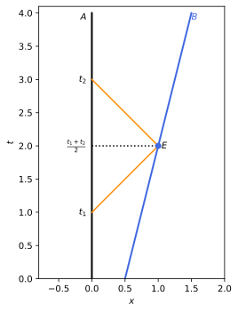
figures/sr-radar.sage.
The first exercise uses radar to measure a velocity. It needs only the rule of the last example, applied twice.
Exercise 1 (Speed by radar) With c = 1 and times in seconds, an observer at x = 0 sends pulses at t_1 = 1 and t_1' = 5 and receives the echoes from a receding object at t_2 = 3 and t_2' = 9. Find the two reflection events and the speed of the object.
The reflections are at (t, x) = (\tfrac{1 + 3}{2}, \tfrac{3 - 1}{2}) = (2, 1) and (\tfrac{5 + 9}{2}, \tfrac{9 - 5}{2}) = (7, 2), in seconds and light-seconds. The object covers one light-second in five seconds, so its speed is c/5.
Veriphy. Pending.
Lean. Pending.
Sage. Pending.
Why the second postulate is needed at all is the content of the Michelson-Morley experiment. The second exercise computes the effect that Newtonian mechanics predicted and that was not observed (Boskoff and Capozziello 2024, sec. 9.1).
Exercise 2 (The Michelson-Morley prediction) In an interferometer with two arms of length l, one along the motion of the apparatus through a hypothetical ether at speed v and one across it, Newtonian addition of velocities gives the round-trip times t_\parallel = \frac{2lc}{c^2 - v^2} and t_\perp = \frac{2l}{\sqrt{c^2 - v^2}}. Expand t_\parallel - t_\perp to order v^2/c^2, and compute the fringe shift \Delta N = 2c(t_\parallel - t_\perp)/\lambda expected on rotating the apparatus by 90°, for l = 11\,m, v = 30\,km/s (the orbital speed of the Earth) and \lambda = 500\,nm.
t_\parallel = \frac{2l}{c}(1 - \beta^2)^{-1} \approx \frac{2l}{c}(1 + \beta^2) and t_\perp \approx \frac{2l}{c}(1 + \tfrac12\beta^2) with \beta = v/c, so t_\parallel - t_\perp \approx \frac{l}{c}\beta^2. Rotating by 90° exchanges the arms and doubles the change, \Delta N = 2l\beta^2/\lambda \approx 0.44 fringes. Michelson and Morley could see a hundredth of a fringe and saw nothing:
var('l c v', domain='positive')
tpar = 2*l*c/(c^2 - v^2); tperp = 2*l/sqrt(c^2 - v^2)
var('b', domain='positive')
d = ((tpar - tperp).subs(v=b*c)).series(b, 4).truncate()
print("t_par - t_perp =", d.simplify_full())
dN = 2*c*d/(500e-9)
print("fringe shift on rotating by 90 degrees:", n(dN.subs(l=11, b=3e4/2.998e8)))Output:
t_par - t_perp = b^2*l/c
fringe shift on rotating by 90 degrees: 0.440587253855250Veriphy. Pending.
Lean. Pending.
Sage. Pending.
The definition of an inertial frame says nothing about rotating platforms that move slowly. The third exercise shows that the failure of inertiality in a rotating frame is first order in \omega, through the Coriolis term.
Exercise 3 (Free motion seen from a turntable) A free particle moves along x = ut, y = b in an inertial frame. Write its path in the rotating coordinates of Example 2 and show that to first order in \omega its acceleration there is \ddot x' = 2\omega\dot y' + O(\omega^2), \ddot y' = -2\omega\dot x' + O(\omega^2), the Coriolis acceleration -2\vec\omega\times\vec v' with \vec\omega = \omega\hat z.
To first order, x' = ut + \omega tb, y' = b - \omega tut = b - \omega ut^2. Then \dot x' = u + \omega b, \dot y' = -2\omega ut, \ddot x' = 0, \ddot y' = -2\omega u. Since \dot x' = u + O(\omega) and \dot y' = O(\omega), \ddot y' = -2\omega\dot x' + O(\omega^2) and \ddot x' = 0 = 2\omega\dot y' + O(\omega^2). With \vec\omega = \omega\hat z, -2\vec\omega\times\vec v' = (2\omega\dot y', -2\omega\dot x'), as claimed: the rotating frame needs a fictitious force, so it is not inertial.
Veriphy. Pending.
Lean. Pending.
Sage. Pending.
The postulates are statements about light and about the form of laws. The quantity that turns them into geometry is the interval between two events, which the next proposition shows to be the same for all inertial observers. The proof follows the classic argument of Landau and Lifshitz as presented by Maggiore (2023, sec. 7.1), with the step on quadratic forms made explicit.
Proposition 1 (Invariance of the interval) For two events with coordinate differences (\Delta t, \Delta x, \Delta y, \Delta z) in an inertial frame K, the interval \Delta s^2 = c^2\Delta t^2 - \Delta x^2 - \Delta y^2 - \Delta z^2 \tag{1} has the same value in every inertial frame K', provided the coordinates of K' are affine functions of those of K (uniform motions go to uniform motions and no point or direction is preferred) and space is isotropic.
Proof. Write \Delta x'^\mu = L^\mu{}_\nu\Delta x^\nu with a constant invertible matrix L, and let q(\Delta x) = \Delta s'^2, a quadratic form in \Delta x with symmetric matrix q_{\mu\nu} (units with c = 1). If \Delta s^2 = 0 the events can be joined by a light ray, and by the second postulate so can they in K': q vanishes on every null vector of \eta. For a unit vector \vec n the vectors (1, \pm\vec n) are null, so q_{00} \pm 2q_{0i}n^i + q_{ij}n^in^j = 0. Subtracting gives q_{0i}n^i = 0 for all \vec n, hence q_{0i} = 0; adding gives q_{ij}n^in^j = -q_{00} for every unit \vec n, and a symmetric matrix whose quadratic form is constant on the unit sphere is a multiple of the identity, so q_{ij} = -q_{00}\delta_{ij}. Thus \Delta s'^2 = a\,\Delta s^2 with a = q_{00}, a number that can depend only on the relative velocity \vec v of the frames, and by isotropy only on |\vec v|. The same argument from K' to K, whose relative velocity has the same modulus, gives \Delta s^2 = a\,\Delta s'^2, so a^2 = 1. Finally a depends continuously on |\vec v| and equals 1 for \vec v = 0, so a = 1. \square
Veriphy. Pending.
Lean. Pending.
Sage. Pending.
The sign of the interval sorts pairs of events into three kinds that every observer agrees on. The first example computes it for two concrete pairs, in units where distances are measured in light-seconds.
Example 4 (Timelike and spacelike pairs) With c = 1, times in seconds and distances in light-seconds, the events (0, 0, 0, 0) and (2, 1, 0, 0) have \Delta s^2 = 4 - 1 = 3 > 0: a particle slower than light can go from one to the other, and the pair is timelike. The events (0, 0, 0, 0) and (1, 2, 0, 0) have \Delta s^2 = 1 - 4 = -3 < 0: no signal connects them, and the pair is spacelike. A pair with \Delta s^2 = 0, such as (0, 0, 0, 0) and (1, 0, 1, 0), lies on a light ray and is lightlike (null).
Veriphy. Pending.
Lean. Pending.
Sage. Pending.
The interval is new: Newtonian physics has two separate invariants instead. The second example checks that neither of them survives the second postulate, and that the Galilean transformation does not preserve the interval.
Example 5 (The Galilean transformation breaks the interval) Under t' = t, x' = x - vt the time difference is invariant, and so is the spatial distance of simultaneous events, but \Delta s'^2 = \Delta t^2 - (\Delta x - v\Delta t)^2 = \Delta s^2 + 2v\Delta t\Delta x - v^2\Delta t^2. For the light ray \Delta x = \Delta t this is (2v - v^2)\Delta t^2 \neq 0: in the moving frame light would have speed 1 - v, against the second postulate.
Veriphy. Pending.
Lean. Pending.
Sage. Pending.
The step “q vanishes on the light cone, hence is proportional to \eta” is the heart of the proof. The third example shows that it fails for a form that vanishes on only some null directions, so all directions of light are needed.
Example 6 (Why all light rays are needed) The form q = t^2 - x^2 on \mathbb{R}^4 vanishes on the null vectors (1, \pm1, 0, 0) but is not a multiple of \eta; it fails to vanish on (1, 0, 1, 0). In the proof, light rays in every direction \vec n are what force q_{ij} to be proportional to \delta_{ij}; isotropy of the speed of light is therefore an essential part of the second postulate.
Veriphy. Pending.
Lean. Pending.
Sage. Pending.
The invariance of the interval already determines measurable quantities, before any transformation formula is known. The first exercise is of this kind (Blennow and Ohlsson 2022, Problem 1.13).
Exercise 4 (Distance from the interval) An observer S sees an event \alpha at the origin and an event \beta two years later, ten light-years away along the x-axis. An observer S' moving along x and passing S at \alpha sees \beta one year after \alpha. How far from \alpha is \beta for S', and what is the relative velocity?
In years and light-years, \Delta s^2 = 2^2 - 10^2 = -96 = 1^2 - \Delta x'^2, so \Delta x' = \sqrt{97} \approx 9.85\,ly. The time transforms as \Delta t' = \gamma(\Delta t - v\Delta x) (Theorem 1), and \gamma(2 - 10v) = 1 has the solution v = (20 - \sqrt{97})/101 \approx 0.1005, a tenth of the speed of light:
s2 = 2^2 - 10^2
dxp = sqrt(1 - s2)
print("interval:", s2, " distance for S':", dxp, "=", n(dxp, digits=4), "ly")
var('v')
sols = solve((2 - 10*v)^2 == 1 - v^2, v)
for s in sols:
vv = s.rhs()
if 0 < n(vv) < 1 and n(2 - 10*vv) > 0:
print("relative velocity v =", vv, "=", n(vv, digits=4), "c")
print("check gamma*(2 - 10 v) =", n((2 - 10*vv)/sqrt(1 - vv^2)))Output:
interval: -96 distance for S': sqrt(97) = 9.849 ly
relative velocity v = -1/101*sqrt(97) + 20/101 = 0.1005 c
check gamma*(2 - 10 v) = 1.00000000000000Veriphy. Pending.
Lean. Pending.
Sage. Pending.
The order of spacelike events is not absolute, and the interval says when a frame exists in which two events are simultaneous. The second exercise finds such a frame.
Exercise 5 (A frame of simultaneity) With c = 1, two events have coordinates (t, x) = (3, 1) and (5, 4). Classify the pair and find the velocity of a frame in which they are simultaneous. Is there a frame in which they occur at the same place?
\Delta s^2 = 2^2 - 3^2 = -5 < 0: spacelike. In a frame moving with v along x, \Delta t' = \gamma(\Delta t - v\Delta x) = \gamma(2 - 3v), which vanishes for v = 2/3. The same place would need \Delta x' = \gamma(3 - 2v) = 0, v = 3/2 > 1: impossible, as it must be, since in that frame \Delta s^2 = \Delta t'^2 > 0.
Veriphy. Pending.
Lean. Pending.
Sage. Pending.
The light postulate alone allows more transformations than the Lorentz ones. The third exercise exhibits them and shows which assumption of the proposition excludes them.
Exercise 6 (Transformations that preserve only the light cone) Show that x'^\mu = \lambda x^\mu with \lambda > 0 maps light rays to light rays and multiplies the interval by \lambda^2. Which step of the proof of Proposition 1 rules it out as a change of inertial frame?
\Delta s'^2 = \lambda^2\Delta s^2 vanishes exactly when \Delta s^2 does, so light rays go to light rays. It is excluded by the last step: the dilation relates two frames at rest with respect to each other (\vec v = 0), for which a must be 1, since two observers at rest using identical rulers and clocks assign the same coordinate differences. A dilation is a change of units, not of frame.
Veriphy. Pending.
Lean. Pending.
Sage. Pending.
The Lorentz boost
The interval is invariant, and this is enough to find the transformation itself. The simplest case, and the building block of all others, is a frame moving along the x-axis. Figure 2 shows what the transformation does to the axes of a spacetime diagram: the time and space axes of the moving frame tilt symmetrically towards the light ray.
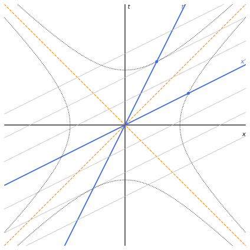
figures/sr-boost-diagram.sage.
The theorem below derives the boost from the interval and from the two facts that light moving left and light moving right stay so. The proof is the eigenvector argument of Boskoff and Capozziello (2024, Theorem 9.1.7), written in light-cone coordinates.
Theorem 1 (The Lorentz boost) Let the inertial frame K' move with velocity v (|v| < c) along the x-axis of K, with parallel axes and origins that coincide at t = t' = 0. Then t' = \gamma\Bigl(t - \frac{vx}{c^2}\Bigr), \qquad x' = \gamma(x - vt), \qquad y' = y, \qquad z' = z, \qquad \gamma = \frac{1}{\sqrt{1 - v^2/c^2}} . \tag{2}
Proof. Take c = 1. The coordinates of K' are linear in those of K (Proposition 1, with coinciding origins). Transverse distances are unchanged: a rod along y at rest in K and an identical rod at rest in K' can be laid side by side as they pass, and by the principle of relativity neither can be shorter for both observers, so y' = y, z' = z, and (t', x') depend only on (t, x). In the light-cone coordinates u = t - x, w = t + x a light ray moving right is u = \text{const} and one moving left is w = \text{const}; by the second postulate, rays moving right in K move right in K', so the line u = 0 goes to u' = 0 and w = 0 to w' = 0. A linear map with these two invariant lines is diagonal: w' = \lambda_1w, u' = \lambda_2u, with \lambda_1, \lambda_2 > 0 because the direction of time is kept. The interval is t^2 - x^2 = uw, and its invariance gives \lambda_1\lambda_2 = 1. The origin of K', the worldline x = vt, has x' = 0, that is w' = u': \lambda_1(1 + v) = \lambda_2(1 - v). With \lambda_1\lambda_2 = 1, \lambda_1 = \sqrt{\frac{1 - v}{1 + v}}, \qquad \lambda_2 = \sqrt{\frac{1 + v}{1 - v}} , and t' = \tfrac12(u' + w') = \tfrac12(\lambda_1 + \lambda_2)t + \tfrac12(\lambda_1 - \lambda_2)x = \gamma t - \gamma vx, x' = \tfrac12(w' - u') = \gamma x - \gamma vt, since \tfrac12(\lambda_2 + \lambda_1) = \gamma and \tfrac12(\lambda_2 - \lambda_1) = \gamma v. \square
Veriphy. Pending.
Lean. Pending.
Sage. Pending.
A numerical case fixes the formulas and checks them against the interval. The speed v = 0.6c is convenient because then \gamma = 1.25 exactly.
Example 7 (A boost at 0.6c) For v = 0.6, \gamma = 1/\sqrt{1 - 0.36} = 1.25. The event (t, x) = (10, 4) (seconds, light-seconds) has t' = 1.25(10 - 2.4) = 9.5 and x' = 1.25(4 - 6) = -2.5. The interval is 100 - 16 = 84 before and 90.25 - 6.25 = 84 after, as Proposition 1 requires.
Veriphy. Pending.
Lean. Pending.
Sage. Pending.
Since K moves with velocity -v in K', the inverse transformation must be the same formula with v replaced by -v. The second example checks this directly, as in Boskoff and Capozziello (2024, Exercise 9.1.8).
Example 8 (The inverse boost) Solving Equation 2 for (t, x): t = \gamma(t' + vx'), x = \gamma(x' + vt'). Indeed \gamma(t' + vx') = \gamma^2(t - vx + vx - v^2t) = \gamma^2(1 - v^2)t = t, and similarly for x. In matrix form the two matrices \begin{pmatrix}\gamma & -\gamma v\\ -\gamma v & \gamma\end{pmatrix} and \begin{pmatrix}\gamma & \gamma v\\ \gamma v & \gamma\end{pmatrix} are inverse to each other.
Veriphy. Pending.
Lean. Pending.
Sage. Pending.
For everyday speeds the boost is close to the Galilean transformation, but one term survives over large distances. The third example estimates it.
Example 9 (The Galilean limit and its remainder) For v \ll c, \gamma = 1 + O(v^2/c^2) and Equation 2 becomes x' \approx x - vt, t' \approx t - vx/c^2. The last term is small but grows with x: for a walker at v = 1.4\,m/s, events now in the Andromeda galaxy, x = 2.5 \times 10^6\,ly \approx 2.37 \times 10^{22}\,m away, differ in t' from t by vx/c^2 \approx 3.7 \times 10^5\,s, about four days. Simultaneity is not absolute even at walking speed; only its consequences are small nearby.
Veriphy. Pending.
Lean. Pending.
Sage. Pending.
The theorem used the constancy of the speed of light along x. The first exercise checks that the boost keeps the speed of light in every direction, as it must (Blennow and Ohlsson 2022, Problem 1.24).
Exercise 7 (Light keeps its speed) Show with Equation 2 that a light signal x = ct has x' = ct', and that a signal along y, x = 0, y = ct, has speed c in K' although its direction changes.
For x = ct: x' = \gamma(c - v)t and ct' = \gamma(c - v)t, equal. For the signal along y: t' = \gamma t, x' = -\gamma vt, y' = ct, so the speed in K' is \sqrt{\gamma^2v^2t^2 + c^2t^2}/(\gamma t) = \sqrt{v^2 + c^2/\gamma^2} = \sqrt{v^2 + c^2 - v^2} = c. The direction now has an x'-component -v: this is the aberration of Section 1.5.
Veriphy. Pending.
Lean. Pending.
Sage. Pending.
The boost along x generalises to any direction by splitting vectors into components along and across the velocity. The second exercise derives the general formula and checks it in Sage.
Exercise 8 (A boost in any direction) For K' moving with velocity \vec v in K, show that t' = \gamma(t - \vec v\cdot\vec x), \qquad \vec x' = \vec x + (\gamma - 1)\frac{(\vec v\cdot\vec x)\vec v}{v^2} - \gamma\vec vt , by applying Equation 2 to the component of \vec x along \vec v and leaving the perpendicular components unchanged. Check that the 4 \times 4 matrix preserves \eta.
Write \vec x = x_\parallel\hat v + \vec x_\perp. The boost gives t' = \gamma(t - vx_\parallel), x'_\parallel = \gamma(x_\parallel - vt), \vec x'_\perp = \vec x_\perp, so \vec x' = \vec x + (\gamma - 1)x_\parallel\hat v - \gamma vt\hat v, which is the formula since x_\parallel\hat v = (\vec v\cdot\vec x)\vec v/v^2. The matrix is symmetric and satisfies \Lambda^T\eta\Lambda = \eta:
var('v1 v2 v3', domain='real')
v = vector([v1, v2, v3]); vv = v*v
g = 1/sqrt(1 - vv)
L = matrix(SR, 4, 4)
L[0, 0] = g
for i in range(3):
L[0, i + 1] = -g*v[i]; L[i + 1, 0] = -g*v[i]
for j in range(3):
L[i + 1, j + 1] = (1 if i == j else 0) + (g - 1)*v[i]*v[j]/vv
eta = diagonal_matrix([1, -1, -1, -1])
print("L^T eta L - eta simplifies to zero:", (L.transpose()*eta*L - eta).simplify_full() == 0)
print("L is symmetric:", L == L.transpose())
w = {v1: 3/13, v2: 4/13, v3: 12/13*0}
print("example v = (3/13, 4/13, 0): first row", [x.subs(w).simplify_full() for x in L.row(0)])Output:
L^T eta L - eta simplifies to zero: True
L is symmetric: True
example v = (3/13, 4/13, 0): first row [13/12, -1/4, -1/3, 0]Veriphy. Pending.
Lean. Pending.
Sage. Pending.
Two observers who pass each other disagree about when a signal sent after the crossing reaches each of them. The third exercise computes the disagreement (Blennow and Ohlsson 2022, Problem 1.37).
Exercise 9 (Signals to two rockets) In a frame S rockets A and B move with velocities v and -v along x and pass the origin at t = 0. At t = t_0 light signals are sent from the origin towards both. Show that they arrive simultaneously in S, and that in the rest frame of A the signal reaches B later than A by \frac{2\gamma v^2t_0}{1 - v}.
In S, t - t_0 = vt at A gives t_A = t_0/(1 - v), x_A = vt_0/(1 - v), and by symmetry t_B = t_A, x_B = -x_A. In A’s frame t'_A = \gamma(t_A - vx_A) = t_A/\gamma and t'_B = \gamma(t_B - vx_B) = \gamma t_A(1 + v^2), so t'_B - t'_A = t_A\gamma(1 + v^2 - 1 + v^2) = 2\gamma v^2t_0/(1 - v):
var('v t0', domain='positive')
g = 1/sqrt(1 - v^2)
tA = t0/(1 - v); xA = v*t0/(1 - v); tB = tA; xB = -xA
tpA = g*(tA - v*xA); tpB = g*(tB - v*xB)
diff = (tpB - tpA).simplify_full()
print("t'_B - t'_A =", diff)
print("equals 2 gamma v^2 t0/(1 - v):", bool((diff - 2*g*v^2*t0/(1 - v)).simplify_full() == 0))
print("v = 0.6, t0 = 1:", n(diff.subs(v=0.6, t0=1)))Output:
t'_B - t'_A = 2*sqrt(-v^2 + 1)*t0*v^2/(v^3 - v^2 - v + 1)
equals 2 gamma v^2 t0/(1 - v): True
v = 0.6, t0 = 1: 2.25000000000000Veriphy. Pending.
Lean. Pending.
Sage. Pending.
The proof of Theorem 1 produced the factors e^{\pm\eta} hidden in the boost. Writing the boost with a hyperbolic angle makes them explicit and turns the composition of collinear boosts into an addition, which is why the following parameter is used throughout the chapter.
Definition 2 (Rapidity) The rapidity of a velocity v with |v| < c is \eta = \operatorname{artanh}(v/c), so that v = c\tanh\eta, \gamma = \cosh\eta and \gamma v/c = \sinh\eta. In terms of it the boost Equation 2 reads, with x^0 = ct, \begin{pmatrix} x'^0 \\ x'^1 \end{pmatrix} = \begin{pmatrix} \cosh\eta & -\sinh\eta \\ -\sinh\eta & \cosh\eta \end{pmatrix} \begin{pmatrix} x^0 \\ x^1 \end{pmatrix} . \tag{3}
Veriphy. Pending.
Lean. Pending.
Sage. Pending.
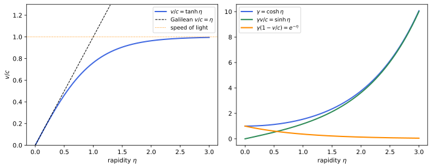
figures/sr-rapidity.sage.
The speed 0.6c of Example 7 has a rapidity with a simple closed form. The first example computes it and checks the hyperbolic functions against \gamma.
Example 10 (The rapidity of 0.6c) \operatorname{artanh}0.6 = \tfrac12\ln\frac{1 + 0.6}{1 - 0.6} = \tfrac12\ln4 = \ln2. Then \cosh\ln2 = \tfrac12(2 + \tfrac12) = 1.25 = \gamma and \sinh\ln2 = \tfrac12(2 - \tfrac12) = 0.75 = \gamma v, as in Example 7.
Veriphy. Pending.
Lean. Pending.
Sage. Pending.
At high energies the rapidity is the natural variable, because it is additive and grows only logarithmically with the energy. The second example evaluates it for the protons of the Large Hadron Collider.
Example 11 (Protons at the LHC) A proton of energy 6.8\,TeV and mass 0.938\,GeV has \gamma = E/m \approx 7247 (Definition 20), so 1 - v/c \approx 1/(2\gamma^2) \approx 9.5 \times 10^{-9}, while its rapidity is \eta = \operatorname{arcosh}\gamma \approx \ln(2\gamma) \approx 9.58. The velocity is indistinguishable from c; the rapidity still changes visibly with the energy.
Veriphy. Pending.
Lean. Pending.
Sage. Pending.
The light-cone coordinates of the proof of Theorem 1 diagonalise the boost. The third example shows that the eigenvalues are exponentials of the rapidity.
Example 12 (The boost in light-cone coordinates) With u = x^0 - x^1, w = x^0 + x^1, Equation 3 gives w' = (\cosh\eta - \sinh\eta)w = e^{-\eta}w and u' = e^\eta u. The eigenvalues \lambda_1 = \sqrt{(1 - v)/(1 + v)} = e^{-\eta} and \lambda_2 = e^\eta of the proof are the Doppler factors of Proposition 17, and a boost of rapidity \eta_1 followed by one of rapidity \eta_2 multiplies w by e^{-(\eta_1 + \eta_2)}: rapidities add.
Veriphy. Pending.
Lean. Pending.
Sage. Pending.
The additivity of rapidity is a group isomorphism in disguise. The first exercise makes it explicit for velocities (Boskoff and Capozziello 2024, Exercise 9.1.11).
Exercise 10 (Velocities form a group) On K = (-1, 1) define v \oplus w = \frac{v + w}{1 + vw}. Show that \operatorname{artanh}(v \oplus w) = \operatorname{artanh}v + \operatorname{artanh}w, and conclude that (K, \oplus) is an abelian group isomorphic to (\mathbb{R}, +).
With v = \tanh a, w = \tanh b, the addition formula \tanh(a + b) = \frac{\tanh a + \tanh b}{1 + \tanh a\tanh b} gives v \oplus w = \tanh(a + b). So \tanh: (\mathbb{R}, +) \to (K, \oplus) is a bijective map carrying + to \oplus; \oplus inherits associativity and commutativity, the identity is 0 and the inverse of v is -v. In particular v \oplus w \in (-1, 1) always: composing speeds below c never reaches c.
Veriphy. Pending.
Lean. Pending.
Sage. Pending.
The matrices of Equation 3 form a group as well. The second exercise identifies it (Boskoff and Capozziello 2024, Exercise 9.1.12). Its elements are the boosts along one fixed axis, and the group structure is that of the real line.
Exercise 11 (Collinear boosts form a group) Let B(\eta) be the matrix of Equation 3. Show that B(\eta_1)B(\eta_2) = B(\eta_1 + \eta_2), B(0) = 1, B(\eta)^{-1} = B(-\eta), and that \eta \mapsto B(\eta) is an injective homomorphism from (\mathbb{R}, +) onto an abelian group of matrices.
Multiplying, the diagonal entry is \cosh\eta_1\cosh\eta_2 + \sinh\eta_1\sinh\eta_2 = \cosh(\eta_1 + \eta_2) and the off-diagonal entry is -(\cosh\eta_1\sinh\eta_2 + \sinh\eta_1\cosh\eta_2) = -\sinh(\eta_1 + \eta_2). Hence the homomorphism property, B(0) = 1 and B(\eta)B(-\eta) = B(0). It is injective because \sinh is. The image is abelian since \mathbb{R} is. This group reappears as SO^+(1, 1) in Proposition 7.
Veriphy. Pending.
Lean. Pending.
Sage. Pending.
A linear accelerator gives a particle a definite kinetic energy, and the rapidity then follows from \gamma. The third exercise computes it for an electron (Blennow and Ohlsson 2022, Problem 1.72).
Exercise 12 (An electron after one megavolt) An electron (rest energy 0.511\,MeV) starts from rest and falls through a potential difference of 10^6\,V. Find \gamma, its final velocity and its rapidity.
The kinetic energy is 1\,MeV, so \gamma = 1 + 1/0.511 \approx 2.957, v/c = \sqrt{1 - 1/\gamma^2} \approx 0.941 and \eta = \operatorname{arcosh}\gamma \approx 1.75. A Newtonian estimate \tfrac12mv^2 = 1\,MeV would give v \approx 1.98c:
m = 0.511; K = 1.0
g = 1 + K/m
v = sqrt(1 - 1/g^2)
print("gamma = %.4f v/c = %.4f rapidity = %.4f" % (g, v, arccosh(g)))
print("Newtonian v/c = sqrt(2K/m) = %.3f" % sqrt(2*K/m))Output:
gamma = 2.9569 v/c = 0.9411 rapidity = 1.7474
Newtonian v/c = sqrt(2K/m) = 1.978Veriphy. Pending.
Lean. Pending.
Sage. Pending.
Time dilation, length contraction and simultaneity
The boost has three immediate consequences, which are usually the first surprises of special relativity. Each compares a measurement made by the observer who is at rest with the measured object with one made by an observer who sees it move, and each rests on a precise statement of what is being measured.
Proposition 2 (Time dilation and length contraction) Let K' move with velocity v along x in K, and let \gamma be as in Equation 2.
- A clock at rest in K' that measures the time \Delta\tau between two of its ticks is seen by K to take \Delta t = \gamma\Delta\tau: moving clocks run slow.
- A rod at rest in K' along x with rest length L_0 has, when its endpoints are located at the same time t of K, the length L = L_0/\gamma: moving rods are contracted along the motion. Lengths perpendicular to the motion are unchanged.
Proof. (1) The two ticks have \Delta x' = 0, \Delta t' = \Delta\tau; the inverse boost of Example 8 gives \Delta t = \gamma(\Delta t' + v\Delta x') = \gamma\Delta\tau. (2) The endpoints have \Delta x' = L_0 at all times, and for two events with \Delta t = 0 the boost gives \Delta x' = \gamma(\Delta x - v\Delta t) = \gamma\Delta x, so L = \Delta x = L_0/\gamma. Transverse coordinates are unchanged by Equation 2. \square
Veriphy. Pending.
Lean. Pending.
Sage. Pending.
The classic confirmation is the survival of cosmic-ray muons. The first example reproduces the estimate of Blennow and Ohlsson (2022, Problem 1.7). The numbers are those of a muon with v = 0.999c, typical of the cosmic-ray muons seen at sea level.
Example 13 (Muons reach the ground) Muons produced at 10-20\,km altitude live \tau_0 = 2.2\,\mus at rest, in which light travels only 660\,m. At v = 0.999c, \gamma \approx 22.4, so in the frame of the Earth they live \gamma\tau_0 \approx 49\,\mus and travel on average \gamma v\tau_0 \approx 14.7\,km. A large fraction reaches the ground, as observed.
Veriphy. Pending.
Lean. Pending.
Sage. Pending.
The same muon can be described in its own rest frame, where its lifetime is \tau_0. The second example shows that there the atmosphere is contracted instead, and the two accounts agree.
Example 14 (The muon’s point of view) In the rest frame of a muon with \gamma = 22.4, the 10\,km of atmosphere moving past it at 0.999c have length 10\,\mathrm{km}/\gamma \approx 447\,m, less than the 659\,m the ground covers in \tau_0. Time dilation in the Earth frame and length contraction in the muon frame are two descriptions of one fact: the proper time of the muon between production and arrival is \Delta\tau = \Delta t/\gamma, an invariant (Definition 6).
Veriphy. Pending.
Lean. Pending.
Sage. Pending.
Length contraction depends on how the measurement is made. The third example, from Boskoff and Capozziello (2024, Example 9.2.10), uses a speed where all numbers are rational.
Example 15 (A contracted vehicle) A vehicle 125\,m long at rest moves at v = 3c/5, so \gamma = 5/4, and a ground observer who marks its ends simultaneously finds the marks 100\,m apart. In the vehicle’s frame the two marking events are not simultaneous: they are \gamma v\Delta x/c^2 = \tfrac54 \cdot \tfrac35 \cdot 100\,\mathrm{m}/c = 75\,\mathrm{m}/c apart in time (Proposition 3), the front mark first. During that time the ground, moving backwards at 3c/5, carries the front mark 45\,m back, and the ground’s own distance between the marks is contracted to 100\,\mathrm{m}/\gamma = 80\,m in the vehicle frame: 80 + 45 = 125. Both observers agree on every event; they disagree on which pairs of events count as “at the same time”.
Veriphy. Pending.
Lean. Pending.
Sage. Pending.
The first exercise uses time dilation in a storage ring, where the particle’s speed is constant but its direction is not (Blennow and Ohlsson 2022, Problem 1.15). Storage rings keep muons alive long enough to measure their magnetic moment precisely.
Exercise 13 (Muons in a storage ring) Muons of energy 1\,GeV (mass 106\,MeV, proper lifetime 2.2\,\mus) circulate in a ring of radius 50\,m. How many turns do they make on average before decaying?
\gamma = 1000/106 \approx 9.43, v \approx 0.9944c, and the lifetime in the lab is \gamma\tau_0 \approx 20.8\,\mus, during which the muon travels \approx 6.19\,km, about 19.7 turns of 314\,m. The acceleration in the ring does not change the rate of the clock, which depends only on the speed; the muon g - 2 experiments rely on this:
E, m, tau0, R, c = 1000.0, 106.0, 2.2e-6, 50.0, 2.998e8
g = E/m; v = sqrt(1 - 1/g^2)
T = g*tau0; d = v*c*T
print("gamma = %.3f v/c = %.5f lab lifetime = %.2f microseconds" % (g, v, T*1e6))
print("distance = %.0f m circumference = %.1f m turns = %.1f" % (d, 2*pi.n()*R, d/(2*pi.n()*R)))Output:
gamma = 9.434 v/c = 0.99437 lab lifetime = 20.75 microseconds
distance = 6187 m circumference = 314.2 m turns = 19.7Veriphy. Pending.
Lean. Pending.
Sage. Pending.
Contraction acts only along the motion, so an inclined rod both shortens and turns. The second exercise computes both effects (Blennow and Ohlsson 2022, Problem 1.6).
Exercise 14 (An inclined rod) A rod of rest length 1\,m lies in the xy-plane at 45° to the x-axis. Find its length and inclination for an observer moving along x with speed \sqrt{2/3}\,c.
The components are 1/\sqrt2\,m each; only the x-component contracts, by 1/\gamma = \sqrt{1 - 2/3} = 1/\sqrt3. The length is \sqrt{1/6 + 1/2} = \sqrt{2/3} \approx 0.82\,m and the angle with the x-axis is \arctan\sqrt3 = 60°: the rod is turned towards the perpendicular.
Veriphy. Pending.
Lean. Pending.
Sage. Pending.
Areas in a plane containing the motion shrink by 1/\gamma, whatever the shape. The third exercise checks this on a right triangle (Blennow and Ohlsson 2022, Problem 1.16).
Exercise 15 (A moving triangle) A right triangle with legs a = 3, b = 4 and hypotenuse c = 5 (in some unit) is at rest in K. Find the sides and the area seen from a frame moving with speed v (a) parallel to a, (b) parallel to the hypotenuse.
- a' = 3/\gamma, b' = 4, c' = \sqrt{9/\gamma^2 + 16}, area 6/\gamma. (b) Put the hypotenuse on the x-axis; the legs have components (9/5, 12/5) and (16/5, 12/5), so c' = 5/\gamma, a' = \sqrt{81/(25\gamma^2) + 144/25}, b' = \sqrt{256/(25\gamma^2) + 144/25}, and the height 12/5 is unchanged: area \tfrac12 \cdot \tfrac5\gamma \cdot \tfrac{12}5 = 6/\gamma again:
var('g', domain='positive')
def seen(P):
Q = [vector([p[0]/g, p[1]]) for p in P]
sides = [sqrt((Q[i] - Q[(i + 1) % 3])*(Q[i] - Q[(i + 1) % 3])).simplify_full() for i in range(3)]
area = abs(sum(Q[i][0]*Q[(i + 1) % 3][1] - Q[(i + 1) % 3][0]*Q[i][1] for i in range(3))/2).simplify_full()
return sides, area
# (a) leg a = 3 on the x-axis, right angle at the origin
print("(a)", seen([vector([0, 0]), vector([3, 0]), vector([0, 4])]))
# (b) hypotenuse on the x-axis from (0,0) to (5,0), right-angle vertex at (9/5, 12/5)
print("(b)", seen([vector([0, 0]), vector([5, 0]), vector([9/5, 12/5])]))Output:
(a) ([3/g, sqrt(16*g^2 + 9)/g, 4], 6/g)
(b) ([5/g, 4/5*sqrt(9*g^2 + 16)/g, 3/5*sqrt(16*g^2 + 9)/g], 6/g)Veriphy. Pending.
Lean. Pending.
Sage. Pending.
The boost mixes time into space through the term vx/c^2, and this term is responsible for the third consequence. Events that one observer calls simultaneous are not simultaneous for another, and the order of events is absolute only when they can influence each other.
Proposition 3 (Relativity of simultaneity) Let K' move with velocity v along x in K.
- Two events simultaneous in K' and separated by \Delta x' along x' are separated in K by \Delta t = \gamma v\Delta x'/c^2: the event further ahead (in the direction of motion) happens later in K.
- If two events are timelike or lightlike separated, \Delta s^2 \geq 0, the sign of \Delta t is the same in every inertial frame; if they are spacelike separated, there are frames in which \Delta t > 0, = 0 and < 0.
Proof. (1) The inverse boost gives \Delta t = \gamma(\Delta t' + v\Delta x'/c^2) = \gamma v\Delta x'/c^2. (2) Take c = 1 and rotate axes so the spatial separation is along x; \Delta t' = \gamma(\Delta t - u\Delta x) for a frame with velocity u along x, |u| < 1. If \Delta s^2 \geq 0 and \Delta t \neq 0, then |\Delta x| \leq |\Delta t|, so |u\Delta x| < |\Delta t| and \Delta t - u\Delta x has the sign of \Delta t. If \Delta s^2 < 0, then |\Delta x| > |\Delta t|, and u = \Delta t/\Delta x \in (-1, 1) gives \Delta t' = 0, while u slightly above or below it gives either sign. \square
Veriphy. Pending.
Lean. Pending.
Sage. Pending.
The train with lanterns at both ends is the standard illustration. The first example computes the time between the lanterns lighting up as seen from the platform (Blennow and Ohlsson 2022, Problem 1.25).
Example 16 (Lanterns on a train) A train of rest length L moving with v turns on lanterns at its front and rear simultaneously in its own frame. On the station, by part 1, the front lantern goes on later by \gamma vL/c^2. For L = 200\,m and v = 30\,m/s this is 6.7 \times 10^{-14}\,s, far below anything a stationmaster can notice.
Veriphy. Pending.
Lean. Pending.
Sage. Pending.
The effect can be used in reverse, to measure a speed from a small time difference. The second example is the space cruiser of Blennow and Ohlsson (2022, Problem 1.9).
Example 17 (Measuring a speed by simultaneity) A cruiser of rest length L = 2000\,m passes an asteroid. For the asteroid the lanterns at its front and rear go on simultaneously; the cruiser’s crew measures a difference \tau = 4\,ns. By part 1 with the roles of the frames exchanged, \tau = vL/c^2 (the factor \gamma cancels against the contraction of L), so v = c^2\tau/L = 1.8 \times 10^5\,m/s, about 0.0006c.
Veriphy. Pending.
Lean. Pending.
Sage. Pending.
Part 2 says that causal order is absolute. The third example shows what this protects: an effect cannot precede its cause in any frame, because cause and effect are timelike or lightlike separated.
Example 18 (Causal order is absolute) A gun fires at (t, x) = (0, 0) and the bullet, at speed u < 1, hits a target at (L/u, L). For an observer with velocity v, \Delta t' = \gamma(L/u - vL) = \gamma L(1 - uv)/u > 0 since uv < 1. Only for a “bullet” faster than light, u > 1, would an observer with 1/u < v < 1 see the target hit before the shot.
Veriphy. Pending.
Lean. Pending.
Sage. Pending.
The first exercise turns the relation between distance and time difference into a formula for the relative velocity (Blennow and Ohlsson 2022, Problem 1.10). Only invariant quantities and the boost enter the solution.
Exercise 16 (Two lamps) Two lamps a distance \ell apart in K are switched on simultaneously in K. An observer K' moving along the line of the lamps finds them a distance \ell' apart, switched on with time difference \tau. Express \ell in terms of \ell' and \tau, and find the relative velocity.
The interval gives -\ell^2 = c^2\tau^2 - \ell'^2, so \ell = \sqrt{\ell'^2 - c^2\tau^2}. The boost gives \ell' = \gamma\ell and \tau = \gamma v\ell/c^2, so v = c^2\tau/\ell'.
Veriphy. Pending.
Lean. Pending.
Sage. Pending.
Simultaneity in one frame becomes a sweep in another, and the sweep can be faster than light without carrying a signal. The second exercise computes its speed (Blennow and Ohlsson 2022, Problem 1.32).
Exercise 17 (A sweep faster than light) All compartment lights of a train moving with v are switched on simultaneously in the train’s frame. Find the speed, in the station frame, of the boundary between lit and unlit compartments.
The events are (t', x') = (0, x') for all x' along the train. In the station frame t = \gamma vx'/c^2 and x = \gamma x', so the boundary moves with dx/dt = c^2/v > c, from the rear to the front. No signal travels along the train: each lamp is switched by its own clock, and nothing causal propagates.
Veriphy. Pending.
Lean. Pending.
Sage. Pending.
A rotating cylinder carries the relativity of simultaneity around a circle. The third exercise shows that a straight line drawn on it looks twisted to an observer moving along the axis (Blennow and Ohlsson 2022, Problem 1.31).
Exercise 18 (A twisted cylinder) A cylinder rotates with angular velocity \omega about the z-axis of K, and a straight line is drawn on it parallel to the axis. Show that for an observer moving with velocity v along z the line is a helix with twist d\phi/dz' = \gamma\omega v/c^2 per unit length.
In K the line is at azimuth \phi = \omega t for every z. The inverse boost along z gives t = \gamma(t' + vz'/c^2), so at fixed t' the azimuth is \phi = \omega\gamma(t' + vz'/c^2), linear in z' with slope \gamma\omega v/c^2. Points further ahead are seen at a later time of K, when the cylinder has turned further:
var('omega v tp zp', domain='real')
g = 1/sqrt(1 - v^2)
t = g*(tp + v*zp) # inverse boost along z
phi = omega*t
print("twist dphi/dz' =", diff(phi, zp))
print("omega = 100 rad/s, v = 0.5 c, in rad per light-second:", n(diff(phi, zp).subs(omega=100, v=0.5)))Output:
twist dphi/dz' = omega*v/sqrt(-v^2 + 1)
omega = 100 rad/s, v = 0.5 c, in rad per light-second: 57.7350269189626Veriphy. Pending.
Lean. Pending.
Sage. Pending.
Velocities cannot simply add, since the sum of two speeds below c could exceed it. The composition law follows from the boost by differentiating, and it applies to the components across the motion too, which change although the boost leaves the transverse coordinates alone.
Proposition 4 (Composition of velocities) Let a particle have velocity \vec u in K, and let K' move with velocity v along x. Its velocity in K' is u'_x = \frac{u_x - v}{1 - u_xv/c^2}, \qquad u'_y = \frac{u_y}{\gamma(1 - u_xv/c^2)}, \qquad u'_z = \frac{u_z}{\gamma(1 - u_xv/c^2)} . \tag{4} For collinear motion the rapidities subtract: \operatorname{artanh}(u'_x/c) = \operatorname{artanh}(u_x/c) - \operatorname{artanh}(v/c). If |\vec u| < c then |\vec u'| < c.
Proof. Along the worldline, dt' = \gamma(dt - v\,dx/c^2) = \gamma dt(1 - u_xv/c^2), dx' = \gamma(dx - v\,dt) = \gamma dt(u_x - v), dy' = u_ydt, dz' = u_zdt; dividing by dt' gives Equation 4. For collinear motion it is the subtraction formula of \tanh (Exercise 10). Finally, with c = 1, a direct computation gives 1 - |\vec u'|^2 = (1 - v^2)(1 - |\vec u|^2)/(1 - u_xv)^2, which is positive when |\vec u| < 1. \square
Veriphy. Pending.
Lean. Pending.
Sage. Pending.
Two objects approaching each other at half the speed of light do not approach at the speed of light in the frame of either. The first example is Blennow and Ohlsson (2022, Problem 1.64 a).
Example 19 (Half plus half) Two objects move towards each other with speeds c/2 in a frame K. In the rest frame of the first (v = c/2), the second, with u_x = -c/2, has u'_x = (-\tfrac12 - \tfrac12)c/(1 + \tfrac14) = -0.8c. In rapidities: \operatorname{artanh}0.5 \approx 0.549 twice gives 1.099 = \operatorname{artanh}0.8.
Veriphy. Pending.
Lean. Pending.
Sage. Pending.
Light is the fixed point of the composition law. The second example checks the second postulate once more, now from Equation 4.
Example 20 (Adding to the speed of light) For u_x = c, u'_x = (c - v)/(1 - v/c) = c for every v. For light along y, u'_x = -v and u'_y = c/\gamma, so |\vec u'|^2 = v^2 + c^2(1 - v^2/c^2) = c^2. The composition law of Newton, u'_x = u_x - v, is the limit c \to \infty.
Veriphy. Pending.
Lean. Pending.
Sage. Pending.
The first experimental hint of the composition law came half a century before relativity. Fizeau measured the speed of light in flowing water, and the third example derives his drag coefficient (Blennow and Ohlsson 2022, Problem 1.59).
Example 21 (Fizeau’s experiment) Light moves at c/n in water at rest. In water flowing with velocity v along the light, Equation 4 gives u = \frac{c/n + v}{1 + v/(nc)} = \frac{c}{n} + v\Bigl(1 - \frac{1}{n^2}\Bigr) + O(v^2): the water drags the light only by the fraction k = 1 - 1/n^2 \approx 0.44 of its speed (n = 1.333), the coefficient Fresnel had postulated and Fizeau measured in 1851.
Veriphy. Pending.
Lean. Pending.
Sage. Pending.
The Lorentz factor of a relative velocity can be computed without composing velocities at all. The first exercise finds it from the two velocities measured in one frame (Blennow and Ohlsson 2022, Problem 1.3).
Exercise 19 (The Lorentz factor of a relative motion) In one inertial frame two observers have velocities \vec v_1 and \vec v_2. Show that the Lorentz factor of observer 2 in the rest frame of observer 1 is \gamma_{\mathrm{rel}} = \gamma_1\gamma_2(1 - \vec v_1\cdot\vec v_2/c^2). (The quantity \gamma(1, \vec v) is the four-velocity of Definition 19; anticipate that u_1\cdot u_2 is frame independent.)
With c = 1 the four-velocities are u_i = \gamma_i(1, \vec v_i) and u_1\cdot u_2 = \gamma_1\gamma_2(1 - \vec v_1\cdot\vec v_2). In the rest frame of 1, u_1 = (1, \vec 0) and u_2 = \gamma_{\mathrm{rel}}(1, \vec v_{\mathrm{rel}}), so u_1\cdot u_2 = \gamma_{\mathrm{rel}}. Since the Minkowski product is invariant, the two expressions agree. Check with Equation 4 for \vec v_1 = v\hat x, \vec v_2 = u\hat x: \gamma_{\mathrm{rel}} = \gamma(u') with u' = (u - v)/(1 - uv):
var('u v', domain='real')
gam = lambda w: 1/sqrt(1 - w^2)
up = (u - v)/(1 - u*v)
lhs = gam(up); rhs = gam(u)*gam(v)*(1 - u*v)
print("collinear check at u = 0.9, v = 0.5:", n(lhs.subs(u=0.9, v=0.5)), n(rhs.subs(u=0.9, v=0.5)))
# general directions, numerically
eta = diagonal_matrix(RDF, [1, -1, -1, -1])
def four_u(w):
w = vector(RDF, w); return gam(w.norm())*vector(RDF, [1] + list(w))
v1 = vector(RDF, [0.3, -0.5, 0.2]); v2 = vector(RDF, [-0.6, 0.1, 0.4])
U1, U2 = four_u(v1), four_u(v2)
# boost to the rest frame of 1 and read gamma_rel from the time component of U2
g1 = gam(v1.norm()); B = matrix(RDF, 4, 4)
B[0, 0] = g1
for i in range(3):
B[0, i + 1] = -g1*v1[i]; B[i + 1, 0] = -g1*v1[i]
for j in range(3):
B[i + 1, j + 1] = (1 if i == j else 0) + (g1 - 1)*v1[i]*v1[j]/(v1*v1)
print("gamma_rel from the boost: %.10f gamma1 gamma2 (1 - v1.v2): %.10f" % ((B*U2)[0], U1*eta*U2))Output:
collinear check at u = 0.9, v = 0.5: 1.45698559277155 1.45698559277155
gamma_rel from the boost: 2.1303603312 gamma1 gamma2 (1 - v1.v2): 2.1303603312Veriphy. Pending.
Lean. Pending.
Sage. Pending.
A velocity across the motion is reduced by time dilation. The second exercise chains two perpendicular motions (Blennow and Ohlsson 2022, Problem 1.34).
Exercise 20 (Perpendicular velocities in a chain) Observer B moves with velocity v along x relative to A; observer C moves with velocity v' along y' relative to B. Find the speed of C relative to A, and the time that A assigns to two events at the same place in C’s frame a time \Delta t'' apart.
In B’s frame C has \vec u' = (0, v', 0). The inverse of Equation 4 gives in A’s frame u_x = v, u_y = v'/\gamma, so |\vec u|^2 = v^2 + v'^2(1 - v^2/c^2). The Lorentz factor of C relative to A is \gamma(v)\gamma(v') (the general formula of Exercise 19 with \vec v_1\cdot\vec v_2 = 0 in B’s frame), so \Delta t = \gamma(v)\gamma(v')\Delta t''. Indeed 1 - |\vec u|^2/c^2 = (1 - v^2/c^2)(1 - v'^2/c^2).
Veriphy. Pending.
Lean. Pending.
Sage. Pending.
The composition law changes directions as well as speeds. The third exercise follows a particle that hits a moving observer at an angle and checks the two limits (Blennow and Ohlsson 2022, Problem 1.57).
Exercise 21 (A particle hitting a moving observer) An observer moves with velocity v along x. A particle moves with speed u at angle \theta to the negative x-direction, \vec u = (-u\cos\theta, u\sin\theta, 0). Find the speed u' and the angle \theta' (to the negative x'-direction) measured by the observer, and check the limits u \to c and u, v \ll c.
By Equation 4, u'_x = -(u\cos\theta + v)/(1 + uv\cos\theta/c^2), u'_y = u\sin\theta/(\gamma(1 + uv\cos\theta/c^2)), so \tan\theta' = u\sin\theta/(\gamma(u\cos\theta + v)) and u'^2 = u'^2_x + u'^2_y. For u = c one finds u' = c and the aberration formula \cos\theta' = (\cos\theta + v/c)/(1 + v\cos\theta/c) of Proposition 18; for u, v \ll c, \vec u' \approx \vec u - \vec v:
var('u v th', domain='positive')
g = 1/sqrt(1 - v^2)
ux, uy = -u*cos(th), u*sin(th)
den = 1 - ux*v
upx = (ux - v)/den; upy = uy/(g*den)
up2 = (upx^2 + upy^2).simplify_full()
print("u'^2 at u = 1:", up2.subs(u=1).simplify_full())
cth = (-upx/sqrt(up2)).subs(u=1).simplify_full()
print("cos(theta') at u = 1 minus aberration formula:", (cth - (cos(th) + v)/(1 + v*cos(th))).simplify_full())
print("u = 0.5, v = 0.3, theta = pi/3: u' = %.5f, theta' = %.5f rad" % (n(sqrt(up2).subs(u=0.5, v=0.3, th=pi/3)), n(arctan2(upy, -upx).subs(u=0.5, v=0.3, th=pi/3))))
print("u = 1e-4, v = 2e-4 (Galilean u' = |u - v|):", n(sqrt(up2).subs(u=1e-4, v=2e-4, th=pi/3)), n(sqrt((-1e-4*cos(pi/3) - 2e-4)^2 + (1e-4*sin(pi/3))^2)))Output:
u'^2 at u = 1: 1
cos(theta') at u = 1 minus aberration formula: 0
u = 0.5, v = 0.3, theta = pi/3: u' = 0.63985, theta' = 0.64416 rad
u = 1e-4, v = 2e-4 (Galilean u' = |u - v|): 0.000264575127893761 0.000264575131106459Veriphy. Pending.
Lean. Pending.
Sage. Pending.
Exercises
The exercises below combine the results of this part. The first is a rescue in deep space, in which the light signal, the moving station and the composition of velocities all enter (Blennow and Ohlsson 2022, Problem 1.46).
Exercise 22 (A rescue in deep space) You are one light-day from a space station (distance measured in your frame), approaching it at c/4, when you send a light signal for help. On receiving it, the station launches a rescue ship towards you at 3c/4 relative to the station. How long, on your clock, until the rescue ship reaches you?
Work in your frame with days and light-days. The station is at x = 1 - t/4 and the signal at x = t, so they meet at t = 0.8, x = 0.8. The rescue ship’s velocity in your frame is -(3/4 + 1/4)/(1 + 3/16) = -16/19, so it reaches x = 0 after a further 0.8 \cdot 19/16 = 0.95 days. In total 1.75 days:
var('t')
t1 = solve(t == 1 - t/4, t)[0].rhs()
w = -(3/4 + 1/4)/(1 + (3/4)*(1/4))
t2 = solve(t1 + w*(t - t1) == 0, t)[0].rhs()
print("signal arrives at t =", t1, " rescue velocity =", w, " rescue arrives at t =", t2, "=", n(t2), "days")Output:
signal arrives at t = 4/5 rescue velocity = -16/19 rescue arrives at t = 7/4 = 1.75000000000000 daysVeriphy. Pending.
Lean. Pending.
Sage. Pending.
The second exercise compares the times that observers in two rockets of different lengths assign to the same two events of an overtaking manoeuvre (Blennow and Ohlsson 2022, Problem 1.20). Here the events are timelike separated, so both observers agree on their order and disagree only on the elapsed time.
Exercise 23 (Two rockets of different lengths) Rockets of rest lengths L_s and L_f move along one line, the faster overtaking the slower with relative speed v. Event A: the front of the faster rocket reaches the rear of the slower one; event B: the rear of the faster rocket passes the front of the slower one. Compute the time between A and B in the rest frame of each rocket, and decide, for rest lengths L and 2L, which observer measures the longer time.
In the slower rocket’s frame, with A at the origin, the faster rocket’s rear moves as x = vt - L_f/\gamma and meets the front x = L_s at T_s = (L_s + L_f/\gamma)/v. In the faster rocket’s frame the slower rocket’s front moves as x' = -vt' + L_s/\gamma and meets the rear x' = -L_f at T_f = (L_f + L_s/\gamma)/v. Hence T_f - T_s = (L_f - L_s)(1 - 1/\gamma)/v: whichever is faster, the observer in the longer rocket measures the longer time, by L(1 - 1/\gamma)/v for lengths L and 2L. The events are timelike separated (\Delta t = T_s > L_s/v > L_s = \Delta x in the slower frame), so their order is the same for both, and both times exceed the proper time between them.
Veriphy. Pending.
Lean. Pending.
Sage. Pending.
The third exercise asks for the length of a moving train by four different methods, each a different definition of “length”, and shows that only the first is the contracted length (Blennow and Ohlsson 2022, Problem 1.8). The comparison shows that a length is defined only together with a rule of simultaneity.
Exercise 24 (Four ways to measure a train) A train of rest length L_0 passes a station with speed v along x, receding from the stationmaster at x = 0 after it has passed. Find the measured length when (a) linesmen along the track mark front and rear at the same station time; (b) conductors at front and rear drive nails into the track at the same train time; (c) the stationmaster sees through binoculars the front and the rear at two marks at the same instant; (d) the stationmaster sends one radar pulse, which is reflected first by the rear and then by the front, and sets L_d = c(t_1 - t_2)/2 with t_1, t_2 the arrival times of the echoes from front and rear.
- The marks are made simultaneously in the station frame, \Delta t = 0, and \Delta x' = L_0 = \gamma\Delta x, so L_a = L_0/\gamma (Proposition 2). (b) The nails are driven simultaneously in the train frame, \Delta t' = 0, and the inverse boost gives L_b = \Delta x = \gamma(\Delta x' + v\Delta t') = \gamma L_0. (c) The light seen at one instant left the front earlier than the rear, by the light time L_c/c between the marks: \Delta t = -L_c/c, \Delta x = L_c, and L_0 = \gamma(\Delta x - v\Delta t) = \gamma L_c(1 + v/c), so L_c = L_0\sqrt{(1 - v/c)/(1 + v/c)}. (d) The two reflections are joined by the pulse itself, so in the train frame they are \Delta x' = L_0, \Delta t' = L_0/c apart; in the station frame \Delta t = \gamma(\Delta t' + v\Delta x'/c^2) = \gamma(1 + v/c)L_0/c, and the echoes arrive 2\Delta t apart: L_d = c\Delta t = L_0\sqrt{(1 + v/c)/(1 - v/c)}. Only (a) is the contracted length; (c) and (d) contain the Doppler factors of Proposition 17.
Veriphy. Pending.
Lean. Pending.
Sage. Pending.
Minkowski spacetime
The invariance of the interval suggests a change of viewpoint. Instead of comparing the coordinates of different observers, one studies the set of all events with the interval as its geometry; observers are then choices of coordinates in a single four-dimensional space, as Cartesian frames are choices of coordinates in Euclidean space. This part describes that space, its light cones, the clocks carried along worldlines and the hyperbolic geometry of boosts. The sources are Maggiore (2023, secs. 7.2.2–7.2.3), Boskoff and Capozziello (2024, secs. 9.2–9.3) and Blennow and Ohlsson (2022, secs. 1.1–1.4); the bilinear form itself is the Minkowski form of Proposition 5 of Linear algebra.
Minkowski spacetime and its light cones
The events form an affine space: there is no preferred origin, but two events determine a displacement, and displacements can be added and scaled. The interval makes the space of displacements a vector space with a non-degenerate symmetric bilinear form of signature (1, 3) (Definition 14 of Linear algebra).
Definition 3 (Minkowski spacetime) Minkowski spacetime M is a four-dimensional real affine space whose space of displacements V carries a symmetric bilinear form \eta of signature (+, -, -, -), the Minkowski product V\cdot W = \eta(V, W). Its points are events and its displacements four-vectors. An inertial frame is a choice of an origin o \in M and of a basis (e_0, e_1, e_2, e_3) of V that is orthonormal, e_\mu\cdot e_\nu = \eta_{\mu\nu} = \operatorname{diag}(1, -1, -1, -1), with e_0 future-directed (Definition 4); the coordinates of an event p are the components x^\mu of p - o = x^\mu e_\mu, and V\cdot W = \eta_{\mu\nu}V^\mu W^\nu = V^0W^0 - \vec V\cdot\vec W.
Veriphy. Pending.
Lean. Pending.
Sage. Pending.
The definition makes the earlier coordinates special cases of a coordinate-free object. The first example shows that a boost is simply a change of orthonormal basis, which is how the next part will treat all Lorentz transformations.
Example 22 (A boost as a change of basis) In the basis e'_0 = \gamma(e_0 + ve_1), e'_1 = \gamma(ve_0 + e_1), e'_2 = e_2, e'_3 = e_3 the vectors are again orthonormal: e'_0\cdot e'_0 = \gamma^2(1 - v^2) = 1, e'_1\cdot e'_1 = \gamma^2(v^2 - 1) = -1, e'_0\cdot e'_1 = \gamma^2(v - v) = 0. Writing x^\mu e_\mu = x'^\mu e'_\mu and solving gives exactly Equation 2: the frame K' of Theorem 1 is the orthonormal frame whose time axis e'_0 is the four-velocity of an observer moving with v.
Veriphy. Pending.
Lean. Pending.
Sage. Pending.
Lowering an index with \eta is the identification of V with its dual space (Definition 9 of Linear algebra) that the non-degenerate form provides. The second example spells it out in components, with the sign that the signature introduces.
Example 23 (Lowering an index) The covector V^\flat = \eta(V, \cdot) has components V_\mu = \eta_{\mu\nu}V^\nu = (V^0, -V^1, -V^2, -V^3), and V\cdot W = V_\mu W^\mu. Raising uses the inverse matrix \eta^{\mu\nu}, again \operatorname{diag}(1, -1, -1, -1). For the displacement x^\mu = (t, \vec x), x_\mu = (t, -\vec x) and x_\mu x^\mu = t^2 - |\vec x|^2; for the gradient, \partial_\mu = \partial/\partial x^\mu = (\partial_t, \nabla) carries a lower index and \partial^\mu = (\partial_t, -\nabla).
Veriphy. Pending.
Lean. Pending.
Sage. Pending.
Spacetime diagrams draw only one or two space directions. The third example records the lower-dimensional Minkowski spaces used for them, and how Minkowski orthogonality looks in such a diagram.
Example 24 (Orthogonality in a diagram) In the (t, x) plane with \eta = \operatorname{diag}(1, -1), the vectors A = (2, 1) and B = (1, 2) satisfy A\cdot B = 2 - 2 = 0. They are not perpendicular on the page: Minkowski-orthogonal vectors lie symmetrically about the light ray t = x, which is why the axes t' and x' of Figure 2 tilt towards each other. A null vector, such as (1, 1), is orthogonal to itself.
Veriphy. Pending.
Lean. Pending.
Sage. Pending.
A non-degenerate form need not have orthonormal bases made of non-null vectors only, and a basis can even consist of null vectors. The first exercise constructs one and computes its Gram matrix.
Exercise 25 (A basis of null vectors) Show that n_1 = (1, 1, 0, 0), n_2 = (1, -1, 0, 0), n_3 = (1, 0, 1, 0), n_4 = (1, 0, 0, 1) are null and form a basis of \mathbb{R}^4. Compute their Gram matrix G_{ab} = n_a\cdot n_b and its determinant, and explain why \det G < 0.
Each has 1 - 1 = 0. The matrix N with the n_a as rows has determinant -2 \neq 0, so they are a basis. Then G = N\eta N^T has zero diagonal and \det G = (\det N)^2\det\eta = 4 \cdot (-1) = -4: the sign of \det\eta is that of a form with an odd number of minus signs, whatever the basis:
eta = diagonal_matrix([1, -1, -1, -1])
N = matrix(QQ, [[1, 1, 0, 0], [1, -1, 0, 0], [1, 0, 1, 0], [1, 0, 0, 1]])
print("norms:", [r*eta*r for r in N.rows()], " det N =", N.det())
G = N*eta*N.transpose()
print("Gram matrix:"); print(G)
print("det G =", G.det(), "= (det N)^2 det eta =", N.det()^2*eta.det())Output:
norms: [0, 0, 0, 0] det N = -2
Gram matrix:
[0 2 1 1]
[2 0 1 1]
[1 1 0 1]
[1 1 1 0]
det G = -4 = (det N)^2 det eta = -4Veriphy. Pending.
Lean. Pending.
Sage. Pending.
The second exercise reads the definition backwards: the time axis of a frame can be any future-directed unit timelike vector, and the boost to that frame is then determined by it. This is how frames adapted to moving observers are built in practice.
Exercise 26 (A frame adapted to an observer) Let u = (5/4, 3/4, 0, 0). Check that u\cdot u = 1, find a unit spacelike e'_1 in the (t, x) plane orthogonal to u, and write the coordinates (t', x') of the event (t, x) = (10, 4) in the frame (u, e'_1, e_2, e_3).
u\cdot u = 25/16 - 9/16 = 1. With e'_1 = (3/4, 5/4, 0, 0), u\cdot e'_1 = 15/16 - 15/16 = 0 and e'_1\cdot e'_1 = -1. The coordinates are t' = u\cdot p = 12.5 - 3 = 9.5 and x' = -e'_1\cdot p = -(7.5 - 5) = -2.5, those of Example 7: u is the four-velocity of an observer with v = 3/5. The minus sign in x' = -e'_1\cdot p comes from e'_1\cdot e'_1 = -1.
Veriphy. Pending.
Lean. Pending.
Sage. Pending.
Orthonormal bases of a Minkowski space contain exactly one timelike vector. The third exercise proves this with the signature, the invariant that Definition 14 of Linear algebra attaches to the form.
Exercise 27 (One time direction) Let (f_0, f_1, f_2, f_3) be any basis of V with f_a\cdot f_b = 0 for a \neq b and f_a\cdot f_a = \pm1. Show that exactly one f_a has f_a\cdot f_a = +1.
In this basis the form is diagonal with entries \pm1, and by Sylvester’s law of inertia the number of +1 entries is the same for every such basis; for the basis e_\mu it is 1. Directly: if two of them, f_0 and f_1, had square +1, the plane they span would carry the positive definite form a^2 + b^2, but in the frame e_\mu the vector af_0 + bf_1 can be chosen with zero time component (a two-dimensional subspace meets the three-dimensional subspace x^0 = 0 in a non-zero vector), where the form is negative: a contradiction.
Veriphy. Pending.
Lean. Pending.
Sage. Pending.
The sign of V\cdot V was already used to classify pairs of events. Here it becomes a property of single vectors, refined by a choice of the direction of time, and it defines the light cone of an event, which Figure 4 draws.
Definition 4 (Causal character) A non-zero four-vector V is timelike if V\cdot V > 0, null (lightlike) if V\cdot V = 0 and spacelike if V\cdot V < 0. A timelike or null vector is future-directed if V^0 > 0 and past-directed if V^0 < 0 in an inertial frame. The light cone of an event p is the set of events q with q - p null; its future is the set of q with q - p timelike or null and future-directed. The norm of a timelike vector is |V| = \sqrt{V\cdot V}.
Veriphy. Pending.
Lean. Pending.
Sage. Pending.
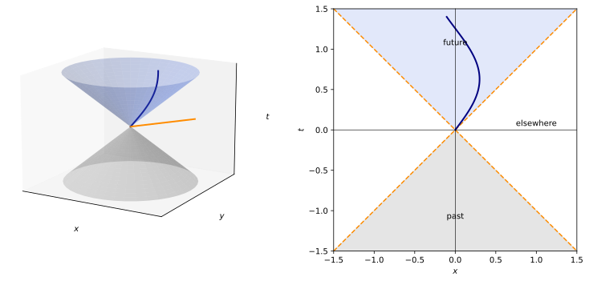
figures/sr-light-cone.sage.
The definition classifies the four-vectors that physics uses most. The first example lists them; their causal character is what distinguishes particles from light and from instantaneous separations.
Example 25 (The causal character of physical vectors) The tangent (1, \vec v) to the worldline of a particle with |\vec v| < 1 is timelike and future-directed; the four-momentum (\omega, \vec k) with |\vec k| = \omega of a light wave is null and future-directed; the displacement (0, \Delta\vec x) between two simultaneous events is spacelike. In the (t, x) plane of Figure 4 these lie inside the cone, on it and outside it.
Veriphy. Pending.
Lean. Pending.
Sage. Pending.
The causal future of an event contains everything it can influence. The second example shows that this region is the same for all observers, while the region of events simultaneous with it is not.
Example 26 (What an event can influence) A signal from the event p at the origin, no faster than light, can reach exactly the events in the future of p: t \geq |\vec x|. This region is defined by \eta alone, so it is the same in every inertial frame; the set t = 0 of events simultaneous with p is not, and in the boosted frame of Figure 2 it becomes the tilted line t = vx. The region outside the light cone, the elsewhere of p, is the set of events that are simultaneous with p in some frame (Proposition 3).
Veriphy. Pending.
Lean. Pending.
Sage. Pending.
“Future-directed” was defined with the time component in one frame. The third example checks that boosts do not change it, so the notion belongs to the spacetime, given a choice made once.
Example 27 (The future is preserved by boosts) For a future-directed timelike V = (V^0, V^1, 0, 0), |V^1| < V^0, and a boost Equation 2, V'^0 = \gamma(V^0 - vV^1) \geq \gamma(V^0 - |v||V^1|) > 0. The same holds for null vectors. Transformations that preserve \eta but reverse the time direction, such as t \mapsto -t, exist (Theorem 4); the boosts and rotations are not among them.
Veriphy. Pending.
Lean. Pending.
Sage. Pending.
A spacetime diagram drawn by one observer contains another observer’s axes, and the causal character tells which lines can be which. The first exercise is Blennow and Ohlsson (2022, Problem 1.1 b) in numbers.
Exercise 28 (Which vectors can be four-velocities) Among A = (1, 2, 0, 0), B = (2, 1, 0, 0), U = (3, -2, 2, 0), V = (1, -1, 0, 0) and W = (-2, 1, 0, 0), which are proportional to the four-velocity of a massive particle? Compute A\cdot B and U\cdot V.
A\cdot A = -3 (spacelike), B\cdot B = 3 (timelike, future), U\cdot U = 9 - 8 = 1 (timelike, future), V\cdot V = 0 (null), W\cdot W = 3 (timelike but past-directed). Only B and U are multiples of four-velocities, U being already one. A\cdot B = 2 - 2 = 0, so A and B are orthogonal; U\cdot V = 3 - 2 = 1.
Veriphy. Pending.
Lean. Pending.
Sage. Pending.
The future of an event is a convex region. The second exercise proves it with only the Euclidean triangle inequality in space.
Exercise 29 (The future cone is convex) Show that if V and W are future-directed timelike, so is aV + bW for all a, b \geq 0 not both zero.
Future-directed timelike means |\vec V| < V^0. Then |a\vec V + b\vec W| \leq a|\vec V| + b|\vec W| < aV^0 + bW^0, where the strict inequality holds because at least one of a, b is positive. So aV + bW has positive time component exceeding the length of its spatial part.
Veriphy. Pending.
Lean. Pending.
Sage. Pending.
Null vectors behave unlike Euclidean ones under orthogonality. The third exercise shows that two orthogonal null vectors are necessarily parallel.
Exercise 30 (Orthogonal null vectors) Let k and l be non-zero null vectors with k\cdot l = 0. Show that l = \lambda k for some real \lambda.
Write k = (|\vec k|, \vec k) up to the sign of the time component, and likewise l. Then k\cdot l = \pm|\vec k||\vec l| - \vec k\cdot\vec l, and k\cdot l = 0 means |\vec k\cdot\vec l| = |\vec k||\vec l|: equality in the Cauchy-Schwarz inequality, so \vec l = \mu\vec k, and then the time components are proportional with the same factor because |\vec l| = |\mu||\vec k| and k\cdot l = 0 fixes the sign. Hence l = \mu k.
Veriphy. Pending.
Lean. Pending.
Sage. Pending.
The geometry of timelike vectors has inequalities that reverse those of Euclidean geometry. The proposition below collects them (Blennow and Ohlsson 2022, Problem 1.2); they are the reason a straight worldline has the longest proper time, and the reason \Lambda^0{}_0 \geq 1 for orthochronous transformations in Proposition 8.
Proposition 5 (Reverse inequalities) Let u, w be future-directed timelike vectors.
- A non-zero vector orthogonal to u is spacelike.
- u + w is future-directed timelike.
- Every spacelike vector is the difference of two future-directed null vectors.
- (Reverse Cauchy-Schwarz) u\cdot w \geq |u||w| > 0, with equality if and only if w is a multiple of u.
- (Reverse triangle inequality) |u + w| \geq |u| + |w|, with equality if and only if w is a multiple of u.
Proof. Choose the frame in which u = (|u|, \vec 0), which exists by Exercise 26 (or by a boost of Exercise 8 with velocity \vec u/u^0). (1) V\cdot u = |u|V^0 = 0 forces V^0 = 0, so V\cdot V = -|\vec V|^2 < 0. (4) With w = (w^0, \vec w), w^0 > |\vec w|, u\cdot w = |u|w^0 \geq |u|\sqrt{(w^0)^2 - |\vec w|^2} = |u||w|, with equality if and only if \vec w = 0. (2) (u + w)^2 = u^2 + 2u\cdot w + w^2 > 0 by (4), and the time component is positive. (5) (u + w)^2 = |u|^2 + 2u\cdot w + |w|^2 \geq (|u| + |w|)^2 by (4), with the same case of equality. (3) In a frame where the spacelike S = (0, s, 0, 0), S = \tfrac12(s, s, 0, 0) - \tfrac12(s, -s, 0, 0) if s > 0, and with the two terms exchanged if s < 0; a general spacelike S is first boosted to have S^0 = 0 (Proposition 3) and rotated to the x-axis. \square
Veriphy. Pending.
Lean. Pending.
Sage. Pending.
Numbers make the reversal concrete. The first example compares the two sides of the reverse Cauchy-Schwarz inequality for two timelike vectors that are far from parallel.
Example 28 (The reverse Cauchy-Schwarz inequality in numbers) For u = (2, 1, 0, 0) and w = (3, 0, 2, 0), |u| = \sqrt3, |w| = \sqrt5 and u\cdot w = 6 > \sqrt{15} \approx 3.87. In Euclidean space the inequality |a\cdot b| \leq |a||b| would point the other way. For u + w = (5, 1, 2, 0), |u + w| = \sqrt{20} \approx 4.47 > \sqrt3 + \sqrt5 \approx 3.97.
Veriphy. Pending.
Lean. Pending.
Sage. Pending.
For unit vectors the reverse Cauchy-Schwarz inequality is a statement about Lorentz factors. The second example reads it so, anticipating Exercise 19.
Example 29 (The Lorentz factor is at least one) For four-velocities u, w of two observers, u\cdot w is the Lorentz factor of one in the rest frame of the other, and part 4 says u\cdot w \geq 1, with equality only when they are at rest relative to each other. The bound is the relativistic form of |v| < c: \gamma = 1/\sqrt{1 - v^2} ranges over [1, \infty).
Veriphy. Pending.
Lean. Pending.
Sage. Pending.
Part 5 is the twin paradox in one line, once lengths of timelike vectors are read as proper times. The third example draws that consequence for a broken worldline.
Example 30 (A broken worldline is shorter) A traveller goes from the event o to p with constant velocity and then from p to q with another; a stay-at-home goes straight from o to q. Their clocks measure |p - o| + |q - p| and |q - o| (Definition 6), and part 5 with u = p - o, w = q - p gives |q - o| \geq |p - o| + |q - p|: the traveller is younger, unless the two legs are parallel.
Veriphy. Pending.
Lean. Pending.
Sage. Pending.
Part 3 gives a decomposition of a spacelike vector into null ones. The first exercise makes it explicit for a vector with non-zero time component (Blennow and Ohlsson 2022, Problem 1.2 c).
Exercise 31 (A spacelike vector as a difference of null vectors) Write S = (1, 3, 0, 0) as S = k - l with k, l future-directed null vectors in the (t, x) plane. Is the decomposition unique?
Take k = a(1, 1, 0, 0), l = b(1, -1, 0, 0): a - b = 1, a + b = 3, so a = 2, b = 1: S = (2, 2, 0, 0) - (1, -1, 0, 0). It is not unique: any future null k with k - S null and future-directed works, for instance with components outside the (t, x) plane. In the plane, the two light-cone components t \pm x of S fix a and b uniquely.
Veriphy. Pending.
Lean. Pending.
Sage. Pending.
The reverse Cauchy-Schwarz inequality has a direct proof in components, without choosing a frame. The second exercise asks for it.
Exercise 32 (The reverse Cauchy-Schwarz inequality in components) For future-directed timelike u, w, prove u^0w^0 - \vec u\cdot\vec w \geq \sqrt{(u^0)^2 - |\vec u|^2}\sqrt{(w^0)^2 - |\vec w|^2} without changing frame, using \vec u\cdot\vec w \leq |\vec u||\vec w| and the inequality ac - bd \geq \sqrt{a^2 - b^2}\sqrt{c^2 - d^2} for a > b \geq 0, c > d \geq 0.
With a = u^0, b = |\vec u|, c = w^0, d = |\vec w|: u\cdot w \geq ac - bd. For the second inequality, (ac - bd)^2 - (a^2 - b^2)(c^2 - d^2) = a^2d^2 + b^2c^2 - 2abcd = (ad - bc)^2 \geq 0, and ac - bd > 0; taking square roots gives the claim. Equality needs \vec u\cdot\vec w = |\vec u||\vec w| and ad = bc, that is \vec w \parallel \vec u with |\vec w|/w^0 = |\vec u|/u^0: w is a multiple of u:
var('a b c d')
print("(ac - bd)^2 - (a^2 - b^2)(c^2 - d^2) =", ((a*c - b*d)^2 - (a^2 - b^2)*(c^2 - d^2)).factor())
set_random_seed(2)
eta = diagonal_matrix(RDF, [1, -1, -1, -1])
def rand_future():
s = vector(RDF, [RDF.random_element(-1, 1) for _ in range(3)])
return vector(RDF, [s.norm() + RDF.random_element(0.01, 1)] + list(s))
worst_cs, worst_tri = 10.0, 10.0
for _ in range(2000):
u, w = rand_future(), rand_future()
nu, nw = sqrt(u*eta*u), sqrt(w*eta*w)
worst_cs = min(worst_cs, u*eta*w - nu*nw)
worst_tri = min(worst_tri, sqrt((u + w)*eta*(u + w)) - nu - nw)
print("min of u.w - |u||w| over 2000 pairs: %.3e (>= 0)" % worst_cs)
print("min of |u+w| - |u| - |w| over 2000 pairs: %.3e (>= 0)" % worst_tri)Output:
(ac - bd)^2 - (a^2 - b^2)(c^2 - d^2) = (b*c - a*d)^2
min of u.w - |u||w| over 2000 pairs: 5.082e-03 (>= 0)
min of |u+w| - |u| - |w| over 2000 pairs: 4.823e-03 (>= 0)Veriphy. Pending.
Lean. Pending.
Sage. Pending.
Part 1 has a converse for null vectors that fails for timelike ones. The third exercise identifies the orthogonal complement of a null vector.
Exercise 33 (The orthogonal complement of a null vector) Let k = (1, 0, 0, 1). Find all vectors orthogonal to k and show that, apart from multiples of k, they are spacelike.
V\cdot k = V^0 - V^3 = 0, so V = (a, b, c, a), a three-dimensional space containing k. Then V\cdot V = a^2 - b^2 - c^2 - a^2 = -(b^2 + c^2) \leq 0, with equality exactly when V = ak. The complement is tangent to the light cone along k; it reappears as the plane of the little group of a massless particle in Proposition 13.
Veriphy. Pending.
Lean. Pending.
Sage. Pending.
Worldlines and proper time
A particle is not a point of spacetime but a curve, the record of where it is at each moment. The causal structure says which curves are possible histories: those whose tangent never leaves the light cone.
Definition 5 (Worldline) A worldline is a smooth curve \lambda \mapsto x^\mu(\lambda) in Minkowski spacetime whose tangent \dot x^\mu = dx^\mu/d\lambda is future-directed and timelike at every point (the history of a massive particle) or future-directed and null at every point (the history of a light ray). Two parametrisations related by an increasing change of parameter describe the same worldline.
Veriphy. Pending.
Lean. Pending.
Sage. Pending.
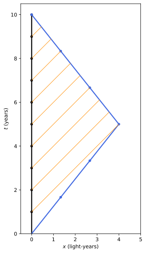
figures/sr-twin.sage.
The simplest worldlines are straight. The first example writes them down and shows that the parameter t of an inertial frame is an admissible parameter for any massive worldline.
Example 31 (Uniform motion) x^\mu(t) = (t, \vec x_0 + \vec vt) with |\vec v| < 1 has tangent (1, \vec v), future timelike: the worldline of a free particle. Every massive worldline can be parametrised by t, since \dot x^0 > 0, and then it is (t, \vec x(t)) with |d\vec x/dt| < 1.
Veriphy. Pending.
Lean. Pending.
Sage. Pending.
Accelerated motion can be a worldline only for a limited time if the acceleration is constant in coordinate time. The second example shows how the speed of light caps it (Blennow and Ohlsson 2022, Problem 1.38 b).
Example 32 (A worldline that must end) The curve x = \tfrac32at^2, y = 2at^2, z = 0 has velocity (3at, 4at, 0) of magnitude 5at, so it is a worldline only for 0 \leq t < 1/(5a); at t = 1/(5a) the tangent becomes null. A force of constant magnitude in the lab frame cannot keep producing a constant coordinate acceleration, as 1 will show.
Veriphy. Pending.
Lean. Pending.
Sage. Pending.
Light rays are worldlines too, with null tangents. The third example writes the one-parameter family of light rays that leave the origin in a plane.
Example 33 (Light rays) x^\mu(\lambda) = \lambda(1, \cos\phi, \sin\phi, 0), \lambda > 0, are null worldlines from the origin; their union over \phi is the future light cone in the (t, x, y) space of Figure 4. The parameter \lambda cannot be normalised by the length of the tangent, which is zero; it is fixed up to an affine change by the energy of the light, as Definition 23 will show.
Veriphy. Pending.
Lean. Pending.
Sage. Pending.
A spacetime diagram of a journey is a sequence of worldline segments. The first exercise draws one from its description, following Boskoff and Capozziello (2024, Examples 9.1.4-9.1.6).
Exercise 34 (A journey on a diagram) In the (t, x) plane, a particle leaves the origin with velocity 0.5 for two units of time, waits one unit, and returns with velocity -0.8. Write the three segments, find when it is back at x = 0, and check that the curve is a worldline except at the corners.
x = 0.5t for 0 \leq t \leq 2, x = 1 for 2 \leq t \leq 3, and x = 1 - 0.8(t - 3) for t \geq 3, back at x = 0 at t = 4.25. The tangents (1, 0.5), (1, 0), (1, -0.8) are future timelike; at the corners the curve is not smooth, which is an idealisation of a short acceleration.
Veriphy. Pending.
Lean. Pending.
Sage. Pending.
Being a worldline is a statement about the tangent at each point, and it does not depend on the frame. The second exercise checks this for boosts.
Exercise 35 (Worldlines are frame independent) Show that a boost Equation 2 maps worldlines to worldlines, by showing that it maps future-directed timelike and null tangent vectors to vectors of the same kind.
The boost is linear, so the tangent of the image curve is the boosted tangent. It preserves \eta (Proposition 1), hence the sign of \dot x\cdot\dot x, and it preserves future-directedness (Example 27). Smoothness is preserved by a linear map.
Veriphy. Pending.
Lean. Pending.
Sage. Pending.
Some curves look like motions but are not worldlines. The third exercise tests three candidates. Each test needs only the derivative of the position and a comparison with the speed of light, applied at every time.
Exercise 36 (Worldline or not) Which of the following are worldlines on their whole domain: (a) x = \tfrac12\sin t; (b) x = \sqrt{1 + t^2}; (c) x = 2\sin(t/2), for t \in \mathbb{R}?
- |dx/dt| = \tfrac12|\cos t| < 1: yes. (b) dx/dt = t/\sqrt{1 + t^2}, of modulus less than 1: yes, it is the hyperbolic motion of
- |dx/dt| = |\cos(t/2)| equals 1 at t = 2\pi k, where the tangent is null, so it is not the worldline of a massive particle (it touches light speed).
Veriphy. Pending.
Lean. Pending.
Sage. Pending.
Each massive particle carries its own clock, and the clock measures the Minkowski length of its worldline. This is the time that enters the laws of physics in the rest frame of the particle, such as the decay law of a muon.
Definition 6 (Proper time) The proper time along a massive worldline from \lambda_1 to \lambda_2 is \tau = \int_{\lambda_1}^{\lambda_2}\sqrt{\eta_{\mu\nu}\frac{dx^\mu}{d\lambda}\frac{dx^\nu}{d\lambda}}\,d\lambda = \int_{t_1}^{t_2}\sqrt{1 - |\vec v(t)|^2}\,dt , \tag{5} the time shown by an ideal clock carried along it. It does not depend on the parametrisation or on the inertial frame.
Veriphy. Pending.
Lean. Pending.
Sage. Pending.
For uniform motion the proper time is time dilation again. The first example shows how Equation 5 reduces to Proposition 2. The integral is then elementary.
Example 34 (Uniform motion) For \vec x = \vec vt, \tau = (t_2 - t_1)\sqrt{1 - v^2} = \Delta t/\gamma: the clock of a moving particle advances by less than the coordinate time of the frame, by the factor of Proposition 2. In the rest frame of the particle \tau = \Delta t'.
Veriphy. Pending.
Lean. Pending.
Sage. Pending.
The twin paradox is the comparison of the proper times of two worldlines with the same endpoints. The second example is the version of Boskoff and Capozziello (2024, Example 9.2.8), drawn in Figure 5.
Example 35 (The twins) Twins are 20 years old when one leaves at v = 4/5, so \sqrt{1 - v^2} = 3/5. She travels for 3 years of her time out and 3 back, \tau = 6 years, while \Delta t = \tau/(3/5) = 10 years pass on Earth. At the reunion she is 26 and her brother 30. The situation is not symmetric: only her worldline is broken, and she alone feels the acceleration at the turn.
Veriphy. Pending.
Lean. Pending.
Sage. Pending.
Satellites carry clocks whose rates must be corrected for their motion. The third example computes the velocity part of the correction for the satellites of the Global Positioning System (the gravitational part is in Exercise 9 of General relativity).
Example 36 (GPS clocks: the velocity term) A GPS satellite moves at v \approx 3.87\,km/s. By Equation 5 its clock loses \tfrac12v^2/c^2 \approx 8.3 \times 10^{-11} of each second, about 7.2\,\mus per day; uncorrected, this alone would cause position errors growing by about 2\,km a day.
Veriphy. Pending.
Lean. Pending.
Sage. Pending.
The first exercise computes a proper time along the accelerated worldline of Example 32. The integral can be done in closed form, and its value at the end of the worldline is finite.
Exercise 37 (Proper time on an accelerated path) For x = \tfrac32at^2, y = 2at^2, compute the four-velocity dx^\mu/d\tau and the proper time from t = 0 to t_0 < 1/(5a).
|\vec v| = 5at, so dt/d\tau = \gamma = (1 - 25a^2t^2)^{-1/2} and u^\mu = \gamma(1, 3at, 4at, 0). The proper time is \int_0^{t_0}\sqrt{1 - 25a^2t^2}\,dt = \frac{1}{10a}\bigl(5at_0\sqrt{1 - 25a^2t_0^2} + \arcsin(5at_0)\bigr), which tends to \pi/(20a) as t_0 \to 1/(5a):
var('a t t0', domain='positive')
x = 3/2*a*t^2; y = 2*a*t^2
v2 = (diff(x, t)^2 + diff(y, t)^2).simplify_full()
print("speed^2 =", v2)
g = 1/sqrt(1 - v2)
print("four-velocity =", [g, (g*diff(x, t)).simplify_full(), (g*diff(y, t)).simplify_full(), 0])
F = (5*a*t0*sqrt(1 - 25*a^2*t0^2) + arcsin(5*a*t0))/(10*a)
print("dF/dt0 - sqrt(1 - 25 a^2 t0^2) =", (diff(F, t0) - sqrt(1 - 25*a^2*t0^2)).simplify_full(), " F(0) =", F.subs(t0=0))
print("F(1/(5a)) =", F.subs(t0=1/(5*a)).simplify_full())
print("numerical check a = 1, t0 = 0.15:", n(F.subs(a=1, t0=0.15)), numerical_integral(sqrt(1 - 25*t^2), 0, 0.15)[0])Output:
speed^2 = 25*a^2*t^2
four-velocity = [1/sqrt(-25*a^2*t^2 + 1), 3*a*t/sqrt(-25*a^2*t^2 + 1), 4*a*t/sqrt(-25*a^2*t^2 + 1), 0]
dF/dt0 - sqrt(1 - 25 a^2 t0^2) = 0 F(0) = 0
F(1/(5a)) = 1/20*pi/a
numerical check a = 1, t0 = 0.15: 0.134414044980609 0.1344140449806092Veriphy. Pending.
Lean. Pending.
Sage. Pending.
A constant coordinate acceleration is the naive picture of a rocket. The second exercise computes the proper time it takes to reach a given speed (Blennow and Ohlsson 2022, Problem 1.58).
Exercise 38 (Constant coordinate acceleration) An object starts from rest with x = \tfrac12at^2. Find the proper time to reach the speed v_0 < 1 and the proper acceleration \alpha = \gamma^3\,dv/dt (Definition 25) as a function of t.
v = at, so \tau = \int_0^{v_0/a}\sqrt{1 - a^2t^2}\,dt = \frac{1}{2a}\bigl(v_0\sqrt{1 - v_0^2} + \arcsin v_0\bigr), and \alpha = a(1 - a^2t^2)^{-3/2}, which diverges as v \to 1: keeping dv/dt fixed needs an ever larger force in the rest frame of the object.
Veriphy. Pending.
Lean. Pending.
Sage. Pending.
Clocks flown around the Earth were compared with clocks on the ground by Hafele and Keating in 1971. The third exercise computes the kinematic part of the effect in the inertial frame of the Earth’s centre.
Exercise 39 (Clocks flown around the world) Ignore gravity and take the equator as the flight path. The ground moves at u = 465\,m/s eastward in the frame of the Earth’s centre; aircraft fly at w = 250\,m/s relative to the ground, once eastward and once westward, for the time T = 2\pi R_\oplus/w (R_\oplus = 6378\,km). Compute, to first order in v^2/c^2, the time gained or lost by each flying clock relative to the ground clock.
Each clock loses \tfrac12v^2T/c^2 relative to the coordinate time. Relative to the ground, the eastward clock loses \tfrac{T}{2c^2}((u + w)^2 - u^2) = \tfrac{T}{2c^2}(2uw + w^2) \approx 263\,ns and the westward clock gains \tfrac{T}{2c^2}(2uw - w^2) \approx 152\,ns, with T \approx 1.6 \times 10^5\,s. Hafele and Keating measured -59 \pm 10 and +273 \pm 7\,ns, which include the gravitational speed-up of the higher clocks:
c = 2.998e8; u = 465.0; w = 250.0; R = 6.378e6
T = 2*pi.n()*R/w
east = -T*((u + w)^2 - u^2)/(2*c^2); west = -T*((u - w)^2 - u^2)/(2*c^2)
print("flight time T = %.0f s" % T)
print("eastward clock relative to ground: %+.0f ns" % (east*1e9))
print("westward clock relative to ground: %+.0f ns" % (west*1e9))Output:
flight time T = 160297 s
eastward clock relative to ground: -263 ns
westward clock relative to ground: +152 nsVeriphy. Pending.
Lean. Pending.
Sage. Pending.
The examples suggest that the inertial worldline is always the one on which most time passes. The theorem below proves it, and it is the Lorentzian counterpart of the statement that a straight line is the shortest path between two points.
Theorem 2 (Inertial worldlines maximise proper time) Let p and q be events with q - p future-directed timelike. Among all massive worldlines from p to q, the straight one has the largest proper time, equal to |q - p|, and every other has strictly smaller proper time. There is no worldline of smallest proper time: the infimum is 0.
Proof. Work in the frame in which q - p = (T, \vec 0); the straight worldline is \vec x = \vec 0 with \tau = T. Any other worldline from p to q can be parametrised by t \in [0, T], and \tau = \int_0^T\sqrt{1 - |\vec v|^2}\,dt \leq \int_0^Tdt = T, with equality if and only if \vec v \equiv 0, that is if the worldline is the straight one. For the infimum, the zig-zag worldline with speed w < 1 that goes out and back n times has \tau = T\sqrt{1 - w^2}, arbitrarily small as w \to 1 (Exercise 40). \square
Veriphy. Pending.
Lean. Pending.
Sage. Pending.
The first example interprets the theorem as a variational principle. The free particle extremises proper time, which is how the action of a relativistic particle is chosen in Proposition 20.
Example 37 (Free particles maximise their proper time) Because the inertial worldline is the unique maximum of \tau between two events, the equation of motion of a free particle can be obtained by requiring \delta\tau = 0; the action of a free particle is S = -m\int d\tau (Proposition 20), whose minimum is the maximum of \tau. In general relativity the same principle, with \eta replaced by g, gives the geodesics.
Veriphy. Pending.
Lean. Pending.
Sage. Pending.
The second example shows where the asymmetry of the twins lies on the diagram. Each twin can compute the other’s proper time, and both get the same answer.
Example 38 (Why the twins are not symmetric) The theorem compares worldlines between the same two events and needs no choice of frame. In the frame of the outgoing traveller the Earth twin ages slower, 3 \cdot 3/5 = 1.8 years during her outward trip; on the return leg, in the new frame, another 1.8 years. The missing 6.4 years of the Earth twin’s 10 are the jump of the line of simultaneity at the turn, from t = 1.8 to t = 8.2 on the Earth worldline: the traveller’s change of frame, not her acceleration as such, accounts for them.
Veriphy. Pending.
Lean. Pending.
Sage. Pending.
The theorem holds for any curved timelike path, not just broken lines. The third example applies it to a circular orbit, where the travelling clock never stops accelerating.
Example 39 (A clock on a circle) A clock moving on a circle of radius R with angular velocity \omega and a clock at the centre meet again after T = 2\pi/\omega. The moving clock shows T\sqrt{1 - R^2\omega^2} < T by Equation 5; the clock at the centre is inertial and shows the most time. Muons in a storage ring (Exercise 13) are such clocks.
Veriphy. Pending.
Lean. Pending.
Sage. Pending.
The proof claimed that the infimum of proper time is zero. The first exercise constructs the worldlines that approach it.
Exercise 40 (No shortest worldline) Between p = (0, 0) and q = (T, 0) in the (t, x) plane, consider the worldline that moves with speed w alternately right and left, n times each, each leg lasting T/(2n). Compute its proper time and show it can be made as small as desired. Can the corners be smoothed without spoiling this?
Each leg has \sqrt{1 - w^2}\,T/(2n), so \tau = T\sqrt{1 - w^2}, independent of n, and \tau \to 0 as w \to 1. Smoothing each corner over a time \delta changes \tau by at most 2n\delta, which is as small as desired. The worldline stays within a distance wT/(2n) of x = 0: arbitrarily close to the inertial worldline in space, yet with almost no proper time.
Veriphy. Pending.
Lean. Pending.
Sage. Pending.
The twins can watch each other’s clocks through signals. The second exercise counts the signals in Figure 5 and shows that the count agrees with the theorem.
Exercise 41 (The twins exchange birthday signals) In Example 35 each twin sends a light signal on each of their birthdays. Using the Doppler factor \sqrt{(1 - v)/(1 + v)} of the proof of Theorem 1, find how many signals each receives before the reunion and when.
With v = 4/5 the factors are 1/3 and 3. The traveller receives the Earth signals at a rate 1/3 per year on the way out (1 signal in 3 years) and 3 per year on the way back (9 signals): 10 in total, one per Earth year. The Earth twin receives the traveller’s signals at rate 1/3 until he sees her turn, which happens at Earth time 5 + 4 = 9 years (3 signals), then at rate 3 for the last year (3 signals): 6 in total, one per year of her time. Both agree: 10 and 6 years:
v = 4/5; g = 1/sqrt(1 - v^2); Tturn = 3*g; X = v*Tturn
def traveller(t): # position of the traveller at Earth time t
return v*t if t <= Tturn else X - v*(t - Tturn)
# Earth signals sent at t = 1..10; received by the traveller when t - tsend = traveller(t)
recv = []
for k in range(1, 11):
t_out = k/(1 - v) # catch the outgoing traveller: t - k = v t
t = t_out if t_out <= Tturn else (k + X + v*Tturn)/(1 + v) # else meet on the way back: t - k = X - v (t - Tturn)
tau = t/g
recv.append(tau)
print("Earth's signals received at traveller's ages (years after departure):", [round(r, 3) for r in recv])
# traveller's signals at her proper times 1..6
earth = []
for k in range(1, 7):
t = k*g; x = traveller(t)
earth.append(t + x)
print("traveller's signals received on Earth at:", [round(e, 3) for e in earth])
print("received before reunion (t = 10):", sum(1 for e in earth if e <= 10 + 1e-12), "and", sum(1 for r in recv if r <= 6 + 1e-12))Output:
Earth's signals received at traveller's ages (years after departure): [3.0, 3.333, 3.667, 4.0, 4.333, 4.667, 5.0, 5.333, 5.667, 6.0]
traveller's signals received on Earth at: [3.0, 6.0, 9.0, 9.333, 9.667, 10.0]
received before reunion (t = 10): 6 and 10Veriphy. Pending.
Lean. Pending.
Sage. Pending.
The theorem compares a straight worldline with any other. The third exercise compares two non-inertial worldlines with the same endpoints, which needs the integral of Equation 5 rather than the theorem.
Exercise 42 (Two travellers) From (0, 0) to (10, 0) (years, light-years), traveller A goes out at 0.6 for 5 years and returns at 0.6; traveller B goes out at 0.8 for 2.5 years, waits 5 years, and returns at 0.8. Who is younger at the reunion?
A: 10 \cdot 0.8 = 8 years. B: 5 \cdot 0.6 + 5 = 8 years. They are the same age. The theorem says only that both are younger than the Earth twin, who has aged 10 years; between non-inertial worldlines no general ordering exists.
Veriphy. Pending.
Lean. Pending.
Sage. Pending.
The hyperbolic geometry of boosts
In Euclidean geometry a rotation moves points along circles and is measured by an angle equal to twice the area of a circular sector. In Minkowski geometry the boosts move points along hyperbolae, and the rapidity plays the role of the angle; the next proposition makes this precise. The hyperbolae of Figure 2 are the circles of this geometry.
Proposition 6 (Rapidity as a hyperbolic angle) In the (t, x) plane let H_\tau = \{(t, x) : t^2 - x^2 = \tau^2, t > 0\} for \tau > 0, and let L(\eta) = \begin{pmatrix}\cosh\eta & \sinh\eta \\ \sinh\eta & \cosh\eta\end{pmatrix} be the boost that sends the rest velocity to rapidity \eta.
- H_\tau = \{(\tau\cosh\phi, \tau\sinh\phi) : \phi \in \mathbb{R}\}, and L(\eta) maps the point of parameter \phi to that of parameter \phi + \eta.
- For unit future-directed timelike u, w in the plane, u\cdot w = \cosh(\phi_w - \phi_u): the rapidity of their relative motion is the difference of parameters.
- The hyperbolic sector bounded by the segments from the origin to (1, 0) and to (\cosh\eta, \sinh\eta) and by the arc of H_1 between them has Euclidean area \eta/2, and L(\eta) preserves areas.
Proof. (1) t = \tau\cosh\phi, x = \tau\sinh\phi parametrises the branch t > 0, and L(\eta)(\cosh\phi, \sinh\phi) = (\cosh(\phi + \eta), \sinh(\phi + \eta)) by the addition formulas. (2) \cosh\phi_u\cosh\phi_w - \sinh\phi_u\sinh\phi_w = \cosh(\phi_w - \phi_u). (3) \det L(\eta) = \cosh^2\eta - \sinh^2\eta = 1, so L preserves Euclidean areas; the sector is the region swept by the segment from the origin to the point of parameter \phi, for \phi from 0 to \eta, and its area is \tfrac12\int_0^\eta(t\,dx/d\phi - x\,dt/d\phi)\,d\phi = \tfrac12\int_0^\eta(\cosh^2\phi - \sinh^2\phi)\,d\phi = \eta/2. \square
Veriphy. Pending.
Lean. Pending.
Sage. Pending.
Part 1 says where the unit marks of a moving frame are. The first example locates them, which is how Figure 2 was drawn.
Example 40 (Calibrating the axes of a moving frame) The event t' = 1, x' = 0 of a frame moving with v = \tanh\eta is L(\eta)(1, 0) = (\cosh\eta, \sinh\eta), on the hyperbola t^2 - x^2 = 1; the event x' = 1, t' = 0 is (\sinh\eta, \cosh\eta), on x^2 - t^2 = 1. For v = 0.5 these are (1.155, 0.577) and (0.577, 1.155) in (t, x). The units are longer on the page than those of K, which is not a contradiction: the page is Euclidean, the plane is not.
Veriphy. Pending.
Lean. Pending.
Sage. Pending.
Part 3 makes the rapidity an area. The second example compares this with the Euclidean angle, where the same construction gives the circular functions.
Example 41 (Circular and hyperbolic sectors) On the unit circle the sector between the angles 0 and \theta has area \theta/2, and the coordinates of its end are (\cos\theta, \sin\theta). On the unit hyperbola the sector of area \eta/2 ends at (\cosh\eta, \sinh\eta). This is the historical definition of the hyperbolic functions, and it explains the name “hyperbolic rotation” that Maggiore (2023, sec. 7.2.1) gives to boosts.
Veriphy. Pending.
Lean. Pending.
Sage. Pending.
Part 2 contains the composition law of collinear velocities. The third example derives it from the addition of hyperbolic angles, as Euclidean rotations add their angles.
Example 42 (Composition as addition of angles) An observer with rapidity \eta_1 sees a particle with rapidity \eta_2 relative to himself; applying L(\eta_1) to the particle’s four-velocity (\cosh\eta_2, \sinh\eta_2) gives (\cosh(\eta_1 + \eta_2), \sinh(\eta_1 + \eta_2)). The velocity in the original frame is \tanh(\eta_1 + \eta_2) = \frac{v_1 + v_2}{1 + v_1v_2}, the law of Proposition 4.
Veriphy. Pending.
Lean. Pending.
Sage. Pending.
The area in part 3 can be computed as an integral in (t, x) without the parametrisation. The first exercise does so in Sage.
Exercise 43 (The hyperbolic sector as an integral) Compute the area of the hyperbolic sector of Proposition 6, bounded by the segment from (0, 0) to (1, 0), the arc of t^2 - x^2 = 1 from (1, 0) to (\cosh\eta, \sinh\eta) and the segment back to the origin, as \tfrac12\cosh\eta\sinh\eta - \int_1^{\cosh\eta}\sqrt{t^2 - 1}\,dt, and check that it equals \eta/2.
The triangle with vertices (0, 0), (\cosh\eta, 0), (\cosh\eta, \sinh\eta) has area \tfrac12\cosh\eta\sinh\eta; the region under the arc, between t = 1 and t = \cosh\eta, has area \int_1^{\cosh\eta}\sqrt{t^2 - 1}\,dt = \tfrac12\cosh\eta\sinh\eta - \tfrac12\eta. Their difference is \eta/2:
var('t eta phi', domain='positive')
assume(cosh(eta) - 1 > 0)
A = cosh(eta)*sinh(eta)/2 - integrate(sqrt(t^2 - 1), t, 1, cosh(eta))
print("area =", A.simplify_full())
print("area - eta/2 at eta = 0.3, 1, 2.5:", [n(A.subs(eta=e) - e/2) for e in [0.3, 1, 2.5]])Output:
area = -1/2*log(2) + 1/2*log(2*cosh(eta) + 2*sinh(eta))
area - eta/2 at eta = 0.3, 1, 2.5: [5.55111512312578e-17, -1.11022302462516e-16, 9.43689570931383e-16]Veriphy. Pending.
Lean. Pending.
Sage. Pending.
The set of all four-velocities is a three-dimensional hyperboloid, and part 2 says that the rapidity is a distance on it. The second exercise computes the metric that the Minkowski form induces there.
Exercise 44 (The space of velocities is hyperbolic) Parametrise the unit future hyperboloid t^2 - |\vec x|^2 = 1 by (\cosh\chi, \sinh\chi\,\hat n(\theta, \phi)). Show that -\eta_{\mu\nu}dx^\mu dx^\nu restricted to it is d\chi^2 + \sinh^2\chi(d\theta^2 + \sin^2\theta\,d\phi^2), the metric of three-dimensional hyperbolic space, and that \chi is the rapidity of the velocity relative to (1, \vec 0).
dt = \sinh\chi\,d\chi and d\vec x = \cosh\chi\,\hat n\,d\chi + \sinh\chi\,d\hat n with \hat n\cdot d\hat n = 0 and |d\hat n|^2 = d\theta^2 + \sin^2\theta\,d\phi^2, so |d\vec x|^2 - dt^2 = (\cosh^2\chi - \sinh^2\chi)d\chi^2 + \sinh^2\chi\,|d\hat n|^2. The point has u\cdot(1, \vec 0) = \cosh\chi, so \chi is the relative rapidity (part 2). Lorentz transformations act on the hyperboloid by isometries of this metric:
var('chi th ph', domain='real')
X = vector([cosh(chi), sinh(chi)*sin(th)*cos(ph), sinh(chi)*sin(th)*sin(ph), sinh(chi)*cos(th)])
eta = diagonal_matrix([1, -1, -1, -1])
J = matrix([[diff(X[m], q) for q in (chi, th, ph)] for m in range(4)])
h = (-J.transpose()*eta*J).simplify_full()
print("induced metric (chi, theta, phi):"); print(h)
print("on the hyperboloid:", (X*eta*X).simplify_full())Output:
induced metric (chi, theta, phi):
[ 1 0 0]
[ 0 sinh(chi)^2 0]
[ 0 0 sin(th)^2*sinh(chi)^2]
on the hyperboloid: 1Veriphy. Pending.
Lean. Pending.
Sage. Pending.
Hyperbolic triangles have angle sums less than \pi, and so do triangles of velocities. The third exercise computes one, foreshadowing the Wigner rotation of Theorem 8.
Exercise 45 (A triangle of velocities) On the hyperboloid of Exercise 44 take the vertices u_0 = (1, \vec 0), u_1 = (\cosh\chi, \sinh\chi, 0, 0), u_2 = (\cosh\chi, 0, \sinh\chi, 0) with \chi = 1. Using the hyperbolic law of cosines \cosh c = \cosh a\cosh b - \sinh a\sinh b\cos C, find the three angles and their sum.
The sides are a = b = 1 (from u_0) and c with \cosh c = u_1\cdot u_2 = \cosh^2 1. The angle at u_0 is \pi/2. The angles at u_1, u_2 follow from the law of cosines with the sides permuted, \cos B = (\cosh a\cosh c - \cosh b)/(\sinh a\sinh c), each \approx 0.5750 rad, with c \approx 1.513; the sum is \approx 2.721 < \pi. The defect \pi - 2.721 \approx 0.421 is the area of the triangle, and the closed loop of pure boosts u_0 \to u_1 \to u_2 \to u_0 returns as a rotation by exactly this angle, about the axis perpendicular to the plane of the velocities: a first Wigner rotation:
import numpy as np
chi = 1.0
u0 = np.array([1, 0, 0, 0.]); u1 = np.array([np.cosh(chi), np.sinh(chi), 0, 0]); u2 = np.array([np.cosh(chi), 0, np.sinh(chi), 0])
eta = np.diag([1., -1, -1, -1]); dot = lambda p, q: p @ eta @ q
a = np.arccosh(dot(u0, u1)); b = np.arccosh(dot(u0, u2)); c = np.arccosh(dot(u1, u2))
ang = lambda opp, s1, s2: np.arccos((np.cosh(s1)*np.cosh(s2) - np.cosh(opp))/(np.sinh(s1)*np.sinh(s2)))
A0, A1, A2 = ang(c, a, b), ang(b, a, c), ang(a, b, c)
print("sides: %.4f %.4f %.4f angles: %.4f %.4f %.4f sum %.4f defect %.4f" % (a, b, c, A0, A1, A2, A0 + A1 + A2, np.pi - A0 - A1 - A2))
def boost_between(u, w): # the pure boost in the plane of u and w that maps u to w
return np.eye(4) - np.outer(u + w, eta @ (u + w))/(1 + dot(u, w)) + 2*np.outer(w, eta @ u)
L = boost_between(u2, u0) @ boost_between(u1, u2) @ boost_between(u0, u1)
print("loop maps u0 to itself:", np.allclose(L @ u0, u0))
R = L[1:, 1:]
print("rotation angle of the loop: %.4f rad about the axis %s" % (np.arccos((np.trace(R) - 1)/2), np.round([R[2, 1] - R[1, 2], R[0, 2] - R[2, 0], R[1, 0] - R[0, 1]], 4)))Output:
sides: 1.0000 1.0000 1.5134 angles: 1.5708 0.5750 0.5750 sum 2.7208 defect 0.4208
loop maps u0 to itself: True
rotation angle of the loop: 0.4208 rad about the axis [ 0. 0. -0.817]Veriphy. Pending.
Lean. Pending.
Sage. Pending.
Exercises
The exercises below combine the geometry of this part. The first sends a message to a friend whose motion is known only in a third frame (Blennow and Ohlsson 2022, Problem 1.43).
Exercise 46 (A message to a friend) You and a friend leave a space station at the same moment with equal speeds v in perpendicular directions (x and y in the station frame). In which direction, in your rest frame, must you send a light signal so that it reaches your friend? What is the angle for v \ll c and for v \to c?
In your frame the station moves with (-v, 0) and your friend with (-v, v/\gamma) (Equation 4). All three were together at your origin, so your friend is always on the ray from you in the direction (-v, v/\gamma), and a signal must be sent along it: at the angle \theta from your x-axis with \tan\theta = -1/\gamma in the second quadrant, \theta = \pi - \arctan(1/\gamma). For v \ll c, \theta = 135°; for v \to c, \theta \to 180°, straight backwards.
Veriphy. Pending.
Lean. Pending.
Sage. Pending.
The second exercise combines the reverse triangle inequality with the causal structure: it asks when a set of events can lie on one worldline. The answer needs only the causal character of the separations and the inequalities of this part.
Exercise 47 (Events on one worldline) Can a massive particle be present at all three events (0, 0), (2, 1) and (3, 3) (in (t, x), c = 1)? At (0, 0), (2, 1) and (4, 2.5)? If so, what is the largest proper time it can accumulate from the first to the last?
A massive particle can go from p to q only if q - p is future timelike. In the first case (3, 3) - (2, 1) = (1, 2) is spacelike: no. In the second, (2, 1) and (2, 1.5) are both future timelike, so yes; by Theorem 2 the largest proper time is that of the two straight legs, \sqrt3 + \sqrt{1.75} \approx 3.055, less than |(4, 2.5)| = \sqrt{9.75} \approx 3.122 (Proposition 5).
Veriphy. Pending.
Lean. Pending.
Sage. Pending.
The third exercise is the clock paradox in a rotating frame, where the two clocks are both accelerated (Blennow and Ohlsson 2022, Problem 1.66). Stationarity, rather than an explicit light path, gives the answer.
Exercise 48 (Clocks on a rotating disk) Two observers ride on a disk rotating with angular velocity \Omega, at radii r_1 and r_2. Show that their clocks run at rates 1/\gamma_i = \sqrt{1 - r_i^2\Omega^2} relative to the inertial frame, and that a light signal sent from observer 2 to observer 1 is received with the frequency ratio \omega_1/\omega_2 = \gamma_1/\gamma_2, whatever the path: there is no shift between observers at the same radius.
The rates follow from Equation 5 with v_i = r_i\Omega. The situation is stationary: rotating the whole configuration in time maps it to itself, so successive wave crests emitted by 2 at intervals \Delta t of inertial time arrive at 1 at the same intervals \Delta t of inertial time. In proper times, the emitter’s period is \Delta t/\gamma_2 and the receiver’s is \Delta t/\gamma_1, so \omega_1/\omega_2 = (\gamma_1/\Delta t)/(\gamma_2/\Delta t) = \gamma_1/\gamma_2. For r_1 = r_2 there is no shift, although the observers move relative to each other: the transverse and longitudinal Doppler effects cancel along every path.
Veriphy. Pending.
Lean. Pending.
Sage. Pending.
The Lorentz and Poincaré groups
The first two parts used Lorentz transformations one at a time. This part studies them all together, as a group, and becomes formal step by step. It starts with boosts along one axis, which already show most features in a group that is just the real line. It then fixes the conventions for transforming vectors, tensors, fields and spinors, defines the Lorentz group O(1, 3) as the isometry group of the Minkowski form and proves that it is a Lie group with four connected components. Every proper orthochronous transformation is shown to be a boost times a rotation; the Lie algebra, its complexification and its exponential map follow, then the group SL(2, \mathbb{C}), which covers the Lorentz group twice and carries the spinors, and the finite-dimensional representations (j_1, j_2). The composition of two boosts produces a rotation, the Thomas-Wigner rotation, derived exactly. Adding translations gives the Poincaré group, its Lie algebra and its two Casimir operators, and the part ends with Wigner’s classification of the unitary irreducible representations by little groups, which is the group-theoretical definition of a particle. The general theory of matrix Lie groups, algebras and exponentials is that of Lie groups and Lie algebras; spin groups in all dimensions are in Spin groups and spinor representations. The sources are Maggiore (2023, sec. 7.3), Boudreau and Swanson (2018, secs. 14.3–14.5), O’Donnell and Visser (2011) for the Wigner rotation and Bekaert and Boulanger (2006, secs. 1–3) for the Poincaré group and its representations.
Boosts along one axis
In one space dimension the Lorentz transformations are 2 \times 2 matrices, and the group they form can be described completely. It is the model for everything that follows: a continuous part parametrised by the rapidity, and discrete reflections of space and of time that split the group into pieces.
Definition 7 (The Lorentz group in two dimensions) Let \eta_2 = \operatorname{diag}(1, -1). The Lorentz group in two dimensions is O(1, 1) = \{\Lambda \in GL(2, \mathbb{R}) : \Lambda^T\eta_2\Lambda = \eta_2\}, the group of linear maps of the (t, x) plane that preserve t^2 - x^2. Its elements with \det\Lambda = 1 and \Lambda^0{}_0 > 0 form the subset SO^+(1, 1). The parity and time reversal are P = \operatorname{diag}(1, -1) and T = \operatorname{diag}(-1, 1).
Veriphy. Pending.
Lean. Pending.
Sage. Pending.
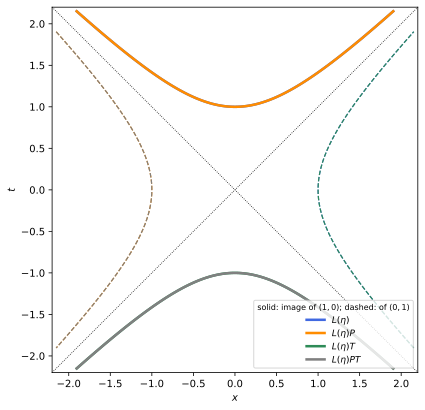
figures/sr-o11.sage.
The boosts are the first and most important elements. The first example checks that the boost matrices of Proposition 6 satisfy the defining condition.
Example 43 (Boosts are in O(1, 1)) For L(\eta) = \begin{pmatrix}\cosh\eta & \sinh\eta \\ \sinh\eta & \cosh\eta\end{pmatrix}, L^T\eta_2L has entries \cosh^2\eta - \sinh^2\eta = 1, \cosh\eta\sinh\eta - \sinh\eta\cosh\eta = 0 and \sinh^2\eta - \cosh^2\eta = -1: it equals \eta_2. Its determinant is 1 and L^0{}_0 = \cosh\eta > 0, so L(\eta) \in SO^+(1, 1). The passive boost of Equation 3 is L(-\eta).
Veriphy. Pending.
Lean. Pending.
Sage. Pending.
Reflections preserve t^2 - x^2 as well, since they only change signs. The second example shows that they lie outside SO^+(1, 1) and that the group is therefore larger than the boosts.
Example 44 (Reflections) P, T and PT = -1 satisfy \Lambda^T\eta_2\Lambda = \eta_2 because they are diagonal with entries \pm1. Their determinants are -1, -1 and 1, and their entries \Lambda^0{}_0 are 1, -1, -1: none is in SO^+(1, 1). PT has determinant 1 yet reverses the direction of time, so the conditions \det\Lambda = 1 and \Lambda^0{}_0 > 0 are independent.
Veriphy. Pending.
Lean. Pending.
Sage. Pending.
The Galilean transformation is the obvious candidate that fails. The third example checks the defining condition on it. Checking the defining condition directly shows where it fails.
Example 45 (The Galilean boost is not in O(1, 1)) G = \begin{pmatrix}1 & 0 \\ -v & 1\end{pmatrix} (the map t' = t, x' = x - vt) gives G^T\eta_2G = \begin{pmatrix}1 - v^2 & v \\ v & -1\end{pmatrix} \neq \eta_2 for v \neq 0: the Galilean boost does not preserve the interval (Example 5). It does preserve t and the degenerate form dx^2 on simultaneous events.
Veriphy. Pending.
Lean. Pending.
Sage. Pending.
The defining condition says something about the columns of \Lambda. The first exercise makes it explicit, as for orthogonal matrices in Euclidean space.
Exercise 49 (Orthonormal columns) Show that \Lambda = \begin{pmatrix}a & c \\ b & d\end{pmatrix} lies in O(1, 1) if and only if a^2 - b^2 = 1, c^2 - d^2 = -1 and ac - bd = 0, that is, its columns form an orthonormal basis for \eta_2.
(\Lambda^T\eta_2\Lambda)_{\mu\nu} is the Minkowski product of the columns \mu and \nu: (a, b)\cdot(a, b) = a^2 - b^2, (c, d)\cdot(c, d) = c^2 - d^2, (a, b)\cdot(c, d) = ac - bd. Equality with \eta_2 is the three conditions.
Veriphy. Pending.
Lean. Pending.
Sage. Pending.
The name “group” must be justified. The second exercise checks closure under products and inverses, with a formula for the inverse that reappears in four dimensions.
Exercise 50 (O(1, 1) is a group) Show that O(1, 1) is closed under multiplication and that \Lambda^{-1} = \eta_2\Lambda^T\eta_2. Conclude that \Lambda^T \in O(1, 1) whenever \Lambda is.
(\Lambda_1\Lambda_2)^T\eta_2\Lambda_1\Lambda_2 = \Lambda_2^T(\Lambda_1^T\eta_2\Lambda_1)\Lambda_2 = \Lambda_2^T\eta_2\Lambda_2 = \eta_2. Since \eta_2^2 = 1, (\eta_2\Lambda^T\eta_2)\Lambda = \eta_2\eta_2 = 1, so \Lambda^{-1} = \eta_2\Lambda^T\eta_2; then \Lambda\eta_2\Lambda^T\eta_2 = 1 gives \Lambda\eta_2\Lambda^T = \eta_2, which says \Lambda^T \in O(1, 1). The inverse of L(\eta) is L(-\eta).
Veriphy. Pending.
Lean. Pending.
Sage. Pending.
Parity reverses the direction of a boost. The third exercise shows that O(1, 1) is therefore not abelian, although its boosts commute among themselves.
Exercise 51 (Parity reverses boosts) Compute PL(\eta)P^{-1} and TL(\eta)T^{-1}, and conclude that O(1, 1) is not abelian.
PL(\eta)P flips the signs of the off-diagonal entries: PL(\eta)P^{-1} = L(-\eta), and likewise TL(\eta)T^{-1} = L(-\eta). Hence PL(\eta) = L(-\eta)P \neq L(\eta)P for \eta \neq 0. A mirror image of a frame moving to the right moves to the left.
Veriphy. Pending.
Lean. Pending.
Sage. Pending.
The examples suggest that every element is a boost possibly followed by a reflection. The proposition below proves it and identifies the four pieces of Figure 6; its proof is the template for the four-dimensional theorem Theorem 4.
Proposition 7 (Structure of O(1, 1)) Every \Lambda \in O(1, 1) can be written uniquely as \Lambda = L(\eta)D with \eta \in \mathbb{R} and D \in \{1, P, T, PT\}. Consequently:
- SO^+(1, 1) = \{L(\eta) : \eta \in \mathbb{R}\}, and \eta \mapsto L(\eta) is an isomorphism of Lie groups (\mathbb{R}, +) \to SO^+(1, 1).
- O(1, 1) is the disjoint union of the four sets L(\mathbb{R})D, each homeomorphic to \mathbb{R}; these are its connected components, told apart by (\det\Lambda, \operatorname{sign}\Lambda^0{}_0) = (1, 1), (-1, 1), (-1, -1), (1, -1) for D = 1, P, T, PT.
- The Lie algebra of O(1, 1) is spanned by K = \begin{pmatrix}0 & 1 \\ 1 & 0\end{pmatrix}, and \exp(\eta K) = L(\eta), so the exponential map is a bijection of the Lie algebra onto SO^+(1, 1).
Proof. Let the columns of \Lambda be (a, b) and (c, d) (Exercise 49). From a^2 = 1 + b^2 \geq 1, put \varepsilon = \operatorname{sign}a and \eta = \operatorname{artanh}(b/a), which exists since |b/a| < 1; then a = \varepsilon\cosh\eta and b = a\tanh\eta = \varepsilon\sinh\eta. The second column is orthogonal to the first, \varepsilon(c\cosh\eta - d\sinh\eta) = 0, so (c, d) is proportional to (\sinh\eta, \cosh\eta), and c^2 - d^2 = -1 fixes (c, d) = \delta(\sinh\eta, \cosh\eta) with \delta = \pm1. Thus \Lambda = L(\eta)\operatorname{diag}(\varepsilon, \delta), and \operatorname{diag}(\varepsilon, \delta) is one of 1, T, P, PT; uniqueness holds because \varepsilon, \delta and \eta were determined by \Lambda. Then \det\Lambda = \varepsilon\delta and \Lambda^0{}_0 = \varepsilon\cosh\eta, which gives the table in part 2, and in particular part 1 (for \varepsilon = \delta = 1, with L(\eta_1)L(\eta_2) = L(\eta_1 + \eta_2) by Exercise 11). Each set L(\mathbb{R})D is the continuous image of \mathbb{R}, so connected, and the continuous function (\det\Lambda, \operatorname{sign}\Lambda^0{}_0) is constant on each and different on different ones, so they are open and closed in O(1, 1) and are the components. For part 3, K^2 = 1 gives \exp(\eta K) = \cosh\eta + K\sinh\eta = L(\eta), and differentiating at \eta = 0 shows that K spans the tangent space at the identity of the one-dimensional group. \square
Veriphy. Pending.
Lean. Pending.
Sage. Pending.
The proof is constructive. The first example applies it to a matrix that reverses the direction of time. The matrix is chosen so that every step can be done by hand.
Example 46 (Decomposing an element) \Lambda = \begin{pmatrix}-5/4 & 3/4 \\ -3/4 & 5/4\end{pmatrix} has (-5/4)^2 - (-3/4)^2 = 1, (3/4)^2 - (5/4)^2 = -1, (-5/4)(3/4) - (-3/4)(5/4) = 0, so it is in O(1, 1). Here \varepsilon = -1, \tanh\eta = 3/5, \eta = \ln2, and (c, d) = (3/4, 5/4) = (\sinh\ln2, \cosh\ln2) gives \delta = 1: \Lambda = L(\ln2)T, in the component of T, with \det\Lambda = -1 and \Lambda^0{}_0 < 0.
Veriphy. Pending.
Lean. Pending.
Sage. Pending.
The group of components is itself a group, and its multiplication table is that of \mathbb{Z}_2 \times \mathbb{Z}_2. The second example records it and the central element PT.
Example 47 (The group of components) P^2 = T^2 = 1, PT = TP = -1, and -1 commutes with everything. The map \Lambda \mapsto (\det\Lambda, \operatorname{sign}\Lambda^0{}_0) sends L(\eta)D to the image of D in \{\pm1\} \times \{\pm1\}; it is a homomorphism (Exercise 52) whose kernel SO^+(1, 1) is a normal subgroup, and O(1, 1)/SO^+(1, 1) \cong \mathbb{Z}_2 \times \mathbb{Z}_2, the quotient of Definition 8 of Group theory.
Veriphy. Pending.
Lean. Pending.
Sage. Pending.
Part 3 says that the exponential map is a bijection here. The third example compares this with the rotation group of the plane, where it is surjective but not injective.
Example 48 (Rapidity versus angle) For SO(2) the generator J = \begin{pmatrix}0 & -1 \\ 1 & 0\end{pmatrix} has J^2 = -1, and \exp(\theta J) = \cos\theta + J\sin\theta is periodic: \exp(2\pi J) = 1, so \theta and \theta + 2\pi give the same rotation (Proposition 1 of Lie groups and Lie algebras). For SO^+(1, 1), K^2 = +1 turns \cos, \sin into \cosh, \sinh, which are not periodic: every boost has a single rapidity, and SO^+(1, 1) \cong \mathbb{R} is not compact.
Veriphy. Pending.
Lean. Pending.
Sage. Pending.
The homomorphism property of the sign of \Lambda^0{}_0 is the key to the components. The first exercise proves it in two dimensions from the decomposition.
Exercise 52 (The sign of the time component is multiplicative) Show that for \Lambda_1, \Lambda_2 \in O(1, 1), \operatorname{sign}(\Lambda_1\Lambda_2)^0{}_0 = \operatorname{sign}(\Lambda_1)^0{}_0\operatorname{sign}(\Lambda_2)^0{}_0.
Write \Lambda_i = L(\eta_i)D_i. Since DL(\eta) = L(\pm\eta)D (Exercise 51), \Lambda_1\Lambda_2 = L(\eta_1 \pm \eta_2)D_1D_2, whose time component is \cosh(\eta_1 \pm \eta_2) times the time sign of the diagonal matrix D_1D_2, which is the product of the time signs of D_1 and D_2. Directly, without the decomposition: (\Lambda_1\Lambda_2)^0{}_0 = a_1a_2 + c_1b_2 in the notation of Exercise 49, and by the proof of Proposition 7, |c_1| = |b_1| = \sqrt{a_1^2 - 1} < |a_1| and |b_2| < |a_2|, so |c_1b_2| < |a_1a_2| and the sum has the sign of a_1a_2.
Veriphy. Pending.
Lean. Pending.
Sage. Pending.
The decomposition is easy to automate. The second exercise asks for a Sage function that returns (\eta, D) and tests it on random products.
Exercise 53 (Decomposition by computer) Write a function that, for \Lambda \in O(1, 1), returns \eta and D with \Lambda = L(\eta)D, and test it on \Lambda = L(0.3)PL(-1.1)TL(0.5).
Following the proof: \varepsilon = \operatorname{sign}\Lambda^0{}_0, \eta = \operatorname{artanh}(\Lambda^1{}_0/\Lambda^0{}_0), \delta = \operatorname{sign}\Lambda^1{}_1. Moving P and T to the right flips the signs of the rapidities passed over: L(0.3)PL(-1.1)TL(0.5) = L(0.3 + 1.1 + 0.5)PT = L(1.9)PT:
import numpy as np
L = lambda e: np.array([[np.cosh(e), np.sinh(e)], [np.sinh(e), np.cosh(e)]])
P = np.diag([1., -1]); T = np.diag([-1., 1])
names = {(1, 1): "1", (1, -1): "P", (-1, 1): "T", (-1, -1): "PT"}
def decompose(M):
eps = np.sign(M[0, 0]); eta = np.arctanh(M[1, 0]/M[0, 0]); delta = np.sign(M[1, 1])
D = np.diag([eps, delta])
assert np.allclose(L(eta) @ D, M)
return eta, names[(int(eps), int(delta))]
M = L(0.3) @ P @ L(-1.1) @ T @ L(0.5)
print("Lambda =", np.round(M, 6))
print("in O(1,1):", np.allclose(M.T @ np.diag([1., -1]) @ M, np.diag([1., -1])))
print("decomposition (eta, D):", decompose(M))Output:
Lambda = [[-3.417732 -3.268163]
[-3.268163 -3.417732]]
in O(1,1): True
decomposition (eta, D): (np.float64(1.899999999999999), 'PT')Veriphy. Pending.
Lean. Pending.
Sage. Pending.
A stabiliser measures how much of the group fixes a point. The third exercise computes the stabiliser of the rest vector, the two-dimensional ancestor of the little groups of Section 1.3.9.
Exercise 54 (The stabiliser of the rest vector) Find all \Lambda \in O(1, 1) with \Lambda(1, 0)^T = (1, 0)^T, and all \Lambda \in SO^+(1, 1) with this property. Describe the orbit of (1, 0) under SO^+(1, 1) and under O(1, 1).
L(\eta)D(1, 0)^T = \varepsilon(\cosh\eta, \sinh\eta), equal to (1, 0) only for \varepsilon = 1, \eta = 0: the stabiliser is \{1, P\} in O(1, 1) and trivial in SO^+(1, 1). The orbits are the upper branch of t^2 - x^2 = 1 and both branches; by the orbit-stabiliser bijection (Definition 11 of Group theory) the upper branch is SO^+(1, 1) itself, parametrised by the rapidity.
Veriphy. Pending.
Lean. Pending.
Sage. Pending.
Passive and active transformations
A Lorentz matrix can be read in two ways. It can describe a change of observer, with the physical system left alone, or a change of the system, seen by a fixed observer. The two readings give the same formulas for components but opposite physical meanings, and confusing them is the commonest source of sign errors. The definitions below fix the conventions for vectors, tensors, fields and spinors, and Figure 7 shows the two readings side by side.
Definition 8 (Passive transformation) Let \Lambda be a Lorentz matrix (Definition 11) and (e_\mu) an inertial frame. The active transformation by \Lambda moves every vector, V \mapsto \Lambda V, keeping the frame: the components become V^\mu \mapsto \Lambda^\mu{}_\nu V^\nu. The passive transformation by \Lambda keeps every vector and changes the frame to e'_\mu = e_\nu(\Lambda^{-1})^\nu{}_\mu; the components of a fixed vector in the new frame are V'^\mu = \Lambda^\mu{}_\nu V^\nu. The two give the same new components, and the passive transformation by \Lambda is the change of frame to the frame actively moved by \Lambda^{-1}: e'_\mu = \Lambda^{-1}e_\mu.
Veriphy. Pending.
Lean. Pending.
Sage. Pending.
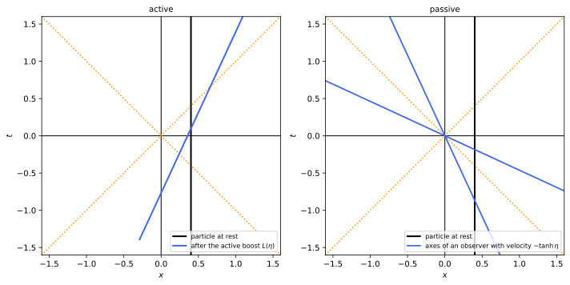
figures/sr-passive-active.sage.
The boost of Theorem 1 is passive. The first example identifies the corresponding active transformation and checks the velocities in Figure 7.
Example 49 (The standard boost read both ways) The passive boost to a frame moving with velocity v = \tanh\eta along x has matrix L(-\eta) (Equation 3): a particle at rest in the old frame, with components (1, 0), gets the components (\cosh\eta, -\sinh\eta), velocity -v. The active boost L(\eta) gives a particle at rest the velocity +v. Observing a system from a frame moving with v is equivalent to moving the system with -v.
Veriphy. Pending.
Lean. Pending.
Sage. Pending.
Rotations show the same duality with angles. The second example compares rotating a vector with rotating the axes. The comparison is easiest in the plane, where both readings can be drawn.
Example 50 (Rotating a vector or the axes) The active rotation by \theta about z sends the vector e_1 to \cos\theta\,e_1 + \sin\theta\,e_2. The passive rotation with the same matrix R(\theta) uses the axes e'_\mu = R(-\theta)e_\mu, turned by -\theta; in them e_1 has components (\cos\theta, \sin\theta, 0), the same numbers. Turning the axes clockwise makes a fixed vector appear turned counterclockwise.
Veriphy. Pending.
Lean. Pending.
Sage. Pending.
Compositions must be read in the right order. The third example shows that, with the definitions above, active and passive compositions multiply the matrices in the same order.
Example 51 (Composing transformations) Actively, first \Lambda_1 and then \Lambda_2 give V \mapsto \Lambda_2\Lambda_1V. Passively, passing from K to K_1 with \Lambda_1 and then from K_1 to K_2 with \Lambda_2, where \Lambda_2 is written in the components of K_1, gives V'' = \Lambda_2V' = \Lambda_2\Lambda_1V. In both readings the matrix of the first step stands on the right.
Veriphy. Pending.
Lean. Pending.
Sage. Pending.
The first exercise uses passive composition to rederive the composition of collinear velocities, with every frame named explicitly. Every frame and every matrix is named, so that no sign is left to intuition.
Exercise 55 (Two passive boosts) K' moves with velocity v along x in K, and K'' moves with u along x' in K'. Using the passive matrices L(-\eta), find the velocity of K'' in K.
The components in K'' are L(-\eta_u)L(-\eta_v)V = L(-(\eta_u + \eta_v))V, the passive boost with rapidity \eta_u + \eta_v, so K'' moves with \tanh(\eta_u + \eta_v) = (u + v)/(1 + uv) in K (Proposition 4).
Veriphy. Pending.
Lean. Pending.
Sage. Pending.
The new frame vectors are themselves vectors, and they can be computed. The second exercise does this for the standard boost and compares with Example 22.
Exercise 56 (The new frame vectors) For the passive boost \Lambda = L(-\eta) along x, compute e'_\mu = e_\nu(\Lambda^{-1})^\nu{}_\mu and check that e'_0 is the four-velocity of the moving observer.
\Lambda^{-1} = L(\eta), so e'_0 = \cosh\eta\,e_0 + \sinh\eta\,e_1 = \gamma(e_0 + ve_1) and e'_1 = \sinh\eta\,e_0 + \cosh\eta\,e_1 = \gamma(ve_0 + e_1), the basis of Example 22. e'_0 = \gamma(1, v, 0, 0) is the four-velocity of an observer moving with v, as it should be: the time axis of a frame is the worldline of its observers.
Veriphy. Pending.
Lean. Pending.
Sage. Pending.
The last statement of the definition says that a passive transformation is an active one applied to the frame, inverted. The third exercise proves it and the equality of components.
Exercise 57 (Components agree) Prove that if e'_\mu = e_\nu(\Lambda^{-1})^\nu{}_\mu then V = V^\mu e_\mu = V'^\mu e'_\mu with V'^\mu = \Lambda^\mu{}_\nu V^\nu, and that e'_\mu = \Lambda^{-1}e_\mu, where \Lambda^{-1} acts on the vector e_\mu as a linear map.
V'^\mu e'_\mu = \Lambda^\mu{}_\nu V^\nu e_\alpha(\Lambda^{-1})^\alpha{}_\mu = e_\alpha(\Lambda^{-1}\Lambda)^\alpha{}_\nu V^\nu = V^\nu e_\nu. The linear map \Lambda^{-1} sends e_\mu, with components \delta^\nu_\mu, to the vector with components (\Lambda^{-1})^\nu{}_\mu, which is e_\nu(\Lambda^{-1})^\nu{}_\mu = e'_\mu.
Veriphy. Pending.
Lean. Pending.
Sage. Pending.
Vectors are the simplest objects that transform. Tensors of any type (Definition 18 of Linear algebra) transform with one factor for each index, and the position of the index decides which factor: this is the content of the next definition.
Definition 9 (Lorentz tensor) A Lorentz tensor of type (r, s) is a tensor of type (r, s) on the Minkowski vector space V; its components in an inertial frame transform under a change of frame \Lambda (passive) as T'^{\mu_1\cdots\mu_r}{}_{\nu_1\cdots\nu_s} = \Lambda^{\mu_1}{}_{\alpha_1}\cdots\Lambda^{\mu_r}{}_{\alpha_r}\,\Lambda_{\nu_1}{}^{\beta_1}\cdots\Lambda_{\nu_s}{}^{\beta_s}\, T^{\alpha_1\cdots\alpha_r}{}_{\beta_1\cdots\beta_s} , \qquad \Lambda_\nu{}^\beta = \eta_{\nu\alpha}\Lambda^\alpha{}_\gamma\eta^{\gamma\beta} . \tag{6} Indices are raised and lowered with \eta, and a tensor whose components are the same in every inertial frame is invariant.
Veriphy. Pending.
Lean. Pending.
Sage. Pending.
The matrix with lowered first index is the inverse transpose of \Lambda, which is why upper and lower indices transform contragrediently. The first example proves this identity, used from now on without comment.
Example 52 (The lowered matrix is the inverse) From \eta_{\alpha\beta}\Lambda^\alpha{}_\mu\Lambda^\beta{}_\nu = \eta_{\mu\nu}, multiply by \eta^{\nu\gamma}: \Lambda_\beta{}^\gamma\Lambda^\beta{}_\mu = \delta^\gamma_\mu with \Lambda_\beta{}^\gamma = \eta_{\beta\alpha}\Lambda^\alpha{}_\nu\eta^{\nu\gamma}. So \Lambda_\beta{}^\gamma = (\Lambda^{-1})^\gamma{}_\beta: covariant components transform with the inverse transpose, V'_\mu = (\Lambda^{-1})^\nu{}_\mu V_\nu, and the contraction V'_\mu W'^\mu = V_\nu W^\nu is invariant. For a boost along x with velocity v, \Lambda^0{}_1 = -\gamma v while \Lambda_0{}^1 = +\gamma v.
Veriphy. Pending.
Lean. Pending.
Sage. Pending.
Two tensors are invariant under every Lorentz transformation of determinant one. The second example identifies them; they are the building blocks of every Lorentz-invariant expression.
Example 53 (The invariant tensors \eta and \epsilon) By Equation 6, \eta'_{\mu\nu} = \Lambda_\mu{}^\alpha\Lambda_\nu{}^\beta\eta_{\alpha\beta} = \eta_{\mu\nu} is the defining condition rewritten. The Levi-Civita symbol with \epsilon_{0123} = 1 transforms to \Lambda_\mu{}^\alpha\Lambda_\nu{}^\beta\Lambda_\rho{}^\gamma\Lambda_\sigma{}^\delta\epsilon_{\alpha\beta\gamma\delta} = \det(\Lambda^{-1})\epsilon_{\mu\nu\rho\sigma}, so it is invariant exactly when \det\Lambda = 1; parity and time reversal change its sign. With indices raised, \epsilon^{0123} = -1.
Veriphy. Pending.
Lean. Pending.
Sage. Pending.
Rotations are Lorentz transformations, so a Lorentz tensor is also a collection of rotation tensors. The third example decomposes a two-index tensor accordingly (Maggiore 2023, sec. 7.3.5).
Example 54 (A Lorentz tensor under rotations) Under rotations \Lambda = \operatorname{diag}(1, R) the components of T^{\mu\nu} split into T^{00} (a scalar), T^{0i} and T^{i0} (two vectors) and T^{ij}, which splits further into its trace (a scalar), its antisymmetric part (a vector) and its symmetric traceless part (five components): 16 = 1 + 3 + 3 + 1 + 3 + 5. Boosts mix these pieces; only the trace \eta_{\mu\nu}T^{\mu\nu} = T^{00} - T^{ii} is a Lorentz scalar.
Veriphy. Pending.
Lean. Pending.
Sage. Pending.
The transformation law of the energy-momentum tensor of a fluid shows which components mix. The first exercise boosts it (Blennow and Ohlsson 2022, Problems 1.147-1.148).
Exercise 58 (A perfect fluid seen from a moving frame) The stress tensor of a fluid at rest is T^{\mu\nu} = \operatorname{diag}(\rho, p, p, p). Compute T'^{\mu\nu} in a frame moving with v along x, check that the trace is invariant, and show that for radiation, p = \rho/3, the energy density seen by the moving observer is \rho\gamma^2(1 + v^2/3).
With \Lambda = L(-\eta) in the (t, x) block, T'^{00} = \gamma^2(\rho + v^2p), T'^{01} = -\gamma^2v(\rho + p), T'^{11} = \gamma^2(v^2\rho + p), T'^{22} = T'^{33} = p. The trace T'^{00} - T'^{11} - 2p = \gamma^2(1 - v^2)(\rho - p) - 2p = \rho - 3p is unchanged. For p = \rho/3, T'^{00} = \rho\gamma^2(1 + v^2/3), and the momentum density T'^{01} is non-zero: the moving observer feels a wind of radiation:
var('rho p v', domain='positive')
g = 1/sqrt(1 - v^2)
Lam = matrix(SR, [[g, -g*v, 0, 0], [-g*v, g, 0, 0], [0, 0, 1, 0], [0, 0, 0, 1]])
T = diagonal_matrix(SR, [rho, p, p, p])
Tp = (Lam*T*Lam.transpose()).simplify_full()
print("T'^00 =", Tp[0, 0], " T'^01 =", Tp[0, 1], " T'^11 =", Tp[1, 1])
eta = diagonal_matrix([1, -1, -1, -1])
print("trace before and after:", (eta*T).trace(), "|", (eta*Tp).trace().simplify_full())
print("radiation p = rho/3: T'^00 =", Tp[0, 0].subs(p=rho/3).factor())Output:
T'^00 = -(p*v^2 + rho)/(v^2 - 1) T'^01 = (p + rho)*v/(v^2 - 1) T'^11 = -(rho*v^2 + p)/(v^2 - 1)
trace before and after: -3*p + rho | -3*p + rho
radiation p = rho/3: T'^00 = -1/3*(v^2 + 3)*rho/((v + 1)*(v - 1))Veriphy. Pending.
Lean. Pending.
Sage. Pending.
A tensor equation that holds in one frame holds in all, which is the point of the tensor formalism. The second exercise checks the mechanism for a contraction of two indices.
Exercise 59 (Contractions are invariant) Show that the contraction T^\mu{}_\mu of a (1, 1) tensor and the full contraction S_{\mu\nu}T^{\mu\nu} are invariant under Equation 6.
T'^\mu{}_\mu = \Lambda^\mu{}_\alpha\Lambda_\mu{}^\beta T^\alpha{}_\beta = (\Lambda^{-1})^\beta{}_\mu\Lambda^\mu{}_\alpha T^\alpha{}_\beta = \delta^\beta_\alpha T^\alpha{}_\beta by Example 52. For S_{\mu\nu}T^{\mu\nu} the same cancellation happens for each pair of contracted indices. In matrix language, T' = \Lambda T\Lambda^{-1} for a (1, 1) tensor, and the trace is invariant under conjugation.
Veriphy. Pending.
Lean. Pending.
Sage. Pending.
The identity \Lambda_\mu{}^\nu = (\Lambda^{-1})^\nu{}_\mu is easy to get wrong by a transpose. The third exercise checks it numerically for a product of a boost and a rotation, together with the tensor law for a mixed tensor.
Exercise 60 (The index identity in numbers) With Sage, take \Lambda = (boost with \vec v = (0.3, -0.4, 0.2)) times (rotation by 1\,rad about (1, 1, 1)/\sqrt3). Check \eta\Lambda\eta^{-1} = (\Lambda^{-1})^T and that the trace and the determinant of a random (1, 1) tensor are invariant.
In matrix notation \Lambda_\mu{}^\nu is the matrix \eta\Lambda\eta^{-1} read with the row index \mu, and (\Lambda^{-1})^\nu{}_\mu is (\Lambda^{-1})^T read the same way; the two agree to machine precision, and T' = \Lambda T\Lambda^{-1} has the same trace and determinant as T:
import numpy as np
eta = np.diag([1., -1, -1, -1])
def boost(v):
v = np.array(v, float); b = np.linalg.norm(v); g = 1/np.sqrt(1 - b*b); B = np.eye(4)
B[0, 0] = g; B[0, 1:] = g*v; B[1:, 0] = g*v; B[1:, 1:] += (g - 1)*np.outer(v, v)/b**2
return B
def rotation(axis, th):
n = np.array(axis, float)/np.linalg.norm(axis); K = np.array([[0, -n[2], n[1]], [n[2], 0, -n[0]], [-n[1], n[0], 0]])
R = np.eye(4); R[1:, 1:] = np.eye(3) + np.sin(th)*K + (1 - np.cos(th))*K @ K
return R
Lam = boost([0.3, -0.4, 0.2]) @ rotation([1, 1, 1], 1.0)
print("Lambda in O(1,3):", np.allclose(Lam.T @ eta @ Lam, eta))
print("max |eta Lambda eta^-1 - (Lambda^-1)^T| =", np.abs(eta @ Lam @ np.linalg.inv(eta) - np.linalg.inv(Lam).T).max())
rng = np.random.default_rng(int(3)); Tt = rng.normal(size=(4, 4))
Tp = Lam @ Tt @ np.linalg.inv(Lam)
print("trace: %.12f %.12f det: %.12f %.12f" % (np.trace(Tt), np.trace(Tp), np.linalg.det(Tt), np.linalg.det(Tp)))Output:
Lambda in O(1,3): True
max |eta Lambda eta^-1 - (Lambda^-1)^T| = 4.440892098500626e-16
trace: 1.660307594289 1.660307594289 det: -3.934739104966 -3.934739104966Veriphy. Pending.
Lean. Pending.
Sage. Pending.
Fields are tensors that depend on the point. Transforming them changes both the components and the point at which they are evaluated, and spinor fields transform with a representation of the double cover instead of \Lambda itself.
Definition 10 (Transformation of a field) Under a change of inertial frame x'^\mu = \Lambda^\mu{}_\nu x^\nu (passive), a scalar field satisfies \phi'(x') = \phi(x), a vector field A'^\mu(x') = \Lambda^\mu{}_\nu A^\nu(x), a tensor field transforms by Equation 6 at corresponding points, and a spinor field \psi'(x') = S(\Lambda)\psi(x), where S is a representation of SL(2, \mathbb{C}) (Definition 14) evaluated on a lift of \Lambda (Theorem 7), determined up to sign. Equivalently \phi'(x) = \phi(\Lambda^{-1}x), A'(x) = \Lambda A(\Lambda^{-1}x), \psi'(x) = S(\Lambda)\psi(\Lambda^{-1}x); read actively, the same formulas move the field configuration by \Lambda.
Veriphy. Pending.
Lean. Pending.
Sage. Pending.
A plane wave carries its wave vector with it. The first example shows that the transformation law of a scalar field makes the wave vector transform as a four-vector, which Section 1.5 uses for the Doppler effect.
Example 55 (A plane wave) For \phi(x) = e^{-ik\cdot x}, \phi'(x) = \phi(\Lambda^{-1}x) = e^{-ik_\mu(\Lambda^{-1})^\mu{}_\nu x^\nu} = e^{-ik'\cdot x} with k'_\nu = k_\mu(\Lambda^{-1})^\mu{}_\nu = \Lambda_\nu{}^\mu k_\mu: the wave vector transforms as a covector, k'^\mu = \Lambda^\mu{}_\nu k^\nu after raising. The phase k\cdot x is invariant, as Example 17 of Classical field theory used.
Veriphy. Pending.
Lean. Pending.
Sage. Pending.
Some fields are invariant under all Lorentz transformations, and the transformation law shows which. The second example finds an invariant vector field.
Example 56 (An invariant vector field) The position field A^\mu(x) = x^\mu has A'(x) = \Lambda A(\Lambda^{-1}x) = \Lambda\Lambda^{-1}x = x: it is invariant, the Lorentzian analogue of the radial field of Maggiore (2023, sec. 7.3.6, note 17). So is every field f(x^2)x^\mu, while f(x^0)x^\mu is invariant only under rotations.
Veriphy. Pending.
Lean. Pending.
Sage. Pending.
For spinor fields the sign of S(\Lambda) is not determined by \Lambda. The third example shows the consequence for rotations by 2\pi, with the matrices of the Weyl representation.
Example 57 (A spinor field under a full turn) For the rotation by \theta about z, the spinor representation of Definition 10 of Classical field theory gives S = \exp(\theta S^{12}) = \operatorname{diag}(e^{-i\theta\sigma_3/2}, e^{-i\theta\sigma_3/2}), which equals -1 at \theta = 2\pi (Example 42 of Classical field theory) although \Lambda = 1: \psi'(x) = -\psi(x). The lifts \pm S of one \Lambda are the two points over it of the double cover of Theorem 7; observables, bilinear in \psi, do not see the sign.
Veriphy. Pending.
Lean. Pending.
Sage. Pending.
Derivatives of fields transform as covariant indices. The first exercise proves this for a scalar field, following Maggiore (2023, eq. (7.106)).
Exercise 61 (The gradient is a covector field) For a scalar field, show that \partial'_\mu\phi'(x') = \Lambda_\mu{}^\nu\partial_\nu\phi(x), where \partial'_\mu = \partial/\partial x'^\mu.
x^\nu = (\Lambda^{-1})^\nu{}_\alpha x'^\alpha, so \partial x^\nu/\partial x'^\mu = (\Lambda^{-1})^\nu{}_\mu = \Lambda_\mu{}^\nu (Example 52), and the chain rule gives \partial'_\mu\phi'(x') = \frac{\partial x^\nu}{\partial x'^\mu}\partial_\nu\phi(x) = \Lambda_\mu{}^\nu\partial_\nu\phi(x).
Veriphy. Pending.
Lean. Pending.
Sage. Pending.
Wave equations built from contractions are invariant. The second exercise checks the d’Alembert equation for a vector field (Blennow and Ohlsson 2022, Problem 1.112).
Exercise 62 (The wave equation is invariant) Show that if \Box A^\mu = 0, with \Box = \eta^{\alpha\beta}\partial_\alpha\partial_\beta, then \Box'A'^\mu(x') = 0.
\Box' = \eta^{\alpha\beta}\partial'_\alpha\partial'_\beta = \eta^{\alpha\beta}\Lambda_\alpha{}^\gamma\Lambda_\beta{}^\delta\partial_\gamma\partial_\delta = \eta^{\gamma\delta}\partial_\gamma\partial_\delta = \Box, since \eta^{\alpha\beta} is invariant. Then \Box'A'^\mu(x') = \Lambda^\mu{}_\nu\Box A^\nu(x) = 0, the matrix \Lambda being constant.
Veriphy. Pending.
Lean. Pending.
Sage. Pending.
The third exercise checks a scalar built from a vector field, verified symbolically for a concrete field and a concrete boost. The symbolic check makes sure that the evaluation points are handled correctly.
Exercise 63 (The divergence is a scalar field) Show that \partial_\mu A^\mu is a scalar field, and check it with Sage for A^\mu(x) = (t^2, xy, z, tx) and a boost along x with v = 3/5.
\partial'_\mu A'^\mu(x') = \Lambda_\mu{}^\alpha\partial_\alpha(\Lambda^\mu{}_\beta A^\beta) = (\Lambda^{-1})^\alpha{}_\mu\Lambda^\mu{}_\beta\partial_\alpha A^\beta = \partial_\alpha A^\alpha. For the given field \partial_\mu A^\mu = 2t + x + 0 + 0, and the transformed field gives the same function at corresponding points:
var('t x y z tp xp yp zp')
X = vector([t, x, y, z]); A = vector([t^2, x*y, z, t*x])
divA = sum(diff(A[m], X[m]) for m in range(4))
v = 3/5; g = 5/4
Lam = matrix(QQ, [[g, -g*v, 0, 0], [-g*v, g, 0, 0], [0, 0, 1, 0], [0, 0, 0, 1]])
Xp = vector([tp, xp, yp, zp]); Xold = Lam.inverse()*Xp # x = Lambda^-1 x'
sub = dict(zip(X, Xold))
Ap = Lam*vector([c.subs(sub) for c in A]) # A'(x') = Lambda A(Lambda^-1 x')
divAp = sum(diff(Ap[m], Xp[m]) for m in range(4))
print("div A =", divA)
print("div' A' at x' minus div A at x = Lambda^-1 x':", (divAp - divA.subs(sub)).simplify_full())Output:
div A = 2*t + y
div' A' at x' minus div A at x = Lambda^-1 x': 0Veriphy. Pending.
Lean. Pending.
Sage. Pending.
The Lorentz group
The second step of the construction defines the group in four dimensions. Its definition is the condition that the Minkowski form be preserved, exactly as the orthogonal group is defined by the Euclidean one (Proposition 5 of Linear algebra gives the values of the form).
Definition 11 (Lorentz group) The Lorentz group is O(1, 3) = \{\Lambda \in GL(4, \mathbb{R}) : \Lambda^T\eta\Lambda = \eta\}, in components \eta_{\alpha\beta}\Lambda^\alpha{}_\mu\Lambda^\beta{}_\nu = \eta_{\mu\nu}. Its elements are proper if \det\Lambda = 1 and orthochronous if \Lambda^0{}_0 > 0; the proper orthochronous ones form SO^+(1, 3). Parity and time reversal are P = \operatorname{diag}(1, -1, -1, -1) and T = \operatorname{diag}(-1, 1, 1, 1), and the rotations are the matrices \operatorname{diag}(1, R) with R \in SO(3).
Veriphy. Pending.
Lean. Pending.
Sage. Pending.
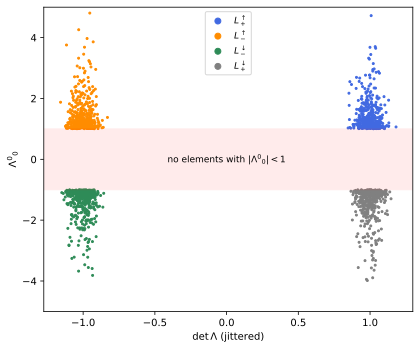
figures/sr-components.sage.
Rotations of space leave time alone and preserve |\vec x|^2. The first example confirms that they are Lorentz transformations, so that SO(3) is a subgroup of SO^+(1, 3).
Example 58 (Rotations) For \Lambda = \operatorname{diag}(1, R), \Lambda^T\eta\Lambda = \operatorname{diag}(1, -R^TR) = \eta exactly when R^TR = 1. For R \in SO(3), \det\Lambda = 1 and \Lambda^0{}_0 = 1, so the rotations lie in SO^+(1, 3); for R = -1 one gets P.
Veriphy. Pending.
Lean. Pending.
Sage. Pending.
Boosts in any direction are the other basic elements. The second example records the matrix of Exercise 8 in its active form.
Example 59 (Boosts in any direction) For |\vec v| < 1 the active boost B(\vec v) = \begin{pmatrix}\gamma & \gamma\vec v^T \\ \gamma\vec v & 1 + (\gamma - 1)\hat v\hat v^T\end{pmatrix} \tag{7} satisfies B^T\eta B = \eta (Exercise 8, where the passive version B(-\vec v) was checked), has \det B = 1 and B^0{}_0 = \gamma \geq 1, and sends the rest vector e_0 to the four-velocity \gamma(1, \vec v).
Veriphy. Pending.
Lean. Pending.
Sage. Pending.
The discrete transformations complete the list of basic elements. The third example notes that PT = -1 is central and reverses every four-vector.
Example 60 (Parity, time reversal and their product) P, T and PT = -1 preserve \eta because they are diagonal with entries \pm1. P reverses spatial vectors and keeps t, T reverses t, and PT sends every four-vector to its negative, commuting with all of O(1, 3). Of the three only PT is proper, and none is orthochronous except P.
Veriphy. Pending.
Lean. Pending.
Sage. Pending.
The first exercise repeats the group axioms in four dimensions and finds the inverse without inverting a matrix. The formula for the inverse avoids any matrix inversion and is used constantly.
Exercise 64 (The inverse of a Lorentz matrix) Show that O(1, 3) is a subgroup of GL(4, \mathbb{R}), that \Lambda^{-1} = \eta\Lambda^T\eta, and that \Lambda^T \in O(1, 3) whenever \Lambda is.
As in Exercise 50: (\Lambda_1\Lambda_2)^T\eta\Lambda_1\Lambda_2 = \Lambda_2^T\eta\Lambda_2 = \eta, \eta^2 = 1 gives (\eta\Lambda^T\eta)\Lambda = 1, and then \Lambda\eta\Lambda^T = \eta. In components, (\Lambda^{-1})^\mu{}_\nu = \eta^{\mu\alpha}\Lambda^\beta{}_\alpha\eta_{\beta\nu} = \Lambda_\nu{}^\mu, the identity of Example 52.
Veriphy. Pending.
Lean. Pending.
Sage. Pending.
The columns of a Lorentz matrix are the images of the frame vectors. The second exercise shows that they form a new inertial frame, possibly with reversed time or orientation.
Exercise 65 (Columns form an orthonormal frame) Show that \Lambda \in O(1, 3) if and only if its columns \Lambda e_\mu satisfy (\Lambda e_\mu)\cdot(\Lambda e_\nu) = \eta_{\mu\nu}, and the same for its rows with \eta inserted. Check it for B(\vec v)R with \vec v = (0.6, 0, 0) and R the rotation by \pi/2 about z.
(\Lambda^T\eta\Lambda)_{\mu\nu} = (\Lambda e_\mu)\cdot(\Lambda e_\nu), so the condition is the orthonormality of the columns; for rows apply it to \Lambda^T \in O(1, 3) (Exercise 64). The product has columns (1.25, 0.75, 0, 0), (0, 0, 1, 0), (-0.75, -1.25, 0, 0), (0, 0, 0, 1), which are orthonormal:
eta = diagonal_matrix(QQ, [1, -1, -1, -1])
B = matrix(QQ, [[5/4, 3/4, 0, 0], [3/4, 5/4, 0, 0], [0, 0, 1, 0], [0, 0, 0, 1]])
R = matrix(QQ, [[1, 0, 0, 0], [0, 0, -1, 0], [0, 1, 0, 0], [0, 0, 0, 1]])
Lam = B*R
print("Lambda ="); print(Lam)
print("Gram matrix of the columns:"); print(Lam.transpose()*eta*Lam)
print("Gram matrix of the rows:"); print(Lam*eta*Lam.transpose())Output:
Lambda =
[ 5/4 0 -3/4 0]
[ 3/4 0 -5/4 0]
[ 0 1 0 0]
[ 0 0 0 1]
Gram matrix of the columns:
[ 1 0 0 0]
[ 0 -1 0 0]
[ 0 0 -1 0]
[ 0 0 0 -1]
Gram matrix of the rows:
[ 1 0 0 0]
[ 0 -1 0 0]
[ 0 0 -1 0]
[ 0 0 0 -1]Veriphy. Pending.
Lean. Pending.
Sage. Pending.
The Lorentz group is not compact, unlike O(4). The third exercise exhibits unbounded sequences of elements. Compactness is what distinguishes the representation theory of the two groups, as Section 1.3.9 will show.
Exercise 66 (The Lorentz group is not compact) Show that \{B(\tanh n\,\hat x) : n \in \mathbb{N}\} has no convergent subsequence in GL(4, \mathbb{R}), and conclude that O(1, 3) is not compact. Why is O(4) compact?
B^0{}_0 = \cosh n \to \infty, so no subsequence is bounded, let alone convergent. A compact subset of the matrices is bounded. O(4) is closed and bounded, since \Lambda^T\Lambda = 1 forces every entry to have modulus at most 1; O(1, 3) is closed but not bounded, because \Lambda^T\eta\Lambda = \eta only controls the differences (\Lambda^0{}_0)^2 - \sum_i(\Lambda^i{}_0)^2.
Veriphy. Pending.
Lean. Pending.
Sage. Pending.
Being a group is not yet being a Lie group. The theorem below shows that O(1, 3) is a smooth submanifold of the matrices, of dimension six, with an explicit tangent space at the identity; the proof uses the regular value theorem rather than the general closed-subgroup theorem quoted in Definition 2 of Lie groups and Lie algebras.
Theorem 3 (The Lorentz group is a Lie group) O(1, 3) is a closed subgroup of GL(4, \mathbb{R}) and a submanifold of dimension 6; it is a matrix Lie group (Definition 2 of Lie groups and Lie algebras) whose Lie algebra (Definition 8 of Lie groups and Lie algebras) is \mathfrak{so}(1, 3) = \{X \in \mathfrak{gl}(4, \mathbb{R}) : X^T\eta + \eta X = 0\} = \{X : \eta X \text{ is antisymmetric}\} . \tag{8}
Proof. Let \mathrm{Sym} be the 10-dimensional space of symmetric 4 \times 4 matrices and F : GL(4, \mathbb{R}) \to \mathrm{Sym}, F(\Lambda) = \Lambda^T\eta\Lambda. F is continuous, so O(1, 3) = F^{-1}(\eta) is closed. Its derivative at \Lambda is dF_\Lambda(X) = X^T\eta\Lambda + \Lambda^T\eta X. For \Lambda \in O(1, 3) and any S \in \mathrm{Sym}, the matrix X = \tfrac12\Lambda\eta S gives \Lambda^T\eta X = \tfrac12\Lambda^T\eta\Lambda\eta S = \tfrac12S and X^T\eta\Lambda = (\Lambda^T\eta X)^T = \tfrac12S, so dF_\Lambda(X) = S: dF_\Lambda is surjective at every point of F^{-1}(\eta). By the regular value theorem O(1, 3) is a submanifold of dimension 16 - 10 = 6, with tangent space \ker dF_\Lambda; at \Lambda = 1 this is \{X : X^T\eta + \eta X = 0\}. Multiplication and inversion are restrictions of the smooth operations of GL(4, \mathbb{R}), so O(1, 3) is a Lie group. Finally, if X^T\eta + \eta X = 0 then \frac{d}{dt}(e^{tX})^T\eta e^{tX} = (e^{tX})^T(X^T\eta + \eta X)e^{tX} = 0, so e^{tX} \in O(1, 3) for all t, and conversely differentiating (e^{tX})^T\eta e^{tX} = \eta at t = 0 gives the condition: the tangent space is the Lie algebra of Definition 8 of Lie groups and Lie algebras. X^T\eta + \eta X = 0 says (\eta X)^T = -\eta X. \square
Veriphy. Pending.
Lean. Pending.
Sage. Pending.
The dimension can be read off the Lie algebra. The first example counts the free entries and names them. The count agrees with the dimension found in the theorem.
Example 61 (Six parameters) \eta X = A antisymmetric means X = \eta A, and antisymmetric 4 \times 4 matrices have 6 entries: three in the block A_{ij} and three in A_{0i}. In terms of an infinitesimal transformation \Lambda = 1 + \omega with \omega^\mu{}_\nu small, the condition is \omega_{\mu\nu} = -\omega_{\nu\mu} (Maggiore 2023, eq. (7.86)): three rotation angles \omega_{ij} and three rapidities \omega_{0i}.
Veriphy. Pending.
Lean. Pending.
Sage. Pending.
A basis of the Lie algebra is chosen once for the whole chapter. The second example writes it down, with the sign convention of Lie algebras and gauge fields for rotations.
Example 62 (Rotation and boost generators) Let (J_i)^j{}_k = -\epsilon_{ijk} with all other entries zero, so that J_3 has (J_3)^1{}_2 = -1, (J_3)^2{}_1 = 1, and let K_i have (K_i)^0{}_i = (K_i)^i{}_0 = 1 and all other entries zero. Then \eta J_i and \eta K_i are antisymmetric, so the six matrices lie in \mathfrak{so}(1, 3), and they are independent. e^{\theta J_3} is the rotation by \theta about z (counterclockwise, active) and e^{\eta K_1} = B(\tanh\eta\,\hat x) is the active boost along x. With (M^{\mu\nu})^\alpha{}_\beta = \eta^{\mu\alpha}\delta^\nu_\beta - \eta^{\nu\alpha}\delta^\mu_\beta, J_i = \tfrac12\epsilon_{ijk}M^{jk} and K_i = M^{0i}.
Veriphy. Pending.
Lean. Pending.
Sage. Pending.
Every element of the Lie algebra generates a one-parameter subgroup. The third example exponentiates a combination of a boost and a rotation about the same axis.
Example 63 (A boost and a rotation about one axis) K_3 and J_3 commute, since K_3 acts on (t, z) and J_3 on (x, y). Hence e^{\eta K_3 + \theta J_3} = e^{\eta K_3}e^{\theta J_3}, a boost along z and a rotation about z, for all \eta, \theta: a one-parameter subgroup in which the observer spins while it accelerates. Such elements are called loxodromic.
Veriphy. Pending.
Lean. Pending.
Sage. Pending.
The surjectivity of dF_\Lambda was shown by an explicit preimage. The first exercise checks the formula numerically. Exact arithmetic with square roots is enough here.
Exercise 67 (The preimage in the proof) With \Lambda = B(0.5\hat x) and the symmetric matrix S with entries S_{\mu\nu} = \mu + \nu, check with Sage that X = \tfrac12\Lambda\eta S satisfies X^T\eta\Lambda + \Lambda^T\eta X = S.
The identity follows from \Lambda^T\eta\Lambda\eta = \eta\eta = 1 as in the proof; the computation confirms it exactly with rational entries \gamma = 2/\sqrt3:
eta = diagonal_matrix([1, -1, -1, -1])
g = 2/sqrt(3); v = 1/2
Lam = matrix(SR, [[g, g*v, 0, 0], [g*v, g, 0, 0], [0, 0, 1, 0], [0, 0, 0, 1]])
S = matrix(SR, 4, 4, lambda m, n: m + n)
X = Lam*eta*S/2
print("dF(X) - S =", (X.transpose()*eta*Lam + Lam.transpose()*eta*X - S).simplify_full() == 0)Output:
dF(X) - S = TrueVeriphy. Pending.
Lean. Pending.
Sage. Pending.
The tangent space at a point other than the identity is a translate of the Lie algebra. The second exercise proves it.
Exercise 68 (Tangent spaces are translates) Show that the tangent space of O(1, 3) at \Lambda is \{\Lambda X : X \in \mathfrak{so}(1, 3)\}.
dF_\Lambda(\Lambda X) = X^T\Lambda^T\eta\Lambda + \Lambda^T\eta\Lambda X = X^T\eta + \eta X, which vanishes exactly when X \in \mathfrak{so}(1, 3). Since left multiplication by \Lambda is a linear isomorphism, \ker dF_\Lambda = \Lambda\,\mathfrak{so}(1, 3), of dimension 6.
Veriphy. Pending.
Lean. Pending.
Sage. Pending.
The same proof works for every signature. The third exercise computes the dimension of O(p, q) and its relation to the rotation groups.
Exercise 69 (The groups O(p, q)) Adapt the proof to O(p, q) = \{\Lambda : \Lambda^T\eta_{p,q}\Lambda = \eta_{p,q}\} with \eta_{p,q} = \operatorname{diag}(1_p, -1_q), and show that its dimension is n(n - 1)/2 with n = p + q, the same as O(n). What are the dimensions of O(1, 4), the Lorentz group of five-dimensional Minkowski space, and of O(2, 3)?
Only \eta^2 = 1 was used, so the proof applies verbatim: the dimension is n^2 - n(n + 1)/2 = n(n - 1)/2, and the Lie algebra is \{X : \eta_{p,q}X \text{ antisymmetric}\}. For n = 5 all of O(5), O(1, 4) and O(2, 3) have dimension 10; O(1, 4) is both the Lorentz group of five-dimensional Minkowski space and the isometry group of four-dimensional de Sitter space, and O(2, 3) that of anti-de Sitter space.
Veriphy. Pending.
Lean. Pending.
Sage. Pending.
The defining condition constrains the determinant and the time component. The proposition below gives the two facts that the classification of components needs (Maggiore 2023, sec. 7.3.1).
Proposition 8 (Determinant and time component) For every \Lambda \in O(1, 3), \det\Lambda = \pm1 and (\Lambda^0{}_0)^2 = 1 + \sum_{i=1}^3(\Lambda^i{}_0)^2 = 1 + \sum_{i=1}^3(\Lambda^0{}_i)^2 \geq 1 , so either \Lambda^0{}_0 \geq 1 or \Lambda^0{}_0 \leq -1.
Proof. Taking determinants in \Lambda^T\eta\Lambda = \eta gives (\det\Lambda)^2\det\eta = \det\eta, and \det\eta = -1 \neq 0, so (\det\Lambda)^2 = 1. The (0, 0) entry of \Lambda^T\eta\Lambda = \eta is (\Lambda^0{}_0)^2 - \sum_i(\Lambda^i{}_0)^2 = 1: the first column \Lambda e_0 is a unit vector. Since \Lambda^T \in O(1, 3) (Exercise 64), the same applied to \Lambda^T gives (\Lambda^0{}_0)^2 - \sum_i(\Lambda^0{}_i)^2 = 1. \square
Veriphy. Pending.
Lean. Pending.
Sage. Pending.
The time component has a physical meaning. The first example identifies it with a Lorentz factor. The interpretation explains why the bound |\Lambda^0{}_0| \geq 1 is the relativistic statement that speeds stay below that of light.
Example 64 (\Lambda^0{}_0 is a Lorentz factor) \Lambda e_0 is the four-velocity of the observer obtained by moving an observer at rest with \Lambda, up to sign, and \Lambda^0{}_0 = e_0\cdot\Lambda e_0 is the Lorentz factor of the relative motion when \Lambda is orthochronous (Example 29). For B(\vec v) it is \gamma; for a rotation it is 1; for T it is -1: the image of the rest vector is past-directed.
Veriphy. Pending.
Lean. Pending.
Sage. Pending.
The two conditions are necessary but far from sufficient. The second example shows a matrix that satisfies both and is not a Lorentz transformation.
Example 65 (Necessary, not sufficient) \Lambda = \operatorname{diag}(1, 2, 1/2, 1) has determinant 1 and \Lambda^0{}_0 = 1, with \Lambda^i{}_0 = 0, but \Lambda^T\eta\Lambda = \operatorname{diag}(1, -4, -1/4, -1) \neq \eta: it is not in O(1, 3). The full condition is ten equations, of which the proposition uses one and the determinant.
Veriphy. Pending.
Lean. Pending.
Sage. Pending.
The proposition says that rows and columns of a Lorentz matrix have the same length. The third example checks the two equal sums for a composite transformation.
Example 66 (Rows and columns) For \Lambda = B(0.6\hat x)R_z(\pi/2) of Exercise 65, \Lambda^0{}_0 = 1.25, the first column (1.25, 0.75, 0, 0) has \sum_i(\Lambda^i{}_0)^2 = 0.5625 and the first row (1.25, 0, -0.75, 0) has \sum_i(\Lambda^0{}_i)^2 = 0.5625; both equal 1.25^2 - 1. The column and the row point in different spatial directions, \hat x and -\hat y, because of the rotation.
Veriphy. Pending.
Lean. Pending.
Sage. Pending.
When |\Lambda^0{}_0| = 1 the matrix leaves the time axis alone. The first exercise proves that it is then a rotation, possibly composed with P or T.
Exercise 70 (When the time component is \pm1) Show that if \Lambda \in O(1, 3) has \Lambda^0{}_0 = \pm1, then \Lambda = \operatorname{diag}(\pm1, R) with R \in O(3).
By the proposition, \sum_i(\Lambda^i{}_0)^2 = \sum_i(\Lambda^0{}_i)^2 = 0, so the first row and column vanish off the diagonal. The remaining 3 \times 3 block R satisfies -R^TR = -1, so R \in O(3).
Veriphy. Pending.
Lean. Pending.
Sage. Pending.
The bound \Lambda^0{}_0 \geq 1 for an orthochronous matrix is a special case of the reverse Cauchy-Schwarz inequality. The second exercise derives it so.
Exercise 71 (The bound from the reverse Cauchy-Schwarz inequality) Show that if \Lambda is orthochronous then \Lambda e_0 is a future-directed unit timelike vector, and derive \Lambda^0{}_0 \geq 1 from Proposition 5.
\Lambda e_0\cdot\Lambda e_0 = e_0\cdot e_0 = 1 and its time component \Lambda^0{}_0 is positive, so \Lambda e_0 is a unit future timelike vector. Then \Lambda^0{}_0 = e_0\cdot\Lambda e_0 \geq |e_0||\Lambda e_0| = 1 by part 4 of Proposition 5, with equality exactly when \Lambda e_0 = e_0.
Veriphy. Pending.
Lean. Pending.
Sage. Pending.
The sign of \Lambda^0{}_0 is multiplicative, which is the crux of the next theorem. The third exercise tests this on random products before it is proved.
Exercise 72 (The time sign of a product) With Sage, generate 1000 pairs of random Lorentz matrices in all four components (random boosts and rotations times 1, P, T or PT) and check that \operatorname{sign}(\Lambda_1\Lambda_2)^0{}_0 = \operatorname{sign}(\Lambda_1)^0{}_0\operatorname{sign}(\Lambda_2)^0{}_0 in every case. What is the smallest |(\Lambda_1\Lambda_2)^0{}_0| found?
The test passes in every case, and the smallest value found is about 1, never below it, as Proposition 8 requires:
import numpy as np
rng = np.random.default_rng(int(7))
eta = np.diag([1., -1, -1, -1])
def boost(v):
b = np.linalg.norm(v); g = 1/np.sqrt(1 - b*b); B = np.eye(4)
B[0, 0] = g; B[0, 1:] = g*v; B[1:, 0] = g*v; B[1:, 1:] += (g - 1)*np.outer(v, v)/b**2
return B
def rot():
q, r = np.linalg.qr(rng.normal(size=(3, 3))); q = q*np.sign(np.diag(r)); q *= np.linalg.det(q)
R = np.eye(4); R[1:, 1:] = q; return R
D = [np.eye(4), np.diag([1., -1, -1, -1]), np.diag([-1., 1, 1, 1]), -np.eye(4)]
def rand_lorentz():
v = rng.normal(size=3); v *= rng.uniform(0, 0.99)/np.linalg.norm(v)
return boost(v) @ rot() @ D[rng.integers(4)]
ok, smallest = True, 1e9
for _ in range(1000):
A, B = rand_lorentz(), rand_lorentz()
assert np.allclose(A.T @ eta @ A, eta)
C = A @ B
ok &= np.sign(C[0, 0]) == np.sign(A[0, 0])*np.sign(B[0, 0])
smallest = min(smallest, abs(C[0, 0]))
print("sign multiplicative in all 1000 cases:", ok, " smallest |(Lambda1 Lambda2)^0_0| = %.6f" % smallest)Output:
sign multiplicative in all 1000 cases: True smallest |(Lambda1 Lambda2)^0_0| = 1.000492Veriphy. Pending.
Lean. Pending.
Sage. Pending.
The discrete invariants \det\Lambda and \operatorname{sign}\Lambda^0{}_0 cannot change along a continuous path of Lorentz matrices. The theorem below shows that they are the only obstruction: the Lorentz group has exactly four connected components, as O(1, 1) had in Proposition 7. The proof of connectedness constructs the boost that carries the rest vector to a given four-velocity.
Theorem 4 (The four components of the Lorentz group) The map \sigma(\Lambda) = (\det\Lambda, \operatorname{sign}\Lambda^0{}_0) is a continuous surjective homomorphism O(1, 3) \to \{\pm1\} \times \{\pm1\}, and its four fibres L^\uparrow_+ = SO^+(1, 3), \qquad L^\uparrow_- = P\,SO^+(1, 3), \qquad L^\downarrow_- = T\,SO^+(1, 3), \qquad L^\downarrow_+ = PT\,SO^+(1, 3) are the connected components of O(1, 3). SO^+(1, 3) is the identity component, a normal subgroup, and O(1, 3)/SO^+(1, 3) \cong \mathbb{Z}_2 \times \mathbb{Z}_2.
Proof. Homomorphism. The determinant is multiplicative. For the sign, (\Lambda\Lambda')^0{}_0 = \Lambda^0{}_0\Lambda'^0{}_0 + \sum_i\Lambda^0{}_i\Lambda'^i{}_0, and by the Cauchy-Schwarz inequality in \mathbb{R}^3 and Proposition 8, \Bigl|\sum_i\Lambda^0{}_i\Lambda'^i{}_0\Bigr| \leq \sqrt{(\Lambda^0{}_0)^2 - 1}\sqrt{(\Lambda'^0{}_0)^2 - 1} < |\Lambda^0{}_0||\Lambda'^0{}_0| , so (\Lambda\Lambda')^0{}_0 has the sign of \Lambda^0{}_0\Lambda'^0{}_0. Continuity and surjectivity. \det and \Lambda^0{}_0 are continuous and take values in \{\pm1\} and (-\infty, -1] \cup [1, \infty), so \sigma is locally constant; \sigma(1) = (1, 1), \sigma(P) = (-1, 1), \sigma(T) = (-1, -1), \sigma(PT) = (1, -1). Hence the four fibres are non-empty, open and closed, and no connected set meets two of them; since \sigma is a homomorphism with kernel SO^+(1, 3), the fibres are the cosets listed. Connectedness of SO^+(1, 3). Let \Lambda \in SO^+(1, 3) and u = \Lambda e_0 = \gamma(1, \vec v), a unit future timelike vector (Exercise 71). The boost B(\vec v) of Equation 7 has B(\vec v)e_0 = u, so R = B(\vec v)^{-1}\Lambda fixes e_0; by Exercise 70, R = \operatorname{diag}(1, R_3) with R_3 \in O(3), and \det R_3 = \det\Lambda/\det B = 1. The path s \mapsto B(\tanh(s\eta)\hat v)\exp(sA), s \in [0, 1], where \eta = \operatorname{artanh}|\vec v| and A is an antisymmetric matrix with e^A = R_3 (every rotation is a rotation by some angle about some axis, Proposition 5 of Lie groups and Lie algebras), joins 1 to \Lambda inside SO^+(1, 3). So SO^+(1, 3) is path-connected, and each coset, its image under a homeomorphism \Lambda \mapsto D\Lambda, is connected. The quotient by the kernel is the image \{\pm1\} \times \{\pm1\}. \square
Veriphy. Pending.
Lean. Pending.
Sage. Pending.
Each component has a physical meaning. The first example lists representatives and the transformations of physics in each. The table connects the abstract components with symmetries that physics tests.
Example 67 (The components and their physics) L^\uparrow_+ contains the rotations and boosts, the transformations between observers that can be realised physically. L^\uparrow_- contains P and the reflections in one plane, \operatorname{diag}(1, -1, 1, 1) = P\operatorname{diag}(1, 1, -1, -1); L^\downarrow_- contains T; L^\downarrow_+ contains PT = -1. The weak interaction is not invariant under P, and the CPT theorem of quantum field theory states that PT together with charge conjugation is always a symmetry.
Veriphy. Pending.
Lean. Pending.
Sage. Pending.
The proof of connectedness is constructive. The second example carries it out for a given matrix, which Figure 8 places in its cluster.
Example 68 (A path to the identity) For \Lambda = B(0.6\hat x)R_z(\pi/2), u = \Lambda e_0 = (1.25, 0.75, 0, 0), so \vec v = (0.6, 0, 0) and B(\vec v)^{-1}\Lambda = R_z(\pi/2). The path s \mapsto B(\tanh(s\ln2)\hat x) R_z(s\pi/2) joins 1 at s = 0 to \Lambda at s = 1, and every point of it is a proper orthochronous Lorentz matrix.
Veriphy. Pending.
Lean. Pending.
Sage. Pending.
Subgroups of the Lorentz group that contain SO^+(1, 3) correspond to subgroups of the quotient. The third example lists them.
Example 69 (Groups between SO^+(1, 3) and O(1, 3)) The subgroups of \mathbb{Z}_2 \times \mathbb{Z}_2 are the trivial one, the three of order two and the whole group, so the subgroups of O(1, 3) containing SO^+(1, 3) are SO^+(1, 3), the proper group SO(1, 3) = L^\uparrow_+ \cup L^\downarrow_+, the orthochronous group O^\uparrow(1, 3) = L^\uparrow_+ \cup L^\uparrow_-, the group L^\uparrow_+ \cup L^\downarrow_- generated by T, and O(1, 3).
Veriphy. Pending.
Lean. Pending.
Sage. Pending.
Classifying a matrix needs only its determinant and its corner entry. The first exercise classifies several. Each matrix is a product of familiar pieces, but the component is read off from two numbers only.
Exercise 73 (Classifying Lorentz matrices) Check that each of \Lambda_1 = \operatorname{diag}(1, 1, -1, 1), \Lambda_2 = B(0.8\hat y)T, \Lambda_3 = -B(0.5\hat z), \Lambda_4 = P\,R_x(\pi) is in O(1, 3), and find its component.
\Lambda_1: \det = -1, \Lambda^0{}_0 = 1: L^\uparrow_-. \Lambda_2: \det = -1, \Lambda^0{}_0 = -\cosh(\operatorname{artanh}0.8) = -5/3: L^\downarrow_-. \Lambda_3: \det = 1, \Lambda^0{}_0 = -2/\sqrt3: L^\downarrow_+. \Lambda_4: \det = -1, \Lambda^0{}_0 = 1: L^\uparrow_-:
eta = diagonal_matrix([1, -1, -1, -1])
def boost(axis, v):
g = 1/sqrt(1 - v^2); B = identity_matrix(SR, 4); i = axis
B[0, 0] = g; B[i, i] = g; B[0, i] = g*v; B[i, 0] = g*v; return B
T = diagonal_matrix([-1, 1, 1, 1]); P = diagonal_matrix([1, -1, -1, -1])
Rx = matrix([[1, 0, 0, 0], [0, 1, 0, 0], [0, 0, -1, 0], [0, 0, 0, -1]])
mats = {"Lambda1": diagonal_matrix([1, 1, -1, 1]), "Lambda2": boost(2, 4/5)*T, "Lambda3": -boost(3, 1/2), "Lambda4": P*Rx}
comp = {(1, 1): "L^up_+", (-1, 1): "L^up_-", (-1, -1): "L^down_-", (1, -1): "L^down_+"}
for k, M in mats.items():
M = M.change_ring(SR); inO = (M.transpose()*eta*M - eta).simplify_full() == 0
d, l00 = M.det().simplify_full(), M[0, 0]
print(k, " in O(1,3):", inO, " det =", d, " Lambda^0_0 =", l00, " component", comp[(int(d), int(sign(l00)))])Output:
Lambda1 in O(1,3): True det = -1 Lambda^0_0 = 1 component L^up_-
Lambda2 in O(1,3): True det = -1 Lambda^0_0 = -5/3 component L^down_-
Lambda3 in O(1,3): True det = 1 Lambda^0_0 = -2/3*sqrt(3) component L^down_+
Lambda4 in O(1,3): True det = -1 Lambda^0_0 = 1 component L^up_-Veriphy. Pending.
Lean. Pending.
Sage. Pending.
The theorem says no continuous family of Lorentz transformations connects the identity to a reflection. The second exercise proves the simplest case directly.
Exercise 74 (No path from the identity to parity) Show directly that there is no continuous path \Lambda(s) in O(1, 3) with \Lambda(0) = 1 and \Lambda(1) = P, and that there is one with \Lambda(0) = 1 and \Lambda(1) = \operatorname{diag}(1, -1, -1, 1).
\det\Lambda(s) is continuous with values in \{\pm1\}, so it is constant, but \det1 = 1 \neq -1 = \det P. The matrix \operatorname{diag}(1, -1, -1, 1) is the rotation by \pi about z, joined to 1 by R_z(s\pi).
Veriphy. Pending.
Lean. Pending.
Sage. Pending.
The three non-identity components are cosets, but they can be written with any representative. The third exercise shows that a reflection in a single plane can replace P.
Exercise 75 (Any reflection will do) Show that L^\uparrow_- = M\,SO^+(1, 3) for M = \operatorname{diag}(1, -1, 1, 1), and that M and P are conjugate in O(1, 3) only up to a rotation: P = M R_x(\pi).
\sigma(M) = (-1, 1) = \sigma(P), so M lies in L^\uparrow_- = \sigma^{-1}(-1, 1), which is a coset of the kernel: L^\uparrow_- = M\,SO^+(1, 3). R_x(\pi) = \operatorname{diag}(1, 1, -1, -1) and MR_x(\pi) = \operatorname{diag}(1, -1, -1, -1) = P.
Veriphy. Pending.
Lean. Pending.
Sage. Pending.
The polar decomposition
The proof of the theorem split a proper orthochronous transformation into a boost and a rotation. This third step makes that splitting precise and unique, after characterising the boosts among all Lorentz transformations.
Definition 12 (Pure boost) A pure boost is a matrix B(\vec v) of Equation 7, for some |\vec v| < 1; equivalently, for the unit future timelike vector u = \gamma(1, \vec v), the element B_u of SO^+(1, 3) that sends e_0 to u and acts as the identity on the vectors orthogonal to both e_0 and u. The pure boosts are exactly the elements of SO^+(1, 3) that are symmetric and positive definite as real matrices (Exercise 76).
Veriphy. Pending.
Lean. Pending.
Sage. Pending.
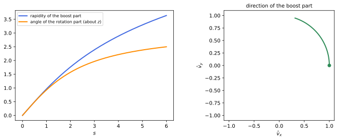
figures/sr-polar.sage.
A pure boost is determined by the four-velocity it produces. The first example checks this and finds the inverse. Both facts follow from the form of the first column.
Example 70 (The image of the rest vector determines the boost) B(\vec v)e_0 = \gamma(1, \vec v) = u, the first column, so two pure boosts with the same image of e_0 have the same velocity and are equal. The inverse is B(\vec v)^{-1} = \eta B(\vec v)^T\eta = \eta B(\vec v)\eta (Exercise 64), which changes the sign of the mixed entries \gamma\vec v and keeps the others: B(\vec v)^{-1} = B(-\vec v), the pure boost that brings u back to e_0.
Veriphy. Pending.
Lean. Pending.
Sage. Pending.
A pure boost has a simple spectrum. The second example computes it: the eigenvalues are the Doppler factors along the boost and 1 across it.
Example 71 (Eigenvalues of a pure boost) B(\vec v) acts as L(\eta) in the plane of e_0 and \hat v and as the identity on the two directions perpendicular to \hat v. Its eigenvalues are e^\eta, e^{-\eta} (eigenvectors (1, \pm\hat v), the light rays along \pm\hat v) and 1, 1. As a symmetric matrix with positive eigenvalues it is positive definite in the Euclidean sense, which is the property used in the polar decomposition.
Veriphy. Pending.
Lean. Pending.
Sage. Pending.
Pure boosts are exponentials of boost generators. The third example identifies the generator. The generator is a unit combination of the K_i along the velocity, scaled by the rapidity, and the series can be summed in closed form.
Example 72 (A pure boost is an exponential) With \hat n = \hat v and \eta = \operatorname{artanh}|\vec v|, B(\vec v) = \exp(\eta\,\hat n\cdot\vec K), where \hat n\cdot\vec K = \sum_in_iK_i. Indeed N = \hat n\cdot\vec K has N^3 = N, so e^{\eta N} = 1 + N\sinh\eta + N^2(\cosh\eta - 1), whose entries are those of Equation 7 with \gamma = \cosh\eta, \gamma|\vec v| = \sinh\eta (Exercise 78).
Veriphy. Pending.
Lean. Pending.
Sage. Pending.
The characterisation of pure boosts by symmetry is the bridge to linear algebra. The first exercise proves it. Symmetry alone is not enough, and the exercise also finds the counterexample.
Exercise 76 (Pure boosts are the symmetric elements) Show that a symmetric, positive definite \Lambda \in SO^+(1, 3) is a pure boost, and that the rotation by \pi about the z-axis is symmetric but not a pure boost.
Let u = \Lambda e_0 = \gamma(1, \vec v) and R = B(\vec v)^{-1}\Lambda = \operatorname{diag}(1, R_3) as in the proof of Theorem 4, so that \Lambda = BR. With M = 1 + (\gamma - 1)\hat v\hat v^T, the blocks of \Lambda are \Lambda^0{}_i = \gamma(R_3^T\vec v)_i, \Lambda^i{}_0 = \gamma v^i and MR_3. Symmetry gives R_3^T\vec v = \vec v, so R_3 fixes \hat v and commutes with M, and MR_3 = (MR_3)^T = R_3^TM gives R_3 = R_3^T, that is R_3^2 = 1: R_3 is the identity or a rotation by \pi about an axis (about \hat v if \vec v \neq 0). In the second case a spatial vector w \perp \hat v with R_3w = -w gives \Lambda(0, w) = B(0, -w) = (0, -w), an eigenvalue -1, so \Lambda is not positive definite. Hence R_3 = 1 and \Lambda = B. The rotation \operatorname{diag}(1, -1, -1, 1) is symmetric with eigenvalues 1, -1, -1, 1: symmetric but not positive definite.
Veriphy. Pending.
Lean. Pending.
Sage. Pending.
Conjugating a boost by a rotation turns its direction. The second exercise proves the formula used in the Wigner rotation.
Exercise 77 (Rotating a boost) Show that RB(\vec v)R^{-1} = B(R\vec v) for every rotation R = \operatorname{diag}(1, R_3).
RB(\vec v)R^{-1} is in SO^+(1, 3), symmetric and positive definite (conjugation by the orthogonal matrix R = (R^T)^{-1} keeps both properties) and sends e_0 to RB(\vec v)e_0 = R\gamma(1, \vec v) = \gamma(1, R_3\vec v). By Exercise 76 it is a pure boost, and by Example 70 it is the one with velocity R_3\vec v. Directly: R_3\hat v\hat v^TR_3^T = (R_3\hat v)(R_3\hat v)^T in Equation 7.
Veriphy. Pending.
Lean. Pending.
Sage. Pending.
The exponential formula of the third example can be checked symbolically. The third exercise asks for it. The computation is done for a velocity in the xy-plane, which is general enough by rotational symmetry.
Exercise 78 (The boost as an exponential) With Sage, compute \exp(\eta(\cos\phi\,K_1 + \sin\phi\,K_2)) symbolically and compare it with B(\tanh\eta(\cos\phi, \sin\phi, 0)).
N = \cos\phi K_1 + \sin\phi K_2 satisfies N^3 = N, and the exponential series sums to 1 + N\sinh\eta + N^2(\cosh\eta - 1), which matches Equation 7 entry by entry:
var('eta phi', domain='real')
K1 = matrix(SR, 4, 4); K1[0, 1] = K1[1, 0] = 1
K2 = matrix(SR, 4, 4); K2[0, 2] = K2[2, 0] = 1
N = cos(phi)*K1 + sin(phi)*K2
print("N^3 = N:", (N^3 - N).simplify_full() == 0)
E = identity_matrix(SR, 4) + N*sinh(eta) + N^2*(cosh(eta) - 1)
v = tanh(eta)*vector([cos(phi), sin(phi), 0]); g = cosh(eta)
B = identity_matrix(SR, 4); B[0, 0] = g
for i in range(3):
B[0, i + 1] = g*v[i]; B[i + 1, 0] = g*v[i]
for j in range(3):
B[i + 1, j + 1] = (1 if i == j else 0) + (g - 1)*v[i]*v[j]/(v*v)
print("series sum minus boost matrix:", (E - B).apply_map(lambda e: e.simplify_full().trig_simplify()) == 0)
print("numerical check of the matrix exponential at eta = 0.7, phi = 0.4:",
max(abs(a - b) for a, b in zip((0.7*N.subs(phi=0.4)).change_ring(RDF).exp().list(), B.subs(eta=0.7, phi=0.4).change_ring(RDF).list())) < 1e-12)Output:
N^3 = N: True
series sum minus boost matrix: True
numerical check of the matrix exponential at eta = 0.7, phi = 0.4: TrueVeriphy. Pending.
Lean. Pending.
Sage. Pending.
The theorem below is the Lorentzian version of the polar decomposition of an invertible matrix into a positive definite symmetric matrix and an orthogonal one. Its existence part was the heart of the proof of Theorem 4; the new content is uniqueness and the formula for the boost.
Theorem 5 (Polar decomposition of a Lorentz transformation) Every \Lambda \in SO^+(1, 3) can be written uniquely as \Lambda = BR with B a pure boost and R = \operatorname{diag}(1, R_3), R_3 \in SO(3), and uniquely as \Lambda = R'B' in the opposite order; then R' = R, B' = R^{-1}BR, B = B_{\Lambda e_0}, and B is the unique positive definite symmetric square root of \Lambda\Lambda^T.
Proof. Existence: B = B_u with u = \Lambda e_0 and R = B^{-1}\Lambda, as in the proof of Theorem 4. Uniqueness: if B_1R_1 = B_2R_2, then B_1e_0 = B_1R_1e_0 = B_2R_2e_0 = B_2e_0, since rotations fix e_0; a pure boost is determined by the image of e_0 (Example 70), so B_1 = B_2 and then R_1 = R_2. Other order: \Lambda = BR = R(R^{-1}BR) and R^{-1}BR is a pure boost (Exercise 77); uniqueness of \Lambda = R'B' follows from that of \Lambda^{-1} = B'^{-1}R'^{-1}, which is of the first form. Square root: \Lambda\Lambda^T = BRR^TB^T = B^2, because R^T = R^{-1} and B^T = B; B is symmetric and positive definite (Example 71), and a positive definite symmetric matrix has exactly one positive definite symmetric square root (diagonalise it in an orthonormal basis and take positive roots of the eigenvalues). \square
Veriphy. Pending.
Lean. Pending.
Sage. Pending.
For a single boost the decomposition is trivial; it becomes informative for products. The first example decomposes a transformation given as a rotation followed by a boost along a different axis.
Example 73 (A decomposition in numbers) \Lambda = R_z(\pi/2)B(0.6\hat x) is a boost along x followed by a rotation. Its polar decomposition \Lambda = BR has B = R_z(\pi/2)B(0.6\hat x)R_z(\pi/2)^{-1} = B(0.6\hat y) and R = R_z(\pi/2): \Lambda e_0 = (1.25, 0, 0.75, 0) is the velocity 0.6\hat y, as the formula B = B_{\Lambda e_0} says.
Veriphy. Pending.
Lean. Pending.
Sage. Pending.
Products of boosts in different directions are the important case, because their rotation part is physical. The second example announces it.
Example 74 (Two boosts make a boost and a rotation) \Lambda = B(0.7\hat y)B(0.6\hat x) has \Lambda e_0 = (1.75, 0.75, 1.225, 0) (to three decimals), so its boost part has velocity (0.429, 0.700, 0) of magnitude 0.821; its rotation part is a rotation about z by 0.271\,rad, the Wigner rotation of Theorem 8. A product of two boosts is not a boost.
Veriphy. Pending.
Lean. Pending.
Sage. Pending.
The square-root formula works for any element. The third example applies it to a rotation, where it gives the trivial boost.
Example 75 (The square root for a rotation) For \Lambda = R, \Lambda\Lambda^T = 1 and its positive square root is 1: B = 1, as \Lambda e_0 = e_0 requires. For T, outside SO^+(1, 3), the formula again gives B = 1, and B^{-1}T = T is not a rotation: the decomposition into a boost and a rotation is special to the identity component, and the other components need the extra factor P, T or PT of Theorem 4.
Veriphy. Pending.
Lean. Pending.
Sage. Pending.
The first exercise computes the decomposition by the square-root formula and by the formula B = B_{\Lambda e_0}, and compares them. Both methods are numerically stable for moderate rapidities.
Exercise 79 (Two ways to compute B) For \Lambda = B(0.7\hat y)B(0.6\hat x), compute B as (\Lambda\Lambda^T)^{1/2} (numerically) and as B_{\Lambda e_0}, check that they agree, and extract the rotation R = B^{-1}\Lambda, its axis and its angle.
Both give the pure boost with velocity (0.429, 0.700, 0); R is the rotation by 0.2706\,rad about +\hat z:
import numpy as np
def boost(v):
v = np.array(v, float); b = np.linalg.norm(v); g = 1/np.sqrt(1 - b*b); B = np.eye(4)
B[0, 0] = g; B[0, 1:] = g*v; B[1:, 0] = g*v; B[1:, 1:] += (g - 1)*np.outer(v, v)/b**2
return B
Lam = boost([0, 0.7, 0]) @ boost([0.6, 0, 0])
w, V = np.linalg.eigh(Lam @ Lam.T)
B1 = V @ np.diag(np.sqrt(w)) @ V.T
u = Lam[:, 0]; B2 = boost(u[1:]/u[0])
print("velocity of the boost part:", np.round(u[1:]/u[0], 4), " |v| = %.4f" % np.linalg.norm(u[1:]/u[0]))
print("sqrt(Lambda Lambda^T) equals B(Lambda e0):", np.allclose(B1, B2))
R = np.linalg.inv(B2) @ Lam
print("rotation part:"); print(np.round(R, 6))
R3 = R[1:, 1:]; ang = np.arccos((np.trace(R3) - 1)/2)
axis = np.array([R3[2, 1] - R3[1, 2], R3[0, 2] - R3[2, 0], R3[1, 0] - R3[0, 1]])/(2*np.sin(ang))
print("angle = %.4f rad, axis =" % ang, np.round(axis, 6))Output:
velocity of the boost part: [0.4285 0.7 0. ] |v| = 0.8207
sqrt(Lambda Lambda^T) equals B(Lambda e0): True
rotation part:
[[ 1. 0. 0. 0. ]
[-0. 0.963616 -0.267292 0. ]
[-0. 0.267292 0.963616 0. ]
[ 0. 0. 0. 1. ]]
angle = 0.2706 rad, axis = [0. 0. 1.]Veriphy. Pending.
Lean. Pending.
Sage. Pending.
Pure boosts do not form a subgroup, as the second example of the theorem showed. The second exercise proves that this happens for every pair of non-collinear boosts.
Exercise 80 (Boosts do not form a subgroup) Show that B(\vec v_2)B(\vec v_1) is symmetric only if \vec v_1 and \vec v_2 are parallel (or one is zero).
(B_2B_1)^T = B_1B_2, so the product is symmetric if and only if B_1B_2 = B_2B_1, which implies B_2u_1 = B_1u_2 with u_k = B_ke_0 = \gamma_k(1, \vec v_k). Write \vec v_k = v_k\hat v_k and c = \hat v_1\cdot\hat v_2. The spatial parts are \gamma_1(\gamma_2\vec v_2 + \vec v_1 + (\gamma_2 - 1)v_1c\,\hat v_2) and \gamma_2(\gamma_1\vec v_1 + \vec v_2 + (\gamma_1 - 1)v_2c\,\hat v_1); if \hat v_1, \hat v_2 are independent their difference vanishes only if the coefficients of \hat v_1 and \hat v_2 do: \gamma_1(1 - \gamma_2)v_1 = \gamma_2(\gamma_1 - 1)v_2c and \gamma_2(\gamma_1 - 1)v_2 = -\gamma_1(\gamma_2 - 1)v_1c. With a = \gamma_2(\gamma_1 - 1)v_2 > 0 and b = \gamma_1(\gamma_2 - 1)v_1 > 0 these read b = -ac and a = -bc, so a = ac^2 and c^2 = 1: the velocities are parallel after all.
Veriphy. Pending.
Lean. Pending.
Sage. Pending.
The decomposition is a homeomorphism, and it computes the topology of the group. The third exercise draws the consequence for loops.
Exercise 81 (The topology of SO^+(1, 3)) Show that \Lambda \mapsto (\Lambda e_0, R) is a homeomorphism from SO^+(1, 3) onto H \times SO(3), where H is the unit future hyperboloid, homeomorphic to \mathbb{R}^3. Conclude that SO^+(1, 3) has the same fundamental group as SO(3), namely \mathbb{Z}_2.
The map is continuous, with continuous inverse (u, R) \mapsto B_uR, since B_u depends continuously on u (Equation 7 with \vec v = \vec u/u^0); it is bijective by Theorem 5. H is homeomorphic to \mathbb{R}^3 by u \mapsto \vec u, which is contractible, so \pi_1(SO^+(1, 3)) = \pi_1(SO(3)) = \mathbb{Z}_2 (Example 13 of Lie groups and Lie algebras): a rotation by 2\pi is a loop that cannot be shrunk, and its lift to SL(2, \mathbb{C}) ends at -1 (Theorem 7).
Veriphy. Pending.
Lean. Pending.
Sage. Pending.
The Lorentz algebra and the exponential map
The fourth step passes to the Lie algebra. The six generators of Example 62 close under commutators, and their brackets encode how infinitesimal rotations and boosts compose; Figure 10 shows the most important bracket at work, two boosts producing a rotation.
Definition 13 (Lorentz algebra) The Lorentz algebra \mathfrak{so}(1, 3) is the Lie algebra Equation 8 of O(1, 3), with the bracket [X, Y] = XY - YX and the basis J_i, K_i of Example 62, in which [J_i, J_j] = \epsilon_{ijk}J_k, \qquad [J_i, K_j] = \epsilon_{ijk}K_k, \qquad [K_i, K_j] = -\epsilon_{ijk}J_k . \tag{9} Equivalently the M^{\mu\nu} satisfy [M^{\mu\nu}, M^{\rho\sigma}] = \eta^{\nu\rho}M^{\mu\sigma} - \eta^{\mu\rho}M^{\nu\sigma} - \eta^{\nu\sigma}M^{\mu\rho} + \eta^{\mu\sigma}M^{\nu\rho}, the relations Equation 4 of Classical field theory of the spinor generators. In a unitary representation U the Hermitian generators are \hat J_i = i\,dU(J_i) and \hat K_i = i\,dU(K_i).
Veriphy. Pending.
Lean. Pending.
Sage. Pending.
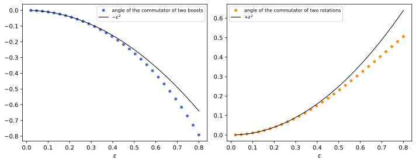
figures/sr-boost-commutator.sage.
The brackets can be checked by multiplying 4 \times 4 matrices. The first example computes the bracket of two boosts by hand, because its sign is the origin of the Thomas-Wigner rotation.
Example 76 (The bracket of two boosts) K_1 has entries (0, 1) and (1, 0) equal to 1, and K_2 entries (0, 2) and (2, 0). Then K_1K_2 has the single non-zero entry (K_1K_2)^1{}_2 = (K_1)^1{}_0(K_2)^0{}_2 = 1 and K_2K_1 the entry (2, 1) equal to 1, so [K_1, K_2] has (1, 2) entry 1 and (2, 1) entry -1: it is -J_3. Boosts do not close among themselves; their commutator is a rotation, with the sign opposite to that of rotations, [J_1, J_2] = J_3.
Veriphy. Pending.
Lean. Pending.
Sage. Pending.
The bracket [J_i, K_j] = \epsilon_{ijk}K_k says that the boost generators form a vector under rotations. The second example interprets it at the group level.
Example 77 (Boost generators form a vector) Differentiating R\,e^{\eta K_j}R^{-1} = e^{\eta RK_jR^{-1}} and using Exercise 77 gives RK_jR^{-1} = \sum_k(R_3)_{kj}K_k: the boost along R_3\hat e_j. Its infinitesimal form for R = e^{\theta J_i} is [J_i, K_j] = \epsilon_{ijk}K_k, the same law as [J_i, J_j] = \epsilon_{ijk}J_k for the rotation generators themselves and as (J_i)\vec x for an ordinary vector.
Veriphy. Pending.
Lean. Pending.
Sage. Pending.
The covariant parameters \omega_{\mu\nu} of an infinitesimal transformation and the angles and rapidities are related by the basis change J_i = \tfrac12\epsilon_{ijk}M^{jk}, K_i = M^{0i}. The third example spells it out.
Example 78 (Angles and rapidities from \omega_{\mu\nu}) \tfrac12\omega_{\mu\nu}M^{\mu\nu} = \omega_{01}M^{01} + \omega_{02}M^{02} + \omega_{03}M^{03} + \omega_{12}M^{12} + \omega_{13}M^{13} + \omega_{23}M^{23} = \vec\zeta\cdot\vec K + \vec\theta\cdot\vec J with rapidities \zeta_i = \omega_{0i} and angles \theta_1 = \omega_{23}, \theta_2 = \omega_{31}, \theta_3 = \omega_{12}. So \exp(\tfrac12\omega_{\mu\nu}M^{\mu\nu}) with only \omega_{01} = -\omega_{10} = \zeta is the active boost along x with rapidity \zeta, and its spinor version \exp(\tfrac12\omega_{\mu\nu}S^{\mu\nu}) (Definition 10 of Classical field theory) is the same transformation on spinors.
Veriphy. Pending.
Lean. Pending.
Sage. Pending.
The first exercise verifies all fifteen brackets at once, in both forms of the definition. The computation uses the matrices of Example 62 and the covariant generators M^{\mu\nu} side by side.
Exercise 82 (All the brackets) With Sage, build J_i, K_i and M^{\mu\nu} as 4 \times 4 matrices and check Equation 9 and the M^{\mu\nu} relations.
Both sets of relations hold identically; the computation also confirms J_i = \tfrac12\epsilon_{ijk}M^{jk} and K_i = M^{0i}:
eta = diagonal_matrix(QQ, [1, -1, -1, -1])
def M(m, n):
return matrix(QQ, 4, 4, lambda a, b: eta[m, a]*(1 if n == b else 0) - eta[n, a]*(1 if m == b else 0))
eps = lambda i, j, k: sign(Permutation([i + 1, j + 1, k + 1]).signature()) if len({i, j, k}) == 3 else 0
J = [matrix(QQ, 4, 4, lambda a, b: -eps(i, a - 1, b - 1) if a > 0 and b > 0 else 0) for i in range(3)]
K = [matrix(QQ, 4, 4, lambda a, b: 1 if (a, b) in [(0, i + 1), (i + 1, 0)] else 0) for i in range(3)]
br = lambda X, Y: X*Y - Y*X
ok = all(br(J[i], J[j]) == sum(eps(i, j, k)*J[k] for k in range(3)) and br(J[i], K[j]) == sum(eps(i, j, k)*K[k] for k in range(3))
and br(K[i], K[j]) == -sum(eps(i, j, k)*J[k] for k in range(3)) for i in range(3) for j in range(3))
print("[J,J] = eps J, [J,K] = eps K, [K,K] = -eps J:", ok)
okM = all(br(M(m, n), M(r, s)) == eta[n, r]*M(m, s) - eta[m, r]*M(n, s) - eta[n, s]*M(m, r) + eta[m, s]*M(n, r)
for m in range(4) for n in range(4) for r in range(4) for s in range(4))
print("M^{mu nu} relations:", okM)
print("J_i = (1/2) eps_ijk M^{jk} and K_i = M^{0i}:", all(J[i] == sum(eps(i, j, k)*M(j + 1, k + 1) for j in range(3) for k in range(3))/2 and K[i] == M(0, i + 1) for i in range(3)))Output:
[J,J] = eps J, [J,K] = eps K, [K,K] = -eps J: True
M^{mu nu} relations: True
J_i = (1/2) eps_ijk M^{jk} and K_i = M^{0i}: TrueVeriphy. Pending.
Lean. Pending.
Sage. Pending.
An invariant inner product on the algebra distinguishes compact from non-compact directions. The second exercise computes the trace form and finds that it is indefinite, unlike that of \mathfrak{so}(4).
Exercise 83 (The trace form is indefinite) Compute \operatorname{tr}(XY) on the basis J_i, K_i in the 4 \times 4 representation, and compare with \mathfrak{so}(4), whose generators are the real antisymmetric 4 \times 4 matrices. Conclude that \mathfrak{so}(1, 3) and \mathfrak{so}(4) are not isomorphic as real Lie algebras, using that the Killing form (Definition 10 of Lie groups and Lie algebras) of a simple or semisimple algebra is a fixed multiple of the trace form in any faithful irreducible representation of each simple factor.
\operatorname{tr}(J_iJ_j) = -2\delta_{ij}, \operatorname{tr}(K_iK_j) = +2\delta_{ij}, \operatorname{tr}(J_iK_j) = 0: signature (3, 3). For antisymmetric matrices \operatorname{tr}(A^2) = -\sum A_{ij}^2 < 0, so the trace form of \mathfrak{so}(4) is negative definite. The Killing forms are 2\operatorname{tr} for both (they equal (n - 2)\operatorname{tr} for \mathfrak{so}(p, q), n = 4), so they have different signatures and no isomorphism exists. The negative directions J_i generate the compact rotations; the positive ones the non-compact boosts.
Veriphy. Pending.
Lean. Pending.
Sage. Pending.
The group commutator of two small boosts is computed in Figure 10. The third exercise derives its leading term from the brackets.
Exercise 84 (Small boosts around a square) Show that e^{\epsilon K_1}e^{\epsilon K_2}e^{-\epsilon K_1}e^{-\epsilon K_2} = 1 + \epsilon^2[K_1, K_2] + O(\epsilon^3) = 1 - \epsilon^2J_3 + O(\epsilon^3). What does an observer who performs the four boosts in turn find at the end?
Expanding each exponential to second order, the first-order terms cancel and the second-order terms leave \epsilon^2(K_1K_2 - K_2K_1). By Example 76 this is -\epsilon^2J_3. The observer is back at rest (the boost part is O(\epsilon^3)) but rotated by -\epsilon^2 about z: a closed loop of boosts produces a rotation, the infinitesimal Thomas-Wigner rotation of Section 1.3.7.
Veriphy. Pending.
Lean. Pending.
Sage. Pending.
The brackets Equation 9 mix rotations and boosts. Over the complex numbers they can be untangled into two commuting copies of one simple algebra, and this is the origin of the two labels (j_1, j_2) of the representations.
Proposition 9 (The complexified Lorentz algebra) In the complexification \mathfrak{so}(1, 3)_{\mathbb{C}} = \mathfrak{so}(1, 3) \otimes \mathbb{C} put A_i = \tfrac12(J_i + iK_i) and B_i = \tfrac12(J_i - iK_i). Then [A_i, A_j] = \epsilon_{ijk}A_k, \qquad [B_i, B_j] = \epsilon_{ijk}B_k, \qquad [A_i, B_j] = 0 , so \mathfrak{so}(1, 3)_{\mathbb{C}} = \operatorname{span}(A_i) \oplus \operatorname{span}(B_i) is a direct sum of two commuting ideals (Definition 32 of Lie groups and Lie algebras), each isomorphic to \mathfrak{sl}(2, \mathbb{C}), the traceless complex 2 \times 2 matrices, by A_i \mapsto -\tfrac{i}{2}\sigma_i. Complex conjugation of the coefficients exchanges A_i and B_i.
Proof. With Equation 9 and [K_i, J_j] = -[J_j, K_i] = \epsilon_{ijk}K_k: [A_i, A_j] = \tfrac14([J_i, J_j] + i[J_i, K_j] + i[K_i, J_j] - [K_i, K_j]) = \tfrac14\epsilon_{ijk}(J_k + iK_k + iK_k + J_k) = \epsilon_{ijk}A_k; the same computation with i \to -i gives [B_i, B_j] = \epsilon_{ijk}B_k; and [A_i, B_j] = \tfrac14([J_i, J_j] - i[J_i, K_j] + i[K_i, J_j] + [K_i, K_j]) = \tfrac14\epsilon_{ijk}(J_k - iK_k + iK_k - J_k) = 0. The six A_i, B_i are a complex basis since J_i = A_i + B_i, K_i = -i(A_i - B_i). The matrices T_i = -\tfrac{i}{2}\sigma_i satisfy [T_i, T_j] = \epsilon_{ijk}T_k (from [\sigma_i, \sigma_j] = 2i\epsilon_{ijk}\sigma_k) and are a complex basis of \mathfrak{sl}(2, \mathbb{C}), so A_i \mapsto T_i is an isomorphism. Conjugation fixes J_i, K_i and sends i to -i, hence A_i \leftrightarrow B_i. \square
Veriphy. Pending.
Lean. Pending.
Sage. Pending.
Representations of \mathfrak{so}(1, 3)_{\mathbb{C}} are pairs of representations of \mathfrak{sl}(2, \mathbb{C}). The first example takes the smallest non-trivial one on the first factor and finds which way its boosts act.
Example 79 (The left-handed Weyl representation) Represent A_i by -\tfrac{i}{2}\sigma_i and B_i by 0. Then J_i = A_i + B_i \mapsto -\tfrac{i}{2}\sigma_i and K_i = -i(A_i - B_i) \mapsto -\tfrac12\sigma_i: rotations act by e^{-i\theta\hat n\cdot\vec\sigma/2} and the boost of rapidity \eta along \hat n by e^{-\eta\hat n\cdot\vec\sigma/2}. These are the matrices acting on the upper two components, those with \gamma_5 = -1, of a Dirac spinor in the Weyl representation of Example 39 of Classical field theory when \Lambda = e^{\eta K_1} (Exercise 97).
Veriphy. Pending.
Lean. Pending.
Sage. Pending.
Exchanging the roles of the two factors exchanges the sign of the boosts. The second example gives the other Weyl representation.
Example 80 (The right-handed Weyl representation) Represent A_i by 0 and B_i by -\tfrac{i}{2}\sigma_i: J_i \mapsto -\tfrac{i}{2}\sigma_i again but K_i \mapsto +\tfrac12\sigma_i, so boosts act by e^{+\eta\hat n\cdot\vec\sigma/2}. The two representations agree on rotations and differ on boosts by \eta \to -\eta, which is the action of parity; this is why a parity-invariant theory of spin one-half needs both, as the Dirac equation does. They are the lower two components of a Weyl-representation Dirac spinor.
Veriphy. Pending.
Lean. Pending.
Sage. Pending.
The defining representation itself must be some pair. The third example identifies it by computing the two Casimir operators \sum_iA_i^2 and \sum_iB_i^2, which take the value -j(j + 1) on the spin-j representation in this anti-Hermitian normalisation.
Example 81 (The four-vector representation is (\tfrac12, \tfrac12)) On \mathbb{C}^4 with the matrices A_i, B_i built from J_i, K_i, a direct computation gives \sum_iA_i^2 = \sum_iB_i^2 = -\tfrac34\cdot1 (Exercise 85), the value -j(j + 1) for j = \tfrac12. The four-vectors therefore carry spin \tfrac12 under each factor, the representation (\tfrac12, \tfrac12) of Definition 14; under rotations alone, \tfrac12 \otimes \tfrac12 = 0 \oplus 1, the time component and the three space components.
Veriphy. Pending.
Lean. Pending.
Sage. Pending.
The first exercise checks the proposition in the defining representation and computes the Casimirs used in the third example. Complex matrices are needed because A_i and B_i involve i.
Exercise 85 (The two factors in four dimensions) With Sage, build A_i and B_i as complex 4 \times 4 matrices, verify the brackets of Proposition 9, and compute \sum_iA_i^2 and \sum_iB_i^2.
The brackets hold and both sums equal -\tfrac34 times the identity:
eps = lambda i, j, k: sign(Permutation([i + 1, j + 1, k + 1]).signature()) if len({i, j, k}) == 3 else 0
J = [matrix(QQbar, 4, 4, lambda a, b: -eps(i, a - 1, b - 1) if a > 0 and b > 0 else 0) for i in range(3)]
K = [matrix(QQbar, 4, 4, lambda a, b: 1 if (a, b) in [(0, i + 1), (i + 1, 0)] else 0) for i in range(3)]
A = [(J[i] + I*K[i])/2 for i in range(3)]; B = [(J[i] - I*K[i])/2 for i in range(3)]
br = lambda X, Y: X*Y - Y*X
print("[A,A] = eps A:", all(br(A[i], A[j]) == sum(eps(i, j, k)*A[k] for k in range(3)) for i in range(3) for j in range(3)))
print("[B,B] = eps B:", all(br(B[i], B[j]) == sum(eps(i, j, k)*B[k] for k in range(3)) for i in range(3) for j in range(3)))
print("[A,B] = 0:", all(br(A[i], B[j]) == 0 for i in range(3) for j in range(3)))
print("sum A_i^2 ="); print(sum(a^2 for a in A)); print("sum B_i^2 ="); print(sum(b^2 for b in B))Output:
[A,A] = eps A: True
[B,B] = eps B: True
[A,B] = 0: True
sum A_i^2 =
[-3/4 0 0 0]
[ 0 -3/4 0 0]
[ 0 0 -3/4 0]
[ 0 0 0 -3/4]
sum B_i^2 =
[-3/4 0 0 0]
[ 0 -3/4 0 0]
[ 0 0 -3/4 0]
[ 0 0 0 -3/4]Veriphy. Pending.
Lean. Pending.
Sage. Pending.
The same splitting works for \mathfrak{so}(4) over the reals (Proposition 12 of Lie groups and Lie algebras), but not for \mathfrak{so}(1, 3). The second exercise explains the difference.
Exercise 86 (Why the splitting needs complex numbers) For \mathfrak{so}(4) the combinations \tfrac12(L_{23} \pm L_{14}) (and cyclic) are real and split the algebra into \mathfrak{su}(2) \oplus \mathfrak{su}(2). Show that for \mathfrak{so}(1, 3) the real combinations \tfrac12(J_i \pm K_i) do not close, and explain the role of the sign in [K_i, K_j] = -\epsilon_{ijk}J_k.
[\tfrac12(J_1 + K_1), \tfrac12(J_2 + K_2)] = \tfrac14(J_3 + K_3 + K_3 - J_3) = \tfrac12K_3, which is not of the form \tfrac12(J_3 + K_3): the combination does not close. For \mathfrak{so}(4) the analogous bracket of the “boost” generators is +\epsilon_{ijk}J_k, and \tfrac12(J \pm K) close; for the Lorentz algebra the minus sign requires K \to iK, which is possible only over \mathbb{C}. The real Lie algebra \mathfrak{so}(1, 3) is in fact simple, and isomorphic to \mathfrak{sl}(2, \mathbb{C}) regarded as a real Lie algebra of dimension six.
Veriphy. Pending.
Lean. Pending.
Sage. Pending.
Conjugation exchanges the two factors, so it exchanges the two labels of a representation. The third exercise draws the consequence for the Weyl spinors.
Exercise 87 (Conjugating a Weyl spinor) Show that if \psi transforms in the left-handed representation of Example 79, then \sigma_2\psi^* transforms in the right-handed one.
Under the group element with parameters \vec\theta, \vec\zeta, \psi \mapsto M\psi with M = e^{-i\vec\theta\cdot\vec\sigma/2 - \vec\zeta\cdot\vec\sigma/2}. Then \sigma_2\psi^* \mapsto \sigma_2M^*\psi^* = (\sigma_2M^*\sigma_2)\sigma_2\psi^*, and \sigma_2\vec\sigma^*\sigma_2 = -\vec\sigma gives \sigma_2M^*\sigma_2 = e^{-i\vec\theta\cdot\vec\sigma/2 + \vec\zeta\cdot\vec\sigma/2}, the right-handed matrix. This is the charge conjugation of Definition 13 of The Dirac equation in two-component form, and it is why one Weyl spinor suffices for a Majorana fermion (Definition 17 of The Dirac equation).
Veriphy. Pending.
Lean. Pending.
Sage. Pending.
The exponential map sends the Lie algebra into the group, and one may ask whether it reaches every element. For compact connected groups it does (Definition 13 of Lie groups and Lie algebras). The group SL(2, \mathbb{C}), the exponential of \mathfrak{sl}(2, \mathbb{C}) and soon the double cover of the Lorentz group, is not compact, and the theorem below shows that it is not reached: some of its elements lie on no one-parameter subgroup.
Theorem 6 (The exponential of SL(2, \mathbb{C}) is not surjective) Let SL(2, \mathbb{C}) be the complex 2 \times 2 matrices of determinant 1, with Lie algebra \mathfrak{sl}(2, \mathbb{C}). An element A \in SL(2, \mathbb{C}) is of the form e^X with X \in \mathfrak{sl}(2, \mathbb{C}) if and only if \operatorname{tr}A \neq -2 or A = -1. In particular A_0 = -\begin{pmatrix}1 & 1 \\ 0 & 1\end{pmatrix} is not the exponential of any traceless matrix, and lies on no one-parameter subgroup of SL(2, \mathbb{C}).
Proof. Let X \in \mathfrak{sl}(2, \mathbb{C}), with eigenvalues \pm\lambda. If \lambda \neq 0, X is diagonalisable, X = Q\operatorname{diag}(\lambda, -\lambda)Q^{-1}, and e^X = Q\operatorname{diag}(e^\lambda, e^{-\lambda})Q^{-1} is diagonalisable. If \lambda = 0, X is nilpotent, X^2 = 0 by the Cayley-Hamilton theorem, and e^X = 1 + X has trace 2. Now let \operatorname{tr}A = -2, so both eigenvalues of A are -1. If A = e^X, the case \lambda = 0 is excluded by the trace, so A is diagonalisable with both eigenvalues -1, that is A = -1. Hence A_0, which has trace -2 but is not -1, is not an exponential, and since a one-parameter subgroup through A_0 would give A_0 = e^{tX} for some t, there is none. Conversely, -1 = e^{i\pi\sigma_3}; if \operatorname{tr}A \neq \pm2 the eigenvalues \mu, 1/\mu are distinct, A = Q\operatorname{diag}(\mu, 1/\mu)Q^{-1}, and A = e^X with X = Q\operatorname{diag}(\log\mu, -\log\mu)Q^{-1} for any branch of the logarithm; if \operatorname{tr}A = 2, either A = 1 = e^0 or A = 1 + N with N = A - 1 nilpotent (its eigenvalues are 0), and A = e^N. \square
Veriphy. Pending.
Lean. Pending.
Sage. Pending.
The element -1 is an exponential although it has trace -2. The first example shows the one-parameter subgroups through it.
Example 82 (-1 lies on rotations) e^{-i\theta\sigma_3/2} is the lift of the rotation by \theta about z (Theorem 7); at \theta = 2\pi it is -1. Every one-parameter subgroup e^{-i\theta\hat n\cdot\vec\sigma/2} passes through -1 at \theta = 2\pi: the sign of a spinor under a full turn (Example 57).
Veriphy. Pending.
Lean. Pending.
Sage. Pending.
Unipotent elements, those of trace 2 other than the identity, are exponentials of nilpotent matrices. The second example gives them, and their images in the Lorentz group, the null rotations, reappear in the little group of a photon.
Example 83 (Unipotent elements) \begin{pmatrix}1 & a \\ 0 & 1\end{pmatrix} = \exp\begin{pmatrix}0 & a \\ 0 & 0\end{pmatrix} for every complex a, since the nilpotent matrix squares to zero. These form a one-parameter group in a, isomorphic to (\mathbb{C}, +). The obstruction of the theorem is the sign: -\begin{pmatrix}1 & a \\ 0 & 1\end{pmatrix} is not an exponential for a \neq 0.
Veriphy. Pending.
Lean. Pending.
Sage. Pending.
The logarithm of a diagonalisable element is far from unique. The third example shows the freedom for a diagonal element with a negative eigenvalue.
Example 84 (Logarithms of a diagonal element) A = \operatorname{diag}(-2, -\tfrac12) has trace -\tfrac52 \neq -2, so it is an exponential: A = e^X with X = \operatorname{diag}(\ln2 + i\pi(2k + 1), -\ln2 - i\pi(2k + 1)) for any integer k. In SL(2, \mathbb{R}) no real traceless X works (Exercise 90), so the answer depends on whether complex generators are allowed.
Veriphy. Pending.
Lean. Pending.
Sage. Pending.
The exponential of a 2 \times 2 traceless matrix has a closed form, which gives a second proof of the theorem. The first exercise derives it.
Exercise 88 (A closed form for e^X) For X \in \mathfrak{sl}(2, \mathbb{C}) with \lambda^2 = -\det X, show that e^X = \cosh\lambda\cdot1 + \frac{\sinh\lambda}{\lambda}X (with \sinh\lambda/\lambda = 1 at \lambda = 0), and deduce that \operatorname{tr}e^X = 2\cosh\lambda. Check the formula with Sage on a random complex traceless matrix.
By Cayley-Hamilton X^2 = -\det X\cdot1 = \lambda^21, so the even powers are \lambda^{2k}1 and the odd ones \lambda^{2k}X; summing the series gives the formula. The trace follows from \operatorname{tr}X = 0:
set_random_seed(5)
X = matrix(CDF, 2, 2, [CDF.random_element(), CDF.random_element(), CDF.random_element(), 0]); X[1, 1] = -X[0, 0]
lam = sqrt(-X.det())
F = cosh(lam)*identity_matrix(CDF, 2) + sinh(lam)/lam*X
print("max |exp(X) - closed form| =", max(abs(a - b) for a, b in zip(X.exp().list(), F.list())))
print("trace of exp(X) = %s, 2 cosh(lambda) = %s" % (X.exp().trace(), 2*cosh(lam)))
import numpy as np
from scipy.linalg import logm
L = logm(-np.array([[1, 1], [0, 1]], dtype=complex))
print("principal logarithm of A0 = -[[1,1],[0,1]] has trace", np.round(np.trace(L), 12), "(not traceless, as the theorem predicts)")Output:
max |exp(X) - closed form| = 2.482534153247273e-16
trace of exp(X) = 1.5184116266374983 + 0.8338605007439401*I, 2 cosh(lambda) = 1.5184116266374985 + 0.8338605007439401*I
principal logarithm of A0 = -[[1,1],[0,1]] has trace -6.28318530718j (not traceless, as the theorem predicts)Veriphy. Pending.
Lean. Pending.
Sage. Pending.
The closed form gives the theorem again in a few lines. The second exercise asks for this proof. It replaces the diagonalisation argument by a computation of the trace.
Exercise 89 (The theorem from the closed form) Using Exercise 88, show that if e^X has trace -2 then e^X = -1.
2\cosh\lambda = -2 forces \lambda = i\pi(2k + 1), so \lambda \neq 0 and \sinh\lambda = 0; then e^X = \cosh\lambda\cdot1 = -1. The non-exponential element A_0 of the theorem has trace -2 and is not -1.
Veriphy. Pending.
Lean. Pending.
Sage. Pending.
The real group SL(2, \mathbb{R}) has an even smaller image of the exponential. The third exercise finds an element outside it with a different trace.
Exercise 90 (The exponential of SL(2, \mathbb{R})) Show that a real traceless X has \operatorname{tr}e^X \geq -2, and conclude that \operatorname{diag}(-2, -\tfrac12) \in SL(2, \mathbb{R}) is not e^X for any real traceless X.
For real X, \lambda^2 = -\det X is real: either \lambda is real and \operatorname{tr}e^X = 2\cosh\lambda \geq 2, or \lambda = i\mu and \operatorname{tr}e^X = 2\cos\mu \in [-2, 2]. The trace of \operatorname{diag}(-2, -\tfrac12) is -\tfrac52 < -2, so it is not an exponential, although its square, \operatorname{diag}(4, \tfrac14), is.
Veriphy. Pending.
Lean. Pending.
Sage. Pending.
SL(2, \mathbb{C}) and the spinor representations
The fifth step realises the Lorentz group through 2 \times 2 complex matrices. Four-vectors become Hermitian matrices, and SL(2, \mathbb{C}) acts on them by conjugation; the resulting map onto SO^+(1, 3) is two-to-one, and its source is the group on which the spinors live. Figure 11 previews the representations that this produces.
Theorem 7 (SL(2, \mathbb{C}) is the double cover of the Lorentz group) With \sigma_0 = 1 and the Pauli matrices \sigma_i, the map x \mapsto X(x) = x^\mu\sigma_\mu = \begin{pmatrix}t + z & x - iy \\ x + iy & t - z\end{pmatrix} is a linear isomorphism from \mathbb{R}^4 onto the Hermitian 2 \times 2 matrices, with \det X(x) = x\cdot x. For A \in SL(2, \mathbb{C}) define \Lambda(A) by X(\Lambda(A)x) = AX(x)A^\dagger . \tag{10} Then A \mapsto \Lambda(A) is a surjective homomorphism of Lie groups SL(2, \mathbb{C}) \to SO^+(1, 3) with kernel \{1, -1\}, a double cover (Definition 5 of Lie groups and Lie algebras). Explicitly \Lambda(e^{\eta\hat n\cdot\vec\sigma/2}) = e^{\eta\hat n\cdot\vec K} is the active pure boost of rapidity \eta along \hat n, and \Lambda(e^{-i\theta\hat n\cdot\vec\sigma/2}) = e^{\theta\hat n\cdot\vec J} is the rotation by \theta about \hat n.
Proof. Isomorphism. A Hermitian matrix has real diagonal and conjugate off-diagonal entries, four real parameters; x \mapsto X(x) is linear and injective, hence bijective, and \det X = (t + z)(t - z) - (x - iy)(x + iy) = x\cdot x. Lorentz. AXA^\dagger is Hermitian and \det(AXA^\dagger) = |\det A|^2\det X = \det X, so \Lambda(A) is a linear map preserving the Minkowski form: \Lambda(A) \in O(1, 3). It is a homomorphism, X(\Lambda(AB)x) = ABX(x)B^\dagger A^\dagger = X(\Lambda(A)\Lambda(B)x), and its entries are quadratic polynomials in those of A, \bar A, so it is smooth. Image in SO^+(1, 3). SL(2, \mathbb{C}) is connected: every A has the polar form A = HU with H = (AA^\dagger)^{1/2} positive Hermitian of determinant 1 and U = H^{-1}A \in SU(2); H = e^h with h Hermitian traceless, and s \mapsto e^{sh}U_s, with U_s a path from 1 to U in SU(2) \cong S^3, joins 1 to A. The image of a connected group under a continuous homomorphism lies in the identity component, SO^+(1, 3) (Theorem 4). The two families. For A = e^{-i\theta\sigma_3/2} = \operatorname{diag}(e^{-i\theta/2}, e^{i\theta/2}), AXA^\dagger multiplies the off-diagonal entry x - iy by e^{-i\theta}, which is the rotation (x, y) \mapsto (x\cos\theta - y\sin\theta, x\sin\theta + y\cos\theta) and fixes t, z; for A = e^{\eta\sigma_3/2} = \operatorname{diag}(e^{\eta/2}, e^{-\eta/2}), AXA^\dagger multiplies t + z by e^\eta and t - z by e^{-\eta}, the boost along z of Example 12, read actively. A general axis follows by conjugating with a rotation, using the homomorphism property and Exercise 77. Surjectivity. By Theorem 5 every element of SO^+(1, 3) is a boost times a rotation, and both are in the image. Kernel. If AXA^\dagger = X for all Hermitian X, then X = 1 gives AA^\dagger = 1, so AX = XA for all Hermitian X, hence for all complex matrices X + iY; A is then a multiple of the identity (Theorem 3 of Group theory), A = \lambda1 with \lambda^2 = \det A = 1. Covering. A homomorphism of Lie groups with discrete kernel has injective differential; both groups have dimension 6, so the differential is an isomorphism of Lie algebras and \Lambda is a local diffeomorphism, a covering with two sheets. \square
Veriphy. Pending.
Lean. Pending.
Sage. Pending.
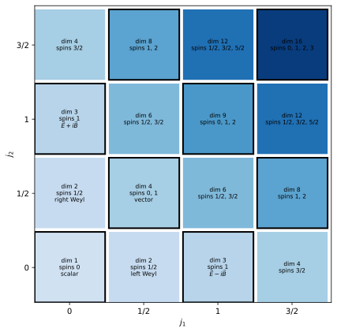
figures/sr-j1j2.sage.
The boosts were checked in the proof only along z. The first example computes the boost along x in components, as an illustration of Equation 10.
Example 85 (A boost along x) A = e^{\eta\sigma_1/2} = \cosh\tfrac\eta2 + \sigma_1\sinh\tfrac\eta2. For X = t + x\sigma_1 + y\sigma_2 + z\sigma_3, using \sigma_1\sigma_2\sigma_1 = -\sigma_2, \sigma_1\sigma_3\sigma_1 = -\sigma_3, AXA^\dagger = (t\cosh\eta + x\sinh\eta) + (t\sinh\eta + x\cosh\eta)\sigma_1 + y\sigma_2 + z\sigma_3: the active boost along x with rapidity \eta, e^{\eta K_1}. The matrix A is Hermitian and positive, as a pure boost should be.
Veriphy. Pending.
Lean. Pending.
Sage. Pending.
The kernel contains -1, and the path of rotations shows how it is reached. The second example follows the lift of a full turn.
Example 86 (A full turn lifts to an open path) The rotations R_z(\theta), 0 \leq \theta \leq 2\pi, form a closed loop in SO^+(1, 3). Their lifts e^{-i\theta\sigma_3/2} start at 1 and end at -1: the loop does not lift to a loop, so it cannot be contracted in SO^+(1, 3) (Exercise 81). Going around twice, 0 \leq \theta \leq 4\pi, lifts to a closed loop.
Veriphy. Pending.
Lean. Pending.
Sage. Pending.
Elements of SL(2, \mathbb{C}) that are neither Hermitian nor unitary give the remaining transformations. The third example computes the image of a unipotent element, a null rotation, which fixes a light ray.
Example 87 (A null rotation) For A = \begin{pmatrix}1 & a \\ 0 & 1\end{pmatrix} with a real, Equation 10 gives t' - z' = t - z, x' = x + a(t - z), y' = y and t' + z' = t + z + 2ax + a^2(t - z), that is t' = t + ax + \tfrac{a^2}{2}(t - z), \qquad x' = x + a(t - z), \qquad z' = z + ax + \tfrac{a^2}{2}(t - z) . It fixes k = (1, 0, 0, 1), it is neither a boost nor a rotation, and its generator is K_1 - J_2 (Exercise 95).
Veriphy. Pending.
Lean. Pending.
Sage. Pending.
The first exercise checks the homomorphism numerically on random elements, which tests the whole construction at once. Random elements are used so that no special structure hides an error.
Exercise 91 (The covering map by computer) With Sage, implement A \mapsto \Lambda(A) through \Lambda^\mu{}_\nu = \tfrac12\operatorname{tr}(\sigma_\mu A\sigma_\nu A^\dagger), which extracts the components x^\mu = \tfrac12\operatorname{tr}(\sigma_\mu X) of a Hermitian matrix X (\mu = 0, \dots, 3, no metric involved). Check on random A, B \in SL(2, \mathbb{C}) that \Lambda(A) \in SO^+(1, 3), \Lambda(AB) = \Lambda(A)\Lambda(B) and \Lambda(-A) = \Lambda(A).
Since \operatorname{tr}(\sigma_\mu\sigma_\nu) = 2\delta_{\mu\nu}, the components of a Hermitian X are \tfrac12\operatorname{tr}(\sigma_\mu X), and the column \nu of \Lambda(A) is the image of \sigma_\nu. All checks pass to machine precision:
import numpy as np
rng = np.random.default_rng(int(1))
s = [np.eye(2), np.array([[0, 1], [1, 0]]), np.array([[0, -1j], [1j, 0]]), np.array([[1, 0], [0, -1]])]
eta = np.diag([1., -1, -1, -1])
def Lam(A):
return np.array([[0.5*np.trace(s[m] @ A @ s[n] @ A.conj().T).real for n in range(4)] for m in range(4)])
def rand_sl2c():
A = rng.normal(size=(2, 2)) + 1j*rng.normal(size=(2, 2)); return A/np.sqrt(np.linalg.det(A))
ok = True
for _ in range(200):
A, B = rand_sl2c(), rand_sl2c(); LA = Lam(A)
ok &= np.allclose(LA.T @ eta @ LA, eta) and np.isclose(np.linalg.det(LA), 1) and LA[0, 0] >= 1
ok &= np.allclose(Lam(A @ B), LA @ Lam(B)) and np.allclose(Lam(-A), LA)
print("Lambda(A) in SO+(1,3), homomorphism and Lambda(-A) = Lambda(A) on 200 random pairs:", ok)
eta_ = 0.8; A = np.cosh(eta_/2)*np.eye(2) + np.sinh(eta_/2)*s[1]
print("Lambda(exp(0.8 sigma_1/2)) ="); print(np.round(Lam(A), 6))
print("cosh 0.8 = %.6f, sinh 0.8 = %.6f" % (np.cosh(0.8), np.sinh(0.8)))Output:
Lambda(A) in SO+(1,3), homomorphism and Lambda(-A) = Lambda(A) on 200 random pairs: True
Lambda(exp(0.8 sigma_1/2)) =
[[ 1.337435 0.888106 0. 0. ]
[ 0.888106 1.337435 0. -0. ]
[ 0. 0. 1. 0. ]
[ 0. 0. 0. 1. ]]
cosh 0.8 = 1.337435, sinh 0.8 = 0.888106Veriphy. Pending.
Lean. Pending.
Sage. Pending.
Parity is not in the image, but it has a simple description on Hermitian matrices. The second exercise finds it.
Exercise 92 (Parity on Hermitian matrices) Show that X \mapsto \sigma_2X^T\sigma_2 sends X(t, \vec x) to X(t, -\vec x), and explain why it is not of the form X \mapsto AXA^\dagger.
\sigma_2\sigma_i^T\sigma_2 = -\sigma_i for each i (for i = 1, 3, \sigma_i^T = \sigma_i anticommutes with \sigma_2; for i = 2, \sigma_2^T = -\sigma_2) and \sigma_2\sigma_2 = 1, so t + \vec x\cdot\vec\sigma \mapsto t - \vec x\cdot\vec\sigma: parity. Every X \mapsto AXA^\dagger is in SO^+(1, 3) by the theorem, while P has determinant -1. The map is X \mapsto \det X\cdot X^{-1}, the adjugate.
Veriphy. Pending.
Lean. Pending.
Sage. Pending.
SL(2, \mathbb{C}) is the universal cover, not just a double cover. The third exercise proves that it is simply connected.
Exercise 93 (SL(2, \mathbb{C}) is simply connected) Show that the polar decomposition A = HU of the proof is a homeomorphism SL(2, \mathbb{C}) \to \mathcal{H} \times SU(2), where \mathcal{H} is the set of positive Hermitian matrices of determinant 1, and that \mathcal{H} \cong \mathbb{R}^3, SU(2) \cong S^3. Conclude that SL(2, \mathbb{C}) is simply connected.
H = (AA^\dagger)^{1/2} and U = H^{-1}A depend continuously on A, and (H, U) \mapsto HU is continuous; uniqueness of the polar decomposition makes them inverse. \mathcal{H} = \{e^h : h \text{ Hermitian traceless}\} and h \mapsto e^h is a homeomorphism from \mathbb{R}^3 (the matrices h = \vec a\cdot\vec\sigma). SU(2) is the unit sphere |a|^2 + |b|^2 = 1 in \mathbb{C}^2 (Example 13 of Lie groups and Lie algebras). Both factors are simply connected, so their product is.
Veriphy. Pending.
Lean. Pending.
Sage. Pending.
The covering map turns the failure of Theorem 6 into a success downstairs. Since A and -A have the same image, an element of SO^+(1, 3) is an exponential as soon as one of its two lifts is.
Proposition 10 (Every proper orthochronous Lorentz transformation is an exponential) The exponential map \mathfrak{so}(1, 3) \to SO^+(1, 3) is surjective, but not injective.
Proof. Let \Lambda \in SO^+(1, 3) and A a lift, \Lambda = \Lambda(A) (Theorem 7). If \operatorname{tr}A \neq -2 or A = -1, then A = e^X by Theorem 6; otherwise \operatorname{tr}(-A) = 2 and -A = e^X. In both cases \Lambda = \Lambda(\pm A) = \Lambda(e^X) = e^{d\Lambda(X)}, where d\Lambda : \mathfrak{sl}(2, \mathbb{C}) \to \mathfrak{so}(1, 3) is the differential, an isomorphism of real Lie algebras, and \Lambda(e^X) = e^{d\Lambda(X)} because both sides are one-parameter subgroups with the same velocity. It is not injective because e^{2\pi J_3} = 1 = e^0. \square
Veriphy. Pending.
Lean. Pending.
Sage. Pending.
The non-exponential element A_0 of Theorem 6 has an image that is an exponential. The first example finds it. The example shows concretely how the sign ambiguity of the lift rescues surjectivity.
Example 88 (The image of A_0) \Lambda(A_0) = \Lambda(-A_0) = \Lambda\begin{pmatrix}1 & 1 \\ 0 & 1\end{pmatrix}, the null rotation of Example 87 with a = 1, and it equals e^{K_1 - J_2}. In SO^+(1, 3) it lies on the one-parameter subgroup e^{s(K_1 - J_2)}, whose lift through 1 ends at -A_0, not at A_0.
Veriphy. Pending.
Lean. Pending.
Sage. Pending.
Elements that boost and rotate about the same axis are exponentials of commuting generators. The second example gives the logarithm explicitly.
Example 89 (Logarithm of a loxodromic element) \Lambda = e^{\eta K_3}e^{\theta J_3} is e^{\eta K_3 + \theta J_3}, since the generators commute (Example 63). Its lift is e^{(\eta - i\theta)\sigma_3/2} = \operatorname{diag}(e^{(\eta - i\theta)/2}, e^{-(\eta - i\theta)/2}), with trace 2\cosh\tfrac{\eta - i\theta}{2}; boost and rotation combine into one complex rapidity \eta - i\theta.
Veriphy. Pending.
Lean. Pending.
Sage. Pending.
The exponential map of SO^+(1, 3) hits every element, but many generators hit the same one. The third example lists the generators that exponentiate to the identity among the rotations.
Example 90 (Generators with trivial exponential) e^{\theta\hat n\cdot\vec J} = 1 exactly when \theta \in 2\pi\mathbb{Z}, for every axis \hat n: a whole family of spheres of radius 2\pi k in the rotation generators maps to the identity. In SL(2, \mathbb{C}) the lifts e^{-i\theta\hat n\cdot\vec\sigma/2} equal (-1)^k there, so only the spheres with k even map to 1 upstairs.
Veriphy. Pending.
Lean. Pending.
Sage. Pending.
The first exercise finds the generator of a given transformation, a boost followed by a rotation about the boost axis. The two factors commute, which makes the logarithm easy to guess.
Exercise 94 (Finding a generator) Find X \in \mathfrak{so}(1, 3) with e^X = B(0.6\hat x)R_x(\pi/2), and check with Sage.
B(0.6\hat x) = e^{\ln2K_1} (Example 10) and R_x(\pi/2) = e^{(\pi/2)J_1}, and K_1, J_1 commute, so X = \ln2K_1 + \tfrac\pi2J_1:
K1 = matrix(SR, 4, 4); K1[0, 1] = K1[1, 0] = 1
J1 = matrix(SR, 4, 4); J1[2, 3] = -1; J1[3, 2] = 1
print("[K1, J1] = 0:", K1*J1 == J1*K1)
X = log(2)*K1 + pi/2*J1
E = X.exp().simplify_full()
B = matrix(SR, [[5/4, 3/4, 0, 0], [3/4, 5/4, 0, 0], [0, 0, 1, 0], [0, 0, 0, 1]])
R = matrix(SR, [[1, 0, 0, 0], [0, 1, 0, 0], [0, 0, 0, -1], [0, 0, 1, 0]])
print("exp(X) ="); print(E)
print("equals B(0.6 x) R_x(pi/2):", E == B*R)Output:
[K1, J1] = 0: True
exp(X) =
[5/4 3/4 0 0]
[3/4 5/4 0 0]
[ 0 0 0 -1]
[ 0 0 1 0]
equals B(0.6 x) R_x(pi/2): TrueVeriphy. Pending.
Lean. Pending.
Sage. Pending.
The generator of the null rotation was announced in Example 87. The second exercise verifies it. The nilpotency of the generator makes the exponential series stop after three terms.
Exercise 95 (The generator of a null rotation) Show that N = K_1 - J_2 satisfies N^3 = 0, compute e^{aN} = 1 + aN + \tfrac{a^2}{2}N^2, and compare with the matrix of Example 87.
From the matrices of Example 62, K_1 exchanges e_0 and e_1, and J_2 sends e_3 \mapsto e_1, e_1 \mapsto -e_3. So N sends e_0 \mapsto e_1, e_1 \mapsto e_0 + e_3, e_3 \mapsto -e_1, e_2 \mapsto 0; then N^2 sends e_0 \mapsto e_0 + e_3, e_3 \mapsto -(e_0 + e_3) and kills e_1, e_2, and N^3 = 0 because N(e_0 + e_3) = 0. In particular e^{aN}e_0 = (1 + \tfrac{a^2}{2}, a, 0, \tfrac{a^2}{2}), the first column of the null rotation, and the other columns agree as well:
var('a', domain='real')
K1 = matrix(SR, 4, 4); K1[0, 1] = K1[1, 0] = 1
J2 = matrix(SR, 4, 4); J2[1, 3] = 1; J2[3, 1] = -1
N = K1 - J2
print("N^2 ="); print(N^2); print("N^3 = 0:", N^3 == 0)
E = identity_matrix(SR, 4) + a*N + a^2/2*N^2
s = [identity_matrix(SR, 2), matrix(SR, [[0, 1], [1, 0]]), matrix(SR, [[0, -I], [I, 0]]), matrix(SR, [[1, 0], [0, -1]])]
A = matrix(SR, [[1, a], [0, 1]])
L = matrix(SR, 4, 4, lambda m, n: ((s[m]*A*s[n]*A.conjugate_transpose()).trace()/2).simplify_full())
print("Lambda([[1,a],[0,1]]) ="); print(L)
print("equals exp(a N):", (L - E).simplify_full() == 0)Output:
N^2 =
[ 1 0 0 -1]
[ 0 0 0 0]
[ 0 0 0 0]
[ 1 0 0 -1]
N^3 = 0: True
Lambda([[1,a],[0,1]]) =
[ 1/2*a^2 + 1 a 0 -1/2*a^2]
[ a 1 0 -a]
[ 0 0 1 0]
[ 1/2*a^2 a 0 -1/2*a^2 + 1]
equals exp(a N): TrueVeriphy. Pending.
Lean. Pending.
Sage. Pending.
The exponential map of SL(2, \mathbb{C}) failed at the elements of trace -2. The third exercise counts the exceptions downstairs, where there are none.
Exercise 96 (Elements of trace -2) Describe the set of A \in SL(2, \mathbb{C}) with \operatorname{tr}A = -2, A \neq -1, and its image in SO^+(1, 3). Show that the image consists of the null rotations (conjugates of Example 87), all of which are exponentials.
Such A have the single eigenvalue -1 and are not diagonalisable, so A = -Q\begin{pmatrix}1 & 1 \\ 0 & 1\end{pmatrix}Q^{-1} by the Jordan form. Their images are \Lambda(Q)\Lambda\bigl(\begin{smallmatrix}1 & 1 \\ 0 & 1\end{smallmatrix}\bigr)\Lambda(Q)^{-1}, conjugates of a null rotation, equal to \Lambda(Q)e^{N}\Lambda(Q)^{-1} = e^{\Lambda(Q)N\Lambda(Q)^{-1}}: exponentials.
Veriphy. Pending.
Lean. Pending.
Sage. Pending.
The representations of \mathfrak{so}(1, 3) follow from Proposition 9: a representation of the complexified algebra is a pair of commuting representations of \mathfrak{sl}(2, \mathbb{C}), and the irreducible finite-dimensional ones are labelled by two spins (Boudreau and Swanson 2018, sec. 14.3; Bekaert and Boulanger 2006, sec. 1.1). Since SL(2, \mathbb{C}) is simply connected (Exercise 93), each integrates to a representation of the group.
Definition 14 (Representation labelled by two spins) For j_1, j_2 \in \{0, \tfrac12, 1, \tfrac32, \dots\} let S^{(j)}_i be the Hermitian spin-j matrices of Definition 22 of Lie groups and Lie algebras and T^{(j)}_i = -iS^{(j)}_i. The representation (j_1, j_2) of \mathfrak{so}(1, 3) on \mathbb{C}^{2j_1 + 1} \otimes \mathbb{C}^{2j_2 + 1} is A_i \mapsto T^{(j_1)}_i \otimes 1, \qquad B_i \mapsto 1 \otimes T^{(j_2)}_i, \qquad\text{that is}\qquad J_i \mapsto T^{(j_1)}_i \otimes 1 + 1 \otimes T^{(j_2)}_i, \quad K_i \mapsto -i\bigl(T^{(j_1)}_i \otimes 1 - 1 \otimes T^{(j_2)}_i\bigr) , of dimension (2j_1 + 1)(2j_2 + 1), together with the representation of SL(2, \mathbb{C}) it integrates to. Under rotations it decomposes as j_1 \otimes j_2 = |j_1 - j_2| \oplus \dots \oplus (j_1 + j_2) (Definition 24 of Lie groups and Lie algebras), and it descends to SO^+(1, 3) exactly when j_1 + j_2 is an integer.
Veriphy. Pending.
Lean. Pending.
Sage. Pending.
The two smallest representations are the Weyl spinors of Example 79 and Example 80. The first example writes their group action through SL(2, \mathbb{C}) and relates them to the Dirac spinor.
Example 91 (Weyl and Dirac spinors) For A \in SL(2, \mathbb{C}) covering \Lambda, a right-handed spinor (0, \tfrac12) transforms as \psi_R \mapsto A\psi_R and a left-handed one (\tfrac12, 0) as \psi_L \mapsto (A^\dagger)^{-1}\psi_L: for A = e^{\eta\sigma_1/2} the boost matrices are e^{\pm\eta\sigma_1/2}, for A = e^{-i\theta\sigma_3/2} both get e^{-i\theta\sigma_3/2}. A Dirac spinor \psi = (\psi_L, \psi_R) transforms in (\tfrac12, 0) \oplus (0, \tfrac12), by the block-diagonal matrix \exp(\tfrac12\omega_{\mu\nu}S^{\mu\nu}) of Definition 10 of Classical field theory in the Weyl representation.
Veriphy. Pending.
Lean. Pending.
Sage. Pending.
The defining action Equation 10 of SL(2, \mathbb{C}) on Hermitian matrices is a tensor product of the two Weyl representations. The second example shows how a four-vector is built from spinors.
Example 92 (A four-vector from a spinor) For a right-handed spinor \psi_R, the matrix X = \psi_R\psi_R^\dagger is Hermitian with \det X = 0, and X \mapsto A\psi_R\psi_R^\dagger A^\dagger = AXA^\dagger: the four-vector x^\mu = \tfrac12\operatorname{tr}(\sigma_\mu X) = \tfrac12\psi_R^\dagger\sigma_\mu\psi_R is null and transforms as a vector. In general X transforms in (0, \tfrac12) \otimes \overline{(0, \tfrac12)} = (0, \tfrac12) \otimes (\tfrac12, 0) = (\tfrac12, \tfrac12), the four-vector representation of Example 81. This is the construction of Blennow and Ohlsson (2022, Problem 1.35) and of the four-momentum of a Weyl spinor in Boudreau and Swanson (2018, eq. (14.9)).
Veriphy. Pending.
Lean. Pending.
Sage. Pending.
The six components of an antisymmetric tensor split into two complex three-vectors, as in Boudreau and Swanson (2018, eq. (14.15)). The third example identifies them for the electromagnetic field.
Example 93 (The field strength is (1, 0) \oplus (0, 1)) For the field tensor F^{\mu\nu} of Definition 8 of Classical field theory, the complex vectors \vec E - i\vec B and \vec E + i\vec B transform separately: under rotations as vectors, and under the active boost e^{\eta K_1} by the complex rotations e^{-i\eta L_1} and e^{+i\eta L_1}, where L_1 is the rotation generator of Lie algebras and gauge fields (Exercise 99). So \vec E - i\vec B carries (1, 0) and \vec E + i\vec B carries (0, 1), and (\vec E \pm i\vec B)^2 = E^2 - B^2 \pm 2i\vec E\cdot\vec B gives the two invariants of Proposition 24.
Veriphy. Pending.
Lean. Pending.
Sage. Pending.
The first exercise checks the block structure of the Dirac spinor representation claimed in Example 91. It ties the abstract representations to the explicit gamma matrices of Example 39 of Classical field theory.
Exercise 97 (The blocks of the spinor representation) With Sage, compute \exp(\zeta S^{01}) and \exp(\theta S^{12}) in the Weyl representation and identify the blocks with (A^\dagger)^{-1} and A for A = e^{\zeta\sigma_1/2} and A = e^{-i\theta\sigma_3/2}. Check that the boost e^{\zeta S^{01}} covers e^{\zeta K_1}, that is S^{-1}\gamma^\mu S = (e^{\zeta K_1})^\mu{}_\nu\gamma^\nu.
The upper block, on which \gamma_5 = -1, is e^{-\zeta\sigma_1/2} = (A^\dagger)^{-1} and the lower block is e^{\zeta\sigma_1/2} = A; for rotations both blocks are e^{-i\theta\sigma_3/2}, and the covariance identity holds:
var('zeta theta', domain='real')
s0 = identity_matrix(SR, 2); s1 = matrix(SR, [[0, 1], [1, 0]]); s2 = matrix(SR, [[0, -I], [I, 0]]); s3 = matrix(SR, [[1, 0], [0, -1]])
Z = zero_matrix(SR, 2)
g = [block_matrix([[Z, sm], [sb, Z]], subdivide=False) for sm, sb in zip([s0, s1, s2, s3], [s0, -s1, -s2, -s3])]
print("gamma_5 diagonal:", (I*g[0]*g[1]*g[2]*g[3]).diagonal())
S = lambda m, n: (g[m]*g[n] - g[n]*g[m])/4
Sb = (zeta*S(0, 1)).exp().simplify_full(); Sr = (theta*S(1, 2)).exp().simplify_full()
A = (zeta/2*s1).exp().simplify_full(); Ar = (-I*theta/2*s3).exp().simplify_full()
print("boost: upper block = (A^dag)^-1:", (Sb[0:2, 0:2] - A.conjugate_transpose().inverse()).simplify_full() == 0,
" lower block = A:", (Sb[2:4, 2:4] - A).simplify_full() == 0)
print("rotation: both blocks = exp(-i theta sigma_3/2):", (Sr[0:2, 0:2] - Ar).simplify_full() == 0 and (Sr[2:4, 2:4] - Ar).simplify_full() == 0)
K1 = matrix(SR, 4, 4); K1[0, 1] = K1[1, 0] = 1
L = (zeta*K1).exp().simplify_full()
print("S^-1 gamma^mu S = Lambda^mu_nu gamma^nu:", all((Sb.inverse()*g[m]*Sb - sum(L[m, n]*g[n] for n in range(4))).simplify_full() == 0 for m in range(4)))Output:
gamma_5 diagonal: [-1, -1, 1, 1]
boost: upper block = (A^dag)^-1: True lower block = A: True
rotation: both blocks = exp(-i theta sigma_3/2): True
S^-1 gamma^mu S = Lambda^mu_nu gamma^nu: TrueVeriphy. Pending.
Lean. Pending.
Sage. Pending.
The spin content of a representation follows from the Clebsch-Gordan rule. The second exercise applies it to the field of a spin-\tfrac32 particle.
Exercise 98 (The vector-spinor) The field \psi_\mu of a spin-\tfrac32 particle carries a vector index and a Dirac index: (\tfrac12, \tfrac12) \otimes ((\tfrac12, 0) \oplus (0, \tfrac12)). Decompose it into irreducible (j_1, j_2) and give the dimensions and the spins under rotations.
(\tfrac12, \tfrac12) \otimes (\tfrac12, 0) = (1 \oplus 0, \tfrac12) = (1, \tfrac12) \oplus (0, \tfrac12), of dimensions 6 + 2, and similarly (\tfrac12, 1) \oplus (\tfrac12, 0). In total 16 = 6 + 2 + 6 + 2. (1, \tfrac12) contains spins \tfrac32 \oplus \tfrac12; the spin-\tfrac32 particle uses (1, \tfrac12) \oplus (\tfrac12, 1), and the conditions \gamma^\mu\psi_\mu = 0, \partial^\mu\psi_\mu = 0 remove the spin-\tfrac12 parts.
Veriphy. Pending.
Lean. Pending.
Sage. Pending.
The third exercise verifies the transformation of \vec E \pm i\vec B claimed in Example 93, which fixes which combination is (1, 0) in the conventions of this chapter. It also asks why such finite-dimensional representations cannot be unitary.
Exercise 99 (\vec E \pm i\vec B under a boost) With F^{i0} = E^i and F^{ij} = -\epsilon_{ijk}B^k, transform F^{\mu\nu} \mapsto \Lambda^\mu{}_\alpha\Lambda^\nu{}_\beta F^{\alpha\beta} by \Lambda = e^{\eta K_1} and check with Sage that \vec E - i\vec B \mapsto e^{-i\eta L_1}(\vec E - i\vec B) and \vec E + i\vec B \mapsto e^{i\eta L_1}(\vec E + i\vec B), where (L_1)_{jk} = -\epsilon_{1jk}. Why are finite-dimensional representations like these never unitary, except the trivial one?
The computation confirms both laws. In (j_1, j_2) the rotation generators are anti-Hermitian but the boost generators K_i = -i(T \otimes 1 - 1 \otimes T) are Hermitian, so e^{\eta K_i} is Hermitian and positive, not unitary; more generally a non-trivial finite-dimensional unitary representation of a non-compact simple group cannot exist (Bekaert and Boulanger 2006, sec. 1.3), which is why the unitary representations of Section 1.3.9 are infinite-dimensional:
var('eta', domain='real')
E = vector(SR, var('E1 E2 E3')); B = vector(SR, var('B1 B2 B3'))
eps = lambda i, j, k: sign(Permutation([i + 1, j + 1, k + 1]).signature()) if len({i, j, k}) == 3 else 0
F = matrix(SR, 4, 4)
for i in range(3):
F[i + 1, 0] = E[i]; F[0, i + 1] = -E[i]
for j in range(3):
F[i + 1, j + 1] = -sum(eps(i, j, k)*B[k] for k in range(3))
K1 = matrix(SR, 4, 4); K1[0, 1] = K1[1, 0] = 1
L = (eta*K1).exp().simplify_full()
Fp = L*F*L.transpose()
Ep = vector([Fp[i + 1, 0] for i in range(3)]); Bp = vector([-Fp[2, 3], -Fp[3, 1], -Fp[1, 2]])
L1 = matrix(SR, 3, 3, lambda j, k: -eps(0, j, k))
Rm = (-I*eta*L1).exp().simplify_full(); Rp = (I*eta*L1).exp().simplify_full()
print("E - iB -> exp(-i eta L1)(E - iB):", ((Ep - I*Bp) - Rm*(E - I*B)).simplify_full() == 0)
print("E + iB -> exp(+i eta L1)(E + iB):", ((Ep + I*Bp) - Rp*(E + I*B)).simplify_full() == 0)
print("E'^2 - B'^2 - (E^2 - B^2) =", (Ep*Ep - Bp*Bp - E*E + B*B).simplify_full(), " E'.B' - E.B =", (Ep*Bp - E*B).simplify_full())Output:
E - iB -> exp(-i eta L1)(E - iB): True
E + iB -> exp(+i eta L1)(E + iB): True
E'^2 - B'^2 - (E^2 - B^2) = 0 E'.B' - E.B = 0Veriphy. Pending.
Lean. Pending.
Sage. Pending.
The Thomas-Wigner rotation
The sixth step returns to physics. Two boosts in different directions compose to a boost followed by a rotation (Example 74): an observer who accelerates first along x and then along y, without ever rotating in her own frame, ends up rotated relative to an observer who reaches the same velocity with a single boost. The rotation is named after Thomas, who found its consequence for the electron in an atom in 1926, and Wigner, who identified it as the little-group transformation of Section 1.3.9; Figure 12 shows its size. The derivation follows O’Donnell and Visser (2011, secs. 4–5).
Definition 15 (Wigner rotation) For velocities \vec v_1, \vec v_2 with |\vec v_k| < 1, the product of active pure boosts B(\vec v_2)B(\vec v_1) (first B(\vec v_1), then B(\vec v_2)) has the polar decomposition (Theorem 5) B(\vec v_2)B(\vec v_1) = B(\vec u)\,W(\vec v_2, \vec v_1) , \tag{11} where \vec u = \vec v_1 \oplus \vec v_2 is the composite velocity, the velocity of B(\vec v_2)B(\vec v_1)e_0, and the rotation W(\vec v_2, \vec v_1) is the Wigner rotation of the pair.
Veriphy. Pending.
Lean. Pending.
Sage. Pending.
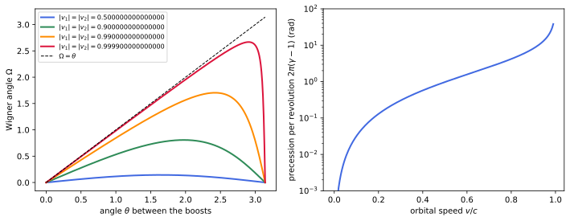
figures/sr-wigner.sage.
Collinear boosts produce no rotation. The first example checks this from the definition, recovering the composition of collinear velocities. This is the case in which the composition law of Proposition 4 is exact.
Example 94 (Collinear boosts) If \vec v_1 = v_1\hat n and \vec v_2 = v_2\hat n, both boosts act in the plane of e_0 and \hat n and commute, B(\vec v_2)B(\vec v_1) = B((v_1 \oplus v_2)\hat n) with v_1 \oplus v_2 = (v_1 + v_2)/(1 + v_1v_2) (Exercise 11). The product is already a pure boost, and W = 1.
Veriphy. Pending.
Lean. Pending.
Sage. Pending.
Perpendicular boosts give the simplest non-trivial case. The second example computes the composite velocity, which is already asymmetric in the two boosts.
Example 95 (Perpendicular boosts) For \vec v_1 = 0.6\hat x and \vec v_2 = 0.7\hat y, B(\vec v_1)e_0 = (1.25, 0.75, 0, 0) and B(\vec v_2) multiplies t and y by \gamma_2 = 1.400: B(\vec v_2)B(\vec v_1)e_0 \approx (1.750, 0.750, 1.225, 0), so \vec u = (0.6/\gamma_2, 0.7, 0) \approx (0.429, 0.700, 0), with |\vec u| \approx 0.821. The other order gives \vec u' = (0.6, 0.7/\gamma_1, 0) = (0.6, 0.56, 0), of the same magnitude and a different direction (Exercise 101).
Veriphy. Pending.
Lean. Pending.
Sage. Pending.
Reversing the order of the boosts reverses the rotation. The third example derives this from transposition, as in O’Donnell and Visser (2011, eqs. (38)-(40)).
Example 96 (The reverse order) Pure boosts are symmetric and rotations orthogonal, so transposing Equation 11 gives B(\vec v_1)B(\vec v_2) = W^TB(\vec u) = W^{-1}B(\vec u) = B(W^{-1}\vec u)W^{-1} (Exercise 77): W(\vec v_1, \vec v_2) = W(\vec v_2, \vec v_1)^{-1} and \vec v_2 \oplus \vec v_1 = W^{-1}(\vec v_1 \oplus \vec v_2). The two composite velocities have the same magnitude, and the angle between them is the angle of the Wigner rotation.
Veriphy. Pending.
Lean. Pending.
Sage. Pending.
The composite velocity has a closed form, Einstein’s rule for adding velocities in arbitrary directions. The first exercise derives it.
Exercise 100 (Einstein’s addition of velocities) Show that \vec v_1 \oplus \vec v_2 = \frac{\vec v_2 + \vec v_1/\gamma_2 + (1 - 1/\gamma_2)(\hat v_2\cdot\vec v_1)\hat v_2}{1 + \vec v_1\cdot\vec v_2} , and that its Lorentz factor is \gamma_1\gamma_2(1 + \vec v_1\cdot\vec v_2). Check the formula numerically against the matrices.
B(\vec v_1)e_0 = \gamma_1(1, \vec v_1), and Equation 7 gives B(\vec v_2)\gamma_1(1, \vec v_1) = \gamma_1\bigl(\gamma_2(1 + \vec v_2\cdot\vec v_1),\ \gamma_2\vec v_2 + \vec v_1 + (\gamma_2 - 1)(\hat v_2\cdot\vec v_1)\hat v_2\bigr). Dividing the spatial part by the time part gives the formula, and the time part is the Lorentz factor:
import numpy as np
eta = np.diag([1., -1, -1, -1])
def boost(v):
v = np.array(v, float); b = np.linalg.norm(v); g = 1/np.sqrt(1 - b*b); B = np.eye(4)
B[0, 0] = g; B[0, 1:] = g*v; B[1:, 0] = g*v
if b > 0: B[1:, 1:] += (g - 1)*np.outer(v, v)/b**2
return B
def angle_axis(R):
R3 = R[1:, 1:]; ang = np.arccos(np.clip((np.trace(R3) - 1)/2, -1, 1))
ax = np.array([R3[2, 1] - R3[1, 2], R3[0, 2] - R3[2, 0], R3[1, 0] - R3[0, 1]])
return ang, ax/np.linalg.norm(ax) if np.linalg.norm(ax) > 1e-14 else ax
rng = np.random.default_rng(int(4)); worst = 0
for _ in range(100):
v1 = rng.normal(size=3); v1 *= rng.uniform(0, 0.99)/np.linalg.norm(v1)
v2 = rng.normal(size=3); v2 *= rng.uniform(0, 0.99)/np.linalg.norm(v2)
g2 = 1/np.sqrt(1 - v2 @ v2); n2 = v2/np.linalg.norm(v2)
u = (v2 + v1/g2 + (1 - 1/g2)*(n2 @ v1)*n2)/(1 + v1 @ v2)
U = boost(v2) @ boost(v1) @ np.array([1., 0, 0, 0])
g1 = 1/np.sqrt(1 - v1 @ v1)
worst = max(worst, np.abs(U[1:]/U[0] - u).max(), abs(U[0] - g1*g2*(1 + v1 @ v2)))
print("largest deviation over 100 random pairs: %.2e" % worst)Output:
largest deviation over 100 random pairs: 6.22e-15Veriphy. Pending.
Lean. Pending.
Sage. Pending.
The definition depends on the order of the boosts, and the third example related the two orders. The second exercise checks the claim about the angle between the two composite velocities.
Exercise 101 (The angle between the two composite velocities) For \vec v_1 = 0.6\hat x, \vec v_2 = 0.7\hat y, compute the angle between \vec v_1 \oplus \vec v_2 and \vec v_2 \oplus \vec v_1, and compare it with the rotation angle of W(\vec v_2, \vec v_1) extracted from the matrices.
\vec v_1 \oplus \vec v_2 = (0.4285, 0.7) and \vec v_2 \oplus \vec v_1 = (0.6, 0.5600) have the same length 0.8207 and make an angle 0.2706\,rad, which is the angle of the rotation B(\vec u)^{-1}B(\vec v_2)B(\vec v_1), about +\hat z:
import numpy as np
eta = np.diag([1., -1, -1, -1])
def boost(v):
v = np.array(v, float); b = np.linalg.norm(v); g = 1/np.sqrt(1 - b*b); B = np.eye(4)
B[0, 0] = g; B[0, 1:] = g*v; B[1:, 0] = g*v
if b > 0: B[1:, 1:] += (g - 1)*np.outer(v, v)/b**2
return B
def angle_axis(R):
R3 = R[1:, 1:]; ang = np.arccos(np.clip((np.trace(R3) - 1)/2, -1, 1))
ax = np.array([R3[2, 1] - R3[1, 2], R3[0, 2] - R3[2, 0], R3[1, 0] - R3[0, 1]])
return ang, ax/np.linalg.norm(ax) if np.linalg.norm(ax) > 1e-14 else ax
v1, v2 = np.array([0.6, 0, 0]), np.array([0, 0.7, 0])
U12 = boost(v2) @ boost(v1) @ np.array([1., 0, 0, 0]); U21 = boost(v1) @ boost(v2) @ np.array([1., 0, 0, 0])
u, up = U12[1:]/U12[0], U21[1:]/U21[0]
print("v1 + v2 =", np.round(u, 4), " v2 + v1 =", np.round(up, 4), " lengths %.4f %.4f" % (np.linalg.norm(u), np.linalg.norm(up)))
print("angle between them: %.4f rad" % np.arccos(u @ up/np.linalg.norm(u)/np.linalg.norm(up)))
W = np.linalg.inv(boost(u)) @ boost(v2) @ boost(v1)
print("Wigner rotation: angle %.4f about" % angle_axis(W)[0], np.round(angle_axis(W)[1], 6))Output:
v1 + v2 = [0.4285 0.7 0. ] v2 + v1 = [0.6 0.56 0. ] lengths 0.8207 0.8207
angle between them: 0.2706 rad
Wigner rotation: angle 0.2706 about [0. 0. 1.]Veriphy. Pending.
Lean. Pending.
Sage. Pending.
The Wigner rotation is trivial only for collinear boosts. The third exercise proves the converse of the first example without computing the angle.
Exercise 102 (When the rotation is trivial) Show that W(\vec v_2, \vec v_1) = 1 if and only if B(\vec v_1) and B(\vec v_2) commute, and conclude with Exercise 80 that this happens only for parallel (or zero) velocities.
If W = 1, B(\vec v_2)B(\vec v_1) = B(\vec u) is symmetric, so it equals its transpose B(\vec v_1)B(\vec v_2). Conversely, commuting symmetric positive definite matrices can be diagonalised in one orthonormal basis, so their product is again symmetric and positive definite; it is then a pure boost (Exercise 76), and W = 1 by the uniqueness in Theorem 5. Commuting boosts have parallel velocities by Exercise 80.
Veriphy. Pending.
Lean. Pending.
Sage. Pending.
The theorem below computes the Wigner rotation exactly. The computation is done in SL(2, \mathbb{C}), where boosts are the matrices e^{\xi\hat n\cdot\vec\sigma/2} = \cosh\tfrac\xi2 + \sinh\tfrac\xi2\,\hat n\cdot\vec\sigma and rotations e^{-i\Omega\hat m\cdot\vec\sigma/2} = \cos\tfrac\Omega2 - i\sin\tfrac\Omega2\,\hat m\cdot\vec\sigma (Theorem 7), and products reduce to the identity (\vec a\cdot\vec\sigma)(\vec b\cdot\vec\sigma) = \vec a\cdot\vec b + i(\vec a\times\vec b)\cdot\vec\sigma (O’Donnell and Visser 2011, sec. 5).
Theorem 8 (The Wigner angle) Let \vec v_1, \vec v_2 be non-zero with rapidities \xi_k = \operatorname{artanh}|\vec v_k|, directions \hat n_k and angle \theta \in [0, \pi] between them, \cos\theta = \hat n_1\cdot\hat n_2. Then W(\vec v_2, \vec v_1) is the rotation by the angle \Omega \in [0, \pi) about the axis \hat n_1 \times \hat n_2, with \tan\frac\Omega2 = \frac{\sin\theta}{\coth\frac{\xi_1}{2}\coth\frac{\xi_2}{2} + \cos\theta} , \tag{12} equivalently, with \gamma = \gamma_1\gamma_2(1 + \vec v_1\cdot\vec v_2) the Lorentz factor of \vec v_1 \oplus \vec v_2, 1 + \cos\Omega = \frac{(1 + \gamma_1 + \gamma_2 + \gamma)^2}{(1 + \gamma_1)(1 + \gamma_2)(1 + \gamma)} . \tag{13}
Proof. Let c_k = \cosh\tfrac{\xi_k}{2}, s_k = \sinh\tfrac{\xi_k}{2} and \hat B_k = c_k + s_k\hat n_k\cdot\vec\sigma, so that \Lambda(\hat B_k) = B(\vec v_k). The product is \hat B_2\hat B_1 = \alpha + \vec\beta\cdot\vec\sigma + i\vec g\cdot\vec\sigma, \qquad \alpha = c_1c_2 + s_1s_2\cos\theta, \quad \vec\beta = c_1s_2\hat n_2 + s_1c_2\hat n_1, \quad \vec g = s_1s_2\,\hat n_2\times\hat n_1 . By the polar decomposition in SL(2, \mathbb{C}) (Exercise 93), \hat B_2\hat B_1 = \hat W\hat H with \hat W = \cos\tfrac\Omega2 - i\sin\tfrac\Omega2\,\hat m\cdot\vec\sigma \in SU(2) and \hat H = C + S\hat h\cdot\vec\sigma positive Hermitian, C = \cosh\tfrac\zeta2, S = \sinh\tfrac\zeta2. Then \Lambda(\hat W) is the rotation by \Omega about \hat m and \Lambda(\hat H) a pure boost, and B(\vec v_2)B(\vec v_1) = \Lambda(\hat W)\Lambda(\hat H); by Theorem 5 the rotation in this order equals the rotation in Equation 11, so W = \Lambda(\hat W). Expanding with the product identity, writing c = \cos\tfrac\Omega2, s = \sin\tfrac\Omega2, \hat W\hat H = (cC - isS\,\hat m\cdot\hat h) + (cS\,\hat h + sS\,\hat m\times\hat h)\cdot\vec\sigma - isC\,\hat m\cdot\vec\sigma . The matrices 1, \sigma_1, \sigma_2, \sigma_3 are a basis over \mathbb{C}, so the coefficients agree. The coefficient of 1 gives cC = \alpha and sS\,\hat m\cdot\hat h = 0; the imaginary part of the coefficient of \vec\sigma gives sC\,\hat m = -\vec g = s_1s_2\,\hat n_1\times\hat n_2. If \sin\theta = 0 then s = 0 and W = 1. Otherwise \hat m is the unit vector along \hat n_1\times\hat n_2 with sC = s_1s_2\sin\theta > 0, and \alpha > 0 (since c_1c_2 > s_1s_2) gives c > 0, so \Omega \in (0, \pi) and \tan\tfrac\Omega2 = s/c = s_1s_2\sin\theta/\alpha; dividing by s_1s_2 gives Equation 12. For Equation 13: 1 + \cos\Omega = 2c^2 = 2\alpha^2/C^2; \Lambda(\hat H) and B(\vec u) = W\Lambda(\hat H)W^{-1} have the same rapidity \zeta, so \cosh\zeta = \gamma and C^2 = \tfrac12(1 + \gamma); and with \sinh\xi_k = 2s_kc_k, 4c_k^2 = 1 + \gamma_k, 1 + \gamma_1 + \gamma_2 + \gamma = (1 + \gamma_1)(1 + \gamma_2) + \sinh\xi_1\sinh\xi_2\cos\theta = 4c_1c_2(c_1c_2 + s_1s_2\cos\theta) = 4c_1c_2\alpha , where \gamma = \cosh\xi_1\cosh\xi_2 + \sinh\xi_1\sinh\xi_2\cos\theta was used. Substituting \alpha and C^2 gives Equation 13. \square
Veriphy. Pending.
Lean. Pending.
Sage. Pending.
The perpendicular boosts of Example 95 give the first numerical value. The first example evaluates Equation 12 for them. The perpendicular case makes \cos\theta = 0 and the formula particularly simple.
Example 97 (The angle for 0.6\hat x and 0.7\hat y) \xi_1 = \ln2 gives \coth\tfrac{\xi_1}{2} = \frac{e^{\xi_1} + 1}{e^{\xi_1} - 1} = 3, and \xi_2 = \operatorname{artanh}0.7 gives \coth\tfrac{\xi_2}{2} = 2.4487. With \theta = \pi/2, \tan\tfrac\Omega2 = 1/(3 \cdot 2.4487) = 0.1361, so \Omega = 0.2706\,rad = 15.5° about \hat x\times\hat y = \hat z: the observer who boosted along x and then along y is turned counterclockwise relative to one boosted directly to \vec u. This is the rotation found numerically in Exercise 79.
Veriphy. Pending.
Lean. Pending.
Sage. Pending.
For small velocities the rotation is of second order. The second example extracts the leading term, which is the Lorentzian echo of the bracket [K_1, K_2] = -J_3.
Example 98 (Small velocities) For \xi_k \ll 1, \coth\tfrac{\xi_k}{2} \approx 2/\xi_k, so \tan\tfrac\Omega2 \approx \tfrac14\xi_1\xi_2\sin\theta and \Omega \approx \tfrac12|\vec v_1\times\vec v_2| (in units c = 1; \tfrac{1}{2c^2}|\vec v_1\times\vec v_2| in general). Two boosts of 30\,km/s at right angles produce a rotation of 5 \times 10^{-9}\,rad. The second-order size matches the group commutator of Exercise 84.
Veriphy. Pending.
Lean. Pending.
Sage. Pending.
In the opposite limit the rotation becomes as large as the angle between the boosts. The third example takes both speeds to the speed of light, the regime of Figure 12.
Example 99 (Ultrarelativistic boosts) As \xi_1, \xi_2 \to \infty, \coth\tfrac{\xi_k}{2} \to 1 and \tan\tfrac\Omega2 \to \frac{\sin\theta}{1 + \cos\theta} = \tan\tfrac\theta2: \Omega \to \theta. For every finite speed \coth\tfrac{\xi_1}{2}\coth\tfrac{\xi_2}{2} > 1, so \Omega < \theta. Two perpendicular boosts close to c produce a rotation close to 90°.
Veriphy. Pending.
Lean. Pending.
Sage. Pending.
The proof works in SL(2, \mathbb{C}); the first exercise checks the result with 4 \times 4 matrices for random velocities. Random velocities test the formula in configurations that are not chosen to be convenient.
Exercise 103 (The Wigner angle in numbers) With Sage, for 100 random pairs of velocities, compute W = B(\vec u)^{-1}B(\vec v_2)B(\vec v_1), its angle and axis, and compare with Equation 12, Equation 13 and the axis \hat n_1\times\hat n_2.
All three agree to machine precision:
import numpy as np
eta = np.diag([1., -1, -1, -1])
def boost(v):
v = np.array(v, float); b = np.linalg.norm(v); g = 1/np.sqrt(1 - b*b); B = np.eye(4)
B[0, 0] = g; B[0, 1:] = g*v; B[1:, 0] = g*v
if b > 0: B[1:, 1:] += (g - 1)*np.outer(v, v)/b**2
return B
def angle_axis(R):
R3 = R[1:, 1:]; ang = np.arccos(np.clip((np.trace(R3) - 1)/2, -1, 1))
ax = np.array([R3[2, 1] - R3[1, 2], R3[0, 2] - R3[2, 0], R3[1, 0] - R3[0, 1]])
return ang, ax/np.linalg.norm(ax) if np.linalg.norm(ax) > 1e-14 else ax
rng = np.random.default_rng(int(9)); worst = [0, 0, 0]
for _ in range(100):
v1 = rng.normal(size=3); v1 *= rng.uniform(0.01, 0.99)/np.linalg.norm(v1)
v2 = rng.normal(size=3); v2 *= rng.uniform(0.01, 0.99)/np.linalg.norm(v2)
U = boost(v2) @ boost(v1) @ np.array([1., 0, 0, 0]); W = np.linalg.inv(boost(U[1:]/U[0])) @ boost(v2) @ boost(v1)
Om, ax = angle_axis(W)
x1, x2 = np.arctanh(np.linalg.norm(v1)), np.arctanh(np.linalg.norm(v2)); n1, n2 = v1/np.linalg.norm(v1), v2/np.linalg.norm(v2)
th = np.arccos(n1 @ n2)
tan_f = 2*np.arctan(np.sin(th)/(1/np.tanh(x1/2)/np.tanh(x2/2) + np.cos(th)))
g1, g2 = np.cosh(x1), np.cosh(x2); g = g1*g2*(1 + v1 @ v2)
cos_f = np.arccos((1 + g1 + g2 + g)**2/((1 + g1)*(1 + g2)*(1 + g)) - 1)
axis = np.cross(n1, n2)/np.linalg.norm(np.cross(n1, n2))
worst = [max(worst[0], abs(Om - tan_f)), max(worst[1], abs(Om - cos_f)), max(worst[2], np.abs(ax - axis).max())]
print("max |Omega - tan formula| = %.1e, max |Omega - cos formula| = %.1e, max |axis - n1 x n2| = %.1e" % tuple(worst))Output:
max |Omega - tan formula| = 2.7e-13, max |Omega - cos formula| = 2.6e-13, max |axis - n1 x n2| = 2.7e-14Veriphy. Pending.
Lean. Pending.
Sage. Pending.
The literature quotes the Wigner angle in several equivalent forms. The second exercise derives Stapp’s formula for \sin\Omega (O’Donnell and Visser 2011, eq. (21)).
Exercise 104 (Stapp’s formula) Show that \sin\Omega = \frac{\gamma_1\gamma_2|\vec v_1||\vec v_2|(1 + \gamma_1 + \gamma_2 + \gamma)}{(1 + \gamma_1)(1 + \gamma_2)(1 + \gamma)}\sin\theta .
\sin\Omega = 2sc = 2(s_1s_2\sin\theta/C)(\alpha/C) = 4s_1s_2\alpha\sin\theta/(1 + \gamma). With \alpha = (1 + \gamma_1 + \gamma_2 + \gamma)/(4c_1c_2) this is s_1s_2(1 + \gamma_1 + \gamma_2 + \gamma)\sin\theta/(c_1c_2(1 + \gamma)), and s_k/c_k = \tanh\tfrac{\xi_k}{2} = \sinh\xi_k/(1 + \cosh\xi_k) = \gamma_k|\vec v_k|/(1 + \gamma_k) gives the formula:
var('x1 x2 th', domain='positive')
c1, s1, c2, s2 = cosh(x1/2), sinh(x1/2), cosh(x2/2), sinh(x2/2)
alpha = c1*c2 + s1*s2*cos(th)
C2 = alpha^2 + (s1*s2*sin(th))^2 # cosh^2(zeta/2) = |coefficients|^2 of the rotation part
sinOm = 2*(s1*s2*sin(th))*alpha/C2
g1, g2 = cosh(x1), cosh(x2); g = cosh(x1)*cosh(x2) + sinh(x1)*sinh(x2)*cos(th)
v1, v2 = tanh(x1), tanh(x2)
stapp = g1*g2*v1*v2*(1 + g1 + g2 + g)*sin(th)/((1 + g1)*(1 + g2)*(1 + g))
for vals in [(0.3, 1.1, 0.7), (2.0, 0.5, 2.5), (1.0, 1.0, pi/2)]:
d = dict(zip((x1, x2, th), vals))
print("x1, x2, theta =", vals, " sin(Omega) = %.12f Stapp = %.12f" % (n(sinOm.subs(d)), n(stapp.subs(d))))
print("C^2 - (1 + gamma)/2 simplifies to:", (C2 - (1 + g)/2).simplify_full().trig_reduce().simplify_full())Output:
x1, x2, theta = (0.300000000000000, 1.10000000000000, 0.700000000000000) sin(Omega) = 0.090649830913 Stapp = 0.090649830913
x1, x2, theta = (2.00000000000000, 0.500000000000000, 2.50000000000000) sin(Omega) = 0.258044975194 Stapp = 0.258044975194
x1, x2, theta = (1.00000000000000, 1.00000000000000, 1/2*pi) sin(Omega) = 0.408476154384 Stapp = 0.408476154384
C^2 - (1 + gamma)/2 simplifies to: 0Veriphy. Pending.
Lean. Pending.
Sage. Pending.
The bound \Omega < \theta has a geometric meaning on the hyperboloid of velocities. The third exercise connects the Wigner angle with the triangle of Exercise 45.
Exercise 105 (The Wigner angle as an angular defect) For unit future timelike a, b let P_{a \to b} be the pure boost in the plane of a and b that sends a to b. With w = B(\vec v_2)e_0 and u = B(\vec v_2)B(\vec v_1)e_0, show that B(\vec v_2)B(\vec v_1) = P_{w \to u}P_{e_0 \to w}, so that W(\vec v_2, \vec v_1) = P_{u \to e_0}P_{w \to u}P_{e_0 \to w} is the rotation produced by the closed loop of pure boosts around the triangle e_0wu on the hyperboloid of velocities. Check numerically for \vec v_1 = 0.6\hat x, \vec v_2 = 0.7\hat y that \Omega equals \pi minus the sum of the angles of this triangle.
B(\vec v_2) = P_{e_0 \to w}, and B(\vec v_2)B(\vec v_1)B(\vec v_2)^{-1} is symmetric positive definite in the frame obtained by applying B(\vec v_2), sending w to u: it is P_{w \to u}. Hence B(\vec v_2)B(\vec v_1) = P_{w \to u}P_{e_0 \to w}, and P_{u \to e_0} = B(\vec u)^{-1} gives the loop. The angle of the rotation equals the area of the hyperbolic triangle, \pi minus its angle sum, which is 0.2706; for the triangle e_0, B(\vec v_1)e_0, u the defect would be 0.3238, which is not the Wigner angle:
import numpy as np
eta = np.diag([1., -1, -1, -1])
def boost(v):
v = np.array(v, float); b = np.linalg.norm(v); g = 1/np.sqrt(1 - b*b); B = np.eye(4)
B[0, 0] = g; B[0, 1:] = g*v; B[1:, 0] = g*v
if b > 0: B[1:, 1:] += (g - 1)*np.outer(v, v)/b**2
return B
def angle_axis(R):
R3 = R[1:, 1:]; ang = np.arccos(np.clip((np.trace(R3) - 1)/2, -1, 1))
ax = np.array([R3[2, 1] - R3[1, 2], R3[0, 2] - R3[2, 0], R3[1, 0] - R3[0, 1]])
return ang, ax/np.linalg.norm(ax) if np.linalg.norm(ax) > 1e-14 else ax
dot = lambda p, q: p @ eta @ q
def P(a, b): return np.eye(4) - np.outer(a + b, eta @ (a + b))/(1 + dot(a, b)) + 2*np.outer(b, eta @ a)
e0 = np.array([1., 0, 0, 0]); B1, B2 = boost([0.6, 0, 0]), boost([0, 0.7, 0]); w = B2 @ e0; u = B2 @ B1 @ e0
print("B2 B1 = P(w -> u) P(e0 -> w):", np.allclose(B2 @ B1, P(w, u) @ P(e0, w)))
W = P(u, e0) @ P(w, u) @ P(e0, w)
side = lambda p, q: np.arccosh(dot(p, q))
a, b, c = side(e0, w), side(w, u), side(e0, u)
ang = lambda opp, s1, s2: np.arccos((np.cosh(s1)*np.cosh(s2) - np.cosh(opp))/(np.sinh(s1)*np.sinh(s2)))
defect = np.pi - ang(b, a, c) - ang(c, a, b) - ang(a, b, c)
print("rotation angle of the loop %.4f, defect of the triangle %.4f" % (angle_axis(W)[0], defect))
u1 = B1 @ e0; a, b, c = side(e0, u1), side(u1, u), side(e0, u)
print("defect of the other triangle e0, B1 e0, u: %.4f" % (np.pi - ang(b, a, c) - ang(c, a, b) - ang(a, b, c)))Output:
B2 B1 = P(w -> u) P(e0 -> w): True
rotation angle of the loop 0.2706, defect of the triangle 0.2706
defect of the other triangle e0, B1 e0, u: 0.3238Veriphy. Pending.
Lean. Pending.
Sage. Pending.
A particle moving on a curve undergoes a continuous sequence of small boosts, each in its own rest frame, and the Wigner rotations accumulate. A gyroscope carried by the particle, on which no torque acts, keeps its axes fixed in the frame obtained by composing these boosts, the Fermi-Walker frame; relative to the frame obtained from the laboratory by a single pure boost, it turns. The proposition gives the rate.
Proposition 11 (Thomas precession) Let a particle move with laboratory velocity \vec v(t) and acceleration \vec a = d\vec v/dt, and let F(t) be its Fermi-Walker frame, defined by F(t + dt) = F(t)B(\delta\vec w) where \delta\vec w is the velocity increment measured in the frame F(t). Write F(t) = B(\vec v(t))R(t) with R(t) a rotation. Then R turns with the angular velocity \vec\omega_T = \frac{\gamma^2}{\gamma + 1}\,\vec a\times\vec v , \tag{14} that is, a vector with fixed components in F has components in the boosted laboratory frame B(\vec v) that rotate with \vec\omega_T.
Proof. F(t + dt) = B(\vec v)RB(\delta\vec w) = B(\vec v)B(\delta\vec w')R with \delta\vec w' = R\delta\vec w (Exercise 77). By Equation 11, B(\vec v)B(\delta\vec w') = B(\vec v + d\vec v)W, where \vec v + d\vec v = \delta\vec w' \oplus \vec v and W = W(\vec v, \delta\vec w'); so R(t + dt) = WR(t). By Theorem 8 with \vec v_1 = \delta\vec w', \vec v_2 = \vec v, W rotates about \delta\hat w'\times\hat v by \Omega with \tan\tfrac\Omega2 = \sin\theta/(\coth\tfrac{\xi_1}{2}\coth\tfrac{\xi_2}{2} + \cos\theta), \xi_1 = |\delta\vec w'|. To first order, \coth\tfrac{\xi_1}{2} \approx 2/\xi_1 and \Omega \approx |\delta\vec w'|\sin\theta\tanh\tfrac{\xi_2}{2}, with \tanh\tfrac{\xi_2}{2} = \gamma v/(1 + \gamma); as a vector, \vec\Omega = \frac{\gamma}{1 + \gamma}\delta\vec w'\times\vec v. The composite-velocity formula of Exercise 100, with the small velocity first, gives to first order d\vec v_\perp = \delta\vec w'_\perp/\gamma for the components perpendicular to \vec v; only these enter the cross product, so \delta\vec w'\times\vec v = \gamma\,d\vec v\times\vec v and \vec\Omega = \frac{\gamma^2}{1 + \gamma}d\vec v\times\vec v. Dividing by dt gives Equation 14. \square
Veriphy. Pending.
Lean. Pending.
Sage. Pending.
On a circular orbit the precession accumulates at a constant rate. The first example computes the angle per revolution, which Figure 12 plots.
Example 100 (Precession on a circle) For uniform circular motion with speed v and radius r, |\vec a\times\vec v| = v^3/r and the period is 2\pi r/v, so the angle per revolution is \frac{\gamma^2}{\gamma + 1}\frac{v^3}{r}\frac{2\pi r}{v} = 2\pi\frac{\gamma^2v^2}{\gamma + 1} = 2\pi(\gamma - 1), using \gamma^2v^2 = \gamma^2 - 1. Since \vec a\times\vec v is opposite to the orbital angular velocity, the gyroscope turns backwards relative to the orbit.
Veriphy. Pending.
Lean. Pending.
Sage. Pending.
The historical application is the spin of the electron in an atom. The second example shows how the Thomas term halves the spin-orbit coupling.
Example 101 (The Thomas half) For v \ll c, \vec\omega_T \approx \tfrac{1}{2c^2}\vec a\times\vec v. An electron in the electric field \vec E of a nucleus has \vec a = -e\vec E/m and sees, in its rest frame, the magnetic field \vec B' \approx -\vec v\times\vec E/c^2. A magnetic moment with g = 2 precesses about \vec B' with angular velocity of magnitude \frac{e}{mc^2}|\vec v\times\vec E|, while the Thomas precession has magnitude \frac{e}{2mc^2}|\vec v\times\vec E| and the opposite sense. The net precession, and with it the spin-orbit energy, is half of the naive value: this factor \tfrac12, missing before Thomas, brought the fine structure into agreement with experiment, and the Dirac equation contains it automatically (Theorem 3 of The Dirac equation).
Veriphy. Pending.
Lean. Pending.
Sage. Pending.
Acceleration along the velocity produces no precession. The third example records this case, which is why the effect is absent in linear accelerators.
Example 102 (No precession in linear motion) If \vec a \parallel \vec v, \vec a\times\vec v = 0 and \vec\omega_T = 0: successive boosts are collinear and their Wigner rotations vanish (Example 94). A particle accelerated along a straight line, as in 1, keeps its spin direction fixed relative to the boosted laboratory axes.
Veriphy. Pending.
Lean. Pending.
Sage. Pending.
The definition of the Fermi-Walker frame by infinitesimal boosts is equivalent to the Fermi-Walker transport equation dS^\mu/d\tau = -(a\cdot S)u^\mu for a spatial vector S \perp u, with a = du/d\tau. The first exercise integrates it numerically for a circular orbit and finds the angle of Example 100.
Exercise 106 (A gyroscope on a circle by computer) With v = 0.8 (\gamma = 5/3), integrate the Fermi-Walker equation for one revolution starting from S = (0, 1, 0, 0) at a point where \vec v \parallel \hat y, and express the final S in the frame B(\vec v). Compare the angle with -2\pi(\gamma - 1).
The equation keeps S\cdot u = 0 and S\cdot S fixed. After one revolution the components of S in the boosted frame are turned by -4\pi/3 \equiv 2\pi/3 about +\hat z, that is by 2\pi(\gamma - 1) clockwise, opposite to the orbit:
import numpy as np
eta = np.diag([1., -1, -1, -1])
def boost(v):
v = np.array(v, float); b = np.linalg.norm(v); g = 1/np.sqrt(1 - b*b); B = np.eye(4)
B[0, 0] = g; B[0, 1:] = g*v; B[1:, 0] = g*v
if b > 0: B[1:, 1:] += (g - 1)*np.outer(v, v)/b**2
return B
def angle_axis(R):
R3 = R[1:, 1:]; ang = np.arccos(np.clip((np.trace(R3) - 1)/2, -1, 1))
ax = np.array([R3[2, 1] - R3[1, 2], R3[0, 2] - R3[2, 0], R3[1, 0] - R3[0, 1]])
return ang, ax/np.linalg.norm(ax) if np.linalg.norm(ax) > 1e-14 else ax
w0, r = 1.0, 0.8; v = w0*r; g = 1/np.sqrt(1 - v*v)
U = lambda t: g*np.array([1, -r*w0*np.sin(w0*t), r*w0*np.cos(w0*t), 0])
A = lambda t: g*g*np.array([0, -r*w0**2*np.cos(w0*t), -r*w0**2*np.sin(w0*t), 0]) # du/dtau
dot = lambda p, q: p @ eta @ q
S = np.array([0, 1.0, 0, 0]); T = 2*np.pi/w0; N = 100000; dt = T/N; t = 0.0
f = lambda t, S: -(dot(A(t), S))*U(t)/g # dS/dt = (dS/dtau)/gamma
for _ in range(N):
k1 = f(t, S); k2 = f(t + dt/2, S + dt/2*k1); k3 = f(t + dt/2, S + dt/2*k2); k4 = f(t + dt, S + dt*k3)
S = S + dt/6*(k1 + 2*k2 + 2*k3 + k4); t += dt
Sr = np.linalg.inv(boost(U(T)[1:]/U(T)[0])) @ S
print("S.u = %.2e, S.S = %.10f" % (dot(S, U(T)), dot(S, S)))
print("spin in the boosted frame after one revolution:", np.round(Sr, 6))
ang = np.arctan2(Sr[2], Sr[1])
print("angle %.6f; -2 pi (gamma - 1) mod 2 pi = %.6f" % (ang, (-2*np.pi*(g - 1)) % (2*np.pi)))Output:
S.u = 3.35e-12, S.S = -1.0000000000
spin in the boosted frame after one revolution: [ 0. -0.5 0.866025 0. ]
angle 2.094395; -2 pi (gamma - 1) mod 2 pi = 2.094395Veriphy. Pending.
Lean. Pending.
Sage. Pending.
The angle 2\pi(\gamma - 1) has a geometric meaning. The second exercise shows that it is the area enclosed by the orbit’s velocities on the hyperboloid of Exercise 44, as the defect of Exercise 105 suggested.
Exercise 107 (Precession equals enclosed area) On a circular orbit the four-velocity runs around the circle \chi = \xi (the rapidity) on the hyperboloid with metric d\chi^2 + \sinh^2\chi\,d\phi^2 in the plane of the orbit. Compute the area of the disk \chi \leq \xi and compare with 2\pi(\gamma - 1).
The area is \int_0^{2\pi}\int_0^\xi\sinh\chi\,d\chi\,d\phi = 2\pi(\cosh\xi - 1) = 2\pi(\gamma - 1). The Thomas precession per revolution is the holonomy of the hyperbolic plane, of curvature -1, around the loop of velocities: parallel transport around a loop turns a vector by the enclosed area.
Veriphy. Pending.
Lean. Pending.
Sage. Pending.
The effect is small in atoms and large in storage rings. The third exercise estimates it for the electron in the ground state of hydrogen in the Bohr model.
Exercise 108 (Thomas precession in the Bohr atom) With v = \alpha c (\alpha \approx 1/137) and r = 0.529 \times 10^{-10}\,m, compute \omega_T and compare it with the orbital angular velocity.
v = 2.19 \times 10^6\,m/s, a = v^2/r = 9.0 \times 10^{22}\,m/s^2, and \omega_T \approx av/(2c^2) = 1.1 \times 10^{12}\,rad/s. The orbital angular velocity is v/r = 4.1 \times 10^{16}\,rad/s, so \omega_T/\omega = \tfrac12\alpha^2 \approx 2.7 \times 10^{-5}: a fine-structure effect, of relative size \alpha^2:
c = 2.99792458e8; alpha = 1/137.036; r = 0.529177e-10
v = alpha*c; a = v^2/r; g = 1/sqrt(1 - alpha^2)
wT = g^2/(g + 1)*a*v/c^2; w = v/r
print("v = %.3e m/s, a = %.3e m/s^2" % (v, a))
print("omega_T = %.3e rad/s, orbital omega = %.3e rad/s, ratio = %.3e, alpha^2/2 = %.3e" % (wT, w, wT/w, alpha^2/2))Output:
v = 2.188e+06 m/s, a = 9.044e+22 m/s^2
omega_T = 1.101e+12 rad/s, orbital omega = 4.134e+16 rad/s, ratio = 2.663e-05, alpha^2/2 = 2.663e-05Veriphy. Pending.
Lean. Pending.
Sage. Pending.
The Poincaré group
The seventh step adds translations. The isometries of Minkowski spacetime are the maps that preserve the interval between every pair of events; they include the Lorentz transformations about any origin and the translations, and they form the group that replaces the Galilean group (Bekaert and Boulanger 2006, sec. 1.2). Figure 13 shows that its translations and boosts do not commute.
Definition 16 (Poincaré group) The Poincaré group is the set of maps x \mapsto \Lambda x + a of \mathbb{R}^4 with \Lambda \in SO^+(1, 3) and a \in \mathbb{R}^4, written (\Lambda, a), with the composition (\Lambda_2, a_2)(\Lambda_1, a_1) = (\Lambda_2\Lambda_1, a_2 + \Lambda_2a_1) , the semidirect product ISO^+(1, 3) = \mathbb{R}^4 \rtimes SO^+(1, 3); it is the matrix Lie group of the 5 \times 5 matrices \begin{pmatrix}\Lambda & a \\ 0 & 1\end{pmatrix}. Allowing \Lambda \in O(1, 3) gives the full group IO(1, 3), and replacing \Lambda by A \in SL(2, \mathbb{C}) acting through \Lambda(A) gives its double cover.
Veriphy. Pending.
Lean. Pending.
Sage. Pending.
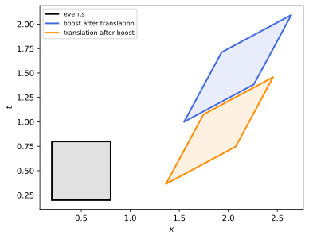
figures/sr-poincare.sage.
The matrix form makes the composition law automatic. The first example multiplies two matrices and reads off the law. The 5 \times 5 representation is faithful, so nothing is lost by working with it.
Example 103 (The composition law from matrices) \begin{pmatrix}\Lambda_2 & a_2 \\ 0 & 1\end{pmatrix}\begin{pmatrix}\Lambda_1 & a_1 \\ 0 & 1\end{pmatrix} = \begin{pmatrix}\Lambda_2\Lambda_1 & \Lambda_2a_1 + a_2 \\ 0 & 1\end{pmatrix}, and acting on (x, 1) the matrix \begin{pmatrix}\Lambda & a \\ 0 & 1\end{pmatrix} gives (\Lambda x + a, 1). The inverse is (\Lambda, a)^{-1} = (\Lambda^{-1}, -\Lambda^{-1}a).
Veriphy. Pending.
Lean. Pending.
Sage. Pending.
The translations form a normal subgroup and the Lorentz group a subgroup that is not normal. The second example identifies Minkowski spacetime as a coset space of the Poincaré group.
Example 104 (Minkowski spacetime as a coset space) The Poincaré group acts transitively on \mathbb{R}^4, and the stabiliser of the origin is \{(\Lambda, 0)\} \cong SO^+(1, 3). By the orbit-stabiliser bijection (Definition 11 of Group theory), Minkowski spacetime is the coset space ISO^+(1, 3)/SO^+(1, 3) (Definition 2 of Homogeneous spaces and fibre bundles), the Lorentzian analogue of \mathbb{R}^3 = ISO(3)/SO(3). The translations are normal: (\Lambda, 0)(1, a)(\Lambda, 0)^{-1} = (1, \Lambda a).
Veriphy. Pending.
Lean. Pending.
Sage. Pending.
The dimension of the Poincaré group is the largest possible for a group of isometries in four dimensions. The third example counts it and compares with the Galilean group.
Example 105 (Ten parameters) Four translations and six Lorentz parameters give \dim ISO^+(1, 3) = 10 = 4 \cdot 5/2, the maximal dimension of an isometry group in four dimensions (Definition 79 of Differential geometry, Example 342 of Differential geometry). The Galilean group also has ten parameters (time and space translations, rotations, Galilean boosts) and arises from the Poincaré group in the limit c \to \infty (Exercise 114).
Veriphy. Pending.
Lean. Pending.
Sage. Pending.
The first exercise checks the group axioms in the semidirect product form. Associativity is the only axiom that needs a short computation.
Exercise 109 (The group axioms) Verify that the composition law is associative, that (1, 0) is the identity, and that (\Lambda^{-1}, -\Lambda^{-1}a) is the inverse of (\Lambda, a).
((\Lambda_3, a_3)(\Lambda_2, a_2))(\Lambda_1, a_1) = (\Lambda_3\Lambda_2\Lambda_1, a_3 + \Lambda_3a_2 + \Lambda_3\Lambda_2a_1), and the other bracketing gives (\Lambda_3\Lambda_2\Lambda_1, a_3 + \Lambda_3(a_2 + \Lambda_2a_1)), the same. (\Lambda, a)(\Lambda^{-1}, -\Lambda^{-1}a) = (1, a - a) = (1, 0), and the identity is clear.
Veriphy. Pending.
Lean. Pending.
Sage. Pending.
Every isometry of Minkowski spacetime is a Poincaré transformation, possibly with a reflection. The second exercise proves the affine case.
Exercise 110 (Affine isometries) Show that an affine map x \mapsto Lx + a preserves the interval of every pair of events if and only if L \in O(1, 3).
The difference of the images of x and y is L(x - y), so the condition is L(x - y)\cdot L(x - y) = (x - y)\cdot(x - y) for all displacements: L preserves the quadratic form, hence by polarisation the bilinear form, L^T\eta L = \eta. (That every interval-preserving map is affine is a theorem of the same kind as the Mazur-Ulam theorem; it is not needed here.)
Veriphy. Pending.
Lean. Pending.
Sage. Pending.
The commutator of a boost and a translation is a translation. The third exercise computes it, which is the group version of the bracket [K_i, P^0] = -P^i of the next proposition.
Exercise 111 (A boost and a time translation) Compute the group commutator (B, 0)(1, a)(B, 0)^{-1}(1, a)^{-1} for B = B(0.6\hat x) and a = (1, 0, 0, 0), using 5 \times 5 matrices.
It is the translation by Ba - a = (0.25, 0.75, 0, 0): a time translation boosted becomes a time translation plus a space translation:
def poin(L, a):
M = identity_matrix(QQ, 5); M[0:4, 0:4] = L; M[0:4, 4] = matrix(QQ, 4, 1, a); return M
B = matrix(QQ, [[5/4, 3/4, 0, 0], [3/4, 5/4, 0, 0], [0, 0, 1, 0], [0, 0, 0, 1]])
X, Ta = poin(B, [0, 0, 0, 0]), poin(identity_matrix(QQ, 4), [1, 0, 0, 0])
C = X*Ta*X.inverse()*Ta.inverse()
print(C)Output:
[ 1 0 0 0 1/4]
[ 0 1 0 0 3/4]
[ 0 0 1 0 0]
[ 0 0 0 1 0]
[ 0 0 0 0 1]Veriphy. Pending.
Lean. Pending.
Sage. Pending.
The Lie algebra of the Poincaré group extends the Lorentz algebra by four commuting translation generators. In the 5 \times 5 representation the translation generator P_\mu is the matrix with a single 1 in row \mu of the last column, so that e^{a^\mu P_\mu} is the translation by a, and P^\mu = \eta^{\mu\nu}P_\nu.
Proposition 12 (The Poincaré algebra) The Lie algebra \mathfrak{iso}(1, 3) has the basis M^{\mu\nu} (embedded in the upper-left block) and P^\mu, with [M^{\mu\nu}, M^{\rho\sigma}] = \eta^{\nu\rho}M^{\mu\sigma} - \eta^{\mu\rho}M^{\nu\sigma} - \eta^{\nu\sigma}M^{\mu\rho} + \eta^{\mu\sigma}M^{\nu\rho}, \qquad [M^{\mu\nu}, P^\rho] = \eta^{\nu\rho}P^\mu - \eta^{\mu\rho}P^\nu, \qquad [P^\mu, P^\nu] = 0 . \tag{15} The translations span an abelian ideal, and \mathfrak{iso}(1, 3) = \mathbb{R}^4 \rtimes \mathfrak{so}(1, 3). In a unitary representation the Hermitian generators \hat P^\mu = -i\,dU(P^\mu) and \hat M^{\mu\nu} = i\,dU(M^{\mu\nu}) (so that \hat J_i = \tfrac12\epsilon_{ijk}\hat M^{jk} and \hat K_i = \hat M^{0i} are those of Definition 13) satisfy [\hat M^{\mu\nu}, \hat P^\rho] = i(\eta^{\nu\rho}\hat P^\mu - \eta^{\mu\rho}\hat P^\nu), and translations act as U(1, a) = e^{ia_\mu\hat P^\mu}; with these signs rotations are e^{-i\theta\hat n\cdot\hat{\vec J}} and spatial translations e^{-i\vec a\cdot\hat{\vec P}}, as in quantum mechanics.
Proof. For a matrix group the bracket is the commutator of matrices. The Lorentz relations hold in the upper-left block by Definition 13. The matrix of P_\rho sends the last basis vector to e_\rho and kills the others, and M^{\mu\nu} kills the last basis vector, so [M^{\mu\nu}, P_\rho] = M^{\mu\nu}P_\rho, the generator that sends the last basis vector to M^{\mu\nu}e_\rho = (M^{\mu\nu})^\alpha{}_\rho e_\alpha = \eta^{\mu\alpha}\delta^\nu_\rho e_\alpha - \eta^{\nu\alpha}\delta^\mu_\rho e_\alpha: [M^{\mu\nu}, P_\rho] = \delta^\nu_\rho P^\mu - \delta^\mu_\rho P^\nu, and raising \rho gives the stated bracket. Two translation generators multiply to zero in both orders. For the Hermitian generators, [\hat M^{\mu\nu}, \hat P^\rho] = (i)(-i)[dU(M^{\mu\nu}), dU(P^\rho)] = dU([M^{\mu\nu}, P^\rho]) = \eta^{\nu\rho}dU(P^\mu) - \eta^{\mu\rho}dU(P^\nu), and dU(P^\mu) = i\hat P^\mu gives the factor i; and e^{a^\mu P_\mu} = e^{a_\mu P^\mu} is represented by e^{a_\mu dU(P^\mu)} = e^{ia_\mu\hat P^\mu}. \square
Veriphy. Pending.
Lean. Pending.
Sage. Pending.
In terms of the three-dimensional generators the brackets have a familiar reading. The first example writes them with the energy H = P^0 and the momentum P^i.
Example 106 (Energy, momentum, rotations and boosts) From Equation 15 with J_i = \tfrac12\epsilon_{ijk}M^{jk}, K_i = M^{0i}: [J_i, P^0] = 0 (energy is a scalar under rotations), [J_i, P^j] = \epsilon_{ijk}P^k (momentum is a vector), [K_i, P^0] = -P^i and [K_i, P^j] = -\delta_{ij}P^0 (boosts mix energy and momentum). For example [K_1, P^1] = [M^{01}, P^1] = \eta^{11}P^0 - \eta^{01}P^1 = -P^0.
Veriphy. Pending.
Lean. Pending.
Sage. Pending.
The algebra acts on functions of spacetime by differential operators. The second example gives the realisation that quantum field theory uses for scalar fields.
Example 107 (Differential operators) On functions, the active transformation (\Lambda, a)\cdot f(x) = f(\Lambda^{-1}(x - a)) has the generators dU(P_\mu) = -\partial_\mu and dU(M^{\mu\nu}) = x^\mu\partial^\nu - x^\nu\partial^\mu, which satisfy Equation 15 (Exercise 113). The Hermitian momentum is \hat P^\mu = -i\,dU(P^\mu) = i\partial^\mu, so that \hat P^\mu e^{-ip\cdot x} = p^\mu e^{-ip\cdot x}: the familiar \hat E = i\partial_t and \hat{\vec p} = -i\nabla of wave mechanics. Likewise \hat J_3 = i\,dU(J_3) = -i(x\partial_y - y\partial_x), the orbital angular momentum L_z.
Veriphy. Pending.
Lean. Pending.
Sage. Pending.
The Lorentz algebra is semisimple but the Poincaré algebra is not. The third example identifies the obstruction, which is the abelian ideal of translations.
Example 108 (Not semisimple) The translations P^\mu span an abelian ideal, since [M, P] \subset \operatorname{span}(P) and [P, P] = 0; a semisimple Lie algebra has no non-zero abelian ideals, so \mathfrak{iso}(1, 3) is not semisimple. Its Killing form vanishes on the translations. This is why its Casimir operators are not quadratic forms in all generators, as for \mathfrak{su}(2), but are built from P^\mu and the Pauli-Lubanski vector.
Veriphy. Pending.
Lean. Pending.
Sage. Pending.
The first exercise verifies Equation 15 with the 5 \times 5 matrices. The computation covers all index combinations, including those with \mu = \nu.
Exercise 112 (The brackets by computer) With Sage, embed M^{\mu\nu} and P^\mu as 5 \times 5 matrices and check all the brackets of Equation 15.
All 6 \cdot 4 + 4 \cdot 4 mixed and translation brackets hold, together with the Lorentz relations:
eta = diagonal_matrix(QQ, [1, -1, -1, -1])
def M(m, n):
A = zero_matrix(QQ, 5)
for a in range(4):
for b in range(4):
A[a, b] = eta[m, a]*(1 if n == b else 0) - eta[n, a]*(1 if m == b else 0)
return A
def Pl(m): # P_mu: translation along e_mu
A = zero_matrix(QQ, 5); A[m, 4] = 1; return A
Pu = lambda m: sum(eta[m, n]*Pl(n) for n in range(4)) # P^mu
br = lambda X, Y: X*Y - Y*X
okMP = all(br(M(m, n), Pu(r)) == eta[n, r]*Pu(m) - eta[m, r]*Pu(n) for m in range(4) for n in range(4) for r in range(4))
okPP = all(br(Pu(m), Pu(n)) == 0 for m in range(4) for n in range(4))
okMM = all(br(M(m, n), M(r, s)) == eta[n, r]*M(m, s) - eta[m, r]*M(n, s) - eta[n, s]*M(m, r) + eta[m, s]*M(n, r)
for m in range(4) for n in range(4) for r in range(4) for s in range(4))
print("[M, P] relations:", okMP, " [P, P] = 0:", okPP, " Lorentz relations:", okMM)
print("exp(a^mu P_mu) for a = (1, 2, 3, 4):"); print((sum(c*Pl(m) for m, c in enumerate([1, 2, 3, 4]))).exp())Output:
[M, P] relations: True [P, P] = 0: True Lorentz relations: True
exp(a^mu P_mu) for a = (1, 2, 3, 4):
[1 0 0 0 1]
[0 1 0 0 2]
[0 0 1 0 3]
[0 0 0 1 4]
[0 0 0 0 1]Veriphy. Pending.
Lean. Pending.
Sage. Pending.
The differential operators of the second example are the form in which the algebra appears in field theory. The second exercise checks one of their brackets.
Exercise 113 (The algebra on functions) Show that \mathcal{P}^\mu = -\partial^\mu and \mathcal{M}^{\mu\nu} = x^\mu\partial^\nu - x^\nu\partial^\mu satisfy [\mathcal{M}^{\mu\nu}, \mathcal{P}^\rho] = \eta^{\nu\rho}\mathcal{P}^\mu - \eta^{\mu\rho}\mathcal{P}^\nu on smooth functions, and derive \mathcal{M}^{\mu\nu} from the action f \mapsto f\circ\Lambda^{-1}.
[x^\mu\partial^\nu, -\partial^\rho]f = -x^\mu\partial^\nu\partial^\rho f + \partial^\rho(x^\mu\partial^\nu f) = \eta^{\rho\mu}\partial^\nu f, so [\mathcal{M}^{\mu\nu}, \mathcal{P}^\rho] = \eta^{\rho\mu}\partial^\nu - \eta^{\rho\nu}\partial^\mu = \eta^{\nu\rho}\mathcal{P}^\mu - \eta^{\mu\rho}\mathcal{P}^\nu. For the derivation, \frac{d}{dt}f(e^{-tM^{\mu\nu}}x)|_{t=0} = -(M^{\mu\nu}x)^\alpha\partial_\alpha f = -(x^\nu\partial^\mu - x^\mu\partial^\nu)f, using (M^{\mu\nu}x)^\alpha = \eta^{\mu\alpha}x^\nu - \eta^{\nu\alpha}x^\mu. The map from the algebra to differential operators is a homomorphism, as it must be for a left action.
Veriphy. Pending.
Lean. Pending.
Sage. Pending.
The Galilean algebra is a limit of the Poincaré algebra. The third exercise performs the contraction. The contraction explains why the Galilean group is an approximation to the Poincaré group at low speeds.
Exercise 114 (The Galilean limit of the algebra) Restore c by P^0 = H/c and K_i = cG_i, where H generates time translations in units of time and G_i Galilean boosts. Show that as c \to \infty the brackets become [G_i, P^j] = -\delta_{ij}H/c^2 \to 0 and [G_i, G_j] = -\epsilon_{ijk}J_k/c^2 \to 0, while [G_i, H] = -P^i survives: the Galilean algebra without central extension.
[K_i, P^j] = -\delta_{ij}P^0 becomes c[G_i, P^j] = -\delta_{ij}H/c, so [G_i, P^j] = -\delta_{ij}H/c^2; [K_i, K_j] = -\epsilon_{ijk}J_k becomes [G_i, G_j] = -\epsilon_{ijk}J_k/c^2; [K_i, P^0] = -P^i becomes [G_i, H] = -P^i, unchanged. As c \to \infty boosts commute with each other and with momenta: the Galilean algebra. (In quantum mechanics the mass appears as a central term [G_i, P^j] \propto \delta_{ij}m, the remnant of -\delta_{ij}H/c^2 with H \approx mc^2.)
Veriphy. Pending.
Lean. Pending.
Sage. Pending.
In a unitary representation the momentum operators can be diagonalised together, but the Lorentz generators do not commute with them. One more vector operator is needed to describe the spin of a state of definite momentum, and it is built from both (Bekaert and Boulanger 2006, sec. 1.2).
Definition 17 (Pauli-Lubanski vector) In a unitary representation of the Poincaré group with Hermitian generators \hat P^\mu, \hat M^{\mu\nu}, the Pauli-Lubanski vector is \hat W_\mu = \tfrac12\epsilon_{\mu\nu\rho\sigma}\hat M^{\nu\rho}\hat P^\sigma , \qquad \epsilon_{0123} = 1 . \tag{16} The order of the factors does not matter, since [\hat M^{\nu\rho}, \hat P^\sigma] is a combination of \eta^{\rho\sigma} and \eta^{\nu\sigma}, which vanish against \epsilon_{\mu\nu\rho\sigma}.
Veriphy. Pending.
Lean. Pending.
Sage. Pending.
In the rest frame of a massive state the Pauli-Lubanski vector is the spin. The first example computes it, with the Hermitian rotation generators \hat J_i = \tfrac12\epsilon_{ijk}\hat M^{jk}.
Example 109 (The rest frame) On a state with \hat P^\mu = (m, 0, 0, 0), \hat W_0 = \tfrac12\epsilon_{0ijk}\hat M^{ij}\hat P^k = 0 and \hat W_i = \tfrac12\epsilon_{ijk0}\hat M^{jk}m = -\tfrac12m\epsilon_{ijk}\hat M^{jk} = -m\hat J_i, since \epsilon_{ijk0} = -\epsilon_{0ijk}. So \hat W^\mu = (0, m\hat{\vec J}) and \hat W_\mu\hat W^\mu = -m^2\hat{\vec J}^2: on a particle of spin s, -m^2s(s + 1).
Veriphy. Pending.
Lean. Pending.
Sage. Pending.
The Pauli-Lubanski vector is orthogonal to the momentum. The second example proves it from the antisymmetry of \epsilon. The orthogonality removes one of the four components.
Example 110 (\hat W\cdot\hat P = 0) \hat W_\mu\hat P^\mu = \tfrac12\epsilon_{\mu\nu\rho\sigma}\hat M^{\nu\rho}\hat P^\sigma\hat P^\mu, and \hat P^\sigma\hat P^\mu is symmetric in \sigma\mu (the momenta commute) while \epsilon is antisymmetric: the sum vanishes. In the rest frame this says \hat W^0 = 0; in general it leaves three independent components, the spin.
Veriphy. Pending.
Lean. Pending.
Sage. Pending.
For a massless state there is no rest frame. The third example computes \hat W for the standard light-like momentum, where it involves a rotation and two null rotations.
Example 111 (A light-like momentum) On a state with \hat P^\mu = k^\mu = (\kappa, 0, 0, \kappa), a computation like that of the first example gives \hat W^0 = \hat W^3 = \kappa\hat J_3, \hat W_1 = -\kappa(\hat J_1 + \hat K_2) and \hat W_2 = \kappa(\hat K_1 - \hat J_2) (Exercise 115). The combinations K_1 - J_2 and K_2 + J_1 generate the null rotations that fix k (Example 88); on states on which they act trivially, \hat W^\mu = \hat J_3k^\mu: the Pauli-Lubanski vector is the helicity times the momentum.
Veriphy. Pending.
Lean. Pending.
Sage. Pending.
The components in the third example require bookkeeping of signs of \epsilon. The first exercise does it by computer, treating \hat M^{\nu\rho} as formal symbols.
Exercise 115 (Components of \hat W by computer) With Sage, compute \hat W_\mu = \tfrac12\epsilon_{\mu\nu\rho\sigma}\hat M^{\nu\rho}k^\sigma for k = (m, 0, 0, 0) and for k = (\kappa, 0, 0, \kappa), with \hat M^{\nu\rho} = -\hat M^{\rho\nu} formal and \hat J_i = \tfrac12\epsilon_{ijk}\hat M^{jk}, \hat K_i = \hat M^{0i}.
For the rest momentum \hat W_\mu = (0, -m\hat J_1, -m\hat J_2, -m\hat J_3); for the light-like one \hat W_\mu = (\kappa\hat J_3, -\kappa(\hat J_1 + \hat K_2), \kappa(\hat K_1 - \hat J_2), -\kappa\hat J_3), so \hat W^0 = \hat W^3 = \kappa\hat J_3:
var('m kappa J1 J2 J3 K1 K2 K3')
Mf = matrix(SR, 4, 4)
Mf[0, 1], Mf[0, 2], Mf[0, 3] = K1, K2, K3
Mf[2, 3], Mf[3, 1], Mf[1, 2] = J1, J2, J3
Mf = Mf - Mf.transpose()
def eps4(*idx):
return 0 if len(set(idx)) < 4 else sign(Permutation([i + 1 for i in idx]).signature())
def W(k):
return [sum(eps4(mu, nu, rho, sg)*Mf[nu, rho]*k[sg] for nu in range(4) for rho in range(4) for sg in range(4))/2 for mu in range(4)]
print("rest momentum (m,0,0,0): W_mu =", W([m, 0, 0, 0]))
print("light-like (kappa,0,0,kappa): W_mu =", [w.expand() for w in W([kappa, 0, 0, kappa])])Output:
rest momentum (m,0,0,0): W_mu = [0, -J1*m, -J2*m, -J3*m]
light-like (kappa,0,0,kappa): W_mu = [J3*kappa, -J1*kappa - K2*kappa, -J2*kappa + K1*kappa, -J3*kappa]Veriphy. Pending.
Lean. Pending.
Sage. Pending.
Under parity the momentum is a vector and the Pauli-Lubanski vector an axial vector. The second exercise shows the consequence for massless particles.
Exercise 116 (Parity reverses helicity) Under parity \hat P^0 \to \hat P^0, \hat P^i \to -\hat P^i, \hat J_i \to \hat J_i, \hat K_i \to -\hat K_i. Show that \hat W^0 \to -\hat W^0 and \hat W^i \to \hat W^i, and conclude that parity maps a massless state with \hat W = \lambda\hat P to one with \hat W = -\lambda\hat P.
\hat W^0 = \hat{\vec J}\cdot\hat{\vec P} (from \hat W_0 = \tfrac12\epsilon_{0ijk}\hat M^{ij}\hat P^k = \hat J_k\hat P^k), which changes sign; \hat W^i = \hat P^0\hat J_i + (\hat{\vec K}\times\hat{\vec P})_i up to the ordering, which does not. So \hat W is an axial vector, and \hat W = \lambda\hat P becomes (-\hat W^0, \hat W^i) = \lambda(\hat P^0, -\hat P^i), that is \hat W' = -\lambda\hat P': helicity \lambda \to -\lambda. A parity-invariant massless particle, such as the photon, needs both helicities \pm\lambda.
Veriphy. Pending.
Lean. Pending.
Sage. Pending.
For massless particles both \hat P^2 and \hat W^2 vanish on the helicity states, and this forces proportionality. The third exercise proves it with the geometry of null vectors.
Exercise 117 (\hat W is proportional to \hat P) On a state of definite light-like momentum k, suppose \hat W^\mu acts as a real vector w^\mu (a common eigenvector) with w\cdot w = 0. Show that w = \lambda k.
w\cdot k = 0 by Example 110 and k\cdot k = w\cdot w = 0. Two orthogonal null vectors are parallel (Exercise 30), so w = \lambda k (or w = 0, \lambda = 0).
Veriphy. Pending.
Lean. Pending.
Sage. Pending.
Operators that commute with every generator are constant on irreducible representations, by Schur’s lemma (Theorem 3 of Group theory, whose infinite-dimensional version holds for unitary representations). The theorem below shows that the Poincaré algebra has two such operators, and their values are the mass and the spin.
Theorem 9 (The Casimir operators \hat P^2 and \hat W^2) \hat P^2 = \hat P_\mu\hat P^\mu and \hat W^2 = \hat W_\mu\hat W^\mu commute with all \hat P^\rho and \hat M^{\rho\sigma}. On a representation of a single massive particle of spin s they take the values m^2 and -m^2s(s + 1); on a massless helicity representation both vanish.
Proof. Write [\hat M^{\mu\nu}, \hat V^\rho] = i(\eta^{\nu\rho}\hat V^\mu - \eta^{\mu\rho}\hat V^\nu) for an operator \hat V that transforms as a vector; \hat P does so by Proposition 12. For such \hat V, [\hat M^{\mu\nu}, \hat V_\rho\hat V^\rho] = [\hat M^{\mu\nu}, \hat V_\rho]\hat V^\rho + \hat V_\rho[\hat M^{\mu\nu}, \hat V^\rho] = i(\hat V^\mu\hat V^\nu - \hat V^\nu\hat V^\mu + \hat V^\nu\hat V^\mu - \hat V^\mu\hat V^\nu) = 0, after lowering the index in the first term. \hat P^2: it commutes with \hat P^\rho since momenta commute, and with \hat M by the identity. \hat W^2 and translations: [\hat P^\alpha, \hat W_\mu] = \tfrac12\epsilon_{\mu\nu\rho\sigma}[\hat P^\alpha, \hat M^{\nu\rho}]\hat P^\sigma is a combination of terms \epsilon_{\mu\nu\rho\sigma}\hat P^\nu\hat P^\sigma and \epsilon_{\mu\nu\rho\sigma}\hat P^\rho\hat P^\sigma, which vanish by antisymmetry; so \hat W_\mu, and \hat W^2, commute with \hat P^\alpha. \hat W^2 and Lorentz generators: \hat W transforms as a vector. Indeed, \hat M^{\nu\rho} and \hat P^\sigma transform as tensors, so [\hat M^{\alpha\beta}, \hat W_\mu] is \tfrac12 times the sum of four terms in which one index of \epsilon_{\mu\nu\rho\sigma} is acted on by the infinitesimal Lorentz transformation; for X \in \mathfrak{so}(1, 3), \epsilon_{\lambda\nu\rho\sigma}X^\lambda{}_\mu + \epsilon_{\mu\lambda\rho\sigma}X^\lambda{}_\nu + \epsilon_{\mu\nu\lambda\sigma}X^\lambda{}_\rho + \epsilon_{\mu\nu\rho\lambda}X^\lambda{}_\sigma = (\operatorname{tr}X)\epsilon_{\mu\nu\rho\sigma} = 0 (the infinitesimal form of \det\Lambda\,\epsilon = \epsilon, with \operatorname{tr}X = 0 because \eta X is antisymmetric), so the three contracted indices can be traded for the free one, which gives the vector law for \hat W. The identity then shows that \hat W^2 commutes with \hat M. Values: in the rest frame \hat P^2 = m^2 and \hat W^2 = -m^2\hat{\vec J}^2 = -m^2s(s + 1) (Example 109); since both are invariant, these values hold on the whole representation. For helicity states \hat P^2 = k^2 = 0 and \hat W = \lambda\hat P gives \hat W^2 = \lambda^2\hat P^2 = 0. \square
Veriphy. Pending.
Lean. Pending.
Sage. Pending.
The first Casimir is the mass. The first example evaluates it on plane waves and on a particle with given energy and momentum.
Example 112 (The mass as an eigenvalue) On the plane wave e^{-ip\cdot x} the momentum is \hat p^\mu = i\partial^\mu (Example 107), so \hat P^2 = -\Box has the eigenvalue p\cdot p = E^2 - \vec p^2; for an electron this is m_e^2 = (0.511\,\mathrm{MeV})^2 in every frame (Definition 20). The condition \hat P^2 = m^2 on wave functions is the Klein-Gordon equation (\Box + m^2)\phi = 0 (Definition 2 of Classical field theory).
Veriphy. Pending.
Lean. Pending.
Sage. Pending.
The second Casimir is the spin. The second example evaluates it for a spin-one-half particle and compares it with the square of the angular momentum, which is not invariant.
Example 113 (The spin as an eigenvalue) For an electron \hat W^2 = -m_e^2 \cdot \tfrac12 \cdot \tfrac32 = -\tfrac34m_e^2. The total angular momentum \hat{\vec J}^2 is not a Casimir: it includes orbital angular momentum and does not commute with the boosts (Exercise 119), so it is not a label of the particle; -\hat W^2/\hat P^2 is, and equals s(s + 1).
Veriphy. Pending.
Lean. Pending.
Sage. Pending.
Massless particles have both Casimirs zero, so these do not distinguish them. The third example shows that helicity takes over the role of spin.
Example 114 (Massless particles) For the photon \hat P^2 = \hat W^2 = 0, and the representations are told apart by the helicity \lambda in \hat W = \lambda\hat P, an invariant because both sides are vectors: \lambda = \pm1 for the photon, \pm2 for the graviton, and -\tfrac12 for a left-handed massless neutrino.
Veriphy. Pending.
Lean. Pending.
Sage. Pending.
The first exercise checks the commutation of \hat P^2 with the Lorentz generators in the explicit form of the proof. The calculation is the proof of the theorem in a single instance.
Exercise 118 (\hat P^2 commutes with the Lorentz generators) Using [\hat M^{\mu\nu}, \hat P^\rho] = i(\eta^{\nu\rho}\hat P^\mu - \eta^{\mu\rho}\hat P^\nu), compute [\hat K_1, \hat P^2] explicitly in components.
[\hat K_1, \hat P^0] = -i\hat P^1 and [\hat K_1, \hat P^1] = -i\hat P^0 (from the bracket with \mu\nu = 01), and \hat K_1 commutes with \hat P^2, \hat P^3. With \hat P^2 = (\hat P^0)^2 - (\hat P^1)^2 - \dots: [\hat K_1, (\hat P^0)^2] = -i(\hat P^1\hat P^0 + \hat P^0\hat P^1) and [\hat K_1, (\hat P^1)^2] = -i(\hat P^0\hat P^1 + \hat P^1\hat P^0), which cancel in the difference.
Veriphy. Pending.
Lean. Pending.
Sage. Pending.
The angular momentum squared is a Casimir of the rotation algebra but not of the Lorentz algebra. The second exercise shows this in the four-vector representation.
Exercise 119 (\vec J^2 is not invariant under boosts) In the 4 \times 4 representation, compute [K_1, J_1^2 + J_2^2 + J_3^2] and show it is non-zero. Which quadratic combinations of J and K commute with all generators?
The commutator is a non-zero matrix. The invariant combinations are \vec J^2 - \vec K^2 = 2(\vec A^2 + \vec B^2) and \vec J\cdot\vec K = -i(\vec A^2 - \vec B^2), the Casimirs of the two factors of Proposition 9; on four-vectors they equal -3 and 0:
eps = lambda i, j, k: sign(Permutation([i + 1, j + 1, k + 1]).signature()) if len({i, j, k}) == 3 else 0
J = [matrix(QQ, 4, 4, lambda a, b: -eps(i, a - 1, b - 1) if a > 0 and b > 0 else 0) for i in range(3)]
K = [matrix(QQ, 4, 4, lambda a, b: 1 if (a, b) in [(0, i + 1), (i + 1, 0)] else 0) for i in range(3)]
J2 = sum(j^2 for j in J); C1 = J2 - sum(k^2 for k in K); C2 = sum(J[i]*K[i] for i in range(3))
print("[K1, J^2] ="); print(K[0]*J2 - J2*K[0])
gens = J + K
print("J^2 - K^2 commutes with all generators:", all(g*C1 == C1*g for g in gens), " value:", C1.diagonal())
print("J.K commutes with all generators:", all(g*C2 == C2*g for g in gens), " value:", C2.diagonal())Output:
[K1, J^2] =
[ 0 -2 0 0]
[ 2 0 0 0]
[ 0 0 0 0]
[ 0 0 0 0]
J^2 - K^2 commutes with all generators: True value: [-3, -3, -3, -3]
J.K commutes with all generators: True value: [0, 0, 0, 0]Veriphy. Pending.
Lean. Pending.
Sage. Pending.
The third exercise shows that two states related by a Poincaré transformation have the same Casimir values, which is the group-level meaning of the theorem. The argument works for any unitary representation in which momenta transform as vectors.
Exercise 120 (Invariance under the group) Using U(\Lambda)\hat P^\mu U(\Lambda)^{-1} = (\Lambda^{-1})^\mu{}_\nu\hat P^\nu for Lorentz transformations, show that U(\Lambda)\hat P^2U(\Lambda)^{-1} = \hat P^2, and that a state U(\Lambda)|\psi\rangle has the same mass as |\psi\rangle.
U\hat P_\mu\hat P^\mu U^{-1} = \eta_{\mu\alpha}(\Lambda^{-1})^\alpha{}_\beta(\Lambda^{-1})^\mu{}_\nu\hat P^\beta\hat P^\nu = \eta_{\beta\nu}\hat P^\beta\hat P^\nu = \hat P^2, by the defining property of \Lambda^{-1} \in O(1, 3). If \hat P^2|\psi\rangle = m^2|\psi\rangle, then \hat P^2U|\psi\rangle = U\hat P^2|\psi\rangle = m^2U|\psi\rangle.
Veriphy. Pending.
Lean. Pending.
Sage. Pending.
Wigner’s classification
The last step classifies the unitary irreducible representations of the Poincaré group, the possible elementary particles of a relativistic quantum theory. A state of definite momentum p can be moved to any other momentum on the orbit of p, so the representation is determined by what happens to a single standard momentum, and only the transformations that fix it matter. Wigner’s method of 1939, reviewed in Bekaert and Boulanger (2006, sec. 3), builds the representation from these. Figure 14 shows the orbits.
Definition 18 (Little group) For a four-momentum k, the little group of k is its stabiliser (Definition 11 of Group theory) in SL(2, \mathbb{C}), G_k = \{A : \Lambda(A)k = k\}, or its image \{\Lambda \in SO^+(1, 3) : \Lambda k = k\}. Little groups of momenta on the same orbit are conjugate: G_{\Lambda(A)k} = AG_kA^{-1}.
Veriphy. Pending.
Lean. Pending.
Sage. Pending.
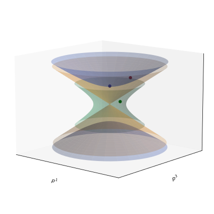
figures/sr-orbits.sage.
The rest momentum of a massive particle is fixed by rotations only. The first example checks this, which makes the spin of a massive particle an ordinary spin.
Example 115 (A particle at rest) For k = (m, 0, 0, 0), X(k) = m\cdot1 and AX(k)A^\dagger = mAA^\dagger, so G_k = \{A : AA^\dagger = 1\} = SU(2); its image is the rotation group SO(3) (Exercise 70). The spin of a massive particle is its behaviour under these rotations.
Veriphy. Pending.
Lean. Pending.
Sage. Pending.
A spacelike momentum has a non-compact little group. The second example identifies it as the Lorentz group of one lower dimension.
Example 116 (A spacelike momentum) For k = (0, 0, 0, \mu) the transformations fixing k act on the orthogonal complement, spanned by e_0, e_1, e_2 with the form \operatorname{diag}(1, -1, -1): the little group is SO^+(1, 2), the Lorentz group of three-dimensional Minkowski space. In SL(2, \mathbb{C}), X(k) = \mu\sigma_3 and G_k = \{A : A\sigma_3A^\dagger = \sigma_3\} = SU(1, 1), isomorphic to SL(2, \mathbb{R}).
Veriphy. Pending.
Lean. Pending.
Sage. Pending.
The zero momentum is fixed by everything. The third example notes what this means physically. It is the degenerate end of the classification.
Example 117 (Zero momentum) For k = 0 the little group is all of SL(2, \mathbb{C}), and a representation with zero momentum is a representation of the Lorentz group on which translations act trivially. The vacuum, invariant under everything, is the trivial one; the others are infinite-dimensional (Exercise 99) and describe no particle.
Veriphy. Pending.
Lean. Pending.
Sage. Pending.
The conjugacy statement of the definition is a special case of Definition 11 of Group theory. The first exercise proves it directly. Only the homomorphism property of \Lambda is needed.
Exercise 121 (Conjugate little groups) Show that G_{\Lambda(A)k} = AG_kA^{-1}.
B \in G_{\Lambda(A)k} iff \Lambda(B)\Lambda(A)k = \Lambda(A)k iff \Lambda(A^{-1}BA)k = k iff A^{-1}BA \in G_k, using that \Lambda is a homomorphism.
Veriphy. Pending.
Lean. Pending.
Sage. Pending.
The little group of the rest momentum in SO^+(1, 3) follows from Exercise 70 as well. The second exercise derives it from the polar decomposition instead.
Exercise 122 (The rest momentum and the polar decomposition) Show with Theorem 5 that \Lambda \in SO^+(1, 3) fixes e_0 if and only if its boost part is trivial.
\Lambda = BR with B = B_{\Lambda e_0}. If \Lambda e_0 = e_0, then B = B_{e_0} = 1 and \Lambda = R is a rotation. Conversely rotations fix e_0.
Veriphy. Pending.
Lean. Pending.
Sage. Pending.
The little group of a spacelike momentum contains boosts. The third exercise exhibits one and checks that it fixes k.
Exercise 123 (A boost that fixes a spacelike momentum) Show that the boosts along x and y and the rotations about z fix k = (0, 0, 0, \mu), and that they generate a three-dimensional group.
e^{\eta K_1} and e^{\eta K_2} act only on (t, x) and (t, y), and e^{\theta J_3} on (x, y); all leave z unchanged and k has only a z-component. The generators K_1, K_2, J_3 close: [K_1, K_2] = -J_3, [J_3, K_1] = K_2, [J_3, K_2] = -K_1, the Lie algebra \mathfrak{so}(1, 2) of dimension three.
Veriphy. Pending.
Lean. Pending.
Sage. Pending.
The orbits and the little groups of all standard momenta are collected in the proposition below. The massless case is the interesting one: its little group is not a rotation group but the group of motions of a Euclidean plane (Bekaert and Boulanger 2006, sec. 3.2).
Proposition 13 (Orbits and little groups) The orbits of SO^+(1, 3) on \mathbb{R}^4 are: the origin; for each m > 0 the two sheets p^2 = m^2, \pm p^0 > 0; the two half-cones p^2 = 0, \pm p^0 > 0; and for each \mu > 0 the hyperboloid p^2 = -\mu^2. The little groups in SL(2, \mathbb{C}) of the standard momenta are SU(2) for (m, 0, 0, 0); SU(1, 1) for (0, 0, 0, \mu); SL(2, \mathbb{C}) for 0; and for k = (\kappa, 0, 0, \kappa) G_k = \Bigl\{g(\phi, w) = \begin{pmatrix}e^{-i\phi/2} & e^{-i\phi/2}w \\ 0 & e^{i\phi/2}\end{pmatrix} : \phi \in \mathbb{R}/4\pi\mathbb{Z}, w \in \mathbb{C}\Bigr\}, \qquad g(\phi_1, w_1)g(\phi_2, w_2) = g(\phi_1 + \phi_2, e^{i\phi_2}w_1 + w_2) , a double cover of the Euclidean group ISO(2) of the plane \mathbb{C}, with Lie algebra spanned by J_3, E_1 = K_1 - J_2, E_2 = K_2 + J_1 and brackets [E_1, E_2] = 0, [J_3, E_1] = E_2, [J_3, E_2] = -E_1.
Proof. Orbits. Lorentz transformations preserve p^2, and orthochronous ones the sign of p^0 for p^2 \geq 0, p \neq 0 (Example 27). On each set, transitivity: a timelike p with p^0 > 0 is mB_ue_0 with u = p/m; a null p = (E, E\hat n) is R\,e^{\ln(E/\kappa)K_3}k with R a rotation taking \hat z to \hat n; a spacelike p is first boosted to p^0 = 0 (Proposition 3) and then rotated to (0, 0, 0, \mu); negative energies follow with -1. Little groups. By Equation 10, A \in G_k iff AX(k)A^\dagger = X(k). For X = m1 this is AA^\dagger = 1; for X = \mu\sigma_3, A\sigma_3A^\dagger = \sigma_3 with \det A = 1, which defines SU(1, 1). For k = (\kappa, 0, 0, \kappa), X(k) = \operatorname{diag}(2\kappa, 0); with A = \begin{pmatrix}a & b \\ c & d\end{pmatrix}, AX(k)A^\dagger = 2\kappa\begin{pmatrix}|a|^2 & a\bar c \\ c\bar a & |c|^2\end{pmatrix}, which equals X(k) iff |a| = 1 and c = 0; then d = 1/a, and writing a = e^{-i\phi/2}, b = e^{-i\phi/2}w gives g(\phi, w). The product is g(\phi_1, w_1)g(\phi_2, w_2) = \operatorname{diag}(e^{-i\phi_1/2}, e^{i\phi_1/2})N(w_1)\operatorname{diag}(e^{-i\phi_2/2}, e^{i\phi_2/2})N(w_2) with N(w) = \bigl(\begin{smallmatrix}1 & w \\ 0 & 1\end{smallmatrix}\bigr), and moving the diagonal matrix to the left conjugates N(w_1) into N(e^{i\phi_2}w_1). This is the law of rotations by \phi (mod 2\pi for the image, mod 4\pi upstairs) and translations by w of the plane. The Lie algebra: e^{-i\phi\sigma_3/2} covers e^{\phi J_3}, and N(w) covers e^{(\operatorname{Re}w)E_1 + (\operatorname{Im}w)E_2} by Example 87 and Exercise 95 (and its analogue for imaginary w); the brackets follow from Equation 9: [E_1, E_2] = [K_1, K_2] + [K_1, J_1] - [J_2, K_2] - [J_2, J_1] = -J_3 + 0 - 0 + J_3 = 0, [J_3, E_1] = K_2 + J_1 = E_2, [J_3, E_2] = -K_1 + J_2 = -E_1. \square
Veriphy. Pending.
Lean. Pending.
Sage. Pending.
The null rotations of the massless little group have a direct physical effect. The first example shows that they shift the polarisation vector of a light wave by a multiple of its wave vector, which is a gauge transformation.
Example 118 (Null rotations are gauge transformations) The null rotation of Example 87 sends e_1 to the second column of its matrix, (a, 1, 0, a) = e_1 + ak with k = (1, 0, 0, 1). A plane wave A^\mu = \epsilon^\mu e^{-ik\cdot x} with \epsilon = e_1 is mapped to one with \epsilon = e_1 + ak, and A^\mu \to A^\mu + ak^\mu e^{-ik\cdot x} = A^\mu + \partial^\mu(iae^{-ik\cdot x}) is a gauge transformation (Definition 8 of Classical field theory): the field strength is unchanged. This is why a massless vector particle has only two physical polarisations.
Veriphy. Pending.
Lean. Pending.
Sage. Pending.
The orbit of the electron is a mass shell. The second example describes the states of an electron in this language.
Example 119 (The states of an electron) An electron has momentum on the sheet p^2 = m_e^2, p^0 > 0, a copy of the hyperboloid of velocities of Exercise 44. Its little group SU(2) acts on the spin states |{\uparrow}\rangle, |{\downarrow}\rangle of the electron at rest; a state of momentum p is defined by applying the standard boost B_{p/m} to the rest states. The positron, with the same mass and spin, lives on the same orbit in a different representation of the internal symmetries.
Veriphy. Pending.
Lean. Pending.
Sage. Pending.
The composition law of the massless little group mixes rotations and translations as the Euclidean group of the plane does. The third example compares the two laws.
Example 120 (The Euclidean group of the plane) The map T_{(\phi, w)}(z) = e^{-i\phi}(z + w) of the complex plane, a translation by w followed by a rotation by -\phi, satisfies T_{(\phi_1, w_1)}\circ T_{(\phi_2, w_2)}(z) = e^{-i(\phi_1 + \phi_2)}(z + w_2 + e^{i\phi_2}w_1) = T_{(\phi_1 + \phi_2, e^{i\phi_2}w_1 + w_2)}(z): the law of Proposition 13. So g(\phi, w) \mapsto T_{(\phi, w)} is a homomorphism onto the Euclidean group of the plane, \mathbb{C} \rtimes U(1), with kernel \{g(0, 0), g(2\pi, 0)\} = \{1, -1\}: the little group is its double cover.
Veriphy. Pending.
Lean. Pending.
Sage. Pending.
The first exercise checks the massless little algebra with the 4 \times 4 matrices. The kernel computation also proves that the little algebra has dimension three.
Exercise 124 (The little algebra of a light-like momentum) With Sage, check that J_3, E_1 = K_1 - J_2 and E_2 = K_2 + J_1 annihilate k = (1, 0, 0, 1), that they satisfy the brackets of Proposition 13, and that no other independent element of \mathfrak{so}(1, 3) annihilates k.
The kernel of X \mapsto Xk on \mathfrak{so}(1, 3) is three-dimensional and spanned by the three generators:
eps = lambda i, j, k: sign(Permutation([i + 1, j + 1, k + 1]).signature()) if len({i, j, k}) == 3 else 0
J = [matrix(QQ, 4, 4, lambda a, b: -eps(i, a - 1, b - 1) if a > 0 and b > 0 else 0) for i in range(3)]
K = [matrix(QQ, 4, 4, lambda a, b: 1 if (a, b) in [(0, i + 1), (i + 1, 0)] else 0) for i in range(3)]
k = vector(QQ, [1, 0, 0, 1])
E1, E2, J3 = K[0] - J[1], K[1] + J[0], J[2]
print("J3 k, E1 k, E2 k:", J3*k, E1*k, E2*k)
br = lambda X, Y: X*Y - Y*X
print("[E1,E2] = 0:", br(E1, E2) == 0, " [J3,E1] = E2:", br(J3, E1) == E2, " [J3,E2] = -E1:", br(J3, E2) == -E1)
basis = J + K
A = matrix(QQ, [list(X*k) for X in basis]).transpose() # columns: X k for the six basis elements
print("dimension of the stabiliser algebra:", A.right_kernel().dimension())Output:
J3 k, E1 k, E2 k: (0, 0, 0, 0) (0, 0, 0, 0) (0, 0, 0, 0)
[E1,E2] = 0: True [J3,E1] = E2: True [J3,E2] = -E1: True
dimension of the stabiliser algebra: 3Veriphy. Pending.
Lean. Pending.
Sage. Pending.
Transitivity on the light cone uses a rotation and a boost along the standard direction. The second exercise constructs them for a given photon momentum.
Exercise 125 (Reaching any light-like momentum) Find \Lambda \in SO^+(1, 3) with \Lambda k = p for k = (1, 0, 0, 1) and p = (5, 3, 0, 4).
Boost along z by \ln5, which multiplies t + z by 5 and t - z by 1/5: k \mapsto (5, 0, 0, 5). Then rotate about y by \arctan(3/4), which takes \hat z to (3/5, 0, 4/5): (5, 0, 0, 5) \mapsto (5, 3, 0, 4):
K3 = matrix(SR, 4, 4); K3[0, 3] = K3[3, 0] = 1
Bz = (log(5)*K3).exp().simplify_full()
c, s = 4/5, 3/5
Ry = matrix(QQ, [[1, 0, 0, 0], [0, c, 0, s], [0, 0, 1, 0], [0, -s, 0, c]]) # exp(arctan(3/4) J2)
J2 = matrix(QQ, 4, 4); J2[1, 3] = 1; J2[3, 1] = -1
print("Ry = exp(arctan(3/4) J2):", (arctan(3/4)*J2.change_ring(SR)).exp().apply_map(lambda e: e.rectform().simplify_full()) == Ry)
L = Ry*Bz
print("boost along z by log 5:"); print(Bz)
print("Lambda k =", L*vector([1, 0, 0, 1]))Output:
Ry = exp(arctan(3/4) J2): True
boost along z by log 5:
[13/5 0 0 12/5]
[ 0 1 0 0]
[ 0 0 1 0]
[12/5 0 0 13/5]
Lambda k = (5, 3, 0, 4)Veriphy. Pending.
Lean. Pending.
Sage. Pending.
The massless little group has a three-dimensional orbit structure of its own. The third exercise shows that its rotation part is what remains when the translations act trivially.
Exercise 126 (Dividing out the translations) Show that the translations \{g(0, w)\} form a normal subgroup of G_k and that the quotient is U(1), with \phi defined modulo 4\pi. What are the one-dimensional unitary representations of G_k that are trivial on the translations?
g(\phi, w)g(0, w')g(\phi, w)^{-1} has angle \phi + 0 - \phi = 0, so it is a translation: the subgroup is normal, and g(\phi, w) \mapsto \phi is a homomorphism onto \mathbb{R}/4\pi\mathbb{Z} with this kernel. Its unitary characters are e^{-i\lambda\phi} with e^{-4\pi i\lambda} = 1, that is \lambda \in \tfrac12\mathbb{Z}: the helicities of Theorem 11.
Veriphy. Pending.
Lean. Pending.
Sage. Pending.
Wigner’s construction defines a representation of the whole group from a representation of the little group. A state of momentum p is obtained from a state of the standard momentum k by a chosen transformation A_p; any other transformation moves it to a state of momentum \Lambda p, up to a little-group transformation that acts on the internal label. The theorem below states the construction for wave functions on the orbit (Bekaert and Boulanger 2006, sec. 3.1, eqs. (9)-(13)).
Theorem 10 (Wigner’s induced representation) Let k = (m, 0, 0, 0) with m > 0 or k = (\kappa, 0, 0, \kappa), let \mathcal{O} be its orbit with the measure d\mu(p) = d^3p/(2p^0), let D be a unitary representation of G_k on a Hilbert space V, and choose for each p \in \mathcal{O} an A_p \in SL(2, \mathbb{C}) with \Lambda(A_p)k = p, depending measurably on p. On \mathcal{H} = L^2(\mathcal{O}, d\mu; V) define, for (A, a) in the double cover of the Poincaré group, with \Lambda = \Lambda(A), (U(A, a)\psi)(p) = e^{ip\cdot a}\,D\bigl(W(A, p)\bigr)\,\psi(\Lambda^{-1}p), \qquad W(A, p) = A_p^{-1}AA_{\Lambda^{-1}p} \in G_k . \tag{17} Then U is a unitary representation, the momentum operators act by multiplication, \hat P^\mu\psi(p) = p^\mu\psi(p), and \hat P^2 = k^2.
Proof. Little group: \Lambda(W(A, p))k = \Lambda(A_p)^{-1}\Lambda(A)\Lambda^{-1}p = \Lambda(A_p)^{-1}p = k. Homomorphism: for the Lorentz part, with q = \Lambda(A)^{-1}p, (U(A)U(B)\psi)(p) = D(A_p^{-1}AA_q)D(A_q^{-1}BA_{\Lambda(B)^{-1}q})\psi(\Lambda(B)^{-1}q) = D(A_p^{-1}ABA_{\Lambda(AB)^{-1}p})\psi(\Lambda(AB)^{-1}p) = (U(AB)\psi)(p), since D is a representation and the factors A_q cancel. For translations U(1, a) multiplies by e^{ip\cdot a}, so translations compose, and (U(A)U(1, a)U(A)^{-1}\psi)(p) = e^{i(\Lambda^{-1}p)\cdot a}\psi(p) = e^{ip\cdot(\Lambda a)}\psi(p), because the Minkowski product is invariant: U(A)U(1, a)U(A)^{-1} = U(1, \Lambda a), which with U(A, a) = U(1, a)U(A) is the semidirect product law of Definition 16. Unitarity: D is unitary and d\mu is invariant (Exercise 127), so \|U(A)\psi\|^2 = \int\|\psi(\Lambda^{-1}p)\|^2d\mu(p) = \int\|\psi(q)\|^2d\mu(\Lambda q) = \|\psi\|^2; U(A) is invertible with inverse U(A^{-1}). Momentum: U(1, a) = e^{ia_\mu\hat P^\mu} (Proposition 12) and U(1, a) multiplies by e^{ia_\mu p^\mu}. On \mathcal{O}, p^2 = k^2. \square
Veriphy. Pending.
Lean. Pending.
Sage. Pending.
For a spinless massive particle the little-group representation is trivial. The first example identifies the representation with positive-energy solutions of the Klein-Gordon equation.
Example 121 (Spin zero) With D = 1, (U(A, a)\psi)(p) = e^{ip\cdot a}\psi(\Lambda^{-1}p). The function \phi(x) = \int d\mu(p)\,\psi(p)e^{-ip\cdot x} satisfies (\Box + m^2)\phi = 0 and contains only positive frequencies; under U it transforms as a scalar field, \phi \mapsto \phi(\Lambda^{-1}(x - a)) (Definition 10). The quantum field of Quantisation in outline is built from such wave functions.
Veriphy. Pending.
Lean. Pending.
Sage. Pending.
For a massive particle with spin, the little-group element W(A, p) is a rotation, and for boosts it is the Wigner rotation of Theorem 8. The second example shows this, which is the reason for the name.
Example 122 (Spin and the Wigner rotation) Choose A_p to be the lift of the pure boost B_{p/m}. For a rotation A = R, W(R, p) = B_{p/m}^{-1}RB_{R^{-1}p/m} = R by Exercise 77: spin rotates as at rest. For a boost A covering B(\vec w), with q = \Lambda^{-1}p, W = B_{p/m}^{-1}B(\vec w)B_{q/m}, and since B(\vec w)B_{q/m} = B_{p/m}W(\vec w, \vec v_q) by Equation 11, W(A, p) is the Wigner rotation of the pair: a boosted electron has its spin turned by the Wigner angle.
Veriphy. Pending.
Lean. Pending.
Sage. Pending.
For massless particles the helicity representation of the little group is a phase. The third example writes the resulting transformation law.
Example 123 (Helicity states) With D(g(\phi, w)) = e^{-i\lambda\phi}, Equation 17 becomes (U(A)\psi)(p) = e^{-i\lambda\phi(A, p)}\psi(\Lambda^{-1}p), where \phi(A, p) is the angle of the little-group element W(A, p): a photon state is multiplied by a phase and moved to the new momentum, and its helicity \lambda never changes under Lorentz transformations. The null-rotation part of W drops out, which is the group-theoretical form of gauge invariance (Example 118).
Veriphy. Pending.
Lean. Pending.
Sage. Pending.
The invariance of the measure was used for unitarity. The first exercise proves it. The invariance of this measure is what makes the induced representations unitary.
Exercise 127 (The invariant measure) Show that d^3p/(2p^0) on p^2 = m^2, p^0 > 0 equals d^4p\,\delta(p^2 - m^2)\theta(p^0), and deduce its invariance. Check with Sage that the Jacobian of the map \vec p \mapsto \vec p' induced by a boost along x is p'^0/p^0.
Integrating \delta(p_0^2 - E^2) over p^0 > 0 with E = \sqrt{\vec p^2 + m^2} gives 1/(2E), so \int d^4p\,\delta(p^2 - m^2)\theta(p^0)f = \int\frac{d^3p}{2E}f. The left side is invariant, because d^4p is (|\det\Lambda| = 1), p^2 is, and orthochronous transformations keep p^0 > 0. The Jacobian computation confirms d^3p'/p'^0 = d^3p/p^0:
var('px py pz m v', domain='real')
g = 1/sqrt(1 - v^2); E = sqrt(px^2 + py^2 + pz^2 + m^2)
pxp = g*(px + v*E); Ep = g*(E + v*px)
Jac = matrix([[diff(f, q) for q in (px, py, pz)] for f in (pxp, py, pz)]).det()
print("Jacobian - E'/E simplifies to:", (Jac - Ep/E).simplify_full())Output:
Jacobian - E'/E simplifies to: 0Veriphy. Pending.
Lean. Pending.
Sage. Pending.
The second example claimed that the little-group element of a boost is a Wigner rotation. The second exercise checks this numerically.
Exercise 128 (The little-group element in numbers) For m = 1, p = (\cosh1, \sinh1, 0, 0) and the boost B(0.8\hat y), compute W = B_p^{-1}B(0.8\hat y)B_{q} with q = B(0.8\hat y)^{-1}p and compare its angle with Equation 12 for the pair (\vec v_q, 0.8\hat y).
W is a rotation about \hat z by the angle given by Equation 12 with \vec v_1 = \vec v_q and \vec v_2 = 0.8\hat y:
import numpy as np
eta = np.diag([1., -1, -1, -1])
def boost(v):
v = np.array(v, float); b = np.linalg.norm(v); g = 1/np.sqrt(1 - b*b); B = np.eye(4)
B[0, 0] = g; B[0, 1:] = g*v; B[1:, 0] = g*v
if b > 0: B[1:, 1:] += (g - 1)*np.outer(v, v)/b**2
return B
def angle_axis(R):
R3 = R[1:, 1:]; ang = np.arccos(np.clip((np.trace(R3) - 1)/2, -1, 1))
ax = np.array([R3[2, 1] - R3[1, 2], R3[0, 2] - R3[2, 0], R3[1, 0] - R3[0, 1]])
return ang, ax/np.linalg.norm(ax) if np.linalg.norm(ax) > 1e-14 else ax
p = np.array([np.cosh(1), np.sinh(1), 0, 0]); Bw = boost([0, 0.8, 0]); q = np.linalg.inv(Bw) @ p
vp, vq = p[1:]/p[0], q[1:]/q[0]
W = np.linalg.inv(boost(vp)) @ Bw @ boost(vq)
Om, ax = angle_axis(W)
x1, x2 = np.arctanh(np.linalg.norm(vq)), np.arctanh(0.8); n1, n2 = vq/np.linalg.norm(vq), np.array([0, 1., 0])
th = np.arccos(n1 @ n2)
print("W is a rotation:", np.allclose(W[:, 0], [1, 0, 0, 0]), " angle %.6f about" % Om, np.round(ax, 6))
print("Wigner formula: %.6f" % (2*np.arctan(np.sin(th)/(1/np.tanh(x1/2)/np.tanh(x2/2) + np.cos(th)))))Output:
W is a rotation: True angle 0.454147 about [0. 0. 1.]
Wigner formula: 0.454147Veriphy. Pending.
Lean. Pending.
Sage. Pending.
The choice of the standard transformations A_p is arbitrary. The third exercise shows that another choice gives an equivalent representation.
Exercise 129 (Changing the standard boosts) Let A'_p = A_ph(p) with h(p) \in G_k. Show that (V\psi)(p) = D(h(p))^{-1}\psi(p) intertwines the representations built with A_p and with A'_p.
W'(A, p) = h(p)^{-1}A_p^{-1}AA_{q}h(q) = h(p)^{-1}W(A, p)h(q) with q = \Lambda^{-1}p. Then (VU(A)\psi)(p) = D(h(p))^{-1}D(W(A, p))\psi(q) = D(W'(A, p))D(h(q))^{-1}\psi(q) = (U'(A)V\psi)(p); V is unitary because D is, so the two representations are unitarily equivalent.
Veriphy. Pending.
Lean. Pending.
Sage. Pending.
The construction turns each unitary representation of a little group into one of the Poincaré group. Wigner’s theorem lists the outcome. Its proof below establishes the little-group data and the values of the Casimir operators; that every unitary irreducible representation arises in this way, and that irreducible little-group representations give irreducible ones, is Mackey’s theory of induced representations, which we cite (Bekaert and Boulanger 2006, sec. 3.1).
Theorem 11 (Wigner’s classification) The unitary irreducible representations of the double cover of ISO^+(1, 3) with momenta on one orbit of Proposition 13 are, up to equivalence:
- Massive, p^2 = m^2 > 0, p^0 > 0: induced from the spin-s representation of SU(2), s \in \{0, \tfrac12, 1, \dots\}, with \hat P^2 = m^2, \hat W^2 = -m^2s(s + 1) and 2s + 1 states for each momentum.
- Massless with helicity, p^2 = 0, p^0 > 0: induced from D(g(\phi, w)) = e^{-i\lambda\phi}, \lambda \in \tfrac12\mathbb{Z}, with \hat P^2 = 0, \hat W = \lambda\hat P and one state for each momentum.
- Massless with continuous spin: induced from a representation in which the translations w act non-trivially; it is infinite-dimensional for each momentum, with \hat W^2 = -\rho^2 < 0.
- Tachyonic, p^2 < 0, little group SU(1, 1), and zero momentum, little group SL(2, \mathbb{C}): all non-trivial ones infinite-dimensional for each momentum.
The same list with p^0 < 0 completes the classification.
Proof. (1) SU(2) is compact, so its unitary irreducible representations are finite-dimensional, and they are the spin-s representations (Definition 22 of Lie groups and Lie algebras, with e^{-2\pi i\hat J_3} = (-1)^{2s} allowed since -1 \in SU(2)). The Casimir values were computed in Theorem 9. (2) If the normal subgroup of translations \{g(0, w)\} acts trivially, D is a representation of the quotient \mathbb{R}/4\pi\mathbb{Z} (Exercise 126), and its irreducible unitary representations are the characters e^{-i\lambda\phi}, \lambda \in \tfrac12\mathbb{Z}. On the standard states \hat J_3 = \lambda, because g(\phi, 0) covers the rotation e^{\phi J_3}, represented by e^{-i\phi\hat J_3}; the generators E_1, E_2 act as zero, so by Example 111 \hat W = \lambda k there, and by covariance \hat W = \lambda\hat P on the whole representation. (3) If the translations act non-trivially, the joint spectrum of the commuting Hermitian generators \hat E_1, \hat E_2 is invariant under the rotations generated by \hat J_3, so in an irreducible representation it is a circle of some radius r > 0, and square-integrable functions on a circle form an infinite-dimensional space; at the standard momentum \hat W^0 = \hat W^3 and \hat W^2 = -(\hat W_1^2 + \hat W_2^2) = -\kappa^2(\hat E_1^2 + \hat E_2^2) = -\kappa^2r^2 (Example 111), a negative constant -\rho^2. (4) SU(1, 1) and SL(2, \mathbb{C}) are non-compact simple groups, whose non-trivial unitary representations are infinite-dimensional (Bekaert and Boulanger 2006, sec. 1.3). \square
Veriphy. Pending.
Lean. Pending.
Sage. Pending.
The particles of the Standard Model fall into the first two classes. The first example places some of them. Each known particle occupies one entry of the classification.
Example 124 (Particles in the classification) The electron, the quarks and the W and Z bosons are massive with spins \tfrac12, \tfrac12, 1, 1; the Higgs boson has spin 0. The photon and the gluons are massless with helicities \pm1, each pair forming a parity doublet (Exercise 116); the graviton would have \pm2. No particle with continuous spin or tachyonic momentum has been observed.
Veriphy. Pending.
Lean. Pending.
Sage. Pending.
The classification counts the physical states of a field. The second example compares a massive and a massless vector field.
Example 125 (Counting polarisations) A vector field A^\mu has four components. A massive spin-one particle has 2s + 1 = 3 states: the condition \partial_\mu A^\mu = 0 removes the component along p. A massless one has 2 helicity states: besides the Lorenz condition, the null rotations of the little group remove one more, as gauge transformations (Example 118, Example 32 of Classical field theory). The jump from three to two states when m \to 0 is the reason a massive vector field is not simply a massless one with a mass term.
Veriphy. Pending.
Lean. Pending.
Sage. Pending.
The helicity of a massless particle is the limit of the spin component along the momentum of a massive one. The third example makes this precise for a fast particle.
Example 126 (From spin to helicity) For a massive particle of spin s moving along z, the operator \hat W^0/|\vec p| = \hat{\vec J}\cdot\hat p is the helicity, with eigenvalues -s, \dots, s. As m \to 0 at fixed |\vec p|, the states with helicity \pm s go over to the two massless helicity representations and the others decouple from the null-rotation-invariant states; a massless particle “remembers” only the extreme helicities.
Veriphy. Pending.
Lean. Pending.
Sage. Pending.
The first exercise computes the number of states for a few particles from the classification. The counts are the numbers of independent states that a field must describe.
Exercise 130 (Numbers of states) How many states of a given momentum have: a massive particle of spin \tfrac32; a massless particle of helicity \tfrac32 together with its parity partner; a Dirac electron together with its positron; a massless Weyl neutrino together with its antineutrino?
4; 2; 2 + 2 = 4, the four components of the Dirac spinor of Definition 4 of The Dirac equation; 1 + 1 = 2, helicity -\tfrac12 for the neutrino and +\tfrac12 for the antineutrino.
Veriphy. Pending.
Lean. Pending.
Sage. Pending.
Helicity is quantised in half-integers because the rotation by 4\pi is the identity in SL(2, \mathbb{C}). The second exercise asks why the same argument does not quantise it more finely.
Exercise 131 (Why half-integers) Show that D(g(\phi, 0)) = e^{-i\lambda\phi} is well defined on G_k if and only if \lambda \in \tfrac12\mathbb{Z}, and that \lambda \in \mathbb{Z} if the representation is to descend to ISO^+(1, 3) itself. In three spacetime dimensions the corresponding little group is \mathbb{R}; what changes?
g(\phi, 0) depends on \phi modulo 4\pi, so e^{-4\pi i\lambda} = 1, \lambda \in \tfrac12\mathbb{Z}. The element g(2\pi, 0) = -1 is the non-trivial element of the kernel of the covering; the representation descends to ISO^+(1, 3) iff it is trivial there, e^{-2\pi i\lambda} = 1, \lambda \in \mathbb{Z}. In three dimensions the rotation group SO(2) has the universal cover \mathbb{R}, so any real \lambda is allowed: fractional spin, the anyons of Bekaert and Boulanger (2006, App. B).
Veriphy. Pending.
Lean. Pending.
Sage. Pending.
The massive case of the classification can be tested on the Dirac field. The third exercise identifies the representation carried by the positive-energy solutions.
Exercise 132 (The Dirac equation as an induced representation) Show that the positive-energy plane-wave solutions u(p)e^{-ip\cdot x} of the Dirac equation, with u(p) = S(B_{p/m})u(k) for the two rest spinors u(k), carry the massive spin-\tfrac12 representation of the classification.
At rest the Dirac equation (\gamma^0m - m)u = 0 leaves a two-dimensional space of spinors, on which rotations act by the spin-\tfrac12 representation (the two blocks of Example 91 coincide for rotations). The solutions at momentum p are S(B_{p/m})u(k), the images under the standard boosts, and a Lorentz transformation S(\Lambda) maps u(p) to S(\Lambda)S(B_{p/m})u(k) = S(B_{\Lambda p/m})S(W)u(k) with W the Wigner rotation of Example 122, acting on the rest spinor by D^{(1/2)}(W): this is Equation 17 with D = D^{(1/2)} (Definition 4 of The Dirac equation).
Veriphy. Pending.
Lean. Pending.
Sage. Pending.
Exercises
The exercises below use several steps of this part together. The first is the spinor description of a light ray, which combines the double cover with null vectors (Blennow and Ohlsson 2022, Problem 1.35).
Exercise 133 (A light ray as a spinor) For a null vector x with x^0 + x^3 > 0, let u = N(x^0 + x^3, x^1 + ix^2)^T. Show that X(x) = uu^\dagger for N = (x^0 + x^3)^{-1/2}, and that for every A \in SL(2, \mathbb{C}), Au is (up to a phase) the spinor of \Lambda(A)x. Check for x = (5, 3, 0, 4) and the boost A = e^{-\theta\sigma_3/2} with \tanh\theta = 0.6, which is the passive boost along z of Blennow and Ohlsson.
uu^\dagger = N^2\begin{pmatrix}(x^0 + x^3)^2 & (x^0 + x^3)(x^1 - ix^2) \\ (x^0 + x^3)(x^1 + ix^2) & (x^1)^2 + (x^2)^2\end{pmatrix}, and with N^2 = 1/(x^0 + x^3) and (x^1)^2 + (x^2)^2 = (x^0)^2 - (x^3)^2 this is X(x). Then X(\Lambda(A)x) = AX(x)A^\dagger = Auu^\dagger A^\dagger = (Au)(Au)^\dagger, and a spinor is determined by uu^\dagger up to a phase:
import numpy as np
s = [np.eye(2), np.array([[0, 1], [1, 0]]), np.array([[0, -1j], [1j, 0]]), np.array([[1, 0], [0, -1]])]
X = lambda x: sum(x[m]*s[m] for m in range(4))
spinor = lambda x: np.array([x[0] + x[3], x[1] + 1j*x[2]])/np.sqrt(x[0] + x[3])
x = np.array([5., 3, 0, 4]); u = spinor(x)
print("u u^dagger = X(x):", np.allclose(np.outer(u, u.conj()), X(x)))
th = np.arctanh(0.6); A = np.diag([np.exp(-th/2), np.exp(th/2)])
Lam = np.array([[0.5*np.trace(s[m] @ A @ s[n] @ A.conj().T).real for n in range(4)] for m in range(4)])
xp = Lam @ x
print("Lambda(A) x =", np.round(xp, 6), " (passive boost along z with v = 0.6: t' =", 1.25*(5 - 0.6*4), ", z' =", 1.25*(4 - 0.6*5), ")")
print("A u equals the spinor of Lambda(A) x:", np.allclose(A @ u, spinor(xp)))Output:
u u^dagger = X(x): True
Lambda(A) x = [3.25 3. 0. 1.25] (passive boost along z with v = 0.6: t' = 3.25000000000000 , z' = 1.25000000000000 )
A u equals the spinor of Lambda(A) x: TrueVeriphy. Pending.
Lean. Pending.
Sage. Pending.
The second exercise takes a Lorentz matrix given only by its entries and extracts everything the part has defined: component, polar decomposition, generator and spinor lift. The matrix is given numerically, so that every quantity has to be recovered by the methods of this part.
Exercise 134 (Everything about one matrix) Let \Lambda = B(\vec v)R_{\hat n}(0.7)P with \vec v = (0.5, 0.2, 0.1) and \hat n = (0, 1, 1)/\sqrt2, given only as a numerical matrix. Find its component, write it as D\Lambda_+ with D \in \{1, P, T, PT\} and \Lambda_+ \in SO^+(1, 3), find the polar decomposition of \Lambda_+ and a lift A \in SL(2, \mathbb{C}) of \Lambda_+.
\det\Lambda = -1 and \Lambda^0{}_0 > 0, so \Lambda \in L^\uparrow_- and \Lambda_+ = \Lambda P (since P^2 = 1). The polar decomposition of \Lambda_+ recovers \vec v and the rotation by 0.7 about \hat n, and A = e^{\xi\hat v\cdot\vec\sigma/2}e^{-0.35i\,\hat n\cdot\vec\sigma}, with \xi = \operatorname{artanh}|\vec v|, covers \Lambda_+:
import numpy as np
eta = np.diag([1., -1, -1, -1])
def boost(v):
v = np.array(v, float); b = np.linalg.norm(v); g = 1/np.sqrt(1 - b*b); B = np.eye(4)
B[0, 0] = g; B[0, 1:] = g*v; B[1:, 0] = g*v
if b > 0: B[1:, 1:] += (g - 1)*np.outer(v, v)/b**2
return B
def angle_axis(R):
R3 = R[1:, 1:]; ang = np.arccos(np.clip((np.trace(R3) - 1)/2, -1, 1))
ax = np.array([R3[2, 1] - R3[1, 2], R3[0, 2] - R3[2, 0], R3[1, 0] - R3[0, 1]])
return ang, ax/np.linalg.norm(ax) if np.linalg.norm(ax) > 1e-14 else ax
from scipy.linalg import expm
n = np.array([0, 1, 1])/np.sqrt(2); Kn = np.array([[0, -n[2], n[1]], [n[2], 0, -n[0]], [-n[1], n[0], 0]])
R = np.eye(4); R[1:, 1:] = expm(0.7*Kn); P = np.diag([1., -1, -1, -1])
Lam = boost([0.5, 0.2, 0.1]) @ R @ P
print("in O(1,3):", np.allclose(Lam.T @ eta @ Lam, eta), " det = %.0f, Lambda00 = %.4f" % (np.linalg.det(Lam), Lam[0, 0]))
Lp = Lam @ P
u = Lp[:, 0]; v = u[1:]/u[0]; Rr = np.linalg.inv(boost(v)) @ Lp; ang, ax = angle_axis(Rr)
print("boost velocity:", np.round(v, 6), " rotation angle %.6f about" % ang, np.round(ax, 6))
s = [np.eye(2), np.array([[0, 1], [1, 0]]), np.array([[0, -1j], [1j, 0]]), np.array([[1, 0], [0, -1]])]
xi = np.arctanh(np.linalg.norm(v)); vh = v/np.linalg.norm(v)
A = expm(xi/2*sum(vh[i]*s[i + 1] for i in range(3))) @ expm(-0.5j*ang*sum(ax[i]*s[i + 1] for i in range(3)))
LamA = np.array([[0.5*np.trace(s[m] @ A @ s[k] @ A.conj().T).real for k in range(4)] for m in range(4)])
print("Lambda(A) equals Lambda P:", np.allclose(LamA, Lp), " det A = %.6f" % abs(np.linalg.det(A)))Output:
in O(1,3): True det = -1, Lambda00 = 1.1952
boost velocity: [0.5 0.2 0.1] rotation angle 0.700000 about [-0. 0.707107 0.707107]
Lambda(A) equals Lambda P: True det A = 1.000000Veriphy. Pending.
Lean. Pending.
Sage. Pending.
The third exercise follows the spin of an electron through two boosts, which combines the Wigner rotation, its lift to SU(2) and the induced representation. The answer is a measurable probability.
Exercise 135 (An electron boosted twice) An electron at rest has spin along +\hat x. It is boosted by 0.6\hat x and then by 0.7\hat y. Relative to the state obtained by the single pure boost to the final velocity, its spin is turned by the Wigner rotation. Find the direction of the spin and the probability of finding it along +\hat x in the rest frame reached by the single boost.
The Wigner rotation is by \Omega = 0.2706 about \hat z (Example 97), lifted to e^{-i\Omega\sigma_3/2}. The spin turns to (\cos\Omega, \sin\Omega, 0) and the probability of +\hat x is \cos^2\tfrac\Omega2 \approx 0.982:
import numpy as np
eta = np.diag([1., -1, -1, -1])
def boost(v):
v = np.array(v, float); b = np.linalg.norm(v); g = 1/np.sqrt(1 - b*b); B = np.eye(4)
B[0, 0] = g; B[0, 1:] = g*v; B[1:, 0] = g*v
if b > 0: B[1:, 1:] += (g - 1)*np.outer(v, v)/b**2
return B
def angle_axis(R):
R3 = R[1:, 1:]; ang = np.arccos(np.clip((np.trace(R3) - 1)/2, -1, 1))
ax = np.array([R3[2, 1] - R3[1, 2], R3[0, 2] - R3[2, 0], R3[1, 0] - R3[0, 1]])
return ang, ax/np.linalg.norm(ax) if np.linalg.norm(ax) > 1e-14 else ax
B1, B2 = boost([0.6, 0, 0]), boost([0, 0.7, 0]); U = B2 @ B1 @ np.array([1., 0, 0, 0])
W = np.linalg.inv(boost(U[1:]/U[0])) @ B2 @ B1; Om, ax = angle_axis(W)
s3 = np.diag([1, -1]); D = np.diag([np.exp(-0.5j*Om), np.exp(0.5j*Om)]) # exp(-i Omega sigma_3 / 2)
chi = np.array([1, 1])/np.sqrt(2) # spin along +x
chip = D @ chi
sx = np.array([[0, 1], [1, 0]]); sy = np.array([[0, -1j], [1j, 0]])
print("Omega = %.4f about" % Om, np.round(ax, 6))
print("spin direction after: (%.4f, %.4f, %.4f)" % ((chip.conj() @ sx @ chip).real, (chip.conj() @ sy @ chip).real, (chip.conj() @ s3 @ chip).real))
print("probability of +x: %.4f, cos^2(Omega/2) = %.4f" % (abs(chi.conj() @ chip)**2, np.cos(Om/2)**2))Output:
Omega = 0.2706 about [0. 0. 1.]
spin direction after: (0.9636, 0.2673, -0.0000)
probability of +x: 0.9818, cos^2(Omega/2) = 0.9818Veriphy. Pending.
Lean. Pending.
Sage. Pending.
Relativistic kinematics
The group theory of the previous part says how four-vectors transform; this part uses the four-vectors of a particle. Velocity and acceleration become four-vectors, energy and momentum combine into one, and their conservation in collisions and decays becomes a single vector equation whose invariant content is computed with Minkowski products. The results are the working tools of particle physics: invariant masses, decay momenta, thresholds and the Mandelstam variables. The examples and exercises follow Blennow and Ohlsson (2022, sec. 1.4 and 1.6), with masses from the particle-physics tables; units are c = 1 and energies in MeV unless stated.
Four-velocity and four-momentum
A worldline parametrised by its proper time has a tangent of unit length. This tangent is the relativistic velocity, and its derivative the relativistic acceleration; Figure 15 shows the mass shell on which the corresponding momenta lie.
Definition 19 (Four-velocity) The four-velocity of a massive worldline parametrised by proper time is u^\mu = dx^\mu/d\tau = \gamma(1, \vec v), with \gamma = dt/d\tau; it satisfies u\cdot u = 1. The four-acceleration is a^\mu = du^\mu/d\tau, and u\cdot a = 0 (Exercise 136).
Veriphy. Pending.
Lean. Pending.
Sage. Pending.
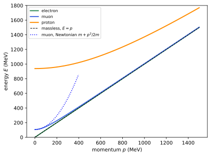
figures/sr-mass-shell.sage.
For uniform motion the four-velocity is constant. The first example writes it and checks its normalisation in two frames. The numbers are those of the boost of Example 7.
Example 127 (Uniform motion) A particle moving with \vec v = (0.6, 0, 0) has u = (1.25, 0.75, 0, 0) and u\cdot u = 1.5625 - 0.5625 = 1. In its rest frame u = (1, 0, 0, 0); the four-velocity is the unit vector along the worldline, the time axis e'_0 of the rest frame (Example 22).
Veriphy. Pending.
Lean. Pending.
Sage. Pending.
A particle in circular motion has a constant speed but not a constant four-velocity. The second example computes its four-acceleration, which is spacelike and points to the centre (Blennow and Ohlsson 2022, Problem 1.51).
Example 128 (Circular motion) For \vec x = r(\cos\omega t, \sin\omega t, 0) with v = r\omega < 1, u = \gamma(1, -v\sin\omega t, v\cos\omega t, 0) and, since \gamma is constant, a = \gamma\,du/dt = -\gamma^2r\omega^2(0, \cos\omega t, \sin\omega t, 0). So a\cdot a = -\gamma^4r^2\omega^4: the proper acceleration, the acceleration felt by the particle, is \gamma^2v^2/r, larger than the coordinate value v^2/r by \gamma^2 (Definition 25).
Veriphy. Pending.
Lean. Pending.
Sage. Pending.
The Minkowski product of two four-velocities is a Lorentz factor. The third example records this, used in Exercise 19, as the general way to compute relative speeds (Blennow and Ohlsson 2022, Problem 1.44).
Example 129 (Relative speed from four-velocities) For two observers u_1\cdot u_2 = \gamma_{\mathrm{rel}}, the Lorentz factor of either in the rest frame of the other, so v_{\mathrm{rel}} = \sqrt{1 - (u_1\cdot u_2)^{-2}}. For u_1 = (1.25, 0.75, 0, 0) and u_2 = (1.25, -0.75, 0, 0), u_1\cdot u_2 = 1.5625 + 0.5625 = 2.125 and v_{\mathrm{rel}} = \sqrt{1 - 1/2.125^2} = 0.882, which is 0.6 \oplus 0.6 = 1.2/1.36.
Veriphy. Pending.
Lean. Pending.
Sage. Pending.
The orthogonality of four-velocity and four-acceleration follows from the normalisation. The first exercise proves it (Blennow and Ohlsson 2022, Problem 1.45). The proof is one line, and its consequence is used repeatedly.
Exercise 136 (Velocity and acceleration are orthogonal) Show that u\cdot a = 0, and conclude that a non-zero four-acceleration is spacelike.
Differentiating u\cdot u = 1 gives 2u\cdot a = 0. A non-zero vector orthogonal to the timelike u is spacelike (Proposition 5). In the instantaneous rest frame u = (1, \vec 0), so a = (0, \vec a_0): the four-acceleration is the acceleration measured in that frame.
Veriphy. Pending.
Lean. Pending.
Sage. Pending.
The four-velocity and four-acceleration of a given worldline are computed by the chain rule. The second exercise does it for the worldline of Example 32.
Exercise 137 (Four-acceleration on an accelerated path) For x = \tfrac32at^2, y = 2at^2, compute a^\mu = \gamma\,d(\gamma(1, \vec v))/dt, and check u\cdot a = 0 and that -a\cdot a diverges as t \to 1/(5a).
With s = 5at, \gamma = (1 - s^2)^{-1/2} and d\gamma/dt = 5a\gamma^3s, one finds a^\mu = 5a\gamma^4\bigl(s, \tfrac35, \tfrac45, 0\bigr) and -a\cdot a = 25a^2\gamma^6, which diverges as s \to 1:
var('a t', domain='positive')
g = 1/sqrt(1 - 25*a^2*t^2)
u = vector([g, g*3*a*t, g*4*a*t, 0])
A = (g*diff(u, t)).simplify_full()
eta = diagonal_matrix([1, -1, -1, -1])
print("a^mu =", A)
print("a^mu / (5 a gamma^4 (5 a t, 3/5, 4/5, 0)) =", [(A[i]/(5*a*g^4*c)).simplify_full() if c != 0 else A[i] for i, c in enumerate([5*a*t, 3/5, 4/5, 0])])
print("u.a =", (u*eta*A).simplify_full(), " -a.a =", (-(A*eta*A)).simplify_full().factor())Output:
a^mu = (25*a^2*t/(625*a^4*t^4 - 50*a^2*t^2 + 1), 3*a/(625*a^4*t^4 - 50*a^2*t^2 + 1), 4*a/(625*a^4*t^4 - 50*a^2*t^2 + 1), 0)
a^mu / (5 a gamma^4 (5 a t, 3/5, 4/5, 0)) = [1, 1, 1, 0]
u.a = 0 -a.a = -25*a^2/((5*a*t + 1)^3*(5*a*t - 1)^3)Veriphy. Pending.
Lean. Pending.
Sage. Pending.
The Lorentz factor of an object in another frame can be computed without composing velocities. The third exercise does so (Blennow and Ohlsson 2022, Problem 1.44).
Exercise 138 (A Lorentz factor in a moving frame) An object has velocity \vec u in S, and S' moves with velocity -v'\hat x relative to S. Using Example 129, find the Lorentz factor of the object in S'.
The four-velocity of S' in S is \gamma'(1, -v', 0, 0), so \gamma_{S'} = u_{\mathrm{obj}}\cdot u_{S'} = \gamma(u)\gamma'(1 + u_xv'). For \vec u = (0.6, 0, 0) and v' = 0.6: 1.25 \cdot 1.25 \cdot 1.36 = 2.125.
Veriphy. Pending.
Lean. Pending.
Sage. Pending.
The four-velocity times the mass is the quantity conserved in collisions. Its time component is the energy, including the rest energy, and its spatial part the relativistic momentum.
Definition 20 (Four-momentum) The four-momentum of a particle of mass m > 0 is p^\mu = mu^\mu = (E, \vec p) with energy E = \gamma m and momentum \vec p = \gamma m\vec v. It satisfies p\cdot p = E^2 - |\vec p|^2 = m^2, \qquad \vec v = \vec p/E , \tag{18} the mass shell. A massless particle has a null four-momentum, E = |\vec p|, and moves at the speed of light. The kinetic energy is E - m.
Veriphy. Pending.
Lean. Pending.
Sage. Pending.
The Newtonian kinetic energy is the first correction to the rest energy. The first example expands the energy in the velocity.
Example 130 (The Newtonian limit of the energy) E = m(1 - v^2)^{-1/2} = m + \tfrac12mv^2 + \tfrac38mv^4 + \dots, so the kinetic energy is \tfrac12mv^2 to leading order; for an electron at v = 0.1 the next term is 0.75\% of the first. The rest energy m = mc^2 of one kilogram is 9 \times 10^{16}\,J, the energy that nuclear binding releases a small fraction of (Boskoff and Capozziello 2024, Theorem 9.2.14).
Veriphy. Pending.
Lean. Pending.
Sage. Pending.
The energy measured by an observer is a Minkowski product. The second example states the rule, which removes the need to transform the four-momentum (Blennow and Ohlsson 2022, Problem 1.55).
Example 131 (The energy an observer measures) An observer with four-velocity u_{\mathrm{obs}} measures the energy E_{\mathrm{obs}} = p\cdot u_{\mathrm{obs}}, since in her rest frame u_{\mathrm{obs}} = e_0. For p = (E, p_x, 0, 0) and an observer moving with v along x: E_{\mathrm{obs}} = \gamma(E - vp_x), the time component of the boosted four-momentum.
Veriphy. Pending.
Lean. Pending.
Sage. Pending.
A photon has energy and momentum but no rest frame. The third example shows that a system of photons nevertheless can have one, and a mass (Blennow and Ohlsson 2022, Problem 1.4).
Example 132 (Photons and rest frames) A single photon has p\cdot p = 0 and no rest frame: there is no observer for whom its momentum vanishes, since E = |\vec p| in every frame. Two photons with momenta (\omega_1, \omega_1\hat n_1), (\omega_2, \omega_2\hat n_2) have total P with P\cdot P = 2\omega_1\omega_2(1 - \hat n_1\cdot\hat n_2) > 0 unless \hat n_1 = \hat n_2: then P is timelike and its rest frame, the centre-of-momentum frame, exists.
Veriphy. Pending.
Lean. Pending.
Sage. Pending.
Massive neutrinos from a supernova arrive later than light. The first exercise computes the delay (Blennow and Ohlsson 2022, Problem 1.110). The tiny delay is still the best kinematic bound on neutrino masses from a supernova.
Exercise 139 (Neutrinos from a supernova) Neutrinos of energy E and mass m travel a distance L. Find the delay relative to light exactly and for m \ll E, and evaluate it for L = 50\,kpc, E = 10\,MeV, m = 0.1\,eV.
v = |\vec p|/E = \sqrt{1 - m^2/E^2}, so \Delta t = L(1/v - 1) \approx Lm^2/(2E^2). With L = 1.54 \times 10^{21}\,m, L/c = 5.1 \times 10^{12}\,s and m^2/(2E^2) = 5 \times 10^{-17}: \Delta t \approx 2.6 \times 10^{-4}\,s, well below the ten-second duration of the burst:
R = RealField(100)
L = R(50)*R(3.0857e19); c = R(299792458); E = R(10e6); m = R('0.1') # metres, eV
v = sqrt(1 - (m/E)^2)
print("exact delay L/c (1/v - 1) = %.4e s" % (L/c*(1/v - 1)))
print("approximate L/c m^2/(2E^2) = %.4e s" % (L/c*m^2/(2*E^2)))Output:
exact delay L/c (1/v - 1) = 2.5732e-04 s
approximate L/c m^2/(2E^2) = 2.5732e-04 sVeriphy. Pending.
Lean. Pending.
Sage. Pending.
The energy of a particle in an observer’s frame needs only the invariant product of Example 131. The second exercise applies it to find also the velocity component (Blennow and Ohlsson 2022, Problem 1.55).
Exercise 140 (Energy and velocity seen by a moving observer) A particle has p = (E, \vec p) in S. An observer moves with v along x. Find the energy she measures and the x'-component of the particle’s velocity in her frame.
E' = \gamma(E - vp_x) and p'_x = \gamma(p_x - vE), so v'_x = p'_x/E' = (p_x - vE)/(E - vp_x) = (v_x - v)/(1 - vv_x) with v_x = p_x/E: the composition law of Proposition 4, recovered from the transformation of four-momentum.
Veriphy. Pending.
Lean. Pending.
Sage. Pending.
The energy-momentum relation gives momenta from energies without velocities. The third exercise uses it in a decay chain of cosmic rays (Blennow and Ohlsson 2022, Problem 1.14).
Exercise 141 (Muons that reach the ground) Muons (mass 106\,MeV, proper lifetime 2.2\,\mus) are produced at 10\,km. What energy must they have so that their mean decay length \gamma v\tau_0c equals 10\,km?
\gamma v = |\vec p|/m, so the condition is |\vec p| = m\cdot10\,\mathrm{km}/(c\tau_0) = 106 \cdot 10^4/659.6\,MeV \approx 1.61\,GeV, and E = \sqrt{p^2 + m^2} \approx 1.61\,GeV: muons above about 1.6\,GeV typically survive the descent.
Veriphy. Pending.
Lean. Pending.
Sage. Pending.
Collisions and decays
In every collision and decay the total four-momentum is conserved. Its square is the same in every frame and equals the squared energy in the frame where the total momentum vanishes; this one number decides which reactions are possible. Figure 16 shows how a two-body decay looks in the laboratory.
Definition 21 (Invariant mass) The invariant mass of a system of particles with four-momenta p_1, \dots, p_n is M with M^2 = P\cdot P, P = \sum_ip_i. When P is timelike, the centre-of-momentum frame is the frame in which \vec P = 0, and there P = (M, \vec 0): the invariant mass is the total energy in that frame. Conservation of four-momentum, \sum p_{\mathrm{in}} = \sum p_{\mathrm{out}}, implies that the invariant mass is the same before and after a reaction.
Veriphy. Pending.
Lean. Pending.
Sage. Pending.
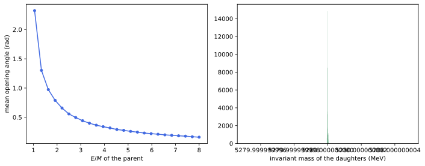
figures/sr-decay.sage.
Two photons that come from one particle carry its mass in their invariant mass. The first example computes it from the energies and the angle (Blennow and Ohlsson 2022, Problem 1.102).
Example 133 (The mass of a diphoton) For p_1 = \omega_1(1, 1, 0, 0) and p_2 = \omega_2(1, \cos\theta, \sin\theta, 0), M^2 = 2p_1\cdot p_2 = 2\omega_1\omega_2(1 - \cos\theta). The Higgs boson was discovered in this channel: two photons of 62.5\,GeV emitted back to back give M = 125\,GeV.
Veriphy. Pending.
Lean. Pending.
Sage. Pending.
Invariant masses forbid some reactions outright. The second example shows that an electron and a positron cannot become a single photon (Blennow and Ohlsson 2022, Problem 1.73).
Example 134 (No annihilation into one photon) (p_{e^-} + p_{e^+})^2 = 2m_e^2 + 2p_{e^-}\cdot p_{e^+} \geq 4m_e^2 > 0 by the reverse Cauchy-Schwarz inequality, while a photon has k\cdot k = 0: e^+e^- \to \gamma is impossible. For the same reason a free electron cannot emit a single photon, since (p - k)^2 = m^2 would require p\cdot k = 0, impossible for future-directed p timelike and k null and non-zero. Two photons, e^+e^- \to \gamma\gamma, are allowed.
Veriphy. Pending.
Lean. Pending.
Sage. Pending.
When two particles merge, the mass of the product depends on their relative velocity only. The third example derives the formula (Blennow and Ohlsson 2022, Problem 1.77).
Example 135 (Two particles merge) m^2 = (p_1 + p_2)^2 = m_1^2 + m_2^2 + 2m_1m_2\,u_1\cdot u_2 = m_1^2 + m_2^2 + 2m_1m_2\gamma_{\mathrm{rel}} (Example 129). Since \gamma_{\mathrm{rel}} \geq 1, m \geq m_1 + m_2: kinetic energy becomes rest energy. Two 1\,kg lumps of putty colliding at v_{\mathrm{rel}} = 0.6 make a lump of \sqrt{2 + 2 \cdot 1.25}\,kg = 2.12\,kg.
Veriphy. Pending.
Lean. Pending.
Sage. Pending.
A resonance shows up as a peak in the invariant mass of its decay products. The first exercise reconstructs one from two muons (Blennow and Ohlsson 2022, Problem 1.82).
Exercise 142 (A resonance in two muons) Two muons (mass 106\,MeV) are detected with momenta 2.2\,GeV each, at 45° on either side of the beam axis. What is the mass of the parent?
The opening angle is 90°, so M^2 = 2m^2 + 2(E^2 - |\vec p|^2\cos90°) = 4m^2 + 2|\vec p|^2, and M \approx 3.12\,GeV, close to the J/\psi mass 3.097\,GeV:
m = 105.66; p = 2200.0; E = sqrt(p^2 + m^2)
P1 = vector([E, p/sqrt(2.), p/sqrt(2.), 0]); P2 = vector([E, p/sqrt(2.), -p/sqrt(2.), 0])
eta = diagonal_matrix([1, -1, -1, -1]); P = P1 + P2
print("M = %.1f MeV (formula sqrt(4 m^2 + 2 p^2) = %.1f MeV)" % (sqrt(P*eta*P), sqrt(4*m^2 + 2*p^2)))Output:
M = 3118.4 MeV (formula sqrt(4 m^2 + 2 p^2) = 3118.4 MeV)Veriphy. Pending.
Lean. Pending.
Sage. Pending.
Pair annihilation in flight produces photons at angles fixed by the energy. The second exercise computes them (Blennow and Ohlsson 2022, Problem 1.84).
Exercise 143 (Annihilation in flight) An electron of total energy E hits a positron at rest and they annihilate into two photons at angles \pm\phi to the electron’s direction. Show that the photons have equal energies \tfrac12(E + m) and that \cos\phi = |\vec p|/(E + m) = \sqrt{(E - m)/(E + m)}, which tends to v/2 for slow electrons.
Momentum along the beam: |\vec p| = 2\omega\cos\phi; across it the photon momenta cancel; energy: E + m = 2\omega. So \cos\phi = |\vec p|/(E + m) = \sqrt{(E - m)/(E + m)}, using |\vec p|^2 = (E - m)(E + m). For v \ll 1, |\vec p| \approx mv and E + m \approx 2m, so \cos\phi \approx v/2: the photons come out almost back to back.
Veriphy. Pending.
Lean. Pending.
Sage. Pending.
In a bubble chamber a neutral particle leaves no track, but its mass follows from the charged ones. The third exercise reconstructs it (Blennow and Ohlsson 2022, Problem 1.133 b).
Exercise 144 (A missing mass) In the decay \Sigma^- \to \pi^- + X^0, the \Sigma^- (mass 1197.4\,MeV) has momentum p_\Sigma and the \pi^- (mass 139.6\,MeV) momentum p_\pi, at an angle \theta. Show that m_X^2 = m_\Sigma^2 + m_\pi^2 - 2(E_\Sigma E_\pi - p_\Sigma p_\pi\cos\theta), and evaluate it for p_\Sigma = 500\,MeV, p_\pi = 264\,MeV, \theta = 39°.
p_X = p_\Sigma - p_\pi and m_X^2 = (p_\Sigma - p_\pi)^2 gives the formula. The numbers give m_X \approx 940\,MeV, a neutron:
mS, mpi, mn = 1197.45, 139.57, 939.57
pS = 500.0; ES = sqrt(pS^2 + mS^2); g, gv = ES/mS, pS/mS
q = sqrt((mS^2 - (mpi + mn)^2)*(mS^2 - (mn - mpi)^2))/(2*mS); Eq = sqrt(q^2 + mpi^2)
c = cos(60*pi.n()/180); s_ = sin(60*pi.n()/180) # rest-frame emission angle 60 degrees
pz, px = g*q*c + gv*Eq, q*s_
ppi, th = sqrt(pz^2 + px^2), arctan2(px, pz)*180/pi.n()
print("pion momentum %.1f MeV at %.1f degrees to the Sigma" % (ppi, th))
ppi, th = round(ppi), round(th)
Epi = sqrt(ppi^2 + mpi^2)
mX2 = mS^2 + mpi^2 - 2*(ES*Epi - pS*ppi*cos(th*pi.n()/180))
print("with the rounded values %d MeV and %d degrees: m_X = %.1f MeV" % (ppi, th, sqrt(mX2)))Output:
pion momentum 263.9 MeV at 39.3 degrees to the Sigma
with the rounded values 264 MeV and 39 degrees: m_X = 940.0 MeVVeriphy. Pending.
Lean. Pending.
Sage. Pending.
In the rest frame of a decaying particle the daughters of a two-body decay have fixed energies and momenta. The proposition below gives them in terms of the masses alone, with the triangle function \lambda(a, b, c) = a^2 + b^2 + c^2 - 2ab - 2bc - 2ca.
Proposition 14 (Two-body decay) In the rest frame of a particle of mass M decaying into particles of masses m_1, m_2 with M > m_1 + m_2, E_1 = \frac{M^2 + m_1^2 - m_2^2}{2M}, \qquad E_2 = \frac{M^2 + m_2^2 - m_1^2}{2M}, \qquad |\vec p_1| = |\vec p_2| = \frac{\lambda^{1/2}(M^2, m_1^2, m_2^2)}{2M} , with the directions opposite and otherwise arbitrary.
Proof. P = (M, \vec 0) = p_1 + p_2, so \vec p_1 = -\vec p_2. From p_2 = P - p_1, m_2^2 = M^2 - 2P\cdot p_1 + m_1^2 = M^2 - 2ME_1 + m_1^2, which gives E_1, and E_2 = M - E_1. Then |\vec p_1|^2 = E_1^2 - m_1^2 = \frac{(M^2 + m_1^2 - m_2^2)^2 - 4M^2m_1^2}{4M^2} = \frac{\lambda(M^2, m_1^2, m_2^2)}{4M^2}. \square
Veriphy. Pending.
Lean. Pending.
Sage. Pending.
The pion decay is the textbook case and produces the cosmic-ray muons. The first example evaluates the formulas (Blennow and Ohlsson 2022, Problem 1.80).
Example 136 (\pi^+ \to \mu^+\nu_\mu) With m_\pi = 139.57\,MeV, m_\mu = 105.66\,MeV and a massless neutrino, |\vec p| = (m_\pi^2 - m_\mu^2)/(2m_\pi) = 29.79\,MeV and the muon’s kinetic energy is E_\mu - m_\mu = (m_\pi - m_\mu)^2/(2m_\pi) = 4.12\,MeV. The muon is slow, v = p/E \approx 0.27, and travels on average \gamma v c\tau_\mu \approx 186\,m before it decays.
Veriphy. Pending.
Lean. Pending.
Sage. Pending.
The formula is symmetric under exchanging the daughters, and the momentum vanishes at threshold. The second example checks the threshold behaviour of the triangle function.
Example 137 (At threshold) \lambda(M^2, m_1^2, m_2^2) = (M^2 - (m_1 + m_2)^2)(M^2 - (m_1 - m_2)^2), so the momentum vanishes when M = m_1 + m_2 and the daughters are at rest; for M < m_1 + m_2 the decay is forbidden. The neutron, with M - m_p - m_e = 0.78\,MeV, decays into three bodies precisely because the two-body channel n \to p\,e would violate angular momentum, not energy.
Veriphy. Pending.
Lean. Pending.
Sage. Pending.
The momentum of one daughter can also be measured in the rest frame of the other. The third example computes it with invariants (Blennow and Ohlsson 2022, Problem 1.74).
Example 138 (One daughter seen from the other) In the rest frame of daughter 2, E_1 = p_1\cdot p_2/m_2 = (M^2 - m_1^2 - m_2^2)/(2m_2), so |\vec p_1| = \lambda^{1/2}(M^2, m_1^2, m_2^2)/(2m_2): the same triangle function, with m_2 in place of M. For the pion decay, in the rest frame of the muon the neutrino has energy (m_\pi^2 - m_\mu^2)/(2m_\mu) = 39.4\,MeV.
Veriphy. Pending.
Lean. Pending.
Sage. Pending.
In the laboratory the decay products of a moving particle are boosted. The first exercise finds the energy of a muon emitted at right angles (Blennow and Ohlsson 2022, Problem 1.78).
Exercise 145 (A muon at right angles) A pion of energy E_\pi moving along x decays into a muon and a massless neutrino, and the muon moves perpendicular to x in the laboratory. Find its energy.
The neutrino carries all the x-momentum: k = (\omega, p_\pi, -q, 0) with \omega = \sqrt{p_\pi^2 + q^2}, and the muon (E_\mu, 0, q, 0). From p_\mu = p_\pi - k, m_\mu^2 = m_\pi^2 - 2p_\pi\cdot k = m_\pi^2 - 2(E_\pi\omega - p_\pi^2), so \omega = (m_\pi^2 - m_\mu^2 + 2p_\pi^2)/(2E_\pi) and E_\mu = E_\pi - \omega = (m_\pi^2 + m_\mu^2)/(2E_\pi), a neat result that decreases with the pion energy.
Veriphy. Pending.
Lean. Pending.
Sage. Pending.
A fast parent throws its daughters forward into a narrow cone. The second exercise simulates this with random isotropic decays, as in Figure 16.
Exercise 146 (The opening angle of fast decays) Write a Sage function that decays a particle of four-momentum P isotropically into masses m_1, m_2 in its rest frame and boosts the daughters back. For B^0 \to J/\psi\,K^{*0} check that (p_1 + p_2)^2 = M^2 for every event and compute the mean opening angle for E/M = 1.5 and 5.
The invariant mass is reproduced to machine precision; the mean opening angle falls from about 1.1\,rad at E/M = 1.5 to about 0.26\,rad at E/M = 5, roughly in proportion to 1/\gamma for large \gamma:
import numpy as np
rng = np.random.default_rng(int(2))
M, m1, m2 = 5280.0, 3097.0, 892.0
eta = np.diag([1., -1, -1, -1])
def boost(v):
b = np.linalg.norm(v); g = 1/np.sqrt(1 - b*b); B = np.eye(4)
B[0, 0] = g; B[0, 1:] = g*v; B[1:, 0] = g*v
if b > 0: B[1:, 1:] += (g - 1)*np.outer(v, v)/b**2
return B
def decay(P):
Mp = np.sqrt(P @ eta @ P); E1 = (Mp**2 + m1**2 - m2**2)/(2*Mp); q = np.sqrt(E1**2 - m1**2)
c = rng.uniform(-1, 1); ph = rng.uniform(0, 2*np.pi); n = np.array([np.sqrt(1 - c*c)*np.cos(ph), np.sqrt(1 - c*c)*np.sin(ph), c])
p1 = np.concatenate([[E1], q*n]); p2 = np.concatenate([[Mp - E1], -q*n])
B = boost(P[1:]/P[0]); return B @ p1, B @ p2
for ratio in [1.5, 5.0]:
E = ratio*M; P = np.array([E, 0, 0, np.sqrt(E**2 - M**2)])
angs, dev = [], 0
for _ in range(4000):
a, b = decay(P); dev = max(dev, abs(np.sqrt((a + b) @ eta @ (a + b)) - M))
angs.append(np.arccos(a[1:] @ b[1:]/np.linalg.norm(a[1:])/np.linalg.norm(b[1:])))
print("E/M = %.1f: mean opening angle %.3f rad, 2/gamma = %.3f, max |m(p1+p2) - M| = %.1e MeV" % (ratio, np.mean(angs), 2/ratio, dev))Output:
E/M = 1.5: mean opening angle 1.105 rad, 2/gamma = 1.333, max |m(p1+p2) - M| = 9.1e-13 MeV
E/M = 5.0: mean opening angle 0.263 rad, 2/gamma = 0.400, max |m(p1+p2) - M| = 1.9e-11 MeVVeriphy. Pending.
Lean. Pending.
Sage. Pending.
In a three-body decay the energies are not fixed, but their maximum is. The third exercise finds the largest energy of the electron neutrino in muon decay (Blennow and Ohlsson 2022, Problem 1.99).
Exercise 147 (The most energetic neutrino) In \mu^+ \to e^+\nu_e\bar\nu_\mu at rest, show that E_{\nu_e} is largest when the invariant mass of the pair e^+\bar\nu_\mu is smallest, and that its supremum is (m_\mu^2 - m_e^2)/(2m_\mu).
Treat e^+\bar\nu_\mu as one system of invariant mass m_{23}; the two-body formula of Proposition 14 gives E_{\nu_e} = (m_\mu^2 - m_{23}^2)/(2m_\mu), decreasing in m_{23}. Since m_{23}^2 = m_e^2 + 2p_e\cdot p_{\bar\nu} \geq m_e^2, with p_e\cdot p_{\bar\nu} \to 0 only as the antineutrino energy goes to zero (or, for a massless positron, when the two move together), the supremum is (m_\mu^2 - m_e^2)/(2m_\mu) = 52.83\,MeV, essentially m_\mu/2.
Veriphy. Pending.
Lean. Pending.
Sage. Pending.
To create new particles, a collision must supply their rest energy in the centre-of-momentum frame. When the target is at rest much of the beam energy is wasted on the motion of the products, and the threshold follows from the invariant mass.
Proposition 15 (Threshold of a reaction) For a reaction a + b \to c_1 + \dots + c_n with b at rest, the smallest kinetic energy of a for which the reaction is possible is T_a^{\mathrm{th}} = \frac{(\sum_im_{c_i})^2 - (m_a + m_b)^2}{2m_b} .
Proof. The invariant mass s = (p_a + p_b)^2 = m_a^2 + m_b^2 + 2m_bE_a is conserved, and in the centre-of-momentum frame of the products their total energy is at least \sum m_{c_i}, with equality when all of them are at rest there. So the reaction is possible iff s \geq (\sum m_{c_i})^2, that is E_a \geq ((\sum m_{c_i})^2 - m_a^2 - m_b^2)/(2m_b), and T_a = E_a - m_a gives the formula. \square
Veriphy. Pending.
Lean. Pending.
Sage. Pending.
The antiproton was discovered at the Bevatron, built for the threshold computed in the first example (Blennow and Ohlsson 2022, Problem 1.103). The number decided the energy of the machine.
Example 139 (Making antiprotons) For p + p \to p + p + p + \bar p on a proton at rest, T^{\mathrm{th}} = ((4m)^2 - (2m)^2)/(2m) = 6m = 5.63\,GeV. A beam of 8\,GeV is enough. In a collider with two beams of equal energy the threshold is only m of kinetic energy per beam: fixed targets waste energy.
Veriphy. Pending.
Lean. Pending.
Sage. Pending.
Pion beams on protons produce more pions. The second example evaluates a threshold with unequal masses (Blennow and Ohlsson 2022, Problem 1.104). It shows how little of the beam energy is wasted when the target is heavy.
Example 140 (\pi^-p \to \pi^+\pi^-n) With m_\pi = 139.57, m_p = 938.27, m_n = 939.57\,MeV, T^{\mathrm{th}} = ((2m_\pi + m_n)^2 - (m_\pi + m_p)^2)/(2m_p) \approx 172\,MeV, slightly more than the rest energy 2m_\pi + m_n - m_\pi - m_p = 141\,MeV that is created.
Veriphy. Pending.
Lean. Pending.
Sage. Pending.
Thresholds become enormous when the target is light. The third example takes the relic neutrinos of the Big Bang as targets (Blennow and Ohlsson 2022, Problem 1.95).
Example 141 (Making a Z on a relic neutrino) For \bar\nu + \nu \to Z^0 on a relic neutrino of mass 0.15\,eV at rest, s = 2m_\nu E = m_Z^2 (neglecting m_\nu^2) gives E = m_Z^2/(2m_\nu) = (91.2\,\mathrm{GeV})^2/(0.3\,\mathrm{eV}) \approx 2.8 \times 10^{22}\,eV, beyond the most energetic cosmic rays observed.
Veriphy. Pending.
Lean. Pending.
Sage. Pending.
The first exercise compares a fixed target with the centre-of-momentum frame for pair production in electron collisions (Blennow and Ohlsson 2022, Problem 1.107). The ratio measures the price of a fixed target.
Exercise 148 (Pair production in electron collisions) For e^-e^- \to e^-e^-e^-e^+, find the total energy of one electron at threshold in the rest frame of the other, and its ratio to the total energy needed in the centre-of-momentum frame.
s = 2m^2 + 2mE = (4m)^2 gives E = 7m. In the centre-of-momentum frame the total energy is \sqrt s = 4m, so the ratio is 7/4.
Veriphy. Pending.
Lean. Pending.
Sage. Pending.
Colliders reach thresholds that fixed targets cannot. The second exercise compares the two for kaon production (Blennow and Ohlsson 2022, Problem 1.108). The difference is a factor of more than two.
Exercise 149 (Kaons from protons) For p + p \to p + p + K^0 (m_K = 497.6\,MeV), find the threshold kinetic energy of the beam proton on a fixed target, and the total kinetic energy of two protons with equal energies in a head-on collision.
Fixed target: T = ((2m_p + m_K)^2 - 4m_p^2)/(2m_p) = 2m_K + m_K^2/(2m_p) \approx 1127\,MeV. Collider: the laboratory is the centre-of-momentum frame, so the total kinetic energy is just m_K = 497.6\,MeV:
mp, mK = 938.27, 497.61
print("fixed target: T = %.1f MeV; collider: total kinetic energy %.2f MeV" % (((2*mp + mK)^2 - 4*mp^2)/(2*mp), mK))Output:
fixed target: T = 1127.2 MeV; collider: total kinetic energy 497.61 MeVVeriphy. Pending.
Lean. Pending.
Sage. Pending.
Atoms are bound states whose binding energy shows up as a mass defect. The third exercise computes the photon energy needed to ionise hydrogen exactly (Blennow and Ohlsson 2022, Problem 1.94).
Exercise 150 (Ionising hydrogen relativistically) A photon ionises a hydrogen atom at rest, \gamma + H \to p + e, with binding energy B = 13.6\,eV and m_H = m_p + m_e - B. Show that the threshold photon energy is B + B^2/(2m_H).
s = m_H^2 + 2m_H\omega = (m_p + m_e)^2 = (m_H + B)^2, so \omega = (2m_HB + B^2)/(2m_H) = B + B^2/(2m_H). The correction B^2/(2m_H) \approx 10^{-7}\,eV is the recoil energy of the products, negligible here but the reason thresholds exceed mass differences in general.
Veriphy. Pending.
Lean. Pending.
Sage. Pending.
Mandelstam variables and Compton scattering
A two-body scattering 1 + 2 \to 3 + 4 is described by four four-momenta linked by conservation. Its invariant content is two numbers, and the Mandelstam variables are the standard choice; Figure 17 shows the most famous scattering of special relativity in their terms.
Definition 22 (Mandelstam variables) For p_1 + p_2 = p_3 + p_4 the Mandelstam variables are s = (p_1 + p_2)^2, t = (p_1 - p_3)^2 and u = (p_1 - p_4)^2. They are Lorentz invariant, s is the squared centre-of-momentum energy, t the squared momentum transfer, and s + t + u = m_1^2 + m_2^2 + m_3^2 + m_4^2 (Exercise 151).
Veriphy. Pending.
Lean. Pending.
Sage. Pending.
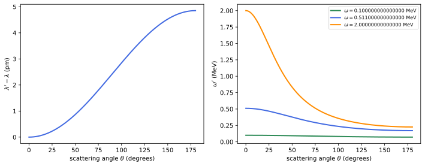
figures/sr-compton.sage.
In elastic scattering the momentum transfer is determined by the angle. The first example computes t in the centre-of-momentum frame (Blennow and Ohlsson 2022, Problem 1.88 a).
Example 142 (Momentum transfer in elastic scattering) In the centre-of-momentum frame of elastic scattering the momenta keep their magnitude p and turn by \theta; the energies are unchanged, so t = (p_1 - p_3)^2 = -|\vec p_1 - \vec p_3|^2 = -2p^2(1 - \cos\theta). It is negative, zero for forward scattering and -4p^2 for backward scattering.
Veriphy. Pending.
Lean. Pending.
Sage. Pending.
The variable s fixes the energy available in a collision. The second example evaluates it for a fixed-target and a collider experiment.
Example 143 (s for two machines) Protons of 7\,TeV colliding head on have \sqrt s = 14\,TeV. The same \sqrt s on a fixed target needs s = 2m_p^2 + 2m_pE, E \approx s/(2m_p) \approx 10^{17}\,eV, the energy of rare cosmic rays.
Veriphy. Pending.
Lean. Pending.
Sage. Pending.
The relation among s, t and u leaves two independent invariants. The third example uses it for massless particles. The two independent invariants are then s and the angle.
Example 144 (Massless scattering) For four massless particles s + t + u = 0. In the centre-of-momentum frame with energy \sqrt s/2 per particle, t = -\tfrac s2(1 - \cos\theta) and u = -\tfrac s2(1 + \cos\theta): the angle and the energy are all there is.
Veriphy. Pending.
Lean. Pending.
Sage. Pending.
The sum rule is an identity among squared four-momenta. The first exercise proves it. It needs only conservation of four-momentum and the mass shells.
Exercise 151 (s + t + u) Prove s + t + u = \sum_im_i^2, and check it with Sage for random momenta satisfying conservation.
s + t + u = 3m_1^2 + m_2^2 + m_3^2 + m_4^2 + 2p_1\cdot(p_2 - p_3 - p_4) = 3m_1^2 + m_2^2 + m_3^2 + m_4^2 - 2p_1\cdot p_1 = \sum_im_i^2, using p_2 - p_3 - p_4 = -p_1:
var('a0 a1 a2 a3 b0 b1 b2 b3 c0 c1 c2 c3')
eta = diagonal_matrix([1, -1, -1, -1])
p1, p2, p3 = vector([a0, a1, a2, a3]), vector([b0, b1, b2, b3]), vector([c0, c1, c2, c3]); p4 = p1 + p2 - p3
sq = lambda p: p*eta*p
print("s + t + u - (p1^2 + p2^2 + p3^2 + p4^2) =", (sq(p1 + p2) + sq(p1 - p3) + sq(p1 - p4) - sq(p1) - sq(p2) - sq(p3) - sq(p4)).expand())Output:
s + t + u - (p1^2 + p2^2 + p3^2 + p4^2) = 0Veriphy. Pending.
Lean. Pending.
Sage. Pending.
The recoil of the target is a function of t alone. The second exercise derives it (Blennow and Ohlsson 2022, Problem 1.88 b).
Exercise 152 (Recoil energy) In elastic ep \to ep with the proton initially at rest, show that the kinetic energy of the recoiling proton is T_p = -t/(2m_p).
t = (p_p - p'_p)^2 = 2m_p^2 - 2p_p\cdot p'_p = 2m_p^2 - 2m_pE'_p in the laboratory, so E'_p - m_p = -t/(2m_p).
Veriphy. Pending.
Lean. Pending.
Sage. Pending.
The physical region of a scattering is the set of (s, t) that real momenta can produce. The third exercise finds it for elastic scattering of equal masses.
Exercise 153 (The physical region) For elastic scattering of two particles of mass m, show that the physical region is s \geq 4m^2, 4m^2 - s \leq t \leq 0.
In the centre-of-momentum frame s = 4E^2 \geq 4m^2 and t = -2p^2(1 - \cos\theta) with p^2 = s/4 - m^2, so t ranges over [-4p^2, 0] = [4m^2 - s, 0]. Then u = 4m^2 - s - t covers the same interval: forward and backward scattering are exchanged by t \leftrightarrow u.
Veriphy. Pending.
Lean. Pending.
Sage. Pending.
Compton’s experiment of 1923 showed that X-rays scatter off electrons as particles with energy \omega and momentum \omega. The shift of their wavelength follows from the invariants alone.
Proposition 16 (Compton scattering) A photon of energy \omega scattered by an angle \theta off an electron at rest has the energy \omega' = \frac{\omega}{1 + \frac{\omega}{m}(1 - \cos\theta)} , \qquad\text{equivalently}\qquad \lambda' - \lambda = \frac{2\pi}{m}(1 - \cos\theta) = \lambda_C(1 - \cos\theta) , with \lambda = 2\pi/\omega and the Compton wavelength \lambda_C = h/(m_ec) = 2.426\,pm.
Proof. With k + p = k' + p', p'^2 = m^2 gives (k + p - k')^2 = m^2, that is 2p\cdot k - 2p\cdot k' - 2k\cdot k' = 0 since k^2 = k'^2 = 0. With p = (m, \vec 0), p\cdot k = m\omega, p\cdot k' = m\omega' and k\cdot k' = \omega\omega'(1 - \cos\theta): m(\omega - \omega') = \omega\omega'(1 - \cos\theta), which is the first formula, and dividing by m\omega\omega' gives 1/\omega' - 1/\omega = (1 - \cos\theta)/m, the second. \square
Veriphy. Pending.
Lean. Pending.
Sage. Pending.
The shift is independent of the wavelength, so it matters only for short wavelengths. The first example evaluates it for X-rays.
Example 145 (X-rays) For the molybdenum line \lambda = 71\,pm scattered at 90°, \lambda' = 73.4\,pm, a 3.4\% shift; for visible light (500\,nm) the same 2.4\,pm is a shift of 5 \times 10^{-6}, invisible. Compton’s measurement of this shift was the decisive evidence that light carries momentum h/\lambda.
Veriphy. Pending.
Lean. Pending.
Sage. Pending.
For gamma rays the energy transfer is large. The second example evaluates the backscattered energy, which produces the “Compton edge” in gamma-ray spectra.
Example 146 (The Compton edge) A 1\,MeV photon backscattered (\theta = \pi) keeps \omega' = 1/(1 + 2/0.511)\,MeV = 0.204\,MeV, and the electron takes the rest, 0.796\,MeV: the largest energy a detector electron can receive from a single scattering, seen as a sharp edge in the spectrum.
Veriphy. Pending.
Lean. Pending.
Sage. Pending.
The kinetic energy of the recoiling electron follows from energy conservation. The third example writes it as a function of the angle (Blennow and Ohlsson 2022, Problem 1.97).
Example 147 (The recoil electron) T_e = \omega - \omega' = \frac{\omega^2(1 - \cos\theta)/m}{1 + \omega(1 - \cos\theta)/m}, which grows from 0 at \theta = 0 to \frac{2\omega^2/m}{1 + 2\omega/m} at \theta = \pi, the edge of the second example.
Veriphy. Pending.
Lean. Pending.
Sage. Pending.
The centre-of-momentum frame of Compton scattering is the natural frame for the theory. The first exercise finds the photon energy there (Blennow and Ohlsson 2022, Problem 1.96 b).
Exercise 154 (Compton scattering in the centre-of-momentum frame) Show that in the centre-of-momentum frame the photon energy, before and after the scattering, is \omega^* = m\omega/\sqrt{m^2 + 2m\omega}, with \omega the laboratory energy.
s = m^2 + 2m\omega, and in the centre-of-momentum frame the photon and the electron have opposite momenta of equal size \omega^*, with total energy \sqrt s. This is the kinematics of Proposition 14 with M^2 = s and masses 0 and m: \omega^* = (s - m^2)/(2\sqrt s) = 2m\omega/(2\sqrt{m^2 + 2m\omega}), which is the claim; the same holds after the scattering, which only turns the momenta.
Veriphy. Pending.
Lean. Pending.
Sage. Pending.
When the electron is fast and the photon slow, the photon gains energy instead of losing it. The second exercise computes this inverse Compton effect, which produces the X-rays of many astrophysical sources (Blennow and Ohlsson 2022, Problem 1.98).
Exercise 155 (Inverse Compton scattering) A photon of energy \omega moving along +x meets head on an electron of Lorentz factor \gamma moving along -x. Find the scattered photon energy at angle \theta to +x, and evaluate the backscattered energy for \gamma = 1000 and \omega = 1\,eV.
From p\cdot k = p\cdot k' + k\cdot k' with p = \gamma m(1, -v, 0, 0), k = \omega(1, 1, 0, 0), k' = \omega'(1, \cos\theta, \sin\theta, 0): \omega' = \frac{\omega(1 + v)}{1 + v\cos\theta + \frac{\omega}{\gamma m}(1 - \cos\theta)}. At \theta = \pi (photon sent back along -x, with the electron) \omega' = \omega(1 + v)/(1 - v + 2\omega/(\gamma m)) \approx 4\gamma^2\omega/(1 + 4\gamma\omega/m), about 4 \times 10^6\,eV \times 0.99, a 4\,MeV gamma ray from a 1\,eV photon:
var('w wp th g m', domain='positive')
v = sqrt(1 - 1/g^2)
eta = diagonal_matrix([1, -1, -1, -1])
p = g*m*vector([1, -v, 0, 0]); k = w*vector([1, 1, 0, 0]); kp = wp*vector([1, cos(th), sin(th), 0])
sol = solve(p*eta*k - p*eta*kp - k*eta*kp == 0, wp)[0].rhs() # (p + k - k')^2 = m^2 with k^2 = k'^2 = 0
claim = w*(1 + v)/(1 + v*cos(th) + w/(g*m)*(1 - cos(th)))
print("omega' minus the formula:", (sol - claim).simplify_full())
back = claim.subs(th=pi, g=1000, w=1, m=0.511e6)
print("backscattered energy for gamma = 1000, omega = 1 eV: %.4e eV (4 gamma^2 omega/(1 + 4 gamma omega/m) = %.4e)" % (n(back), 4e6/(1 + 4e3/0.511e6)))Output:
omega' minus the formula: 0
backscattered energy for gamma = 1000, omega = 1 eV: 3.9689e+06 eV (4 gamma^2 omega/(1 + 4 gamma omega/m) = 3.9689e+06)Veriphy. Pending.
Lean. Pending.
Sage. Pending.
The Compton formula connects the angles of photon and electron. The third exercise derives the electron’s recoil angle. It complements the photon angle of the proposition.
Exercise 156 (The angle of the recoil electron) Show that the electron recoils at an angle \phi to the incident direction with \cot\phi = (1 + \omega/m)\tan(\theta/2).
Momentum conservation gives p'\cos\phi = \omega - \omega'\cos\theta and p'\sin\phi = \omega'\sin\theta, so \cot\phi = (\omega/\omega' - \cos\theta)/\sin\theta. With \omega/\omega' = 1 + (\omega/m)(1 - \cos\theta): \cot\phi = \frac{(1 - \cos\theta)(1 + \omega/m)}{\sin\theta} = (1 + \omega/m)\tan\tfrac\theta2. The electron always moves forward, 0 < \phi < \pi/2.
Veriphy. Pending.
Lean. Pending.
Sage. Pending.
Exercises
The exercises below combine thresholds, decays and invariants. The first is an accelerator experiment at Uppsala (Blennow and Ohlsson 2022, Problem 1.105). The masses are rounded as in the original problem.
Exercise 157 (The CELSIUS reaction) Protons with kinetic energy T_p hit deuterons at rest in p + d \to p + p + n + \eta, with m_p \approx m_n = 940\,MeV, m_d \approx 2m_n and m_\eta = 550\,MeV. Is the reaction possible for T_p = 700\,MeV? Find the threshold.
By Proposition 15, T^{\mathrm{th}} = ((3m + m_\eta)^2 - (3m)^2)/(2 \cdot 2m) = (6mm_\eta + m_\eta^2)/(4m) = \tfrac32m_\eta + m_\eta^2/(4m) \approx 905\,MeV. At 700\,MeV the reaction is not possible:
m, meta = 940.0, 550.0
T = ((3*m + meta)^2 - (3*m)^2)/(2*2*m)
print("threshold T_p = %.1f MeV; possible at 700 MeV: %s" % (T, 700 > T))Output:
threshold T_p = 905.5 MeV; possible at 700 MeV: FalseVeriphy. Pending.
Lean. Pending.
Sage. Pending.
The second exercise combines formation of a resonance with the threshold formula. It is the \Delta resonance seen in pion-nucleon scattering (Blennow and Ohlsson 2022, Problem 1.89).
Exercise 158 (Forming the \Delta(1232)) What kinetic energy must a pion have to form the \Delta(1232) on a proton at rest, \pi + p \to \Delta?
s = m_\Delta^2 = m_\pi^2 + m_p^2 + 2m_pE_\pi, so T_\pi = E_\pi - m_\pi = (m_\Delta^2 - (m_\pi + m_p)^2)/(2m_p) = (1232^2 - 1077.8^2)/1876.5\,MeV \approx 190\,MeV, the energy of the famous peak in the pion-proton cross section.
Veriphy. Pending.
Lean. Pending.
Sage. Pending.
The third exercise is a nuclear reaction in which the photon carries away the binding energy, and recoil shifts its energy slightly (Blennow and Ohlsson 2022, Problem 1.93). The recoil correction is small but measurable.
Exercise 159 (Neutron capture by a proton) A thermal neutron (at rest) is absorbed by a proton at rest, p + n \to d + \gamma, with binding energy B = 2.224\,MeV, m_d = m_p + m_n - B. Find the photon energy exactly and to first order in B/m_d.
The initial state is at rest with energy M = m_p + m_n, so it is a two-body decay of mass M into m_d and a photon: \omega = (M^2 - m_d^2)/(2M) = B(2M - B)/(2M) = B - B^2/(2M) \approx 2.224 - 0.0026\,MeV. The deuteron recoils with the remaining B^2/(2M), about 2.6\,keV.
Veriphy. Pending.
Lean. Pending.
Sage. Pending.
Relativistic optics
Light is the probe with which most relativistic effects are observed, and light itself transforms between frames. Its frequency changes (the Doppler effect), its direction changes (aberration), and what an observer sees of a moving body is assembled from light that left it at different times. All three follow from one fact: the phase of a wave is invariant, so frequency and wave vector form a four-vector. Classical electrodynamics derives the Doppler effect and aberration in Example 17 of Classical field theory and Exercise 18 of Classical field theory; here they are obtained in full generality and applied. The sources are Blennow and Ohlsson (2022, sec. 1.5), Boskoff and Capozziello (2024, sec. 9.5) and Maggiore (2023, sec. 9.6).
The wave four-vector and the Doppler effect
A plane wave has a phase that every observer agrees on, since it counts wave crests. Writing it as a Minkowski product defines the wave four-vector, and its transformation law gives the frequency in any frame; Figure 18 plots the result.
Definition 23 (Wave four-vector) A plane wave e^{-i\phi} with phase \phi = \omega t - \vec k\cdot\vec x = k\cdot x has the wave four-vector k^\mu = (\omega, \vec k). Because the phase is a scalar, k^\mu transforms as a four-vector (Example 55). For light in vacuum k is null, \omega = |\vec k|; a photon of the wave has four-momentum p^\mu = \hbar k^\mu.
Veriphy. Pending.
Lean. Pending.
Sage. Pending.
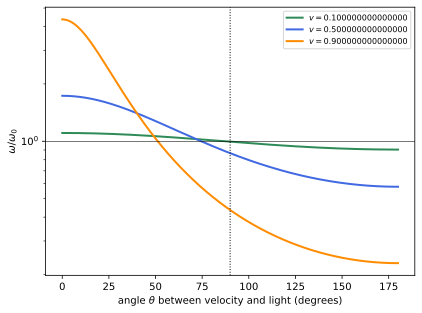
figures/sr-doppler.sage.
The phase of a wave travelling along x is the simplest case. The first example writes it as a Minkowski product (Blennow and Ohlsson 2022, Problem 1.62).
Example 148 (A wave along x) E = E_0\sin(2\pi(x/\lambda - \nu t)) has phase -(\omega t - kx) with \omega = 2\pi\nu and k = 2\pi/\lambda = \omega/c: the argument is -k\cdot x with k^\mu = (\omega, \omega, 0, 0), a null vector. Under the boost along x in rapidity form, \omega' = \omega(\cosh\eta - \sinh\eta) = e^{-\eta}\omega, the Doppler factor met in Example 12.
Veriphy. Pending.
Lean. Pending.
Sage. Pending.
A photon is a quantum of the wave, and its momentum is the wave vector times \hbar. The second example relates the transformation of the photon’s energy to that of the wave’s frequency.
Example 149 (Photons and waves transform alike) Since p = \hbar k, the energy of a photon changes between frames by the same factor as the frequency of its wave. A 500\,nm photon has energy hc/\lambda = 2.48\,eV; seen from a frame receding at v = 0.5 along its direction, it has 2.48\sqrt{(1 - 0.5)/(1 + 0.5)} = 1.43\,eV, and wavelength 866\,nm, in the infrared.
Veriphy. Pending.
Lean. Pending.
Sage. Pending.
In a medium the wave vector of light is not null. The third example shows that its four-vector character still holds, and gives Fizeau’s result of Example 21 again (Blennow and Ohlsson 2022, Problem 1.70).
Example 150 (A wave in a medium) In a medium at rest, light of frequency \omega has |\vec k| = n\omega, so k = \omega(1, n\hat k) is spacelike for n > 1. In a frame where the medium moves with -v along \hat k, \omega' = \gamma\omega(1 + nv) and k' = \gamma\omega(n + v), so the phase velocity is \omega'/k' = (1 + nv)/(n + v) = (1/n + v)/(1 + v/n), the composition of 1/n and v (Example 21).
Veriphy. Pending.
Lean. Pending.
Sage. Pending.
The first exercise derives the longitudinal Doppler formula from the wave four-vector and writes it in terms of rapidity (Blennow and Ohlsson 2022, Problem 1.62). The answer is a single exponential.
Exercise 160 (The Doppler shift from the wave vector) For k = (\omega, \omega, 0, 0) and an observer moving with velocity v along x, compute \omega' and express it with the rapidity. What is the observed wavelength of a 1215\,Å line if v = -0.5 (observer approaching the source)?
\omega' = \gamma(\omega - v\omega) = \omega\sqrt{(1 - v)/(1 + v)} = e^{-\eta}\omega. For v = -0.5, \omega' = \sqrt3\,\omega and \lambda' = 1215/\sqrt3 = 701\,Å: approaching observers see blueshifted light.
Veriphy. Pending.
Lean. Pending.
Sage. Pending.
The invariance of the phase can be checked on a concrete wave. The second exercise does so symbolically. The computation is symbolic in the frequency, the direction and the velocity.
Exercise 161 (The phase is invariant) With Sage, apply a boost with velocity v along x to both x^\mu and k^\mu for a wave with \vec k in the xy-plane, and check that k\cdot x is unchanged and that k stays null.
The product of the boosted vectors equals the original product identically, and k'\cdot k' = 0:
var('t x y z w th v', domain='real')
g = 1/sqrt(1 - v^2)
L = matrix(SR, [[g, -g*v, 0, 0], [-g*v, g, 0, 0], [0, 0, 1, 0], [0, 0, 0, 1]])
eta = diagonal_matrix([1, -1, -1, -1])
X = vector([t, x, y, z]); k = w*vector([1, cos(th), sin(th), 0])
print("k'.x' - k.x =", ((L*k)*eta*(L*X) - k*eta*X).simplify_full())
print("k'.k' =", ((L*k)*eta*(L*k)).simplify_full())Output:
k'.x' - k.x = 0
k'.k' = 0Veriphy. Pending.
Lean. Pending.
Sage. Pending.
A source moving through a medium with sound-like waves gives the classical Doppler effect in the limit. The third exercise compares the two (Blennow and Ohlsson 2022, Problem 1.70).
Exercise 162 (A source in a medium) A source of proper frequency \omega_0 moves with velocity v through a medium in which waves travel at speed u. Show that the frequency of the waves emitted forward, in the frame of the medium, is \omega = \omega_0/(\gamma(1 - v/u)), and discuss v = u and the limit v \ll 1.
In the medium frame the wave vector is N = \omega(1, 1/u, 0, 0), and the source with four-velocity \gamma(1, v, 0, 0) measures \omega_0 = N\cdot u_s = \gamma\omega(1 - v/u). For v \to u the frequency diverges: the source keeps pace with its own waves, the sonic boom. For v \ll 1, \gamma \approx 1 and \omega = \omega_0/(1 - v/u), the classical formula for a moving source.
Veriphy. Pending.
Lean. Pending.
Sage. Pending.
The Doppler effect for an arbitrary direction follows from projecting the wave four-vector on the four-velocity of the source. The proposition below gives the general formula, which contains the longitudinal effect of Boskoff and Capozziello (2024, Theorem 9.5.2) and the transverse effect, which has no classical analogue.
Proposition 17 (Relativistic Doppler effect) A source moving with velocity \vec v emits light of frequency \omega_0 in its rest frame. An observer at rest receives it with frequency \omega = \frac{\omega_0}{\gamma(1 - v\cos\theta)} , \tag{19} where \theta is the angle, in the observer’s frame, between \vec v and the direction in which the light propagates. For a source moving straight towards the observer, \omega = \omega_0\sqrt{(1 + v)/(1 - v)}; straight away, \omega = \omega_0\sqrt{(1 - v)/(1 + v)}; and for \theta = \pi/2, \omega = \omega_0/\gamma.
Proof. In the observer’s frame the light has k = \omega(1, \hat n) and the source the four-velocity u_s = \gamma(1, \vec v). The frequency measured by the source is k\cdot u_s (Example 131, applied to the wave), and it equals \omega_0: \omega_0 = \gamma\omega(1 - \vec v\cdot\hat n) = \gamma\omega(1 - v\cos\theta). The special cases are \cos\theta = 1, -1, 0, with \gamma(1 \mp v) = \sqrt{(1 \mp v)/(1 \pm v)}. \square
Veriphy. Pending.
Lean. Pending.
Sage. Pending.
Large redshifts were first interpreted as Doppler shifts. The first example finds the speed of a quasar on that interpretation (Blennow and Ohlsson 2022, Problem 1.61).
Example 151 (A receding quasar) The Lyman-\alpha line, 1215\,Å at rest, is observed at 3600\,Å in the quasar 3C 9. As a pure Doppler shift, \sqrt{(1 + v)/(1 - v)} = 3600/1215 = 2.963 gives v = (2.963^2 - 1)/(2.963^2 + 1) = 0.795: the quasar would recede at 80\% of the speed of light. Today the shift is understood as cosmological (Black holes and cosmology), but the kinematics of the formula is the same.
Veriphy. Pending.
Lean. Pending.
Sage. Pending.
Time intervals are stretched by the same factor as wavelengths, since both are measured by the arrival of signals. The second example uses this for gamma-ray bursts (Blennow and Ohlsson 2022, Problem 1.63).
Example 152 (Stretched bursts) A gamma-ray burst that lasts twice as long as nearby ones, all bursts having the same duration at the source, has its signals stretched by the factor 2; the arrival times of successive crests are stretched by the same factor, so \lambda/\lambda_0 = 2. The duration of a signal and the period of a wave are both intervals between emission events, received after travel times that grow with the distance of the receding source.
Veriphy. Pending.
Lean. Pending.
Sage. Pending.
The transverse Doppler effect is pure time dilation of the source. The third example describes its measurement. It was the first direct test of time dilation.
Example 153 (The transverse Doppler effect) Light received at right angles to the source’s velocity is redshifted by 1/\gamma, a second-order effect with no Newtonian counterpart. Ives and Stilwell (1938) measured it with fast hydrogen ions by comparing the forward and backward shifted lines: their average, \tfrac12\omega_0(\sqrt{(1 + v)/(1 - v)} + \sqrt{(1 - v)/(1 + v)}) = \gamma\omega_0 in frequency, or \gamma\lambda_0 for the average of the wavelengths, differs from \omega_0 at second order in v.
Veriphy. Pending.
Lean. Pending.
Sage. Pending.
Two objects approaching each other at half the speed of light see each other’s light strongly blueshifted. The first exercise computes it for a ruby laser (Blennow and Ohlsson 2022, Problem 1.64 b).
Exercise 163 (A ruby laser between two ships) Two ships approach each other, each with speed c/2 in some frame. One fires a ruby laser (694.3\,nm) at the other. What wavelength does the other receive?
Their relative speed is 0.8c (Example 19), and the light travels along the relative velocity towards the receiver, so \lambda = 694.3\sqrt{(1 - 0.8)/(1 + 0.8)} = 694.3/3 = 231.4\,nm, in the ultraviolet.
Veriphy. Pending.
Lean. Pending.
Sage. Pending.
Between the blueshift ahead and the redshift behind there is a direction of no shift. The second exercise finds it (Blennow and Ohlsson 2022, Problem 1.65).
Exercise 164 (The direction of no shift) For which angle \theta in Equation 19 is \omega = \omega_0? Evaluate it for v = 0.5 and v = 0.99.
\gamma(1 - v\cos\theta) = 1 gives \cos\theta = (1 - 1/\gamma)/v. For v = 0.5, \cos\theta = 0.268, \theta = 74.5°; for v = 0.99, \cos\theta = 0.868, \theta = 29.8°. The unshifted direction moves forward as v \to 1, because the transverse redshift grows:
for v in [0.5, 0.99]:
g = 1/sqrt(1 - v^2); c = (1 - 1/g)/v
print("v = %.2f: cos(theta) = %.4f, theta = %.1f degrees, check gamma (1 - v cos theta) = %.12f" % (v, c, arccos(c)*180/pi.n(), g*(1 - v*c)))Output:
v = 0.50: cos(theta) = 0.2679, theta = 74.5 degrees, check gamma (1 - v cos theta) = 1.000000000000
v = 0.99: cos(theta) = 0.8676, theta = 29.8 degrees, check gamma (1 - v cos theta) = 1.000000000000Veriphy. Pending.
Lean. Pending.
Sage. Pending.
A moving mirror changes both the frequency and the angle of reflected light. The third exercise computes both by transforming to the mirror’s frame and back (Blennow and Ohlsson 2022, Problem 1.68).
Exercise 165 (A moving mirror) A mirror perpendicular to x moves with velocity v along x. Light of frequency \omega propagates at angle \theta_{\mathrm{in}} to the +x-axis towards it. Find the frequency and the angle \theta_{\mathrm{out}} (to +x) of the reflected light. What happens when v < -\cos\theta_{\mathrm{in}}?
In the mirror frame \omega' = \gamma\omega(1 - v\cos\theta_{\mathrm{in}}) and k'_x = \gamma\omega(\cos\theta_{\mathrm{in}} - v); reflection reverses k'_x; transforming back, \omega_{\mathrm{out}} = \gamma^2\omega(1 - 2v\cos\theta_{\mathrm{in}} + v^2) and \cos\theta_{\mathrm{out}} = \frac{2v - (1 + v^2)\cos\theta_{\mathrm{in}}}{1 - 2v\cos\theta_{\mathrm{in}} + v^2}. For v = 0 this is ordinary reflection. If v < -\cos\theta_{\mathrm{in}}, the mirror recedes along x faster than the light approaches it, k'_x < 0 in the mirror frame, and the light never reaches it:
var('v th w', domain='real')
g = 1/sqrt(1 - v^2)
L = lambda u: matrix(SR, [[1/sqrt(1 - u^2), -u/sqrt(1 - u^2), 0, 0], [-u/sqrt(1 - u^2), 1/sqrt(1 - u^2), 0, 0], [0, 0, 1, 0], [0, 0, 0, 1]])
k = w*vector([1, cos(th), sin(th), 0])
kp = L(v)*k; kr = vector([kp[0], -kp[1], kp[2], kp[3]]); kout = (L(-v)*kr).simplify_full()
print("omega_out - gamma^2 omega (1 - 2 v cos + v^2) =", (kout[0] - g^2*w*(1 - 2*v*cos(th) + v^2)).simplify_full())
print("cos(theta_out) - formula =", (kout[1]/kout[0] - (2*v - (1 + v^2)*cos(th))/(1 - 2*v*cos(th) + v^2)).simplify_full())
print("v = 0.3, theta_in = 60 degrees: omega_out/omega = %.4f, theta_out = %.2f degrees" % (n((kout[0]/w).subs(v=0.3, th=pi/3)), n(arccos(kout[1]/kout[0]).subs(v=0.3, th=pi/3, w=1))*180/pi.n()))Output:
omega_out - gamma^2 omega (1 - 2 v cos + v^2) = 0
cos(theta_out) - formula = 0
v = 0.3, theta_in = 60 degrees: omega_out/omega = 0.8681, theta_out = 86.01 degreesVeriphy. Pending.
Lean. Pending.
Sage. Pending.
Aberration and the appearance of moving bodies
The wave four-vector changes direction as well as length under a boost. Stars seen from a moving ship crowd towards the direction of motion, and a body moving fast does not look contracted but distorted and turned. Figure 19 shows the crowding.
Proposition 18 (Aberration) Let light propagate at angle \theta to the x-axis in a frame K, and let K' move with velocity v along x. In K' it propagates at the angle \theta' with \cos\theta' = \frac{\cos\theta - v}{1 - v\cos\theta}, \qquad \sin\theta' = \frac{\sin\theta}{\gamma(1 - v\cos\theta)}, \qquad \tan\frac{\theta'}{2} = \sqrt{\frac{1 + v}{1 - v}}\tan\frac\theta2 . \tag{20}
Proof. k = \omega(1, \cos\theta, \sin\theta, 0) boosts to \omega' = \gamma\omega(1 - v\cos\theta), k'_x = \gamma\omega(\cos\theta - v), k'_y = \omega\sin\theta, and \cos\theta' = k'_x/\omega', \sin\theta' = k'_y/\omega'. For the half angle, \tan\tfrac{\theta'}{2} = \frac{\sin\theta'}{1 + \cos\theta'} = \frac{\sin\theta}{\gamma(1 - v\cos\theta + \cos\theta - v)} = \frac{\sin\theta}{\gamma(1 - v)(1 + \cos\theta)} = \sqrt{\tfrac{1 + v}{1 - v}}\tan\tfrac\theta2. \square
Veriphy. Pending.
Lean. Pending.
Sage. Pending.
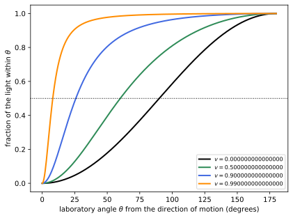
figures/sr-beaming.sage.
The aberration of starlight was discovered by Bradley in 1727, long before relativity. The first example computes its size for the orbital motion of the Earth.
Example 154 (Stellar aberration) For light arriving perpendicular to the Earth’s orbital velocity v = 10^{-4} (30\,km/s), Equation 20 gives \cos\theta' = -v: the star appears tilted towards the direction of motion by \arcsin v \approx 10^{-4}\,rad = 20.6'', and over a year its apparent position traces an ellipse of this size. The relativistic correction is of order v^2, far below Bradley’s precision.
Veriphy. Pending.
Lean. Pending.
Sage. Pending.
For a fast source the effect concentrates its light forward. The second example computes the half-light angle shown in Figure 19.
Example 155 (The headlight effect) Light emitted by the source at right angles in its own frame, \theta' = \pi/2, is seen in the laboratory at \cos\theta = v (apply Equation 20 with -v). Half of an isotropic emission therefore lies in the laboratory cone \cos\theta > v, of half-angle \theta \approx 1/\gamma for \gamma \gg 1: synchrotron light from electrons of \gamma = 10^4 is concentrated within 0.1\,mrad of their direction.
Veriphy. Pending.
Lean. Pending.
Sage. Pending.
The sky seen from a fast ship is distorted in the same way. The third example describes it (Blennow and Ohlsson 2022, Problem 1.27).
Example 156 (The sky from a fast ship) A star seen in the direction \alpha from the ship’s velocity (the light arriving with \theta = \pi - \alpha to the motion) appears at \alpha' with \tan(\alpha'/2) = \sqrt{(1 - v)/(1 + v)}\tan(\alpha/2). All stars move towards the forward direction; at v = 0.9 a star at \alpha = 90° appears at \alpha' = 25.8°, and the Doppler effect makes the forward stars bluer and brighter.
Veriphy. Pending.
Lean. Pending.
Sage. Pending.
The first exercise asks for the fraction of the sky that appears in the forward hemisphere, as plotted in Figure 19. The answer is surprisingly simple.
Exercise 166 (The forward hemisphere) For an observer moving with v through an isotropic distribution of stars, show that the fraction of stars seen in the forward hemisphere is \tfrac12(1 + v), and evaluate it for v = 0.9.
A star is seen forward when the light arrives with \cos\theta' < 0 in the observer’s frame (it propagates backwards), that is \cos\theta < v in the rest frame of the stars by Equation 20. For an isotropic distribution \cos\theta is uniform on [-1, 1], so the fraction is (v + 1)/2: 95\% at v = 0.9:
import numpy as np
rng = np.random.default_rng(int(8)); v = 0.9
c = rng.uniform(-1, 1, 200000) # cos(theta) of the propagation direction in the star frame
cp = (c - v)/(1 - v*c) # aberration to the ship frame
print("fraction seen forward: %.4f (formula (1 + v)/2 = %.4f)" % (np.mean(cp < 0), (1 + v)/2))Output:
fraction seen forward: 0.9499 (formula (1 + v)/2 = 0.9500)Veriphy. Pending.
Lean. Pending.
Sage. Pending.
Aberration can be derived from the composition of velocities as well. The second exercise checks that the two routes agree.
Exercise 167 (Aberration from the composition law) Apply Equation 4 to a light signal \vec u = (\cos\theta, \sin\theta, 0) and show that it gives Equation 20.
u'_x = (\cos\theta - v)/(1 - v\cos\theta) and u'_y = \sin\theta/(\gamma(1 - v\cos\theta)), and |\vec u'| = 1 (Example 20), so these are \cos\theta' and \sin\theta'. The two derivations agree because the velocity of light is \vec k/\omega.
Veriphy. Pending.
Lean. Pending.
Sage. Pending.
A medium moving through the beam can refract light without bending it, for a suitable index. The third exercise finds the index (Blennow and Ohlsson 2022, Problem 1.69).
Exercise 168 (Refraction without bending) A slab of refractive index n moves perpendicular to its surface. In the rest frame of the slab the laboratory moves with velocity w > 0 along the normal \hat x, the direction in which the light enters, and the light arrives at angle \theta' to \hat x. Show that in the laboratory the light keeps its direction on entering the slab if and only if n^2 = (1 - 2w\cos\theta' + w^2)/w^2.
In the slab frame the incident velocity is (\cos\theta', \sin\theta') and the refracted one \frac1n(\cos\theta'_r, \sin\theta'_r) with n\sin\theta'_r = \sin\theta'. By Equation 4 the laboratory directions have slopes \frac{\sin\theta'}{\gamma(\cos\theta' - w)} and \frac{\sin\theta'_r/n}{\gamma(\cos\theta'_r/n - w)}, which are equal iff \cos\theta' - w = n\cos\theta'_r - n^2w, that is \sqrt{n^2 - \sin^2\theta'} = \cos\theta' + w(n^2 - 1). Squaring gives (n^2 - 1)(1 - 2w\cos\theta' - w^2(n^2 - 1)) = 0, and the non-trivial root is the claim; it exceeds 1 when 1 > 2w\cos\theta'. A numerical check of the directions:
import numpy as np
def lab_dir(ux, uy, w): # velocity in the slab frame -> direction in the laboratory
g = 1/np.sqrt(1 - w*w); den = 1 - ux*w
return np.array([(ux - w)/den, uy/(g*den)])
for w, th in [(0.3, 0.4), (0.2, 1.0), (0.45, 0.1)]:
n = np.sqrt((1 - 2*w*np.cos(th) + w*w)/w**2); thr = np.arcsin(np.sin(th)/n)
d1 = lab_dir(np.cos(th), np.sin(th), w); d2 = lab_dir(np.cos(thr)/n, np.sin(thr)/n, w)
print("w = %.2f, theta' = %.2f: n = %.4f, angle between laboratory directions = %.2e rad" % (w, th, n, np.arccos(np.clip(d1 @ d2/np.linalg.norm(d1)/np.linalg.norm(d2), -1, 1))))Output:
w = 0.30, theta' = 0.40: n = 2.4435, angle between laboratory directions = 0.00e+00 rad
w = 0.20, theta' = 1.00: n = 4.5384, angle between laboratory directions = 0.00e+00 rad
w = 0.45, theta' = 0.10: n = 1.2313, angle between laboratory directions = 0.00e+00 radVeriphy. Pending.
Lean. Pending.
Sage. Pending.
What an observer sees, or photographs, is not the set of positions at one instant of her time but the set of positions from which light arrives at one instant. For a moving body these were emitted at different times, and the image is distorted in a way that depends on the direction of view.
Proposition 19 (Apparent length of a moving rod) A rod of rest length L_0 moves with velocity v along its own direction. A distant observer, receiving light that propagates at angle \theta to the velocity, sees the rod with the apparent length, measured along the direction of motion, L_{\mathrm{app}} = \frac{L_0}{\gamma(1 - v\cos\theta)} . It is contracted, L_0/\gamma, only for \theta = \pi/2; it is stretched for an approaching rod and shortened further for a receding one.
Proof. The rod’s ends are at x_1(t) and x_2(t) = x_1(t) + L_0/\gamma (Proposition 2). For a distant observer the light rays are parallel, along \hat n with \hat n\cdot\hat x = \cos\theta, and the rays that arrive together were emitted from points \vec x_1, \vec x_2 at times t_1, t_2 with t_2 - t_1 = \hat n\cdot(\vec x_2 - \vec x_1) (the point further along \hat n emits later). With \vec x_2 - \vec x_1 = L_{\mathrm{app}}\hat x, L_{\mathrm{app}} = L_0/\gamma + v(t_2 - t_1) = L_0/\gamma + vL_{\mathrm{app}}\cos\theta, which gives the formula. \square
Veriphy. Pending.
Lean. Pending.
Sage. Pending.
Two lamps approaching an observer along the line of sight appear further apart than their rest distance. The first example is Blennow and Ohlsson (2022, Problem 1.23).
Example 157 (Approaching lamps) Two lamps at rest distance \ell_0 move towards an observer along the line of sight: the light propagates along the velocity, \theta = 0, and the seen separation is \ell_0/(\gamma(1 - v)) = \ell_0\sqrt{(1 + v)/(1 - v)}. At v = 0.6 the lamps look twice as far apart as they are in their own frame.
Veriphy. Pending.
Lean. Pending.
Sage. Pending.
A cube seen at right angles to its motion is not seen contracted and flattened but turned. The second example explains this Terrell-Penrose rotation.
Example 158 (A moving cube looks rotated) At \theta = \pi/2 the front face of a cube of side a appears contracted to a/\gamma. Its rear face, hidden at rest, becomes visible: light from it that leaves at the right moment passes the receding front edge, and it appears with width av. Faces of widths a\sqrt{1 - v^2} and av are what a cube rotated by the angle \arcsin v shows: a fast-moving object looks rotated, not contracted, an effect noticed only in 1959 by Terrell and by Penrose.
Veriphy. Pending.
Lean. Pending.
Sage. Pending.
Blobs ejected by quasars sometimes appear to move faster than light across the sky. The third example shows how the apparent length formula produces this illusion.
Example 159 (Apparent superluminal motion) A blob moving with speed v at angle \theta to the line of sight, towards the observer, moves across the sky by v\sin\theta\,\Delta t while the light it emits arrives over the shortened time \Delta t(1 - v\cos\theta). Its apparent transverse speed is v\sin\theta/(1 - v\cos\theta), maximal at \cos\theta = v with the value \gamma v: for \gamma = 5, five times the speed of light (Exercise 170).
Veriphy. Pending.
Lean. Pending.
Sage. Pending.
A pole moving past an observer is seen at several angles at once. The first exercise reconstructs the position of a mark on it from the angles under which its points are seen (Blennow and Ohlsson 2022, Problem 1.17).
Exercise 169 (Marks on a moving pole) A pole moves with speed v in the negative x-direction, parallel to the x-axis at distance h. At one instant an observer at the origin sees its front at angle \pi/3 to the x-axis, a mark at \pi/4 and its end at \pi/6. Find the ratio r of the distance from the front to the mark to the length of the pole, as a function of v, and its value for v = 0.
A point seen at angle \alpha emitted its light from x = h\cot\alpha at the time -h/\sin\alpha before reception. In the rod frame, positions are proportional to x + vt_{\mathrm{emit}} up to a constant, that is to h(\cot\alpha - v/\sin\alpha). Hence r = \frac{(\cot\frac\pi3 - \cot\frac\pi4) - v(\csc\frac\pi3 - \csc\frac\pi4)}{(\cot\frac\pi3 - \cot\frac\pi6) - v(\csc\frac\pi3 - \csc\frac\pi6)}, which equals 0.366 for v = 0 and grows with v:
var('v')
pos = lambda a: cot(a) - v*csc(a) # rest-frame position up to a constant, in units of h
r = (pos(pi/3) - pos(pi/4))/(pos(pi/3) - pos(pi/6))
print("r(v) =", r.simplify_full())
print("r(0) = %.4f, r(0.5) = %.4f, r(0.9) = %.4f" % (n(r.subs(v=0)), n(r.subs(v=0.5)), n(r.subs(v=0.9))))Output:
r(v) = 1/2*(v*(2*sqrt(3) - 3*sqrt(2)) - sqrt(3) + 3)/(v*(sqrt(3) - 3) + sqrt(3))
r(0) = 0.3660, r(0.5) = 0.4001, r(0.9) = 0.4800Veriphy. Pending.
Lean. Pending.
Sage. Pending.
The superluminal speed of the third example can be maximised over the angle. The second exercise does it. The maximum is reached at a definite angle.
Exercise 170 (The largest apparent speed) Maximise v_{\mathrm{app}}(\theta) = v\sin\theta/(1 - v\cos\theta) over \theta, and find \gamma for a quasar jet with an observed apparent speed of 10c.
dv_{\mathrm{app}}/d\theta = v(\cos\theta - v)/(1 - v\cos\theta)^2 vanishes at \cos\theta = v, where v_{\mathrm{app}} = v\sqrt{1 - v^2}/(1 - v^2) = \gamma v. An apparent 10c needs \gamma v \geq 10, so \gamma \geq \sqrt{101} \approx 10.05.
Veriphy. Pending.
Lean. Pending.
Sage. Pending.
The apparent length depends on the direction of view through the factor of the Doppler formula. The third exercise makes the connection.
Exercise 171 (Apparent length and Doppler factor) Show that L_{\mathrm{app}} = L_0\,\omega/\omega_0, where \omega/\omega_0 is the Doppler factor Equation 19 for light from the rod in the same direction, and explain why.
Both are 1/(\gamma(1 - v\cos\theta)) times the rest value. The rod is a “wave” of length L_0 in its rest frame: two ends play the role of two crests, emitted at different places, and the reception compresses or stretches the pattern by the same factor as for successive crests of a wave from a moving source.
Veriphy. Pending.
Lean. Pending.
Sage. Pending.
Exercises
The exercises below combine the Doppler effect with kinematics. The first follows a radar echo from a moving target, which doubles the shift.
Exercise 172 (A radar echo) A police radar of frequency 24\,GHz is reflected by a car approaching at v. Show that the echo has frequency \omega\frac{1 + v}{1 - v} and find the frequency shift for v = 30\,m/s.
The car receives \omega\sqrt{(1 + v)/(1 - v)} and re-emits it as a moving source, which multiplies it again by the same factor (equivalently, the mirror formula of Exercise 165 with \theta_{\mathrm{in}} = \pi and the mirror moving towards the source). The shift is \approx 2v\omega = 2 \cdot 10^{-7} \cdot 24\,GHz = 4.8\,kHz.
Veriphy. Pending.
Lean. Pending.
Sage. Pending.
The second exercise relates the Doppler factor of a uniformly receding source to the rapidity, and shows that redshifts compose multiplicatively. The answer explains why redshifts multiply rather than add.
Exercise 173 (Redshifts compose) A galaxy recedes from a second galaxy with 1 + z_1, which recedes from us with 1 + z_2, all along one line. Show that the redshift of the first galaxy seen from us is 1 + z = (1 + z_1)(1 + z_2), and relate this to the addition of rapidities.
The longitudinal factor is \sqrt{(1 + v)/(1 - v)} = e^\eta (Example 12). Collinear velocities add their rapidities, \eta = \eta_1 + \eta_2, so e^\eta = e^{\eta_1}e^{\eta_2}, that is 1 + z = (1 + z_1)(1 + z_2).
Veriphy. Pending.
Lean. Pending.
Sage. Pending.
The third exercise is the transverse Doppler effect on a rotating disk, which the twin paradox of Exercise 48 already explained; here the angle is computed directly. No longitudinal motion is involved.
Exercise 174 (Light from the rim of a turntable) A source on the rim of a disk rotating with speed v emits light of proper frequency \omega_0 towards the centre. What frequency does an observer at the centre receive?
In the inertial frame of the centre the light propagates radially inwards, perpendicular to the source velocity, so \theta = \pi/2 in Equation 19 and \omega = \omega_0/\gamma: a pure transverse redshift, in agreement with the clock rates of Exercise 48.
Veriphy. Pending.
Lean. Pending.
Sage. Pending.
Relativistic dynamics
Kinematics describes motion; dynamics explains it by forces. In special relativity the force becomes a four-vector, the rate of change of four-momentum with proper time, and Newton’s second law becomes a four-vector equation that follows from the action of a free particle when interactions are added. The simplest accelerated motion, constant acceleration felt by the moving body, turns out to be a hyperbola in spacetime, and the observers who move along a family of such hyperbolae carry the coordinates of the Rindler frame, in which clocks at different heights run at different rates as in a gravitational field. General relativity takes this observation as its starting point. The sources are Maggiore (2023, sec. 7.4), Boskoff and Capozziello (2024, sec. 9.6) and Blennow and Ohlsson (2022, secs. 1.4, 1.6 and 1.9).
Four-force and the action of a particle
Newton’s law equates the force with the rate of change of momentum. Its relativistic form uses the four-momentum and the proper time, and the extra time component describes the rate of change of energy; Figure 20 compares the motion under a constant force with Newton’s prediction.
Definition 24 (Four-force) The four-force on a particle is F^\mu = dp^\mu/d\tau. Writing p = mu with a possibly varying rest mass, F\cdot u = dm/d\tau. A four-force with F\cdot u = 0, which leaves the rest mass unchanged, is pure; then F^\mu = \gamma(\vec f\cdot\vec v, \vec f) with the three-force \vec f = d\vec p/dt. A four-force parallel to u is heat-like: it changes only the rest mass.
Veriphy. Pending.
Lean. Pending.
Sage. Pending.
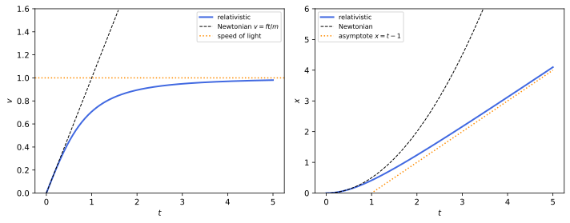
figures/sr-constant-force.sage.
A pure force does work at the rate \vec f\cdot\vec v. The first example derives the four-force from the three-force and checks that it is orthogonal to the four-velocity.
Example 160 (A pure force from a three-force) For constant rest mass, dp^\mu/d\tau = \gamma\,dp^\mu/dt = \gamma(dE/dt, \vec f), and E^2 = |\vec p|^2 + m^2 gives E\,dE/dt = \vec p\cdot\vec f, that is dE/dt = \vec v\cdot\vec f. So F = \gamma(\vec f\cdot\vec v, \vec f) and F\cdot u = \gamma^2(\vec f\cdot\vec v - \vec f\cdot\vec v) = 0. The Lorentz force of Proposition 25 is of this kind.
Veriphy. Pending.
Lean. Pending.
Sage. Pending.
Heating a body increases its mass. The second example describes the heat-like four-force of isotropic absorption. Here only the rest mass changes.
Example 161 (Heating a body) A body at rest absorbing radiation equally from all directions receives energy and no momentum: in its rest frame F = (dm/d\tau, \vec 0), so F = (dm/d\tau)u in every frame. A kilogram of water heated by 100\,K gains 4.2 \times 10^5\,J and its mass grows by 4.7 \times 10^{-12}\,kg.
Veriphy. Pending.
Lean. Pending.
Sage. Pending.
A four-force with no time component in one frame is not pure in general. The third example finds when it is (Blennow and Ohlsson 2022, Problem 1.53).
Example 162 (A force with no time component) For F = (0, \vec f) acting on a particle with velocity \vec v, dm/d\tau = F\cdot u = -\gamma\vec f\cdot\vec v: the rest mass changes unless \vec f \perp \vec v. Such a force is pure only when it does no work in the frame where it has no time component, for example a magnetic force (Proposition 25).
Veriphy. Pending.
Lean. Pending.
Sage. Pending.
The first exercise splits a four-force along a given direction into its effect on the mass and on the velocity (Blennow and Ohlsson 2022, Problem 1.52). Both effects follow from the decomposition of F along and across V.
Exercise 175 (A force along a fixed four-vector) An object of rest mass M and four-velocity V feels F = fU with a fixed unit timelike U and a scalar f. Show that dM/d\tau = f\,U\cdot V and that its proper acceleration is \alpha = \frac{f}{M}\sqrt{(U\cdot V)^2 - 1}.
dM/d\tau = F\cdot V = fU\cdot V = f\gamma with \gamma = U\cdot V. Then F = \dot MV + MA gives A = \frac fM(U - \gamma V), and -A\cdot A = \frac{f^2}{M^2}(2\gamma^2 - 1 - \gamma^2) = \frac{f^2}{M^2}(\gamma^2 - 1). The force is pure only in the trivial case f = 0; it heats the object at the rate f\gamma while accelerating it.
Veriphy. Pending.
Lean. Pending.
Sage. Pending.
A constant four-force along a null direction makes the mass grow. The second exercise integrates the motion (Blennow and Ohlsson 2022, Problem 1.56).
Exercise 176 (A constant null four-force) An object initially at rest with mass m_0 feels F = f(1, 1, 0, 0). Find m(\tau) and the coordinate time t(\tau).
p(\tau) = (m_0 + f\tau, f\tau, 0, 0), so m^2 = p\cdot p = m_0^2 + 2m_0f\tau, m = \sqrt{m_0^2 + 2m_0f\tau}. Then dt/d\tau = p^0/m, and substituting w = m^2 in the integral gives t = \frac{m^3 - m_0^3}{6m_0^2f} + \frac{m - m_0}{2f}, which grows like \tau^{3/2}: the object is heated and pushed at once:
var('m0 f tau s', domain='positive')
m = sqrt(m0^2 + 2*m0*f*tau)
t = integrate((m0 + f*s)/sqrt(m0^2 + 2*m0*f*s), s, 0, tau)
claim = (m^3 - m0^3)/(6*m0^2*f) + (m - m0)/(2*f)
print("m(tau) =", m)
print("t(tau) minus the closed form:", (t - claim).simplify_full())Output:
m(tau) = sqrt(2*f*m0*tau + m0^2)
t(tau) minus the closed form: 0Veriphy. Pending.
Lean. Pending.
Sage. Pending.
A linear accelerator applies a constant force. The third exercise computes the time an electron spends in one (Blennow and Ohlsson 2022, Problem 1.111).
Exercise 177 (An electron in a linear accelerator) An electron starts from rest in a constant field of 10^4\,V/m over 100\,m. Find its final kinetic energy and the time it takes, using the energy as integration variable.
The work is eEL = 1\,MeV, so \gamma_f = 1 + 1/0.511 = 2.957. With dE/dt = eEv and v = \sqrt{E^2 - m^2}/E: t = \int\frac{E\,dE}{eE\sqrt{E^2 - m^2}} = \frac{\sqrt{E_f^2 - m^2}}{eE} = \frac{m\sqrt{\gamma_f^2 - 1}}{eE}, which is 0.511\,\mathrm{MeV} \cdot 2.783/(10^4\,\mathrm{eV/m})/c = 142\,\mathrm{m}/c = 474\,ns. A Newtonian estimate would give L/(v_{\mathrm{avg}}) with a final speed above c:
m = 0.511e6; eE = 1e4; L = 100.0; c = 2.99792458e8 # eV, eV/m, m
gf = 1 + eE*L/m
var('E')
t_m = numerical_integral(E/(eE*sqrt(E^2 - m^2)), m, gf*m)[0] # time in metres (c = 1)
print("final kinetic energy %.3f MeV, gamma_f = %.4f" % (eE*L/1e6, gf))
print("time = %.2f m/c = %.1f ns (closed form m sqrt(gamma^2 - 1)/(eE) = %.2f m)" % (t_m, t_m/c*1e9, m*sqrt(gf^2 - 1)/eE))Output:
final kinetic energy 1.000 MeV, gamma_f = 2.9569
time = 142.20 m/c = 474.3 ns (closed form m sqrt(gamma^2 - 1)/(eE) = 142.20 m)Veriphy. Pending.
Lean. Pending.
Sage. Pending.
The equations of motion of a free particle follow from an action, and so do those with interactions. The action must be a Lorentz scalar and depend on the worldline only, so it is a multiple of the proper time (Theorem 2, Maggiore (2023, sec. 7.4.2)).
Proposition 20 (The action of a free particle) The action S = -m\int d\tau = -m\int\sqrt{\eta_{\mu\nu}\dot x^\mu\dot x^\nu}\,d\lambda is invariant under Lorentz transformations and under reparametrisations \lambda \mapsto \lambda'(\lambda). Its Euler-Lagrange equations are \frac{d}{d\lambda}\Bigl(\frac{m\dot x_\mu}{\sqrt{\dot x\cdot\dot x}}\Bigr) = 0, that is du^\mu/d\tau = 0 in the proper-time parametrisation. With \lambda = t the Lagrangian is L = -m\sqrt{1 - v^2}, the canonical momentum \vec p = \gamma m\vec v and the Hamiltonian H = \sqrt{|\vec p|^2 + m^2}.
Proof. \eta_{\mu\nu}\dot x^\mu\dot x^\nu is a scalar and under \lambda \mapsto \lambda' the integrand transforms as \sqrt{\dot x\cdot\dot x}\,d\lambda = \sqrt{x'\cdot x'}\,d\lambda', so S is invariant. The Lagrangian \mathcal{L} = -m\sqrt{\dot x\cdot\dot x} does not depend on x, so the Euler-Lagrange equations say \partial\mathcal{L}/\partial\dot x^\mu = -m\dot x_\mu/\sqrt{\dot x\cdot\dot x} is constant; with \lambda = \tau, \sqrt{\dot x\cdot\dot x} = 1 and this is -mu_\mu. With \lambda = t, \dot x = (1, \vec v) and L = -m\sqrt{1 - v^2}; then \partial L/\partial\vec v = m\vec v/\sqrt{1 - v^2} = \gamma m\vec v and H = \vec p\cdot\vec v - L = \gamma mv^2 + m/\gamma = \gamma m = \sqrt{p^2 + m^2}. \square
Veriphy. Pending.
Lean. Pending.
Sage. Pending.
The sign and the factor of the action are fixed by the Newtonian limit. The first example expands the Lagrangian.
Example 163 (The Newtonian limit of the action) L = -m\sqrt{1 - v^2} = -m + \tfrac12mv^2 + \tfrac18mv^4 + \dots: up to the constant -m, which does not affect the equations of motion, the leading term is the Newtonian kinetic energy. The minus sign makes the action of the straight worldline the minimum, since its proper time is the maximum (Theorem 2, Example 37).
Veriphy. Pending.
Lean. Pending.
Sage. Pending.
Interactions are added by terms in the action. The second example adds a potential and derives the relativistic Newton’s law for it.
Example 164 (A particle in a potential) L = -m\sqrt{1 - v^2} - V(\vec x) gives \frac{d}{dt}(\gamma m\vec v) = -\nabla V: Newton’s law with the relativistic momentum. This Lagrangian is not Lorentz invariant, since V singles out a frame; the invariant coupling to the electromagnetic field, -q\int A_\mu dx^\mu, gives the Lorentz force (Exercise 63 of Classical field theory, Proposition 25).
Veriphy. Pending.
Lean. Pending.
Sage. Pending.
Because of reparametrisation invariance, the four components of \dot x are not independent dynamical variables. The third example shows the resulting constraint among the momenta.
Example 165 (The mass-shell constraint) The canonical momenta p_\mu = -\partial\mathcal{L}/\partial\dot x^\mu = m\dot x_\mu/\sqrt{\dot x\cdot\dot x} satisfy p\cdot p = m^2 identically, whatever the parametrisation: the mass shell is a constraint, not an equation of motion. The canonical Hamiltonian p_\mu\dot x^\mu - \mathcal{L} (with this sign convention) vanishes identically, a mark of reparametrisation invariance that reappears in general relativity.
Veriphy. Pending.
Lean. Pending.
Sage. Pending.
The first exercise derives the equations of motion of the relativistic harmonic oscillator and shows that its period grows with the amplitude. Only the conserved energy is needed.
Exercise 178 (The relativistic oscillator) For L = -m\sqrt{1 - \dot x^2} - \tfrac12kx^2, derive the equation of motion and the conserved energy, and compute with Sage the period for m = k = 1 and amplitudes 0.1, 1 and 5.
\frac{d}{dt}(\gamma m\dot x) = -kx, with the conserved energy \gamma m + \tfrac12kx^2. The period, 2\pi for small amplitudes, grows with the amplitude, and for large amplitudes approaches 4A, the time to cross the well at nearly the speed of light:
var('phi')
for amp in [0.1, 1.0, 5.0]:
E = 1 + amp^2/2
x = amp*sin(phi)
v = sqrt(1 - 1/(E - x^2/2)^2)
T = 4*numerical_integral(amp*cos(phi)/v, 0, pi/2)[0]
print("amplitude %.1f: period %.4f (small-amplitude 2 pi = %.4f, large-amplitude 4A = %.1f)" % (amp, T, 2*pi.n(), 4*amp))Output:
amplitude 0.1: period 6.2950 (small-amplitude 2 pi = 6.2832, large-amplitude 4A = 0.4)
amplitude 1.0: period 7.3807 (small-amplitude 2 pi = 6.2832, large-amplitude 4A = 4.0)
amplitude 5.0: period 20.8301 (small-amplitude 2 pi = 6.2832, large-amplitude 4A = 20.0)Veriphy. Pending.
Lean. Pending.
Sage. Pending.
The square-root Lagrangian can be replaced by a quadratic one with the parameter fixed to proper time. The second exercise shows the equivalence (Blennow and Ohlsson 2022, Problem 1.150).
Exercise 179 (A quadratic Lagrangian) Show that \mathcal{L} = \tfrac12m\eta_{\mu\nu}\dot x^\mu\dot x^\nu, with \dot x = dx/d\tau, gives \ddot x^\mu = 0, that it conserves \dot x\cdot\dot x, and that adding +q\dot x^\mu A_\mu gives m\ddot x_\mu = qF_{\mu\nu}\dot x^\nu. Why does the coupling enter with the sign opposite to that of -q\int A_\mu dx^\mu in the action -m\int d\tau - q\int A_\mu dx^\mu?
The Euler-Lagrange equations of \tfrac12m\dot x\cdot\dot x are m\ddot x_\mu = 0, and \frac{d}{d\tau}(\dot x\cdot\dot x) = 2\dot x\cdot\ddot x = 0, so the normalisation \dot x\cdot\dot x = 1 can be imposed once. With +q\dot x^\nu A_\nu(x): \frac{d}{d\tau}(m\dot x_\mu + qA_\mu) = q\dot x^\nu\partial_\mu A_\nu, so m\ddot x_\mu = q\dot x^\nu(\partial_\mu A_\nu - \partial_\nu A_\mu) = qF_{\mu\nu}\dot x^\nu, the covariant Lorentz force of Proposition 25. The quadratic Lagrangian reproduces -m\sqrt{\dot x\cdot\dot x} only up to an overall sign (the Euler-Lagrange equations of -m\sqrt{\dot x\cdot\dot x} in the proper-time gauge are those of -\tfrac12m\dot x\cdot\dot x), so the whole action is multiplied by -1, coupling included.
Veriphy. Pending.
Lean. Pending.
Sage. Pending.
The Hamiltonian of the third statement of the proposition generates the motion. The third exercise checks Hamilton’s equations. The speed limit appears in the velocity equation.
Exercise 180 (Hamilton’s equations of a free particle) Write Hamilton’s equations (Definition 10 of Classical mechanics) for H = \sqrt{|\vec p|^2 + m^2} + V(\vec x) and show that \dot{\vec x} = \vec p/E with E = \sqrt{|\vec p|^2 + m^2}, so the speed never exceeds 1.
\dot{\vec x} = \partial H/\partial\vec p = \vec p/\sqrt{|\vec p|^2 + m^2} and \dot{\vec p} = -\nabla V. Since |\vec p| < \sqrt{|\vec p|^2 + m^2} for m > 0, |\dot{\vec x}| < 1 however large the momentum: a force can increase the momentum without bound but not the speed.
Veriphy. Pending.
Lean. Pending.
Sage. Pending.
Constant proper acceleration
The acceleration that a passenger feels, measured with an accelerometer, is the acceleration in the instantaneous rest frame. It is a Lorentz scalar, while the coordinate acceleration depends on the frame. Figure 21 shows the worldlines of constant felt acceleration.
Definition 25 (Proper acceleration) The proper acceleration of a worldline is \alpha = \sqrt{-a\cdot a}, the magnitude of its four-acceleration. In the instantaneous rest frame a = (0, \vec a_0) and \alpha = |\vec a_0|, the acceleration measured by an accelerometer carried along.
Veriphy. Pending.
Lean. Pending.
Sage. Pending.
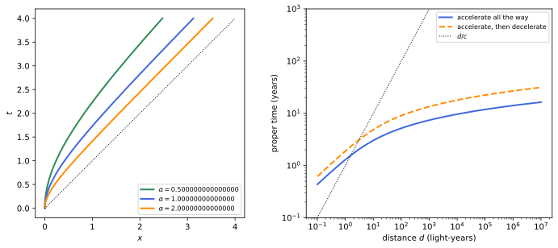
figures/sr-hyperbolic.sage.
In linear motion the proper acceleration exceeds the coordinate acceleration by \gamma^3. The first example derives the factor. The rapidity makes the computation short.
Example 166 (Linear motion) For motion along x, u = (\cosh\eta, \sinh\eta) with the rapidity \eta(\tau), so a = \dot\eta(\sinh\eta, \cosh\eta) and \alpha = |\dot\eta|. Since d\eta = \gamma^2dv and d\tau = dt/\gamma, \alpha = \gamma^3|dv/dt|: near the speed of light a large felt acceleration produces a tiny change of coordinate velocity.
Veriphy. Pending.
Lean. Pending.
Sage. Pending.
In circular motion the factor is \gamma^2. The second example takes it from Example 128 and evaluates it for a storage ring.
Example 167 (Circular motion) \alpha = \gamma^2v^2/r (Example 128). For the muons of Exercise 13, \gamma = 9.43 and v^2/r = 1.8 \times 10^{15}\,m/s^2, so \alpha \approx 1.6 \times 10^{17}\,m/s^2, about 10^{16}g; their clocks still run at the rate 1/\gamma fixed by the speed alone (Exercise 13), the “clock hypothesis” confirmed by the muon experiments.
Veriphy. Pending.
Lean. Pending.
Sage. Pending.
Coordinate accelerations transform in a complicated way, because both dv and dt change. The third example gives the law for an object momentarily at rest (Blennow and Ohlsson 2022, Problem 1.54).
Example 168 (Acceleration seen from a moving frame) An object momentarily at rest in S with acceleration \vec a_0 is seen from S', moving with v along x, to have acceleration components a'_x = a_{0x}/\gamma^3 and a'_\perp = a_{0\perp}/\gamma^2. So |\vec a'| lies between \alpha/\gamma^3 (for \vec a_0 \parallel \vec v) and \alpha/\gamma^2 (for \vec a_0 \perp \vec v): every moving observer measures less than the proper acceleration.
Veriphy. Pending.
Lean. Pending.
Sage. Pending.
The worldline of constant proper acceleration is a hyperbola, which every inertial observer sees as one. The first exercise uses this to find a coordinate acceleration without computation (Blennow and Ohlsson 2022, Problem 1.49).
Exercise 181 (The same hyperbola in every frame) A rocket moves on x^2 - t^2 = 1/\alpha^2. Show that its proper acceleration is \alpha, and that in a frame S' moving with any v along x its coordinate acceleration at t' = 0 is \alpha.
x = \cosh(\alpha\tau)/\alpha, t = \sinh(\alpha\tau)/\alpha gives a = \alpha(\cosh\alpha\tau, \sinh\alpha\tau), -a\cdot a = \alpha^2. The boost preserves x^2 - t^2, so in S' the worldline is the same hyperbola x'^2 - t'^2 = 1/\alpha^2; at t' = 0 the rocket is at rest at x' = 1/\alpha, and its coordinate acceleration there equals the proper acceleration, \alpha.
Veriphy. Pending.
Lean. Pending.
Sage. Pending.
The particles of a circular accelerator feel a large proper acceleration. The second exercise computes it and the proper time per turn (Blennow and Ohlsson 2022, Problem 1.51).
Exercise 182 (Proper time per turn) A particle circulates with speed v on a circle of radius r. Find its four-acceleration, its proper acceleration and the proper time of one turn, and evaluate them for protons of 7\,TeV on a circle of circumference 26.7\,km, the size of the LHC.
a = -\gamma^2(v^2/r)(0, \cos\omega t, \sin\omega t, 0), \alpha = \gamma^2v^2/r, and the proper time of a turn is 2\pi r/(\gamma v). For \gamma = 7461 and r = 4.25\,km: \alpha \approx \gamma^2c^2/r = 1.2 \times 10^{21}\,m/s^2 and \tau = 2\pi r/(\gamma c) = 11.9\,ns, while a turn takes 89\,\mus in the laboratory:
c = 2.99792458e8; mp = 0.938272; E = 7000.0; C = 26.659e3
g = E/mp; v = sqrt(1 - 1/g^2)*c; r = C/(2*pi.n())
print("gamma = %.1f, r = %.0f m" % (g, r))
print("proper acceleration gamma^2 v^2/r = %.3e m/s^2" % (g^2*v^2/r))
print("laboratory period %.2f microseconds, proper time per turn %.2f ns" % (C/v*1e6, C/v/g*1e9))Output:
gamma = 7460.5, r = 4243 m
proper acceleration gamma^2 v^2/r = 1.179e+21 m/s^2
laboratory period 88.92 microseconds, proper time per turn 11.92 nsVeriphy. Pending.
Lean. Pending.
Sage. Pending.
Passengers of a rocket feel one g and want to know when they reach a given speed. The third exercise answers with the rapidity.
Exercise 183 (How long to 0.99c) At a constant proper acceleration g = 9.81\,m/s^2, how much proper time and coordinate time are needed to reach 0.99c from rest, and how far has the rocket gone?
The rapidity grows as g\tau/c (Example 166), so \tau = (c/g)\operatorname{artanh}0.99, t = (c/g)\sinh(g\tau/c) and x = (c^2/g)(\cosh(g\tau/c) - 1). With c/g = 0.969\,yr: \tau = 2.56\,yr, t = 6.80\,yr and x = 5.90\,ly:
c = 2.99792458e8; g = 9.81; yr = 365.25*86400
cg = c/g/yr
eta = arctanh(0.99)
print("c/g = %.4f yr; tau = %.3f yr, t = %.3f yr, x = %.3f ly" % (cg, cg*eta, cg*sinh(eta), cg*(cosh(eta) - 1)))Output:
c/g = 0.9684 yr; tau = 2.563 yr, t = 6.796 yr, x = 5.896 lyVeriphy. Pending.
Lean. Pending.
Sage. Pending.
Constant proper acceleration is the relativistic version of uniform acceleration. The proposition below solves it, and shows that the rapidity grows linearly with the proper time (Boskoff and Capozziello 2024, Theorem 9.6.4).
Proposition 21 (Hyperbolic motion) A particle that starts from rest at the origin and moves along x with constant proper acceleration \alpha has, in terms of its proper time, t = \frac{\sinh\alpha\tau}{\alpha}, \qquad x = \frac{\cosh\alpha\tau - 1}{\alpha}, \qquad v = \tanh\alpha\tau, \qquad x(t) = \frac{\sqrt{1 + \alpha^2t^2} - 1}{\alpha} . Its rapidity is \alpha\tau, and its worldline is the hyperbola (x + 1/\alpha)^2 - t^2 = 1/\alpha^2, asymptotic to the light ray x = t - 1/\alpha.
Proof. In one space dimension u = (\cosh\eta, \sinh\eta) and \alpha = |d\eta/d\tau| (Example 166); with \eta(0) = 0 and \eta increasing, \eta = \alpha\tau. Integrating dt/d\tau = \cosh\alpha\tau and dx/d\tau = \sinh\alpha\tau from 0 gives t and x, and v = dx/dt = \tanh\alpha\tau. Then (x + 1/\alpha)^2 - t^2 = (\cosh^2 - \sinh^2)/\alpha^2 = 1/\alpha^2, which solved for x gives x(t). As t \to \infty, x - t + 1/\alpha = \sqrt{t^2 + 1/\alpha^2} - t \to 0. \square
Veriphy. Pending.
Lean. Pending.
Sage. Pending.
The hyperbolic functions make interstellar travel possible within a lifetime, at least in principle. The first example computes a trip to the Andromeda galaxy (Blennow and Ohlsson 2022, Problem 1.41).
Example 169 (A trip to Andromeda) Andromeda is d = 2.5 \times 10^6\,ly away. Accelerating at g = 10\,m/s^2 all the way, the proper time is \tau = (c/g)\operatorname{arcosh}(1 + gd/c^2); with c/g = 0.95\,yr (using 1\,yr \approx \pi \cdot 10^7\,s) and gd/c^2 = 2.6 \times 10^6, \tau \approx 14.8\,yr: a commander of 40 arrives aged about 55, while 2.5 million years pass on the Earth. Accelerating for half the way and decelerating for the other half takes 28.2\,yr.
Veriphy. Pending.
Lean. Pending.
Sage. Pending.
The light from home reaching the rocket is redshifted by the rapidity. The second example gives the exponential law. The law is exponential in the proper time.
Example 170 (Signals from home) Light sent from the origin after the start catches the rocket, which at that moment has rapidity \alpha\tau and recedes along the light’s direction: by Proposition 17 its frequency is reduced by e^{-\alpha\tau}. After a year at 1g (\alpha\tau \approx 1.03) the signals from home arrive at a third of their frequency, and they arrive ever more slowly: light emitted later than t = c/g never reaches the rocket (Exercise 185).
Veriphy. Pending.
Lean. Pending.
Sage. Pending.
A real rocket accelerates by ejecting mass. The third example gives the relativistic rocket equation, which replaces Tsiolkovsky’s (Blennow and Ohlsson 2022, Problem 1.42).
Example 171 (The relativistic rocket) A rocket that ejects matter with speed w relative to itself reaches the speed v when its rest mass has fallen from m_0 to m = m_0\bigl(\frac{1 - v}{1 + v}\bigr)^{1/(2w)}, that is m = m_0e^{-\eta/w} with the rapidity \eta (Exercise 186). For a photon rocket, w = 1, reaching v = 0.99 requires m/m_0 = 0.071; Tsiolkovsky’s m_0e^{-v/w} is the limit of small v.
Veriphy. Pending.
Lean. Pending.
Sage. Pending.
A police officer accelerates to catch a speeding ship. The first exercise follows the pursuit in three frames (Blennow and Ohlsson 2022, Problem 1.47).
Exercise 184 (A relativistic pursuit) A ship passes a police officer at constant speed v; at that moment the officer starts with constant proper acceleration a. How long does the pursuit last for the ship’s crew, and for the officer, and what is their relative speed at the end?
The meeting condition vt = (\sqrt{1 + a^2t^2} - 1)/a gives t = 2v\gamma^2/a in the officer’s initial frame. The crew’s proper time is t/\gamma = 2v\gamma/a; the officer’s is \tau = \operatorname{arsinh}(at)/a = \operatorname{arsinh}(2v\gamma^2)/a. At the meeting the officer’s speed is at/\sqrt{1 + a^2t^2} = 2v/(1 + v^2), which is v \oplus v: the officer overtakes the ship at the relative speed v:
for v in [0.3, 0.6, 0.9]:
g = 1/sqrt(1 - v^2); T = 2*v*g^2
resid = v*T - (sqrt(1 + T^2) - 1)
V = T/sqrt(1 + T^2)
print("v = %.1f: meeting at t = %.4f (residual %.1e), crew %.4f, officer %.4f, officer's speed %.4f = 2v/(1+v^2) = %.4f, relative speed %.4f"
% (v, T, resid, T/g, arcsinh(T), V, 2*v/(1 + v^2), (V - v)/(1 - V*v)))Output:
v = 0.3: meeting at t = 0.6593 (residual 0.0e+00), crew 0.6290, officer 0.6190, officer's speed 0.5505 = 2v/(1+v^2) = 0.5505, relative speed 0.3000
v = 0.6: meeting at t = 1.8750 (residual 0.0e+00), crew 1.5000, officer 1.3863, officer's speed 0.8824 = 2v/(1+v^2) = 0.8824, relative speed 0.6000
v = 0.9: meeting at t = 9.4737 (residual 0.0e+00), crew 4.1295, officer 2.9444, officer's speed 0.9945 = 2v/(1+v^2) = 0.9945, relative speed 0.9000Veriphy. Pending.
Lean. Pending.
Sage. Pending.
A signal sent too late never reaches a uniformly accelerated rocket. The second exercise finds the deadline (Blennow and Ohlsson 2022, Problem 1.50).
Exercise 185 (A signal to an accelerating rocket) B starts from rest at the origin with proper acceleration \alpha; A stays at the origin and sends a light signal at time t_0. When does B receive it, in A’s time and in B’s proper time? Discuss \alpha t_0 \to 0 and \alpha t_0 \to 1.
t - t_0 = (\sqrt{1 + \alpha^2t^2} - 1)/\alpha gives t = \frac{t_0(2 - \alpha t_0)}{2(1 - \alpha t_0)} for \alpha t_0 < 1, and B’s proper time is \tau = \operatorname{arsinh}(\alpha t)/\alpha. For \alpha t_0 \to 0, t \approx t_0; for \alpha t_0 \to 1, t \to \infty; for \alpha t_0 \geq 1 the signal never arrives: the light ray x = t - t_0 with t_0 \geq 1/\alpha stays behind the asymptote x = t - 1/\alpha (1). This is the horizon of the Rindler frame:
var('t t0', domain='positive')
sol = solve(t - t0 == sqrt(1 + t^2) - 1, t)
print("solution:", sol)
for x in [0.01, 0.5, 0.9, 0.99]:
tt = x*(2 - x)/(2*(1 - x))
print("t0 = %.2f: received at t = %.4f, proper time %.4f, check %.2e" % (x, tt, arcsinh(tt), tt - x - (sqrt(1 + tt^2) - 1)))Output:
solution: [
t == t0 + sqrt(t^2 + 1) - 1
]
t0 = 0.01: received at t = 0.0101, proper time 0.0101, check -2.78e-17
t0 = 0.50: received at t = 0.7500, proper time 0.6931, check 0.00e+00
t0 = 0.90: received at t = 4.9500, proper time 2.3026, check 0.00e+00
t0 = 0.99: received at t = 49.9950, proper time 4.6052, check 0.00e+00Veriphy. Pending.
Lean. Pending.
Sage. Pending.
The rocket equation of the third example follows from conservation of four-momentum. The third exercise derives it. Only conservation of four-momentum in the rest frame is used.
Exercise 186 (Deriving the rocket equation) In the instantaneous rest frame the rocket of mass m ejects rest mass dm_{\mathrm{ej}} backwards at speed w and gains the velocity dv'. Using conservation of energy and momentum, show that m\,dv' = -w\,dm (with dm the change of the rocket’s rest mass) and conclude that m = m_0e^{-\eta/w}.
Momentum: m\,dv' = \gamma_wdm_{\mathrm{ej}}w; energy: -dm = \gamma_wdm_{\mathrm{ej}} (the rest energy lost by the rocket becomes the energy of the exhaust). Eliminating dm_{\mathrm{ej}}: m\,dv' = -w\,dm. In the instantaneous rest frame dv' = d\eta, an invariant, so d\eta = -w\,dm/m and m = m_0e^{-\eta/w}; with e^{2\eta} = (1 + v)/(1 - v) this is the formula of Example 171.
Veriphy. Pending.
Lean. Pending.
Sage. Pending.
Accelerated observers and the Rindler frame
A single accelerated observer has her own time and her own notion of simultaneity at each instant. A family of observers, each with constant proper acceleration, chosen so that they stay at fixed distances from one another in their own frames, carries a coordinate system in which the metric is static but not the Minkowski form; Figure 22 draws it.
Definition 26 (Rindler coordinates) On the wedge x > |t| of Minkowski spacetime the Rindler coordinates (T, X, Y, Z), with X > 0 and a constant a > 0, are defined by t = X\sinh(aT), \qquad x = X\cosh(aT), \qquad y = Y, \qquad z = Z . In them the metric is ds^2 = a^2X^2dT^2 - dX^2 - dY^2 - dZ^2. The Rindler frame is the family of observers at fixed (X, Y, Z); the boundary x = |t| of the wedge is the Rindler horizon.
Veriphy. Pending.
Lean. Pending.
Sage. Pending.
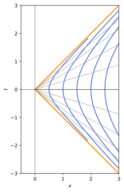
figures/sr-rindler.sage.
The metric in Rindler coordinates follows by differentiation. The first example computes it (Blennow and Ohlsson 2022, Problem 1.48 a). The computation is two lines of differentials.
Example 172 (The Rindler metric) dt = \sinh(aT)dX + aX\cosh(aT)dT and dx = \cosh(aT)dX + aX\sinh(aT)dT, so dt^2 - dx^2 = a^2X^2dT^2 - dX^2: the metric is static, independent of T, but g_{TT} = a^2X^2 depends on X. It is Minkowski spacetime in other coordinates, flat, as the vanishing of its curvature, computed later in Exercise 2 of General relativity, confirms.
Veriphy. Pending.
Lean. Pending.
Sage. Pending.
The Rindler observers are uniformly accelerated, each with its own acceleration. The second example identifies them with the hyperbolic motions of 1.
Example 173 (Each observer has constant proper acceleration) At fixed X, x^2 - t^2 = X^2: a hyperbolic worldline with proper acceleration 1/X (Exercise 181) and proper time \tau = aXT. The observer at X = 1/a has proper time T; observers closer to the horizon accelerate harder. Their distances X_2 - X_1, measured along the lines T = \text{constant}, never change: unlike the spaceships of Exercise 190, the Rindler observers form a rigid frame.
Veriphy. Pending.
Lean. Pending.
Sage. Pending.
The radar construction of Example 3, carried out by a uniformly accelerated observer, gives another set of coordinates. The third example records them (Boskoff and Capozziello 2024, sec. 9.6).
Example 174 (Radar coordinates of an accelerated observer) An observer with proper acceleration \alpha and proper time \tau who assigns radar distances \bar x to events obtains t = \frac{e^{\alpha\bar x}}{\alpha}\sinh\alpha\tau, x = \frac{e^{\alpha\bar x}}{\alpha}\cosh\alpha\tau (Boskoff and Capozziello 2024, Theorem 9.6.3). This is the Rindler frame with a = \alpha, T = \tau and X = e^{\alpha\bar x}/\alpha, and the metric becomes e^{2\alpha\bar x}(d\tau^2 - d\bar x^2), conformal to the Minkowski form.
Veriphy. Pending.
Lean. Pending.
Sage. Pending.
Light moving in the Rindler frame has a wave vector with Rindler components. The first exercise computes them (Blennow and Ohlsson 2022, Problem 1.48 b).
Exercise 187 (A photon in Rindler coordinates) A photon with k = (\omega, \omega\cos\theta, 0, \omega\sin\theta) is emitted at t = t_0, x = x_0, y = z = 0 with x_0 > |t_0|. Compute its components (k^T, k^X, k^Y, k^Z) in the Rindler coordinates and check that they form a null vector of the Rindler metric.
With T = \frac1a\operatorname{artanh}(t/x), X = \sqrt{x^2 - t^2}: k^T = \omega\frac{x_0 - t_0\cos\theta}{aX_0^2}, k^X = \omega\frac{x_0\cos\theta - t_0}{X_0}, k^Y = 0, k^Z = \omega\sin\theta, with X_0^2 = x_0^2 - t_0^2; and a^2X_0^2(k^T)^2 - (k^X)^2 - (k^Z)^2 = 0:
var('t x a w th', domain='real')
T = arctanh(t/x)/a; X = sqrt(x^2 - t^2)
k = vector([w, w*cos(th), 0, w*sin(th)]) # (t, x, y, z) components
kT = (diff(T, t)*k[0] + diff(T, x)*k[1]).simplify_full()
kX = (diff(X, t)*k[0] + diff(X, x)*k[1]).simplify_full()
print("k^T =", kT, " k^X =", kX, " k^Y = 0 k^Z =", k[3])
print("Rindler norm a^2 X^2 (k^T)^2 - (k^X)^2 - (k^Z)^2 =", (a^2*X^2*kT^2 - kX^2 - k[3]^2).simplify_full())Output:
k^T = (t*w*cos(th) - w*x)/(a*t^2 - a*x^2) k^X = (w*x*cos(th) - t*w)/sqrt(-t^2 + x^2) k^Y = 0 k^Z = w*sin(th)
Rindler norm a^2 X^2 (k^T)^2 - (k^X)^2 - (k^Z)^2 = 0Veriphy. Pending.
Lean. Pending.
Sage. Pending.
A Rindler observer can move sideways in the frame. The second exercise computes her proper time (Blennow and Ohlsson 2022, Problem 1.48 c).
Exercise 188 (Moving sideways in the Rindler frame) Find the proper time along X = X_0, Y = vT, Z = 0, 0 \leq T \leq T_0.
d\tau^2 = a^2X_0^2dT^2 - v^2dT^2, so \tau = T_0\sqrt{a^2X_0^2 - v^2}, real for v < aX_0: the local speed of light at X_0 in the coordinates (T, Y) is aX_0, smaller near the horizon.
Veriphy. Pending.
Lean. Pending.
Sage. Pending.
The radar coordinates of the third example can be inverted explicitly. The third exercise asks for the inverse and the metric (Boskoff and Capozziello 2024, Exercise 9.6.5).
Exercise 189 (Inverting the radar coordinates) Show that the inverse of t = \frac{e^{\alpha\bar x}}{\alpha}\sinh\alpha\tau, x = \frac{e^{\alpha\bar x}}{\alpha}\cosh\alpha\tau is \tau = \frac1\alpha\operatorname{artanh}\frac tx, \bar x = \frac{1}{2\alpha}\ln(\alpha^2(x^2 - t^2)), and that dt^2 - dx^2 = e^{2\alpha\bar x}(d\tau^2 - d\bar x^2).
t/x = \tanh\alpha\tau and x^2 - t^2 = e^{2\alpha\bar x}/\alpha^2 give the inverse. The metric follows as in Example 172 with X = e^{\alpha\bar x}/\alpha, dX = e^{\alpha\bar x}d\bar x, a = \alpha:
var('al tau xb', domain='positive')
t = exp(al*xb)/al*sinh(al*tau); x = exp(al*xb)/al*cosh(al*tau)
print("tau from atanh(t/x)/alpha at alpha = 0.7, tau = 1.3, xb = 0.4:", n((arctanh(t/x)/al).subs(al=0.7, tau=1.3, xb=0.4)))
print("xb from log(alpha^2 (x^2 - t^2))/(2 alpha):", (log(al^2*(x^2 - t^2))/(2*al)).simplify_full())
J = matrix([[diff(t, tau), diff(t, xb)], [diff(x, tau), diff(x, xb)]])
g = (J.transpose()*diagonal_matrix([1, -1])*J).simplify_full()
print("metric in (tau, xb):"); print(g)Output:
tau from atanh(t/x)/alpha at alpha = 0.7, tau = 1.3, xb = 0.4: 1.30000000000000
xb from log(alpha^2 (x^2 - t^2))/(2 alpha): xb
metric in (tau, xb):
[ e^(2*al*xb) 0]
[ 0 -e^(2*al*xb)]Veriphy. Pending.
Lean. Pending.
Sage. Pending.
The Rindler observers resemble observers at rest in a gravitational field. Clocks at different heights run at different rates, light climbing up is redshifted, and there is a horizon beyond which nothing can be seen. The proposition below states these facts, which Boskoff and Capozziello (2024, sec. 9.6.1) uses to introduce gravity.
Proposition 22 (Clocks and light in the Rindler frame) In the Rindler frame:
- A clock at rest at X runs at the rate d\tau/dT = aX.
- Light sent from the observer at X_1 to the observer at X_2 is received with the frequency \omega_2 = \omega_1X_1/X_2, both measured with proper clocks; in the radar coordinates of Example 174, \omega_2 = \omega_1e^{-\alpha(\bar x_2 - \bar x_1)}.
- No event with t \geq x can send a signal to any Rindler observer.
Proof. (1) For dX = dY = dZ = 0, d\tau = aX\,dT. (2) The metric does not depend on T, so a light signal emitted at T arrives after a coordinate time that does not depend on T; two successive crests, emitted \Delta T apart, arrive \Delta T apart. Their proper periods are aX_1\Delta T and aX_2\Delta T, so \omega_2/\omega_1 = X_1/X_2; with X = e^{\alpha\bar x}/\alpha, X_1/X_2 = e^{-\alpha(\bar x_2 - \bar x_1)}. (3) Every event q in the causal future of an event p satisfies t_q - t_p \geq |\vec x_q - \vec x_p| \geq x_q - x_p, so t_q - x_q \geq t_p - x_p. If t_p \geq x_p, every such q has t_q \geq x_q, while every point of a Rindler worldline has t < x. \square
Veriphy. Pending.
Lean. Pending.
Sage. Pending.
Near a Rindler observer the frame looks like a laboratory in a uniform gravitational field. The first example evaluates the redshift for a tower on the Earth.
Example 175 (A tower in an accelerating rocket) Inside a rocket accelerating at g, light sent up a height h is redshifted by 1 - gh/c^2 to first order (part 2 with X_2 = X_1 + h, X_1 = c^2/g): for h = 22.5\,m, gh/c^2 = 2.5 \times 10^{-15}, the shift that Pound and Rebka measured in the gravitational field of the Earth (Example 10 of General relativity, in the next chapter). The equivalence principle, which Definition 2 of General relativity states, asserts that a uniformly accelerated frame and a uniform gravitational field are locally indistinguishable, so the two shifts must agree.
Veriphy. Pending.
Lean. Pending.
Sage. Pending.
The horizon is at a definite distance behind each observer. The second example evaluates it for an acceleration of one g.
Example 176 (The horizon behind a rocket) An observer with proper acceleration \alpha is at X = c^2/\alpha from the horizon. For \alpha = g this is c^2/g \approx 0.97\,ly: events behind the rocket further than a light-year in its frame are hidden from it as long as it accelerates, which is the horizon met in Exercise 185.
Veriphy. Pending.
Lean. Pending.
Sage. Pending.
The redshift in radar coordinates is exactly exponential. The third example states Boskoff and Capozziello’s result and its interpretation. It agrees with part 2 for small heights.
Example 177 (An exponential redshift) In the radar coordinates of an observer with acceleration \alpha, light emitted at the observer with frequency \nu is received at the radar height h with frequency \nu e^{-\alpha h} (Boskoff and Capozziello 2024, Theorem 9.6.6). For \alpha h \ll 1 this is \nu(1 - \alpha h), the same as in the first example; the exponential holds for all h because radar heights add along the frame, as rapidities do along a line.
Veriphy. Pending.
Lean. Pending.
Sage. Pending.
Two spaceships that accelerate identically in the launch frame do not form a rigid frame. The first exercise shows that a string between them breaks (Blennow and Ohlsson 2022, Problem 1.18).
Exercise 190 (Bell’s spaceships) Two ships 40\,km apart, at rest, start simultaneously in their launch frame with the same acceleration of c/50 per second in that frame and stop after 30\,s. Does a string tied between them break? What is their separation in their new rest frame?
In the launch frame their separation stays 40\,km. After the stop they move at v = 0.6c, and their separation, contracted in the launch frame, is \gamma \cdot 40\,km = 50\,km in their own frame: the string, whose rest length would have to grow, breaks. To stay rigid the rear ship must accelerate harder, as the Rindler observers do:
v = 30/50; g = 1/sqrt(1 - v^2)
print("final speed %.2f c, gamma = %s, separation in the new rest frame = %s km" % (v, g, g*40))Output:
final speed 0.60 c, gamma = 5/4, separation in the new rest frame = 50 kmVeriphy. Pending.
Lean. Pending.
Sage. Pending.
The accelerated observer receives signals redshifted by her own motion. The second exercise follows a signal and its reflection (Blennow and Ohlsson 2022, Problem 1.71).
Exercise 191 (A reflected signal) In Exercise 185, A sends the signal with frequency \omega. Show that B receives the frequency \omega e^{-\alpha\tau}, with \tau her proper time at reception, and that the signal reflected by B back to A arrives with \omega e^{-2\alpha\tau}.
At reception B has rapidity \alpha\tau and recedes along the light, so the Doppler factor is e^{-\alpha\tau} (Example 170). The mirror re-emits this frequency in its own frame, and A sees a receding source with the same rapidity: another factor e^{-\alpha\tau}.
Veriphy. Pending.
Lean. Pending.
Sage. Pending.
Parts 1 and 2 of the proposition are two descriptions of one redshift. The third exercise checks their agreement on a light ray followed explicitly.
Exercise 192 (Following a light ray) With a = 1, a light ray leaves the Rindler observer at X_1 = 1 at T = 0 towards larger X and reaches X_2 = 2. Find its coordinate travel time \Delta T, show that it does not depend on the emission time, and compute the received frequency ratio directly from the wave vectors.
Along the ray dX = aX\,dT (null and outgoing in the Rindler metric), so \Delta T = \frac1a\ln(X_2/X_1) = \ln2, whatever the emission time. In inertial coordinates the ray emitted at T = 0 is x - t = 1 with k = \omega_1(1, 1); it meets x^2 - t^2 = 4 at (t, x) = (1.5, 2.5), where the observer has the four-velocity u_2 = (\cosh\ln2, \sinh\ln2) = (1.25, 0.75). So \omega_2/\omega_1 = k\cdot u_2/k\cdot u_1 = 1.25 - 0.75 = \tfrac12 = X_1/X_2:
var('t')
t2 = solve((t + 1)^2 - t^2 == 4, t)[0].rhs(); x2 = t2 + 1
T2 = arctanh(t2/x2)
eta = diagonal_matrix([1, -1])
k = vector([1, 1]); u1 = vector([1, 0]); u2 = vector([cosh(T2), sinh(T2)])
print("arrival event (t, x) = (%s, %s), Rindler time T = %s" % (t2, x2, T2.simplify_full()))
print("omega_2/omega_1 = %s (X1/X2 = 1/2)" % ((k*eta*u2)/(k*eta*u1)).simplify_full())Output:
arrival event (t, x) = (3/2, 5/2), Rindler time T = log(2)
omega_2/omega_1 = 1/2 (X1/X2 = 1/2)Veriphy. Pending.
Lean. Pending.
Sage. Pending.
Exercises
The exercises below combine forces, hyperbolic motion and the Rindler frame. The first is the linear accelerator at Stanford (Blennow and Ohlsson 2022, Problem 1.131).
Exercise 193 (An electron at SLAC) An electron is accelerated from rest through U = 50\,GV over L = 3\,km in a uniform field. Find x(t), the time to traverse the accelerator, and E(t).
The proper acceleration is \alpha = eU/(mL), in units c = 1 equal to 97847/(3000\,\mathrm{m}) = 32.6\,\mathrm{m}^{-1}, and 1 gives x = (\sqrt{1 + \alpha^2t^2} - 1)/\alpha and E = m\sqrt{1 + \alpha^2t^2}. The traversal time is \sqrt{(1 + \alpha L)^2 - 1}/\alpha \approx L + 1/\alpha, that is L/c = 10.0069\,\mus plus 0.1\,ns: after the first few centimetres the electron moves essentially at the speed of light:
c = 2.99792458e8; m = 0.51099895e6; U = 50e9; L = 3000.0
al = U/(m*L) # proper acceleration in 1/m (c = 1)
t = sqrt((1 + al*L)^2 - 1)/al
print("alpha = %.3f per metre" % al)
print("traversal time %.6f microseconds; L/c = %.6f microseconds; difference %.3f ns" % (t/c*1e6, L/c*1e6, (t - L)/c*1e9))
print("final energy %.4f GeV" % (m*(1 + al*L)/1e9))Output:
alpha = 32.616 per metre
traversal time 10.007025 microseconds; L/c = 10.006923 microseconds; difference 0.102 ns
final energy 50.0005 GeVVeriphy. Pending.
Lean. Pending.
Sage. Pending.
The second exercise computes the four-force of a dust cloud on a ship and classifies it (Blennow and Ohlsson 2022, Problem 1.145). The classification uses the definitions of Definition 24.
Exercise 194 (A ship enters a dust cloud) A ship of cross section A moves with velocity v into dust of rest density \rho_0 at rest in the galaxy, absorbing all the dust it meets. Find the four-force on the ship in the galaxy frame and in the ship’s frame, and decide whether it is pure, heat-like or neither.
Per unit galactic time the ship absorbs dust of rest mass \rho_0Av with zero momentum, so dp/dt = \rho_0Av(1, \vec 0) and F = dp/d\tau = \gamma\rho_0Av(1, \vec 0). Then F\cdot u = \gamma^2\rho_0Av \neq 0, so it is not pure; in the ship’s frame F' = \gamma^2\rho_0Av(1, -v, 0, 0), which has a spatial part, so it is not heat-like either: the ship is both heated and slowed.
Veriphy. Pending.
Lean. Pending.
Sage. Pending.
The third exercise is the twin paradox with realistic accelerations, which combines hyperbolic motion with the proper time of Definition 6. The numbers are those of a journey within a human lifetime.
Exercise 195 (The twin paradox at one g) A traveller accelerates at g for \tau_1 of proper time, decelerates for \tau_1, accelerates back for \tau_1 and decelerates for \tau_1, returning home. With \tau_1 = 5\,yr, find the total proper time, the time elapsed on the Earth and the largest distance reached.
Each phase covers the coordinate time (c/g)\sinh(g\tau_1/c) and the distance (c^2/g)(\cosh(g\tau_1/c) - 1). With c/g = 0.969\,yr and g\tau_1/c = 5.16: the traveller ages 20\,yr, the Earth about 338\,yr, and the furthest point is about 167\,ly from home:
c = 2.99792458e8; g = 9.81; yr = 365.25*86400
cg = c/g/yr; x = 5/cg
print("c/g = %.4f yr, g tau1/c = %.4f" % (cg, x))
print("traveller ages %.1f yr; Earth time %.1f yr; furthest distance %.1f ly" % (20, 4*cg*sinh(x), 2*cg*(cosh(x) - 1)))Output:
c/g = 0.9684 yr, g tau1/c = 5.1632
traveller ages 20.0 yr; Earth time 338.4 yr; furthest distance 167.3 lyVeriphy. Pending.
Lean. Pending.
Sage. Pending.
Electrodynamics in covariant form
Maxwell’s equations were the origin of special relativity: they are invariant under Lorentz transformations, not under Galilean ones. Their covariant form, with the potential A^\mu and the field tensor F_{\mu\nu} = \partial_\mu A_\nu - \partial_\nu A_\mu, is developed in Complex and vector fields (Definition 8 of Classical field theory, Example 28 of Classical field theory, Example 33 of Classical field theory) and derived from an action in Actions and Euler-Lagrange equations (Example 63 of Classical field theory, Exercise 63 of Classical field theory); this part does not repeat that material. It adds what the group theory of this chapter gives: the transformation of the fields under an arbitrary boost, the two invariants and the classification of fields they imply, and the covariant equation of motion of a charge. The conventions are those of Complex and vector fields: Heaviside-Lorentz units with c = 1, F_{0i} = E^i, F_{ij} = -\epsilon_{ijk}B^k, so that F^{i0} = E^i and F^{ij} = -\epsilon_{ijk}B^k. The sources are Maggiore (2023, secs. 8.5–8.6) and Blennow and Ohlsson (2022, sec. 1.7). The same physics in vector form, with Maxwell’s equations, the potentials, the fields of moving charges and radiation, is in Classical electromagnetism (Maxwell’s equations, potentials and gauge invariance, Waves, moving charges and radiation); the covariant form adds the manifest invariance under boosts.
The field tensor under Lorentz transformations
The electric and magnetic fields are the six components of one antisymmetric tensor, so they mix under boosts. For a boost along a coordinate axis the mixing was written in Example 33 of Classical field theory; the proposition below gives it for any direction, and Figure 23 shows its most famous consequence, the field of a moving charge.
Proposition 23 (Transformation of the electric and magnetic fields) In a frame moving with velocity \vec v relative to the original one, with \gamma = (1 - v^2)^{-1/2} and \parallel, \perp denoting the components along and across \vec v, \vec E'_\parallel = \vec E_\parallel, \qquad \vec B'_\parallel = \vec B_\parallel, \qquad \vec E'_\perp = \gamma(\vec E + \vec v\times\vec B)_\perp, \qquad \vec B'_\perp = \gamma(\vec B - \vec v\times\vec E)_\perp . \tag{21}
Proof. The fields transform as F'^{\mu\nu} = \Lambda^\mu{}_\alpha\Lambda^\nu{}_\beta F^{\alpha\beta} (Equation 6) with the passive boost \Lambda = B(-\vec v). Both sides of Equation 21 are built from vectors and are covariant under rotations (a rotation commutes with the boost up to rotating \vec v, Exercise 77), so it suffices to take \vec v = v\hat x. Then \Lambda^0{}_0 = \Lambda^1{}_1 = \gamma, \Lambda^0{}_1 = \Lambda^1{}_0 = -\gamma v, and \Lambda leaves y, z alone. With F^{i0} = E^i and F^{ij} = -\epsilon_{ijk}B^k: E'_x = F'^{10} = (\Lambda^1{}_1\Lambda^0{}_0 - \Lambda^1{}_0\Lambda^0{}_1)F^{10} = \gamma^2(1 - v^2)E_x = E_x; E'_y = F'^{20} = \Lambda^0{}_0F^{20} + \Lambda^0{}_1F^{21} = \gamma E_y - \gamma vB_z, since F^{21} = -\epsilon_{213}B_z = B_z; likewise E'_z = \gamma(E_z + vB_y), B'_x = B_x, B'_y = \gamma(B_y + vE_z) and B'_z = \gamma(B_z - vE_y) (Exercise 196). These are Equation 21 for \vec v = v\hat x, since (\vec v\times\vec B)_y = -vB_z, (\vec v\times\vec B)_z = vB_y, (\vec v\times\vec E)_y = -vE_z and (\vec v\times\vec E)_z = vE_y. \square
Veriphy. Pending.
Lean. Pending.
Sage. Pending.
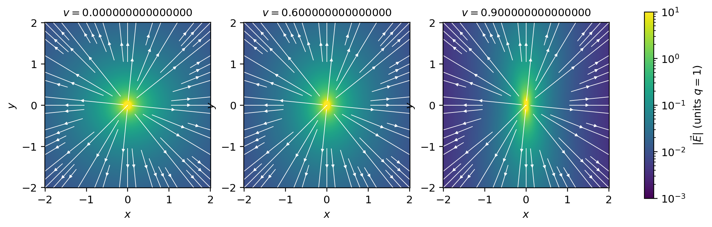
figures/sr-moving-charge.sage.
A pure electric field acquires a magnetic part in a moving frame. The first example computes it for a field across the motion (Blennow and Ohlsson 2022, Problem 1.114).
Example 178 (A boosted electric field) For \vec E = (0, 0, E), \vec B = 0 and \vec v = v\hat x: \vec E' = (0, 0, \gamma E) and \vec B' = -\gamma\vec v\times\vec E = \gamma vE\hat y. The moving observer sees the electric field enhanced and a magnetic field perpendicular to both \vec v and \vec E; to first order in v, \vec B' = -\vec v\times\vec E (Blennow and Ohlsson 2022, Problem 1.115).
Veriphy. Pending.
Lean. Pending.
Sage. Pending.
The field of a uniformly moving charge follows from the Coulomb field by a boost. The second example derives it, and Figure 23 draws it (Blennow and Ohlsson 2022, Problem 1.117; Maggiore 2023, sec. 10.3). In vector form the field was obtained from the retarded potentials in Example 254 of Classical electromagnetism; the boost adds that the result is exact for any constant velocity without solving a wave equation.
Example 179 (The field of a moving charge) A charge q at rest at the origin of S', which moves with v along x, has \vec E' = q\vec r'/(4\pi r'^3), \vec B' = 0. In S, at the instant t = 0 when the charge is at the origin, x' = \gamma x, and the inverse of Equation 21 gives \vec E = \frac{q\gamma\vec r}{4\pi(\gamma^2x^2 + y^2 + z^2)^{3/2}}, still radial, and \vec B = \vec v\times\vec E. Across the motion (x = 0) the field is \gamma times the Coulomb value, along it 1/\gamma^2 times.
Veriphy. Pending.
Lean. Pending.
Sage. Pending.
A current in a neutral wire produces only a magnetic field. The third example shows that a moving observer sees an electric field as well, because the wire is charged in her frame (Blennow and Ohlsson 2022, Problem 1.119).
Example 180 (A current-carrying wire) A neutral wire along x with current I has, at distance r, \vec B = \frac{I}{2\pi r}\hat\phi and \vec E = 0. For an observer moving with v along the wire, Equation 21 gives \vec E' = \gamma\vec v\times\vec B, radial of size \gamma vI/(2\pi r), and \vec B' = \gamma\vec B. The same follows by transforming the current four-vector j = (0, I, 0, 0) (per unit cross section): in the moving frame the charge density is -\gamma vI, and its Coulomb field is \vec E'.
Veriphy. Pending.
Lean. Pending.
Sage. Pending.
The first exercise checks Equation 21 for a general boost against the tensor law, which completes the proof. The check covers all components at once.
Exercise 196 (The transformation law for any velocity) With Sage, transform F^{\mu\nu} by the passive boost B(-\vec v) for symbolic \vec E, \vec B and a numerical \vec v in a general direction, and compare with Equation 21.
The tensor law and the vector formula agree component by component:
E = vector(SR, var('E1 E2 E3')); Bv = vector(SR, var('B1 B2 B3'))
eps = lambda i, j, k: sign(Permutation([i + 1, j + 1, k + 1]).signature()) if len({i, j, k}) == 3 else 0
F = matrix(SR, 4, 4)
for i in range(3):
F[i + 1, 0] = E[i]; F[0, i + 1] = -E[i]
for j in range(3):
F[i + 1, j + 1] = -sum(eps(i, j, k)*Bv[k] for k in range(3))
v = vector(QQ, [3/13, 4/13, 12/13])*(1/2) # |v| = 1/2
g = 1/sqrt(1 - v*v); vh = v/v.norm()
L = identity_matrix(SR, 4); L[0, 0] = g
for i in range(3):
L[0, i + 1] = -g*v[i]; L[i + 1, 0] = -g*v[i]
for j in range(3):
L[i + 1, j + 1] = (1 if i == j else 0) + (g - 1)*vh[i]*vh[j]
Fp = L*F*L.transpose()
Ep = vector([Fp[i + 1, 0] for i in range(3)]); Bp = vector([-Fp[2, 3], -Fp[3, 1], -Fp[1, 2]])
par = lambda X: (X*vh)*vh
Ef = par(E) + g*(E + v.cross_product(Bv) - par(E + v.cross_product(Bv)))
Bf = par(Bv) + g*(Bv - v.cross_product(E) - par(Bv - v.cross_product(E)))
print("E' - formula:", (Ep - Ef).simplify_full(), " B' - formula:", (Bp - Bf).simplify_full())Output:
E' - formula: (0, 0, 0) B' - formula: (0, 0, 0)Veriphy. Pending.
Lean. Pending.
Sage. Pending.
A field that is purely magnetic in one frame may become purely electric only if the invariants allow it. The second exercise finds the electric field in a frame where the magnetic field vanishes (Blennow and Ohlsson 2022, Problem 1.129).
Exercise 197 (A frame without magnetic field) In S the fields are \vec E and \vec B, and in S', moving with u along x, the magnetic field vanishes. Express \vec E' in terms of u and \vec E.
\vec B' = 0 requires B_x = 0, B_y = -uE_z and B_z = uE_y, that is \vec B = \vec u\times\vec E. Then \vec E'_\perp = \gamma(\vec E + \vec u\times(\vec u\times\vec E))_\perp = \gamma(1 - u^2)\vec E_\perp = \vec E_\perp/\gamma and E'_x = E_x: \vec E' = (E_x, E_y/\gamma, E_z/\gamma).
Veriphy. Pending.
Lean. Pending.
Sage. Pending.
A magnetic field seen from a moving frame has an electric part. The third exercise computes it and checks the invariants (Blennow and Ohlsson 2022, Problem 1.130).
Exercise 198 (A boosted magnetic field) In S there is a uniform magnetic field \vec B and no electric field. Find \vec E' and \vec B' in a frame moving with v along x, and verify that E'^2 - B'^2 and \vec E'\cdot\vec B' equal their values in S.
\vec E' = \gamma(\vec v\times\vec B)_\perp = \gamma v(0, -B_z, B_y), \vec B' = (B_x, \gamma B_y, \gamma B_z). Then \vec E'\cdot\vec B' = \gamma^2v(-B_zB_y + B_yB_z) = 0 and E'^2 - B'^2 = \gamma^2v^2(B_y^2 + B_z^2) - B_x^2 - \gamma^2(B_y^2 + B_z^2) = -B^2:
var('Bx By Bz v', domain='real')
g = 1/sqrt(1 - v^2)
Ep = vector([0, -g*v*Bz, g*v*By]); Bp = vector([Bx, g*By, g*Bz])
print("E'.B' =", (Ep*Bp).simplify_full(), " E'^2 - B'^2 =", (Ep*Ep - Bp*Bp).simplify_full())Output:
E'.B' = 0 E'^2 - B'^2 = -Bx^2 - By^2 - Bz^2Veriphy. Pending.
Lean. Pending.
Sage. Pending.
The six field components have two invariant combinations. They are the real and imaginary parts of the square of the complex vector \vec E + i\vec B, which transforms by complex rotations (Example 93), and they decide whether a field can be made purely electric or purely magnetic by a choice of frame.
Proposition 24 (The invariants of the electromagnetic field) E^2 - B^2 = -\tfrac12F_{\mu\nu}F^{\mu\nu} and \vec E\cdot\vec B = \tfrac18\epsilon^{\mu\nu\rho\sigma}F_{\mu\nu}F_{\rho\sigma} are Lorentz invariants. Moreover:
- If \vec E\cdot\vec B \neq 0, or if \vec E\cdot\vec B = 0 and E^2 \neq B^2, there is a frame in which \vec E and \vec B are parallel (or one of them vanishes), reached by a boost along \vec E\times\vec B with the velocity \vec v such that \frac{\vec v}{1 + v^2} = \frac{\vec E\times\vec B}{E^2 + B^2}.
- If \vec E\cdot\vec B = 0 and B^2 > E^2, the field is purely magnetic in that frame; if E^2 > B^2, purely electric.
- If both invariants vanish (a null field, such as a plane wave), no frame makes \vec E and \vec B parallel or removes either.
Proof. The contractions are scalars by Exercise 59, and \epsilon is invariant under SO^+(1, 3) (Example 53); their values in terms of \vec E, \vec B are computed in Exercise 199. (1) Choose axes with \vec E\times\vec B = S\hat x, so \vec E, \vec B lie in the yz-plane, and boost with \vec v = v\hat x. By Equation 21, \vec E' = \gamma(\vec E + \vec v\times\vec B), \vec B' = \gamma(\vec B - \vec v\times\vec E), and with the identities \vec E\times(\vec v\times\vec E) = \vec vE^2, (\vec v\times\vec B)\times\vec B = -\vec vB^2 and (\vec v\times\vec B)\times(\vec v\times\vec E) = -\vec v(\vec v\cdot(\vec E\times\vec B)), valid for \vec v \perp \vec E, \vec B: \vec E'\times\vec B' = \gamma^2\bigl(\vec E\times\vec B - \vec v(E^2 + B^2) + \vec v(\vec v\cdot\vec E\times\vec B)\bigr) = \gamma^2\hat x\bigl(S(1 + v^2) - v(E^2 + B^2)\bigr) . It vanishes for v/(1 + v^2) = S/(E^2 + B^2), which has a solution |v| < 1 because 2S \leq 2|\vec E||\vec B| \leq E^2 + B^2, with equality in both only if \vec E \perp \vec B and E = B. (2) In the new frame \vec E' \parallel \vec B' and \vec E'\cdot\vec B' = 0, so one vanishes, and E'^2 - B'^2 has the sign of E^2 - B^2. (3) If both invariants vanish, a frame with \vec E' \parallel \vec B' would have E'B' = 0 and E'^2 = B'^2, so \vec E' = \vec B' = 0, and then F = 0 in every frame. \square
Veriphy. Pending.
Lean. Pending.
Sage. Pending.
The Coulomb field is the simplest field with E^2 > B^2, and every moving charge carries one. The first example checks the invariants for the field of Example 179.
Example 181 (The invariants of a moving charge) For the moving charge, \vec B = \vec v\times\vec E, so \vec E\cdot\vec B = 0 and E^2 - B^2 = E^2 - |\vec v\times\vec E|^2 > 0: at every point the field is electric in some frame, the rest frame of the charge. At the point (0, y, 0), E = \gamma q/(4\pi y^2) and B = vE, so E^2 - B^2 = q^2/(16\pi^2y^4), the Coulomb value: the invariant knows the rest-frame field.
Veriphy. Pending.
Lean. Pending.
Sage. Pending.
A plane wave is a null field in every frame. The second example computes its invariants from the potential (Blennow and Ohlsson 2022, Problem 1.121). Example 232 of Classical electromagnetism noted that both invariants vanish for a plane wave; the covariant form explains why this holds in every frame.
Example 182 (A plane wave is null) For A_\mu = \epsilon_\mu e^{-ik\cdot x} with k\cdot k = 0 and k\cdot\epsilon = 0, F_{\mu\nu} = -i(k_\mu\epsilon_\nu - k_\nu\epsilon_\mu)e^{-ik\cdot x}, and F_{\mu\nu}F^{\mu\nu} \propto 2(k^2\epsilon^2 - (k\cdot\epsilon)^2) = 0, \epsilon^{\mu\nu\rho\sigma}F_{\mu\nu}F_{\rho\sigma} \propto \epsilon^{\mu\nu\rho\sigma}k_\mu\epsilon_\nu k_\rho\epsilon_\sigma = 0. In every frame |\vec E| = |\vec B| and \vec E \perp \vec B: light cannot be transformed away, nor into a static field.
Veriphy. Pending.
Lean. Pending.
Sage. Pending.
Crossed fields with E < B become purely magnetic in the frame of the drift velocity. The third example applies part 1, recovering Example 35 of Classical field theory. The drift was found in vector form in Example 70 of Classical electromagnetism; the boost to the drift frame removes the electric field exactly.
Example 183 (The drift frame of crossed fields) For \vec E = E\hat y, \vec B = B\hat z, 0 < E < B: \vec E\times\vec B = EB\hat x, and v/(1 + v^2) = EB/(E^2 + B^2) has the root v = E/B (the other root is B/E > 1). In the frame moving with \vec v = (E/B)\hat x, \vec E' = 0 and B' = \sqrt{B^2 - E^2}: charges circle in the pure magnetic field and drift with \vec E\times\vec B/B^2 in the original frame.
Veriphy. Pending.
Lean. Pending.
Sage. Pending.
The values of the invariants in terms of \vec E and \vec B depend on the sign conventions. The first exercise computes them in those of this chapter.
Exercise 199 (The invariants in components) With F_{0i} = E^i, F_{ij} = -\epsilon_{ijk}B^k and \epsilon_{0123} = 1 (so \epsilon^{0123} = -1), compute F_{\mu\nu}F^{\mu\nu} and \epsilon^{\mu\nu\rho\sigma}F_{\mu\nu}F_{\rho\sigma} with Sage.
F_{\mu\nu}F^{\mu\nu} = 2(B^2 - E^2) (as in Exercise 59 of Classical field theory) and \epsilon^{\mu\nu\rho\sigma}F_{\mu\nu}F_{\rho\sigma} = 8\vec E\cdot\vec B; for example the eight terms with indices \{0, 1\} and \{2, 3\} each give \epsilon^{0123}F_{01}F_{23} = (-1)(E^1)(-B^1). Sources with \epsilon_{0123} = -1, or with upper-index F, find -8\vec E\cdot\vec B:
E = vector(SR, var('E1 E2 E3')); B = vector(SR, var('B1 B2 B3'))
eps3 = lambda i, j, k: sign(Permutation([i + 1, j + 1, k + 1]).signature()) if len({i, j, k}) == 3 else 0
eps4 = lambda *s: 0 if len(set(s)) < 4 else sign(Permutation([i + 1 for i in s]).signature())
Fl = matrix(SR, 4, 4)
for i in range(3):
Fl[0, i + 1] = E[i]; Fl[i + 1, 0] = -E[i]
for j in range(3):
Fl[i + 1, j + 1] = -sum(eps3(i, j, k)*B[k] for k in range(3))
eta = diagonal_matrix([1, -1, -1, -1]); Fu = eta*Fl*eta
I1 = sum(Fl[m, n]*Fu[m, n] for m in range(4) for n in range(4))
I2 = sum(-eps4(m, n, r, s)*Fl[m, n]*Fl[r, s] for m in range(4) for n in range(4) for r in range(4) for s in range(4)) # eps^{0123} = -1
print("F_{mu nu} F^{mu nu} =", I1.expand(), " = 2(B^2 - E^2):", bool((I1 - 2*(B*B - E*E)).expand() == 0))
print("eps^{mu nu rho sigma} F F =", I2.expand(), " = 8 E.B:", bool((I2 - 8*E*B).expand() == 0))Output:
F_{mu nu} F^{mu nu} = 2*B1^2 + 2*B2^2 + 2*B3^2 - 2*E1^2 - 2*E2^2 - 2*E3^2 = 2(B^2 - E^2): True
eps^{mu nu rho sigma} F F = 8*B1*E1 + 8*B2*E2 + 8*B3*E3 = 8 E.B: TrueVeriphy. Pending.
Lean. Pending.
Sage. Pending.
The invariants determine unknown field components measured by another observer. The second exercise uses them as in Blennow and Ohlsson (2022, Problems 1.124 and 1.125).
Exercise 200 (Unknown components from the invariants) Observer A measures \vec E = (\alpha, -\alpha, 0), \vec B = (0, 0, 2\alpha). Observer B measures \vec E' = (0, 0, 2\alpha) and \vec B' = (B_x, \alpha, B_z). Find B_x and B_z.
\vec E\cdot\vec B = 0 gives 2\alpha B_z = 0, so B_z = 0; E^2 - B^2 = 2\alpha^2 - 4\alpha^2 = -2\alpha^2 = 4\alpha^2 - B_x^2 - \alpha^2 gives B_x^2 = 5\alpha^2, B_x = \pm\sqrt5\alpha:
var('al Bx Bz', domain='real')
E = vector([al, -al, 0]); B = vector([0, 0, 2*al]); Ep = vector([0, 0, 2*al]); Bp = vector([Bx, al, Bz])
print(solve([Ep*Bp == E*B, Ep*Ep - Bp*Bp == E*E - B*B], [Bx, Bz]))Output:
[
[Bx == -sqrt(5)*al, Bz == 0],
[Bx == sqrt(5)*al, Bz == 0]
]Veriphy. Pending.
Lean. Pending.
Sage. Pending.
The angle between \vec E and \vec B changes from frame to frame, but in a constrained way. The third exercise finds the constraint for fields of equal magnitude (Blennow and Ohlsson 2022, Problem 1.135).
Exercise 201 (The angle between \vec E and \vec B) If |\vec E| = |\vec B| in one frame and the angle between them is \alpha, show that in any other frame |\vec E'| = |\vec B'| and \cos\alpha' = (E^2/E'^2)\cos\alpha.
E^2 - B^2 = 0 is invariant, so E' = B'. \vec E\cdot\vec B = E^2\cos\alpha is invariant, so E'^2\cos\alpha' = E^2\cos\alpha.
Veriphy. Pending.
Lean. Pending.
Sage. Pending.
The covariant Lorentz force
The force on a charge in an electromagnetic field is the Lorentz force. In covariant form it is a single equation, linear in the four-velocity and in the field tensor, whose antisymmetry guarantees that the rest mass is conserved (Maggiore (2023, sec. 8.6.1)); Figure 24 shows a solution.
Proposition 25 (The covariant Lorentz force) The equation m\,du^\mu/d\tau = qF^\mu{}_\nu u^\nu is Lorentz covariant, defines a pure four-force, and is equivalent to \frac{d}{dt}(\gamma m\vec v) = q(\vec E + \vec v\times\vec B), \qquad \frac{d}{dt}(\gamma m) = q\vec E\cdot\vec v .
Proof. Both sides are four-vectors, so the equation holds in every frame if it holds in one. u_\mu F^\mu{}_\nu u^\nu = F_{\mu\nu}u^\mu u^\nu = 0 by antisymmetry, so the force is pure (Definition 24). With F^{i0} = E^i, F^i{}_0 = F^{i0} = E^i and F^i{}_j = F^{ik}\eta_{kj} = -F^{ij} = \epsilon_{ijk}B^k, F^i{}_\nu u^\nu = \gamma(E^i + \epsilon_{ijk}v^jB^k) = \gamma(\vec E + \vec v\times\vec B)^i; and F^0{}_j u^j = -F^{0j}\gamma v^j = \gamma\vec E\cdot\vec v. Dividing m\,du^\mu/d\tau = \gamma m\,du^\mu/dt by \gamma gives the two equations. \square
Veriphy. Pending.
Lean. Pending.
Sage. Pending.
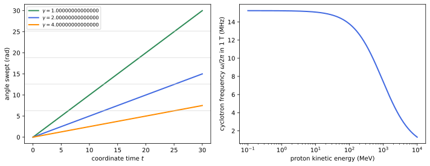
figures/sr-cyclotron.sage.
A uniform electric field accelerates a charge along it with constant proper acceleration. The first example identifies the motion with 1 (Blennow and Ohlsson 2022, Problem 1.118).
Example 184 (A constant electric field) For \vec E = E\hat x and a charge starting from rest, d(\gamma mv)/dt = qE gives \gamma v = qEt/m, the hyperbolic motion with \alpha = qE/m. As a function of the displacement, \gamma = 1 + qEx/m (from d(\gamma m)/dt = qEv), so v(x) = \sqrt{1 - (1 + qEx/m)^{-2}} (Exercise 33 of Classical field theory).
Veriphy. Pending.
Lean. Pending.
Sage. Pending.
A uniform magnetic field bends a charge into a circle at constant speed. The second example finds the frequency and the radius (Blennow and Ohlsson 2022, Problems 1.123 and 1.133 a). Example 67 of Classical electromagnetism solved the non-relativistic case; the covariant equation replaces m by \gamma m in the frequency.
Example 185 (A constant magnetic field) For \vec E = 0 the energy is constant, so \gamma is, and \gamma m\,d\vec v/dt = q\vec v\times\vec B: circular motion with angular frequency \omega = qB/(\gamma m) and radius R = v/\omega = p/(qB). Measuring R in a bubble chamber of known field gives the momentum p = qBR; in practical units p\,[\mathrm{GeV}] = 0.3\,B\,[\mathrm{T}]\,R\,[\mathrm{m}] for a unit charge.
Veriphy. Pending.
Lean. Pending.
Sage. Pending.
The force between moving charges includes a magnetic part that the boost of the Coulomb force reproduces. The third example computes it for two charges moving side by side (Blennow and Ohlsson 2022, Problem 1.143).
Example 186 (Two charges moving side by side) Two electrons a distance d apart move in parallel with velocity v perpendicular to the line joining them. In their rest frame the four-force is (0, 0, f_0, 0) with f_0 = e^2/(4\pi d^2). A boost along x leaves it unchanged, so in the laboratory the four-force is the same and the three-force is f = F^y/\gamma = f_0/\gamma: the repulsion is weaker. In laboratory terms, the field of one electron at the other is \gamma E_0 (Example 179) with B = v\gamma E_0, and the force e\gamma E_0(1 - v^2) = f_0/\gamma is the electric repulsion reduced by the magnetic attraction of two parallel currents.
Veriphy. Pending.
Lean. Pending.
Sage. Pending.
Cosmic-ray muons are deflected by the magnetic field of the Earth. The first exercise estimates the deflection (Blennow and Ohlsson 2022, Problem 1.128).
Exercise 202 (A muon in the field of the Earth) A muon of energy 2\,GeV descends vertically from 10\,km through a horizontal magnetic field of 50\,\muT. Find the radius of its orbit and its horizontal deflection at the ground.
p = \sqrt{E^2 - m^2} = 1.997\,GeV and R = p/(qB) = 1.997/(0.3 \cdot 5 \times 10^{-5})\,m = 133\,km. After a vertical drop h = 10\,km the deflection is R - \sqrt{R^2 - h^2} \approx h^2/(2R) \approx 376\,m, eastward or westward according to the charge:
E, m = 2.0, 0.10566; B = 50e-6; h = 1e4
p = sqrt(E^2 - m^2); R = p/(0.299792458*B) # p in GeV, R in m
print("p = %.4f GeV, R = %.0f m, deflection %.1f m (approximation h^2/2R = %.1f m)" % (p, R, R - sqrt(R^2 - h^2), h^2/(2*R)))Output:
p = 1.9972 GeV, R = 133239 m, deflection 375.8 m (approximation h^2/2R = 375.3 m)Veriphy. Pending.
Lean. Pending.
Sage. Pending.
A charge in a uniform magnetic field moves on a circle with constant speed. The second exercise integrates the covariant equation numerically and checks the frequency.
Exercise 203 (The cyclotron frequency by computer) Integrate m\,du^\mu/d\tau = qF^\mu{}_\nu u^\nu for \vec B = B\hat z, \vec E = 0 and initial \gamma = 3 with Sage, and compare the period in coordinate time with 2\pi\gamma m/(qB) and in proper time with 2\pi m/(qB).
In proper time the four-velocity rotates at the rate qB/m, so the proper period is 2\pi m/(qB), and dt/d\tau = \gamma makes the coordinate period \gamma times longer:
import numpy as np
from scipy.integrate import solve_ivp
F = np.zeros((4, 4)); F[1, 2] = -1; F[2, 1] = 1 # F^{mu}_{nu} for B along z: du^x/dtau = B u^y, du^y/dtau = -B u^x
def rhs(tau, Y):
u = Y[4:]; return np.concatenate([u, F @ u])
g = 3.0; v = np.sqrt(1 - 1/g**2)
Y0 = np.array([0, 0, 0, 0, g, g*v, 0, 0])
sol = solve_ivp(rhs, [0, 4*np.pi], Y0, rtol=1e-11, atol=1e-12, dense_output=True)
taus = np.linspace(0, 4*np.pi, 40001); Ys = sol.sol(taus)
phi = np.unwrap(np.arctan2(Ys[6], Ys[5])); k = np.argmax(np.abs(phi - phi[0]) >= 2*np.pi)
tau_period = np.interp(2*np.pi, np.abs(phi[k-1:k+1] - phi[0]), taus[k-1:k+1])
print("proper period %.6f (2 pi m/(qB) = %.6f)" % (tau_period, 2*np.pi))
print("coordinate period %.6f (2 pi gamma m/(qB) = %.6f)" % (sol.sol(tau_period)[0], 2*np.pi*g))
print("u.u stays 1: max deviation %.1e" % np.max(np.abs(sol.y[4]**2 - sol.y[5]**2 - sol.y[6]**2 - sol.y[7]**2 - 1)))Output:
proper period 6.283185 (2 pi m/(qB) = 6.283185)
coordinate period 18.849556 (2 pi gamma m/(qB) = 18.849556)
u.u stays 1: max deviation 3.6e-10Veriphy. Pending.
Lean. Pending.
Sage. Pending.
The covariant equation conserves u\cdot u, as it must. The third exercise proves this and finds the other conserved quantity in a static field.
Exercise 204 (What the Lorentz force conserves) Show that m\,du^\mu/d\tau = qF^\mu{}_\nu u^\nu preserves u\cdot u, and that in a static electric field \vec E = -\nabla\phi the quantity \gamma m + q\phi is constant along the motion.
\frac{d}{d\tau}(u\cdot u) = 2u_\mu\frac{du^\mu}{d\tau} = \frac{2q}{m}F_{\mu\nu}u^\mu u^\nu = 0. From the proposition, \frac{d}{dt}(\gamma m) = q\vec E\cdot\vec v = -q\nabla\phi\cdot\vec v = -q\frac{d\phi}{dt} for a static \phi, so \gamma m + q\phi is constant: the relativistic energy conservation that Example 184 used.
Veriphy. Pending.
Lean. Pending.
Sage. Pending.
Exercises
The exercises below use the transformation of fields and the Lorentz force together. The first derives the field of a moving charge from its potentials and checks the result with the invariants (Blennow and Ohlsson 2022, Problem 1.132). The vector-form computation of the same potentials is Example 261 of Classical electromagnetism.
Exercise 205 (The field of a moving charge from its potential) The charge of Example 179 has, in its rest frame, A'^\mu = (q/(4\pi r'), \vec 0). Transform A^\mu as a four-vector field to S, compute \vec E = -\nabla A^0 - \partial_t\vec A and \vec B = \nabla\times\vec A with Sage, and check \vec E\cdot\vec B = 0 and E^2 - B^2 = q^2/(16\pi^2r'^4).
A^\mu(x) = \Lambda A'(\Lambda^{-1}x) = \gamma\frac{q}{4\pi r'}(1, \vec v) with r'^2 = \gamma^2(x - vt)^2 + y^2 + z^2, the Liénard-Wiechert potential of uniform motion. The fields agree with Example 179, and the invariants with their rest-frame values:
var('t x y z q v', domain='real')
assume(v > 0, v < 1)
g = 1/sqrt(1 - v^2)
rp = sqrt(g^2*(x - v*t)^2 + y^2 + z^2)
A0 = g*q/(4*pi*rp); A = vector([g*v*q/(4*pi*rp), 0, 0])
X = [x, y, z]
E = vector([-diff(A0, X[i]) - diff(A[i], t) for i in range(3)])
B = vector([diff(A[2], y) - diff(A[1], z), diff(A[0], z) - diff(A[2], x), diff(A[1], x) - diff(A[0], y)])
claim = g*q*vector([x - v*t, y, z])/(4*pi*rp^3)
print("E - gamma q (r - v t)/(4 pi r'^3) =", (E - claim).simplify_full())
print("B - v x E =", (B - vector([v, 0, 0]).cross_product(E)).simplify_full())
print("E.B =", (E*B).simplify_full())
print("E^2 - B^2 - q^2/(16 pi^2 r'^4) =", (E*E - B*B - q^2/(16*pi^2*rp^4)).simplify_full())Output:
E - gamma q (r - v t)/(4 pi r'^3) = (0, 0, 0)
B - v x E = (0, 0, 0)
E.B = 0
E^2 - B^2 - q^2/(16 pi^2 r'^4) = 0Veriphy. Pending.
Lean. Pending.
Sage. Pending.
The second exercise finds where a moving observer could see a vanishing electric field around a particle with charge and magnetic moment (Blennow and Ohlsson 2022, Problem 1.141). The answer is a disk.
Exercise 206 (Where the electric field can vanish) A particle at rest has charge q and magnetic moment \vec m: \vec E = q\hat r/(4\pi r^2), \vec B = (3(\vec m\cdot\hat r)\hat r - \vec m)/(4\pi r^3). At which points does some inertial frame see \vec E = 0?
By Proposition 24 this requires \vec E\cdot\vec B = 0 and E^2 < B^2. \vec E\cdot\vec B = \frac{q\,2(\vec m\cdot\hat r)}{16\pi^2r^5} = 0 means \vec m \perp \hat r, the equatorial plane, where B = m/(4\pi r^3); then E < B means r < m/q. The region is the disk of radius m/q in the equatorial plane.
Veriphy. Pending.
Lean. Pending.
Sage. Pending.
The third exercise derives the Lorentz force from a Lagrangian in which the electromagnetic coupling enters through the momentum, and checks the result to first order in the charge (Blennow and Ohlsson 2022, Problem 1.150 b). No expansion in the charge is needed.
Exercise 207 (The Lorentz force from minimal coupling) Starting from the free Lagrangian of Exercise 179, replace the momentum m\dot x_\mu by m\dot x_\mu + qA_\mu in the Hamiltonian H = p^2/(2m), so that H = (p - qA)^2/(2m), and derive Hamilton’s equations. Show that they give m\ddot x_\mu = qF_{\mu\nu}\dot x^\nu.
\dot x^\mu = \partial H/\partial p_\mu = (p^\mu - qA^\mu)/m and \dot p_\mu = -\partial H/\partial x^\mu = q\dot x^\nu\partial_\mu A_\nu. With m\dot x_\mu = p_\mu - qA_\mu, m\ddot x_\mu = \dot p_\mu - q\dot x^\nu\partial_\nu A_\mu = q\dot x^\nu(\partial_\mu A_\nu - \partial_\nu A_\mu) = qF_{\mu\nu}\dot x^\nu, exactly: minimal coupling in the Hamiltonian reproduces the Lorentz force, and the corresponding Lagrangian is \tfrac12m\dot x\cdot\dot x + q\dot x\cdot A of Exercise 179.
Veriphy. Pending.
Lean. Pending.
Sage. Pending.
Exercises
The exercises below use several parts of the chapter together. The first follows a rocket on its way out with the signals it receives from home, combining hyperbolic motion, the Doppler effect and proper time.
Exercise 208 (Watching home from an accelerating rocket) A rocket leaves the Earth with constant proper acceleration g. The Earth broadcasts at frequency \nu_0. Show that the received frequency at the rocket’s proper time \tau is \nu_0e^{-g\tau/c} for the signals that reach it, and find how many cycles of the broadcast the rocket ever receives if the Earth broadcasts forever.
The Doppler factor of a receding observer with rapidity g\tau/c is e^{-g\tau/c} (Example 170). Only signals emitted before t = c/g arrive (Exercise 185), so the rocket receives \nu_0c/g cycles in all, the number emitted before the horizon closes; it receives them over its whole infinite proper time, since \int_0^\infty\nu_0e^{-g\tau/c}d\tau = \nu_0c/g. For g = 9.81\,m/s^2 this is \nu_0 \cdot 0.97\,yr.
Veriphy. Pending.
Lean. Pending.
Sage. Pending.
The second exercise is a threshold that the cosmic microwave background imposes on gamma rays, combining invariant masses with the relativistic energies of photons. It explains a cutoff seen by gamma-ray telescopes.
Exercise 209 (Gamma rays and the microwave background) A gamma ray of energy E collides head on with a photon of the microwave background of energy \epsilon = 6.3 \times 10^{-4}\,eV. Find the threshold for \gamma\gamma \to e^+e^- and explain why the universe is opaque to photons above it.
s = 2E\epsilon(1 - \cos\pi) = 4E\epsilon \geq (2m_e)^2 gives E \geq m_e^2/\epsilon = (0.511 \times 10^6)^2/(6.3 \times 10^{-4})\,eV \approx 4 \times 10^{14}\,eV. Above this energy every gamma ray finds background photons to annihilate with over intergalactic distances, so the extragalactic gamma-ray sky is cut off near 10^{14}-10^{15}\,eV:
me = 0.51099895e6; eps = 6.3e-4
for th in [pi.n(), 2*pi.n()/3, pi.n()/2]:
print("collision angle %.0f degrees: threshold %.3e eV" % (th*180/pi.n(), 2*me^2/(eps*(1 - cos(th)))))Output:
collision angle 180 degrees: threshold 4.145e+14 eV
collision angle 120 degrees: threshold 5.526e+14 eV
collision angle 90 degrees: threshold 8.290e+14 eVVeriphy. Pending.
Lean. Pending.
Sage. Pending.
The third exercise combines the classification of particles with kinematics: a massive particle of spin one decays into two massless ones, and the helicities of the products are constrained by angular momentum. It explains why the boson discovered in the two-photon channel cannot have spin one.
Exercise 210 (A spin-one particle cannot decay into two photons) A massive particle of spin 1 decays at rest into two photons with momenta \pm k\hat z. The final state has J_z = \lambda_1 - \lambda_2 with helicities \lambda_{1,2} = \pm1. Show that J_z = \pm1 is impossible, and (assuming Bose symmetry forbids J_z = 0 for spin one) conclude that the decay is forbidden: the Landau-Yang theorem.
The photon along +\hat z has J_z = \lambda_1 and the one along -\hat z has J_z = -\lambda_2, so J_z = \lambda_1 - \lambda_2 \in \{-2, 0, 2\} (Theorem 11: helicities are \pm1, never 0). A spin-one particle has |J_z| \leq 1, so only J_z = 0 remains, which the exchange symmetry of the two photons excludes for total angular momentum one. Hence a massive vector particle cannot decay into two photons, while a spin-zero one, such as the Higgs boson of Example 133, can.
Veriphy. Pending.
Lean. Pending.
Sage. Pending.